1. 论文身份与阅读目标
DreamerV1 从真实图像历史推断潜在状态，在可微世界模型中想象动作后果，再用长期价值学习一个可以重复使用的策略。本报告解释它为何需要世界模型、每一步究竟计算什么，以及论文声明与固定源码之间的证据边界。
论文与代码身份
论文：Dream to Control: Learning Behaviors by Latent Imagination，Danijar Hafner、Timothy Lillicrap、Jimmy Ba、Mohammad Norouzi，ICLR 2020；阅读版本为 arXiv 1912.01603v3。论文 PDF、完整附录和官方 TensorFlow 1 源码均在本独立任务中锁定。
全文按“问题与概念 → 论文机制 → 公式实例 → 源码依赖 → 实验边界”递进。论文事实、固定源码事实、教学假设和未运行事项分别标注。正文包含完整解释；机器台账与执行日志负责来源追溯。
2. 从图像控制理解状态、概率和回报
同一张图像可能对应不同的运动方向，因此控制需要历史摘要；未来回报又要求模型区分奖励、价值和自举。先沿最小概念链理解这些对象，再用统一符号表核对时间索引、概率条件和张量轴。
最小概念链与符号
DreamerV1 概念依赖图
阅读顺序
- MDP/POMDP 与 return：理解环境生成观测、奖励和动作，以及为什么图像历史不能直接视为 Markov 状态。
- 概率分布与 reparameterization：理解 Gaussian sample 如何写成均值、标准差和固定噪声的函数，从而让梯度穿过采样。
- VAE/ELBO/KL/free nats：理解 representation posterior 与 transition prior 的差异，以及信息瓶颈对 latent state 的限制。
- RSSM：理解 deterministic belief 和记忆、stochastic state 和不确定性的分工；先读
models/rssm.py再读论文 Section 4。 - actor-critic 与 Bellman bootstrap：理解 action model 产生动作，value model 估计未来回报，目标可以来自 imagined states。
- -step return 与 return：理解 horizon 内 reward 与 terminal value 的组合，以及 bias/variance 权衡。
- backpropagation through dynamics：理解 action 如何影响下一 state、reward 和 value，及 world model frozen 的含义。
- straight-through estimator：理解离散动作采样的反向传播是近似梯度，不能当作真实 categorical sample 可微。
- pcont/early termination：理解预测 discount 如何改变每个 imagined step 的权重和 return。
- 源码图构建：最后阅读
define_model.py、utility.py和configs.py，把论文符号绑定到 TensorFlow graph、tf.scan、head 和 config。
概念解释卡
POMDP 与 latent MDP
- 日常直觉：相机每帧只看到局部画面，单帧不能告诉你物体速度或隐藏开关状态。
- 精确定义：环境以历史 产生 ；若压缩状态 满足未来在给定 后与更早历史条件独立，就可在 latent space 中视为 MDP。
- 本文用法：representation posterior 看当前观测更新 ，transition prior 在没有观测时向前想象。
- 最小例子：同一张球在左侧的图像，向左移动和向右移动的历史会产生不同 belief；只有 latent belief 和记忆结合才能区分未来。
- 常见误解：latent state Markov 不等于真实环境完全可观测；它是模型的近似假设。
RSSM
- 日常直觉：belief 是笔记本上的长期摘要，stochastic state 是当前不确定的具体状态。
- 精确定义：源码把
sample与action送入 GRUBlockCell 得到belief，再输出 prior 的 mean/stddev；posterior 另把 prior belief 与 observation embedding 融合。 - 本文用法：真实序列使用 posterior，想象序列使用 transition prior。
- 常见误解：
sample和belief不是同一个向量；源码feature_size = belief_size + state_size。
重参数化
- 日常直觉：先抽一个独立骰子 ，再用网络输出的均值/尺度把骰子变成动作或状态。
- 形式化：，梯度可以对 求导。
- 本文用法：连续 action 和 latent Gaussian state 都使用这一思路。
- 边界：采样仍带随机性；梯度是对重参数化路径的梯度，不是对任意不可微环境的梯度。
- 日常直觉：只看眼前几步会短视，只看很远又容易相信错误模型；把不同长度的估计按距离加权。
- 形式化： 在 步后 bootstrap 到 value， 用 混合不同 ，最后一项保留 。
- 本文用法：action objective 最大化 imagined ，value objective 回归 stop-gradient 的同一目标。
- 常见误解： 不是 imagination horizon； 决定展开长度， 决定不同 bootstrap 深度的权重。
DreamerV1 符号与形状表
| 符号/代码名 | 含义 | 形状/范围 | 首次位置 | 备注 |
|---|---|---|---|---|
/ observation |
环境图像或观测 | （控制套件） | Section 2 | 高维，训练时经 encoder |
/ action |
环境动作 | 连续 1–12 维；离散 3–18 类 | Section 2/Appendix C | 连续 tanh Gaussian；离散 categorical/one-hot |
/ reward |
标量奖励 | 标量；离散实验可 tanh bound | Section 2 | reward head 预测 |
/ state |
RSSM model state | stochastic sample 30 维 + belief 200 维（源码默认） | Eq. latent dynamics | posterior/prior 两种来源 |
/ belief |
RSSM deterministic memory | 200 维默认 | models/rssm.py |
GRUBlockCell 输出 |
/ sample |
RSSM stochastic state sample | 30 维默认 | models/rssm.py |
mean/stddev 对角 Gaussian |
| representation/posterior family | distribution | Eq. 1/latent dynamics | 读当前 observation | |
| transition/reward approximation | distribution | Eq. latent dynamics | imagined rollout 使用 | |
| action model/policy | action distribution | Eq. 2/7 | 参数 | |
| value model | scalar distribution/mean | Eq. 2/8 | 参数 | |
| imagination horizon | 15 continuous default；10 discrete | Appendix A | rollout steps | |
| reward discount | 0.99 | Appendix A | 源码 action/value discount | |
| return mixing coefficient | 0.95 | Appendix A | ||
| action repeat | 2 | Experiments/Appendix F | 环境步频 | |
| batch size/sequence length | 50, 50 | Appendix A | 论文实验配置 | |
| KL regularizer scale | 1 continuous；0.1 discrete | Appendix A | free nats 3 continuous | |
features_from_state |
state feature | concat(sample, belief) |
rssm.py |
head 输入 |
raw_states |
imagined states | flattened batch × time then transposed | utility.py |
tf.scan 输出 |
pcont |
predicted continuation probability | per time step scalar | Appendix A/code | early termination weighting |
3. 方法地图与前序、同期论文
先看模型在控制中承担什么职责，再读各篇完整论文。在线搜索动作序列、把短预测接到价值目标、把想象编码成策略上下文，以及直接在潜空间学习行为，是几条不同路线；下文逐项比较其计算、监督、代价和失败条件。
四层地图与八篇完整对照
方法网络：问题、表示、想象与代码
从新手直觉到形式对象
图像控制的难点不是“把像素喂给更大的网络”这么简单。单帧图像可能看不出速度、接触状态或隐藏开关；奖励又常在很久之后才出现。Dreamer 将历史压缩为 RSSM 模型状态，在模型状态中预测动作后的下一状态和奖励，再从真实后验状态分叉出大量 prior-only 想象轨迹。这样真实环境只需提供新观测来校正状态，行为学习的大部分梯度可以在潜空间批量完成。
四层方法网络
问题背景层：高维观测、部分可观测性、稀疏奖励和真实交互成本共同限制 model-free 学习。方法范式层：World Models 先训练 VAE 与 MDN-RNN 再训练控制器；PlaNet 以 RSSM 和 CEM/MPC 在线规划；I2A 把 imagined rollout 编码成额外特征；MVE 用短模型 rollout 修正 value target；DreamerV1 把 posterior 起点、prior-only imagination、actor/value 和解析动作梯度组合在同一训练闭环中。核心机制层：状态是随机 sample 与确定性 belief 的拼接，有限展开由 value bootstrap 和 V_lambda 接到长时域目标。代码实现层：固定 commit 中 encoder embedding 是 [B,T,1024]，RSSM feature 宽度默认 30+200=230；imagine_forward 将 B,T 合成 N，用零观测和 use_obs=false 运行 tf.scan(back_prop=true)，返回按状态字段组织的 state 字典；随后由 features_from_state 把每个 state 叶子拼成 [N,H,230] feature，不把 decoder 接到想象路径。
机制边界
DreamerV1 的默认主线不包含 DreamerV2/V3、GAE、MuZero 或 CEM 规划器。CEM 是源码中的可选真实环境 planner；论文主路径是可复用的 action model。World Models 的线性 controller 输入是 z_t 与 MDN-RNN hidden h_t 的拼接，不能写成 controller 自己拥有另一个 recurrent hidden。策略 π_φ(a|s) 的完整模型状态是 s=(z,h)，不是只看 z。
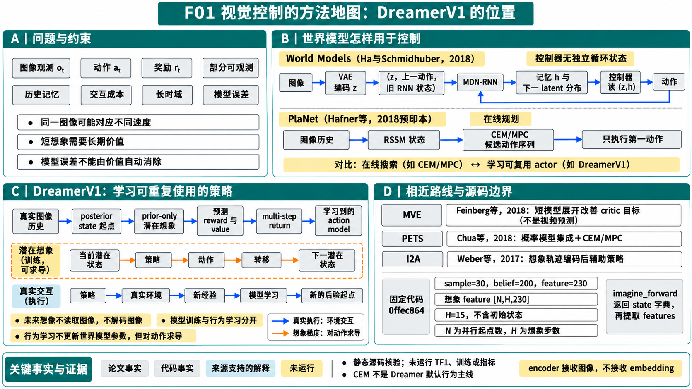
db2cc1e03ed701af70555fc4604d137a72ca14290fa1744194dc09ddeb6131b4图 F01 全部细节说明：视觉控制的方法地图：DreamerV1的位置
视觉控制问题怎样引出 Dreamer 的方法位置
这幅方法地图从图像控制的困难出发，比较世界模型的几种用法，再定位 DreamerV1 的策略学习。A 区解释问题约束，B 区分别阅读 World Models 和 PlaNet，C 区追踪 Dreamer 的想象与交互闭环，D 区放置相近路线及固定代码接口。方法之间的并列比较不表示它们都是 Dreamer 的内部组件，也不表示时间先后足以证明直接继承。
A：图像、记忆、长期回报与交互成本
观测 o_t、动作 a_t 和奖励 r_t 分别表示 agent 看见什么、执行什么以及任务给出什么反馈。图像不能直接保证包含完整环境状态：同一位置的小球可能正在向左或向右移动，单帧近似相同，下一步控制却不同。因此需要历史记忆或可表达不确定性的状态，而不是仅把每帧压缩成一个静态向量。
长时域任务又要求动作考虑当前窗口之外的后果。短想象能减少模型反复预测造成的误差，但单纯累加短窗口奖励会忽略延迟收益；价值估计提供另一种补偿。它并不会自动消除动力学误差，错误状态上的高价值仍然可能误导策略。真实交互的时间和样本成本使模型复用有吸引力，但模型训练本身也需要有效的数据分布。A 区将这些约束并列，避免把概念卡片误画成一条没有来源的数据流。
B：World Models 的视觉、记忆与控制器
Ha 与 Schmidhuber 在 2018 年提出的 World Models 将视觉压缩、时间预测与控制分开。VAE 从图像产生潜变量 z；MDN-RNN 根据潜变量、动作和已有循环状态预测未来潜变量的分布，同时维护记忆 h；控制器读取 z 与 h 的联合信息并输出动作。控制器自身没有另一套独立循环状态，历史信息来自世界模型的记忆。
图中的动作反馈属于同一方法行内的下一步动力学依赖，不能把反馈线改成“控制器又是一个 RNN”。该方法的小控制器可以通过策略搜索学习，其优化对象和信用分配方式与 Dreamer 的解析动作梯度不同。VAE 解码用于表示学习或诊断，不能凭视觉重建图就推断控制器每次执行都要先生成未来像素。
B：PlaNet 将潜在模型交给在线规划
PlaNet 的 2018 年预印本从图像历史建立带确定性记忆与随机状态的 RSSM。它在当前潜在状态上用 CEM/MPC 搜索候选动作序列，依据模型预测回报选择序列，再执行第一个动作。新观测到来后重新更新状态和规划，因此搜索发生在每次控制决策，而不是先训练一个可反复直接调用的 actor。
这条行内链依次表示历史表示、候选序列评价和真实执行。它与 World Models 的控制器输入、训练和动作选择不同，也与 Dreamer 的真实执行策略不同。两行之间不使用实线数据箭头，因为图中比较的是两个独立系统，前一方法的输出不会在 Dreamer 运行时作为另一个方法的输入。
C：从后验起点学习可重复使用的策略
DreamerV1 先用真实图像历史推断后验模型状态，再从这些状态分叉潜在想象。单步顺序是当前潜在状态提取特征、策略采样动作、先验转移生成下一状态。之后继续重复，未来没有真实观测校正，也不在循环中重建图片。每个预测状态的特征供奖励和值函数读取，再形成多步回报估计和动作、价值学习目标。
这条预测与目标链描述训练信号。它不能被误画成“先得到最终 return，再把它作为策略每一步的前向输入”。策略前向依赖当前状态，return 通过学习目标改变策略参数；图中的二者需要明确区分。行为学习使用固定世界模型的运算取得对动作的导数，动作优化器更新 action head，世界模型参数不由这一步同时更新。
另一条真实交互闭环是学到的策略选择动作，环境产生新经验，数据进入模型学习，形成更新后的后验起点。真实环境不会读取训练数据集来生成当前观测，数据集保存的是已经发生的交互。世界模型学习、行为学习与经验收集在论文 Algorithm 1 中交替组织，各自消费者与参数角色不同。模型内可微通路也不会穿过真实环境。
D：相近方法提供不同的桥接思路
MVE 通过短模型展开和长期 critic 补偿改善价值学习目标，重点不是视频预测；PETS 用概率动力学模型集成，在规划中传播不确定性并选择动作；I2A 将想象轨迹编码后辅助策略，让 agent 学习如何利用可能不完美的预测。MVE 的作者为 Feinberg 等、PETS 为 Chua 等，均在 2018 年发表；I2A 为 Weber 等 2017 年工作。
这些行帮助读者比较模型用于哪里、谁选择动作、目标如何计算，不能被串成 Dreamer 必需的子模块。PETS 的模型集成和 I2A 的轨迹编码器都不能因为有概念联系就画入固定 Dreamer 源码。该地图也不按不同论文中任务与预算未对齐的数字给出统一性能排名。
固定源码把抽象状态变成什么对象
在提交 0ffec86436239d41cecaff34abcf57dca5539839 中，随机样本宽三十、信念宽二百，特征仅拼二者得到二百三十维。imagine_forward 合并真实批次与时间轴，返回各叶子形状为 [N,H,D] 的状态字典；函数外提取特征后才是 [N,H,230]。N 为并行起点数，H 为想象步数，不能把三十维样本误认为三十条轨迹。
连续控制默认 H=15，返回序列不含初始化后验。RSSM 的零嵌入是 [N,1024]，只满足接口签名，不经过图像编码器。具体接口见 dreamer/models/base.py:68-80、dreamer/models/rssm.py:55-120 和 dreamer/training/utility.py:244-267。这些是固定代码事实，不能代替各论文各自的状态定义。
论文事实、源码事实、来源支持解释和未运行事项在图中分别标注。方法关系建立在当前任务已锁定的完整论文与代码上；本任务没有执行 TensorFlow 1、环境、训练或指标复现。CEM 作为 PlaNet 的核心动作选择和 Dreamer 仓库的可选规划能力出现，不能因此成为 DreamerV1 默认行为主线；后续版本的离散状态与其他机制也不倒写进本图。
四层方法网络的横向对照
第一层：问题背景
视觉控制把观测从低维状态变成高维图像，并且环境通常部分可观测、奖励稀疏、接触动力学复杂。纯 model-free actor-critic 需要大量真实交互；像 PlaNet/PETS 这样的 model-based 方法要么每步在线规划成本高，要么必须控制模型误差和不确定性。DreamerV1 的问题定义是：能否把真实经验压缩到一个可预测的 latent state，在其中批量想象未来，并用可微的长期 value 直接学习策略？
第二层：方法范式
| 范式 | 代表 | 表示 | 行为派生 | 主要代价 |
|---|---|---|---|---|
| 两阶段世界模型 + 控制器 | World Models | VAE latent + RNN | 模型内进化线性控制器 | 表示与策略目标脱节 |
| RSSM + 在线规划 | PlaNet/PETS | 随机/确定性潜状态或 ensemble | CEM/MPC 每步重规划 | 在线计算、模型误差 |
| 想象特征辅助 model-free | I2A | rollout 编码为额外特征 | 主策略仍 model-free | imagination 不是主闭环 |
| 多步值 target | MVE/STEVE/MBPO | 真实 replay 状态 + 短 rollout | Q target 修正 | 梯度不穿过长期转移 |
| 潜变量 actor-critic | SLAC | stochastic latent | latent SAC/critic | 重点是表示与样本效率 |
| 可微 latent imagination | DreamerV1 | RSSM state + belief | action/value model + | 依赖模型可微与短期准确 |
| 任务相关模型 + 搜索 | MuZero | reward/value/policy hidden state | MCTS | 搜索树与任务结构依赖 |
| 去重建/离散/规模化 | Dreaming/DreamerV2/V3 | contrastive/discrete/normalized | latent imagination | 后续工程和表示替换 |
第三层：核心机制槽位比较
DreamerV1
- 问题：有限 imagination horizon 的短视与高维图像交互成本。
- 输入/输出：图像、动作、奖励序列 → posterior/prior latent state、action、value 和 imagined returns。
- 表示：RSSM 的 stochastic state 与 deterministic belief 拼接成 feature；默认 latent stochastic size 30、belief/model hidden size 200（论文附录将 latent distribution 说明为 30 维，源码默认
model_size=200）。 - 选择：representation 用当前图像后验更新；imagination 只用 transition，不再访问图像；policy/value 只读 latent feature。
- 变换/融合：GRU belief + dense prior/posterior heads；reward/value/action heads 在 feature 上分别计算。
- 状态更新：真实序列用 posterior，梦境序列用 prior；环境 reset 时状态清零。
- 学习信号：重建/奖励/KL 或 CPC 表示目标，value regression，action value maximization；KL free nats 和可选 pcont。
- 推理：真实历史编码为 state，action head 采样或 mode，加入探索噪声，执行环境动作；训练期 action/value 在 imagined state 上更新。
- 复杂度：一次 batch 共享 posterior 起点，
tf.scan并行展开 H 步；相比 MPC 省去每个环境步的候选动作搜索，代价是反向传播图和世界模型误差。 - 失败模式：重建目标可能把容量用于无关像素；horizon 太长导致模型误差；纯 reward prediction 在稀疏奖励下不足；离散 straight-through 梯度只是近似。
PlaNet/PETS
它们的表示或模型与 Dreamer 局部重叠，但行为选择依赖在线规划。PETS 以 ensemble uncertainty 处理模型可信度；PlaNet 以 RSSM + CEM 规划。Dreamer 将该计算转换为 offline/batched policy learning，减少推理时搜索但暴露模型长期误差。
MVE/STEVE
它们把 learned dynamics 用作多步 target，目标是改善 Q 学习；Dreamer 把 value model 变成 latent environment 的 critic，并允许 action gradient 穿过 state transition。这是“target correction”到“policy optimization through model”的机制跃迁。
第四层：代码实现层
源码事实集中在固定 commit 0ffec864...。RSSM._posterior 先调用 _transition_tpl 得到 prior belief，再与 CNN embedding 拼接产生 posterior mean/stddev；RSSM._transition 将 sample 与 action 拼接，经 dense + GRUBlockCell 更新 belief，再输出 prior Gaussian。utility.imagine_forward 将 batch/time 展平，用零 observation 和 use_obs=False 调用 cell，tf.scan(..., back_prop=True) 保留 imagination 梯度。compute_value_loss 用 control.lambda_return 构造 stop-gradient return target；compute_action_values 用同一 return 但 stop_gradient=False 允许 action gradients。configs.py 将 imagination_horizon=15、action_discount=.99、action_lambda=.95、state_size=30 和 model_size=200 绑定到默认 Dreamer 配置。
方法演化
World Models → PlaNet：从两阶段 controller imagination 到联合 RSSM + online planning；PlaNet → DreamerV1：从 CEM 规划到 action/value policy iteration 和 analytic gradients；DreamerV1 → Dreaming：替换重建表示目标；DreamerV1 → DreamerV2：离散 latent、独立世界模型训练和 Atari 规模；DreamerV2 → DreamerV3：跨域归一化和工程规模化。每条演化边都必须由全文或源码证据支撑，不能只凭名称相似。
2f69e4d4d4762a96a65196768e7e71c06c95c7352cda56c78d2f8c19693e1b7a图 F10 全部细节说明：F10表示与控制的演化：前序、同期与Dreaming
表示学习、动作选择与想象梯度怎样演化
这幅图从方法脉络、状态表示、控制选择和同期路线四个角度比较 DreamerV1。A 给出时间与证据关系，B 解释每种方法保存什么状态，C 比较谁在真实执行时选择动作、训练时如何优化，D 放置其他相近方法。时间线提供位置，机制联系则必须由论文内容支持；不能把不同方法按发表顺序串成一个可执行系统。
A：时间相邻不等于直接继承
I2A 为 Weber 等 2017 年工作，World Models 为 Ha 与 Schmidhuber 2018 年工作，PlaNet 在 2018 年公开预印本。DreamerV1 的预印本出现在 2019 年，论文发表于 ICLR 2020，作者为 Hafner、Lillicrap、Ba、Norouzi。Dreaming 于 2020 年提出后续路线；当前任务锁定的 v2 PDF 是 2021 年版本，不能把读到的版本时间与首发年份混为一个字段。
直接机制联系和横向比较承担不同含义。Dreamer 与 PlaNet 共享潜在动力学背景，改变的是从模型产生行为的方式；Dreaming 明确以 Dreamer 的潜在行为学习为基础，改变表示学习目标。PETS、MVE、I2A 等能够帮助解释另一种设计选择，却不能因都使用模型或都在附近年份发表，就被标成 Dreamer 内部模块或已证明的直接继承链。
B：潜变量、记忆与状态模型
World Models 的 VAE 从图像得到视觉潜变量 z，MDN-RNN 保存记忆 h 并预测后续潜变量分布。控制器读取 z 与 h，不能把视觉潜变量当作已经包含所有运动历史的完整状态。PlaNet 的 RSSM 进一步把确定性记忆与随机状态统一到可用于图像历史推断和未来预测的潜在动力学接口中。
DreamerV1 的真实观测路径利用后验校正当前状态，未来想象路径只使用先验转移。固定源码的策略特征为随机样本三十维加信念二百维，共二百三十维；均值、标准差和递归字段仍在状态字典中。图中不能只写“策略读 z”而丢掉确定性记忆，也不能把后续版本的离散 latent 倒写进 DreamerV1 的连续高斯状态。
Dreaming 保留 RSSM 与潜在行为学习，主要将像素重建表示目标替换成对比目标，并引入独立线性预测与随机裁剪。线性辅助模型服务对比表示，原 RSSM 仍负责行为想象；二者的消费者不同。把辅助线性模型画成完全替代 GRU 的世界模型，会改变后续论文的机制。
C：动作在执行时由谁产生
World Models 的控制器从视觉潜变量与世界模型记忆产生动作，自身没有另一份独立循环状态。其小控制器可通过策略搜索学习，训练所需的信用分配与 Dreamer 的解析导数不同；不能仅凭模型可生成梦境，就说它已经实现了 Dreamer 的 actor/value 梯度循环。
PlaNet 用 CEM/MPC 在当前模型状态下搜索动作序列，并只执行第一步。新的真实观测到来后再推断状态、重新规划。因此它在测试时持续支付搜索成本，输出动作由当次优化的序列决定。DreamerV1 则在训练时通过潜在轨迹的状态、奖励和价值预测对动作求导，学习一个可反复使用的 action model；真实交互默认直接执行这个策略，而不需要每步搜索整段序列。
这种区别不是“一个有模型、一个无模型”。两者都使用动力学预测，差别在预测被用于在线动作搜索，还是被用于训练可重复执行的策略。Dreamer 的长期值补偿缓解有限想象窗口的短视，但仍受到模型误差和价值误差的影响，不能用行为选择方式推断它在所有任务中的效果。
Dreaming 的行为优化继续沿用 Dreamer 的 RSSM 想象与策略、价值学习。后续改变属于表示监督与相关辅助结构，不是固定提交 0ffec864 中已经实现的模块。论文中的诊断解码器也不能被当作重建损失重新进入主模型训练的证据：用于观察表示的解码器可以独立训练，而不把重建导数传回主要表示模型。
D：五种相近路线的比较维度
MVE 用短模型展开提高 critic 的目标估计质量，远期仍由价值函数补偿；PETS 用概率模型集成、轨迹传播和 CEM/MPC 处理动作选择及不确定性；I2A 用 rollout encoder 将预测轨迹编码后辅助策略。这三者分别把模型放在目标构造、在线规划和策略输入位置，不能简单称为同一种“想象算法”。
SLAC 学习潜在表示支持最大熵 actor-critic，其控制学习与 Dreamer 的 prior-only 行为展开不同；MuZero 学习与奖励、价值和策略相关的模型量，并通过 MCTS 搜索选择与训练行为，不能把搜索回传等同于 Dreamer 的解析动作导数。各行需要分别比较表示、优化对象、测试时搜索和梯度路线，不以未经任务与预算对齐的基准分数统一排序。
一个延迟奖励问题的横向阅读
设一个动作的有用后果要在当前短窗口之后出现。在线规划可以增加搜索视野，但会增加计算并可能累积模型误差；MVE 类路线用模型改善价值目标；Dreamer 用价值预测补偿窗口外的收益，并沿模型内多步运算训练动作头。不同路线面对同一个长期依赖问题，采用的是不同消费者和优化对象。这个例子是机制解释，不是一项所有方法都运行过的共同实验。
在表示层，小物体占像素面积很小可能使总重建误差弱化它的作用；Dreaming 通过对比目标改善一些此类任务，但论文也报告平面运动任务中的局限。背景纹理可能提供速度信息，过强的不变性反而会删掉控制所需线索。因此“替换重建目标”不是无条件进步，也不意味着原 Dreamer 的表示消融与后续任务结果可以合成一张统一排行榜。
来源、视觉关系和版本边界
方法年份、作者和机制来自当前任务锁定的 World Models、PlaNet、MVE、PETS、I2A、SLAC、MuZero、DreamerV1、Dreaming 完整论文。Dreamer 的默认连续配置 H=15、λ=0.95、γ=0.99 来自其论文和固定源码，只用于解释这个版本。蓝色箭头限制在单个方法内部的数据依赖，橙色只表示所述导数路径；跨方法联系以文字和不同线型说明关系类型，不能冒充实际输入输出。
本任务未运行训练或复现指标。方法网络应帮助读者回到各自的机制与实验，而不是把实现配置当作论文结论、把后续论文当作当前源码，或把所有世界模型都化约成同一套控制流程。
图中时间语义和线型的补充读法
C 区底部的 R46 时间条是执行时序的局部放大：当前观测 o_t、记忆状态 s_{t-1} 与上一动作 a_{t-1} 先进入 posterior 更新，更新后的 posterior feature 才交给 action head 产生新动作 a_t。这条顺序用于防止把刚选出的动作倒接成当前观测的原因。它与 A 区的发表时间线是两个不同层次：发表时间只给方法位置，不能替代机制继承证据。
A 区蓝色时间线箭头只连接同一时间线上的相邻方法，黄色条明确写出“时间相邻 ≠ 直接继承”；下方灰色虚线表示独立方法的横向比较。B、C、D 各行的实线只在一个方法内部表示真实数据或机制关系，跨论文的联系通过文字和证据关系卡表达。DreamerV1 的橙色条专门表示训练时沿 imagined state/reward/value 对动作求导，不能把同期方法的搜索或 MCTS 画成同一条解析梯度路径。
底栏固定 H=15、lambda=.95、gamma=.99 只是当前论文/代码版本的配置事实；来源支持关系和实现配置边界分开标注。本任务没有运行训练或指标，D 区的“不做 benchmark 排序”因此是证据边界，而不是性能结论。
World Models（arXiv:1803.10122，v4）独立学习分析
来源身份与阅读边界
本分析以任务目录中的 1803.10122.pdf 为唯一论文事实来源。PDF 首页标明标题为 World Models，作者为 David Ha 与 Jürgen Schmidhuber，版本为 arXiv:1803.10122v4 [cs.LG] 9 May 2018，全文 21 页；PDF 元数据给出 ICML 2018 论文集信息，但这里不把元数据当作版本替代。逐页文本、公式、主文图 1--21、附录图 22--29、表 1--2 和参考文献均已阅读。本文没有读取代码，因此“源码”部分只报告论文明确公开的伪代码、张量配置和代码边界，不虚构仓库函数。
创建背景与问题
论文从一个很具体的瓶颈出发：像素输入包含大量空间信息，历史又包含速度、遮挡、随机事件等时间信息；直接让模型自由度很大的循环网络同时承担感知、记忆、控制和奖励信用分配，会使强化学习的搜索空间与长程信用分配成为瓶颈（PDF 第 1--2 页）。作者以人的“心智模型”和棒球击球的瞬时预测作直觉引入，但技术问题是如何把大容量、可微、无监督训练的世界模型，与小容量、容易优化的控制器拆开。该工作将复杂度分为视觉 V、记忆/动力学 M、控制器 C 三块：先用随机策略收集图像和动作，再独立训练 V 和 M，最后只在小型控制器上用 CMA-ES 优化任务奖励。历史可用的知识是 VAE、LSTM、MDN、进化策略和早期 Schmidhuber 的 C--M 世界模型工作；论文不声称已经解决一般世界，而是用 CarRacing-v0 和 VizDoom Take Cover 展示可行性。
概念、输入输出与机制地图
V 是变分自编码器，将每个 64×64×3 RGB 帧 x_t 压到 z_t；CarRacing 使用 32 维、Doom 使用 64 维。其输出不是控制动作，而是可解码回像素的低维随机表征。M 是 LSTM 加混合密度网络（MDN-RNN），输入当前 z_t、动作 a_t 和隐藏状态 h_t，输出下一潜变量的条件分布 P(z_{t+1}|a_t,z_t,h_t)；Doom 还输出死亡事件的概率。C 是线性层，将 [z_t,h_t] 映射到动作：
a_t = W_c [z_t; h_t] + b_c。
在真实环境中，循环顺序是先 z_t=V.encode(o_t)，再 a_t=C([z_t,h_t])，环境返回 o_{t+1},r_t,done，最后 h_{t+1}=M.forward([a_t,z_t,h_t])（第 3--4 页的伪代码和图 8）。所以 z_t 表示“眼前是什么”，h_t 表示由历史和动作形成的未来分布摘要；控制器不直接看到原始像素。
VAE 的形式化
编码器对帧给出 μ(x_t),σ(x_t)，从 q(z_t|x_t)=N(μ,σI) 采样，解码器给出重建 p(x_t|z_t)。训练目标是重建 L2 损失加 KL 正则，使潜变量受标准高斯先验约束。这个约束有两个作用：一是限制每帧可携带的信息量，二是让 M 生成的、并不完全落在编码器真实样本上的 z 仍能被解码器处理（附录 A.1，第 13 页）。编码不是任务监督的，因此它可能重建不重要的砖墙纹理，却漏掉对奖励有用的道路细节；第 12 页讨论明确承认这一限制。
MDN-RNN 的形式化与采样
MDN 对每个潜变量维度输出 K=5 个高斯成分的混合系数 π_k、均值 μ_k 和对角尺度 σ_k；相关矩阵 ρ 不建模。概念上，
p(z_{t+1}|a_t,z_t,h_t)=Σ_{k=1}^K π_k N(z_{t+1}; μ_k, diag(σ_k^2))。
LSTM 负责更新 h_t，MDN 负责将一个确定的隐藏表征转成多模态预测。多模态并非装饰：Doom 中“怪物是否发射火球”是近似离散模式，单一对角高斯只能把两个模式糊成一个平均结果。采样时将尺度和随机抽样受温度 τ 调节；提高 τ 会增加梦境中的随机性和难度，降低 τ 近似确定性但容易让控制器钻模型漏洞。Doom 的 done 不直接按伯努利抽样，而是当死亡概率超过 50% 时截断，这在附录 A.2 被解释为低概率死亡事件下更稳定的阈值策略。
控制器与优化
CarRacing 控制器只有 867 个参数，Doom 为 1,088 个参数。线性控制器的动作随后经 tanh 限幅；赛车转向范围为 [-1,1]，油门和刹车为 [0,1]；Doom 将离散左/停/右动作编码到连续 [-1,1] 再分成三段（附录 A.3）。CMA-ES 每代用 64 个个体，每个个体在 16 个随机种子上 rollout，适应度是 16 次累计奖励的均值；赛车每 25 代用 1,024 次 rollout 检测最佳个体（附录 A.4，第 14 页）。这种黑箱优化只需要末端累计奖励，不需要每步可微奖励梯度，正是把信用分配压力限制在小矩阵上的关键。
训练与推理顺序
CarRacing 先收集 10,000 个随机 rollout；VAE 在一轮数据上训练，输入是归一化的 64×64×3 像素，z∈R^32；然后用教师强制（真实序列中的 z_t 和 a_t）训练 20 个 epoch 的 256 单元 LSTM-MDN-RNN。教师强制阶段对每帧预计算 μ,σ，每次构造 batch 时从该高斯重采样，避免 RNN 记住某一次潜变量样本（附录 A.2）。CMA-ES 冻结 V、M，在真实环境中 rollout 并最大化奖励。Doom 同样随机采样 10,000 条轨迹，但 M 同时预测 z_{t+1} 和 done_{t+1}，于是可把 M 包装为具有 reset、step、done 的 Gym 环境；控制器完全在潜空间梦境中训练，最后才回到真实 VizDoom。
推理时有两种模式。第一种是真实环境闭环：每一步重新编码像素并更新 LSTM。第二种是“做梦”：给定初始 z_t,h_t，按动作采样 MDN 的 z_{t+1}，把样本作为下一观测输入 C 和 M；VAE 解码仅用于可视化，不是潜空间控制的必要环节。梦境可以比现实更随机，也可以在推理时发现 M 的错误。论文强调它不进行显式多步搜索；赛车控制器直接读取 h_t 中的未来分布摘要进行反射式动作。
贯穿方法的教学计算（标注为教学例，不是论文数据）
设某时刻 z_t=[0.2,-0.1]、h_t=[0.5,0.3]，动作矩阵一行是 [1,2,-1,0.5]，偏置为 0.1，则线性输出为 1×0.2+2×(-0.1)-1×0.5+0.5×0.3+0.1=-0.25；经 tanh 得约 -0.245，代表向左。随后 MDN 有两个成分：π=(0.7,0.3)，均值分别 [0.1,0.0]、[-0.4,0.2]，尺度均为 0.1。温度 τ=1 时先按 0.7/0.3 选成分，再采样，例如选第一成分得到 z_{t+1}=[0.18,-0.04]；若将尺度乘 1.3，样本方差变大，多个 rollout 会分开。这个例子说明 C 的输入是当前视觉与历史预测的拼接，而 M 的输出是分布，不是单点；它不证明论文中某个样本恰好取这些数。
实验图表逐项解释与证据
CarRacing 的图 9 展示随机生成赛道和三维连续动作；图 10 的 VAE 重建显示细节损失但保留道路、车和方向等任务相关结构；图 11 与 12 是核心消融：只给 z_t 的线性 C 得分 632±251，加 40 单元隐藏层得 788±141，而同时给 z_t,h_t 的完整模型得 906±21（表 1，第 5--6 页，100 次随机试验）。表 1 还列出 DQN 343±18、连续 A3C 591±45、离散 A3C 652±10 和 Gym leaderboard 838±11。这个证据支持“时间表征比单帧压缩有用”，但不能推出世界模型在所有连续控制任务都优于 A3C；赛道、随机数据和线性 C 都是特定设置。
图 13 把训练好的 C 放进 MDN 生成的赛车梦境，证明模型可用于交互式潜空间模拟，但不是独立性能指标。Doom 图 14 是 Take Cover 场景；每回合最多 2,100 步，连续 100 次平均超过 750 才算解决（第 7 页）。图 15 显示在 τ=1.15 的梦境中学会躲火球，最佳梦境个体 1,024 次 rollout 平均 959，部署真实环境 100 次得到 1092±556（附录 A.5，第 15 页）。图 16 强调真实环境得分高于更嘈杂的梦境；图 17 的 VAE 可视化也承认怪物数量可能重建错误。
图 18 是最重要的失败证据：控制器学会让 M 预测“火球神奇消失”，因为 C 能访问 M 的隐藏状态并主动寻找训练分布之外的漏洞。表 2 量化温度：τ=0.10 梦境 2086±140、真实仅 193±58；τ=0.50 真实 196±50；τ=1.00 真实 868±511；τ=1.15 真实最高 1092±556；τ=1.30 真实 753±139。温度太低产生模式坍塌（怪物几乎不发火球），太高则梦境过难。图 19 对应迭代训练和记忆回放的概念；图 20--21 是与早期 RNN 世界模型的历史关系，不能当作本实验结果。附录图 22 给出 ConvVAE 四层卷积/反卷积和张量形状，图 23 给出 MDN 解码器，图 24--25 给出 CMA-ES 赛车学习曲线和 906±21 分布，图 26--27 是只看 z 的对照，图 28--29 是 DoomRNN 训练和真实存活时间直方图。
限制、边界与相近方法
VAE 是独立无监督训练，重建目标未必保留奖励相关因素；M 只见随机策略数据，遇到控制器主动访问的分布外状态会失真；C 可读到全部隐藏状态，因而比真实玩家拥有更多“引擎内部”信息。作者提出迭代过程：真实环境采集新轨迹，M 预测观察、奖励、动作、done，再在 M 内训练 C；还提出把 M 的预测损失反号作为 curiosity 信号，但这只是未来方向，不是已验证算法。容量问题同样被明确指出：小型 LSTM 不能无限保存历史，可能灾难性遗忘；逐步 rollout 没有层级规划，未来可用外部记忆或更大序列模型。
与 PlaNet 的差异是：World Models 以 VAE+MDN-RNN 的随机潜向量和 CMA-ES 小控制器为主，通常直接执行 C；PlaNet 后来用带确定路径的 RSSM、在线数据收集和 CEM MPC。与 PETS 的差异是 PETS 在真实低维状态上用概率网络集成显式区分 aleatoric/epistemic，不依赖 VAE；与 I2A 的差异是 I2A 让 rollout encoder 学会解释可能错误的轨迹，而不是把 M 隐状态直接暴露给线性 C。论文还将 PILCO、早期 Schmidhuber C--M 和模型免费微调列为相近路线，但未提供代码实现细节。
与 Dreamer 的关系（证据强度说明）
本 PDF 发布早于 Dreamer，正文没有出现“Dreamer”一词，因此下面不是作者原话，而是由公开机制作出的证据支持推断。直接继承关系有三点：一是用视觉编码器建立低维 latent state，二是用循环世界模型按动作预测未来，三是允许策略在模型生成的未来中学习。Dreamer 相比本篇将 C 从 CMA-ES 线性控制器推进为可反向传播的 actor/critic，并在 RSSM latent imagination 上优化价值和策略；这恰好回应本篇第 12 页提出的“可微梦境中直接用 backprop 微调策略”的未来方向。不能把 World Models 的 τ 温度实验、CMA-ES 参数或 Doom 转移分数归因于 Dreamer，也不能说本篇已经实现 Dreamer 的 actor-critic。
机制推导补充：为什么把空间和时间拆开
VAE 的训练可从标准 ELBO 写成 E_{q(z|x)}[log p(x|z)]-D_KL(q(z|x)||N(0,I))。在本论文的像素设置里，若重建误差用逐像素 L2，则每个 RGB 像素的差异先平方再求和，KL 则对 32 或 64 个潜维度逐项求和。第一项鼓励 decoder 还原道路、车轮和墙面，第二项迫使不同帧的 latent 落在一个连续高斯附近；没有第二项，M 生成的、并不完全落在 encoder 真实样本上的 z 可能无法被 decoder 处理。这个解释也说明 VAE 不是简单的 PCA：它学习的是带先验约束的非线性条件分布，z 的每一维不是论文保证的某个物理量。
MDN-RNN 的训练目标是记录序列的条件负对数似然 -Σ_t log Σ_k π_{t,k} N(z_{t+1};μ_{t,k},diag(σ_{t,k}²))。梯度同时改变 LSTM 隐状态和每个 mixture head；当下一潜向量有两个互斥结果时，两个成分可以分别覆盖，而单高斯只能把均值放在两个结果之间。论文没有给出每层参数的完整矩阵，但给出了 hidden units、mixture 数、latent 维度和参数总数，因此不能反推未公开的卷积通道或优化器细节。附录说 MDN-RNN 训练 20 epoch、教师强制输入真实 z_t，而生成阶段再切换为自身样本；这正是训练/推理分布差异的来源。
控制器参数量也可以核对。CarRacing 动作维度为 3，输入是 z 的 32 维和 LSTM 的 256 维，共 288 个输入；线性层权重 3×288 加 3 个 bias 为 867。Doom 使用 64 维 z 和 LSTM 的 cell、output 各 512 维，输入 1,088 维，三动作在连续编码下的权重加 bias 与表中 1,088 参数相符（论文将动作表示和隐藏状态拼接的具体形状写在附录 A.3，不能把 1,088 误认为网络层数）。这个参数量对比 VAE 4,348,547、MDN-RNN 422,368，定量说明信用分配只作用于很小的 C。
两个训练失败路径的逐步复盘
第一条失败路径是只给控制器 z_t。单帧 latent 看得到车在道路上的当前像素，却不知道车已经连续向左偏了多少、某个弯道即将出现什么；因此动作在尖角处来回修正，图 11 的 wobbly 行为与 632±251 对应。加一个 40 单元 tanh 隐藏层把映射容量从线性增加到 1,443 参数，得分升到 788±141，但仍没有显式历史。加入 h_t 后，LSTM 已经把过去动作、潜向量和多峰未来压缩到 controller 可读的状态，完整模型 906±21 的提升不能归因于参数更多，因为完整 C 仍只有 867 参数。
第二条失败路径是低温梦境。假设 Doom 中两个真实模式的条件概率是发火球 0.6、停留 0.4，τ=0.1 会将尺度压窄，使采样几乎锁在训练时最常见的一个模式；CMA-ES 因而找到在梦中几乎永不受攻击的策略。表 2 的 τ=0.10 虚拟得分 2086 接近上限，却在真实环境只有 193±58，甚至低于 Gym leader。τ=1.15 让错误模式仍被访问，虚拟训练得分降低到 918±546，但真实得分升到 1092±556。这个现象是模型校准与策略鲁棒性的交互，不是简单地温度越大越好：τ=1.30 的真实方差下降但均值回落到 753±139，说明过度噪声又会抹掉可学结构。
迭代训练建议的证据等级
第 10 页的迭代流程是作者对更复杂任务的设计建议，不是已经在论文中完成的第二轮实验。每轮先让 C 在真实环境探索并保存 (x_t,a_t,r_t,done_t)，再让 M 学 P(x_{t+1},r_{t+1},a_{t+1},d_{t+1}|x_t,a_t,h_t)，最后在 M 内优化 C。作者推测把 M 的预测损失取负可作为 curiosity，鼓励访问模型不熟悉的区域；然而论文没有给出该 intrinsic reward 的权重、稳定性消融或最终分数。读者应将其标为 future direction，而不是把迭代训练当作 CarRacing/Doom 已验证步骤。类似地，第 12 页提出把整个 V、M、C 图反向传播来微调策略，但实际实验仍用 CMA-ES；可微性是结构潜力，不是结果。
逐图证据的可核对范围
图 1 和图 2 是动机插图，不能作为性能证据；图 3 只说明真实轨迹数据训练一个生成环境的概念。图 4 的三组件框图是架构事实，图 5 的 VAE 流程图与附录图 22 才给出实际张量入口；图 6/7 是 MDN 和 SketchRNN 类比，图 7 不代表本文使用 SketchRNN 的相关系数。图 8 是真实 rollout 伪代码，图 9 是 CarRacing 任务界面，图 10 是重建可视化。图 11--12 与表 1 是时间表征的消融证据；图 13 是梦境演示，不报告成功率。图 14--17 是 Doom 任务和转移，图 18 是模型欺骗反例，表 2 是温度敏感性；图 19--21 是迭代训练、早期工作与历史联系。附录图 24 的红线是每 25 代用 1,024 rollout 的外部评估，不应与 64×16 的每代适应度混为一谈；图 25 的 906±21 是同一最佳 agent 在 100 次 rollout 上的直方图。这样的图表分层能防止把示意图、训练曲线和外部 leaderboard 数字放在同一证据等级。
温度、模型利用与控制器的易错问题
机制覆盖补充：从真实轨迹到梦境 reset
Doom 的虚拟环境接口还需要一个初始状态约定。随机真实轨迹中的第一帧先经过 VAE 得到 z_1，LSTM 的 cell/output 初始化为零；梦境 reset 时从同一类初始潜变量开始，再由 M 输出后续 z 与 done。若 reset 分布与真实评估分布不同，CMA-ES 可能只学会某一类房间开局，这也是论文使用 100/1,024 个随机 rollout 评估而不是单条轨迹的原因。论文没有报告 reset 潜变量是否额外采样或如何处理 episode 边界，因此这里保留为实现边界，不补造细节。
赛车环境的 reward 是访问赛道 tile 并尽快完成，M 在 CarRacing 训练时只预测潜向量而不预测 reward；因此 C 的 CMA-ES 适应度必须通过真实 Gym 环境计算。Doom 则把死亡 done 加入 M，才可以在梦中决定何时终止。这个差异说明“能在梦里训练”需要 M 至少提供观测转移和终止信号，reward 是否由模型内部产生取决于任务设定；不能把 CarRacing 的无 reward M 误写成完整 Gym 模拟器。
在随机数据不足的状态上，MDN 的多成分并不会自动产生正确的物理模式。高温采样只是把已学到的成分混合得更宽，不能代替主动探索。作者在第 10 页提出用 M 的预测 loss 反号作为 curiosity，恰好承认模型不确定区域需要新数据；但该提议没有与温度实验合并，也没有证明 curiosity 会减少 adversarial policy。因此要把已验证的温度转移和未验证的迭代 curiosity 明确分开。
读者最容易混淆的是“VAE 重建好”与“控制状态充分”并不等价；图 11--12 说明时间隐藏状态是性能增益来源。第二个误区是 MDN 温度不是训练 loss 权重，而是采样时控制随机性的旋钮；它既改变梦境难度，也改变模型漏洞的可利用程度。第三个误区是“在梦中训练成功”不等于真实环境成功，表 2 和图 18 明确给出反例。第四个误区是 Doom 实验没有在真实 VizDoom 上训练 C：真实引擎只用于随机数据收集和最终评估，C 的训练发生在 DoomRNN 潜空间（附录 A.5）。本分析的源码边界是论文伪代码、参数表和架构描述；没有任何作者仓库函数或行号可报告。
还应区分“世界模型能生成”与“世界模型足以控制”。VAE 的重建指标只约束像素平均误差，MDN 的似然只约束随机策略访问过的条件；两者都没有直接要求保留碰撞、可通行性或奖励所需的信息。论文在第 12 页举出 CarRacing 路面细节被漏掉而 Doom 砖墙细节被保留的相反例子，说明单纯增加 latent 维度未必解决任务相关性。把 reward head 纳入 M 可以改变 representation，但会降低 V 跨任务复用能力，这个取舍是本文真实边界。
最后，C 访问 h_t 并不意味着它能任意读取环境真状态。h_t 只是 LSTM 对已经观察到的 z、动作以及 M 参数的压缩；若随机策略数据没有覆盖某个隐藏模式，h 也只能按训练分布外推。相反，在 Doom 梦境中 C 能通过动作主动寻找使 h 进入漏洞区域，所以“压缩历史”与“暴露引擎内部状态”同时存在。这个双重角色解释了为什么作者一方面把 h 视为稳定驾驶的记忆，另一方面把它视为模型作弊的攻击面。
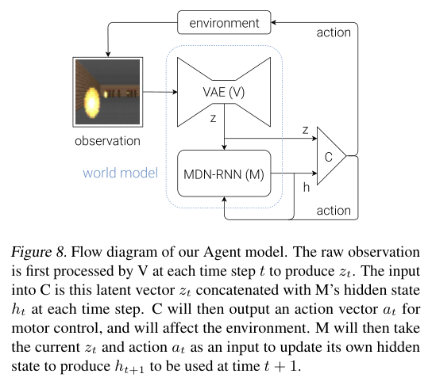
a241452295d4ccc7572340eee6ce49fa30b8e0179db5d43b066d5d54e98b4f4b原论文图表解读：World Models 的 V-M-C 闭环
World Models · Figure 8
图表说明：图 8 展示原始观测先经 VAE 得到 z_t，再与 MDN-RNN 的隐藏状态 h_t 拼接输入线性控制器 C；动作回写环境并更新记忆。
进一步分析：结构中 V 负责逐帧压缩，M 根据 z_t 与动作产生 h_{t+1}，C 读取 [z_t,h_t] 输出连续动作。图中闭环箭头说明控制器并不直接读取像素，也不需要显式规划未来；记忆状态提供对下一潜向量分布的预测信息。
证据边界：图只说明模块的数据流，不能从图中推断 VAE、MDN-RNN 或 CMA-ES 的具体层数、训练轮数和随机种子。
来源：04_cross_paper/paperqa_corpus/1803.10122.pdf，SHA-256 b0c1e30aab53efd28ddf61d661f680150918d4d03b77bae62bc52d62dbd76cce，PDF 第 3 页；原始整页：10_figures/original-paper/full-pages/1803.10122-p3.png；裁剪框（PDF points）：(301, 507, 548, 730)；裁剪图：10_figures/original-paper/assets/1803.10122-figure-8-p3-crop.png，SHA-256 a241452295d4ccc7572340eee6ce49fa30b8e0179db5d43b066d5d54e98b4f4b。
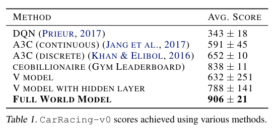
e1e15e0e6a6b94c9ce901500e226dc16418b522e13e0c1ff07dc119bee68828b原论文图表解读：CarRacing-v0 方法得分
World Models · Table 1
图表说明：表 1 报告 CarRacing-v0 在 100 次随机试验上的平均分与标准差，比较 DQN、A3C、排行榜、仅 V 模型、带隐藏层的 V 模型和完整 World Model。
进一步分析：完整 World Model 达到 906±21，高于排行榜 838±11、V 模型 632±251 以及只加隐藏层的 788±141；这正好对应 Figure 8 中把 h_t 接入 C 的机制。均值提升同时伴随方差显著下降，说明时间记忆既提高回报也改善驾驶稳定性。
证据边界：表格是 CarRacing-v0 的 100 次随机试验，不代表 VizDoom 或其他环境；不同基线的预处理和训练协议也由论文分别设定。
来源：04_cross_paper/paperqa_corpus/1803.10122.pdf，SHA-256 b0c1e30aab53efd28ddf61d661f680150918d4d03b77bae62bc52d62dbd76cce，PDF 第 6 页；原始整页：10_figures/original-paper/full-pages/1803.10122-p6.png；裁剪框（PDF points）：(50, 430, 296, 552)；裁剪图：10_figures/original-paper/assets/1803.10122-table-1-p6-crop.png，SHA-256 e1e15e0e6a6b94c9ce901500e226dc16418b522e13e0c1ff07dc119bee68828b。
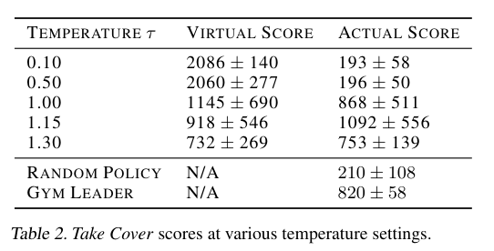
e145a75333f6d915919e10f63cf9542ef19473b7a9bffb2352d5dbfd1e19393b原论文图表解读：温度参数与虚拟环境迁移
World Models · Table 2
图表说明：表 2 报告在不同 MDN-RNN 温度 τ 的虚拟得分与实际 Take Cover 得分，并列出随机策略和 Gym leaderboard 参考。
进一步分析：低温 τ=0.10/0.50 时虚拟得分很高但实际仅约 193–196，显示控制器会利用确定性模型漏洞；τ=1.15 时实际分数达到 1092±556，超过 τ=1.30 的 753±139，说明提高不确定性能抑制作弊但过高又使训练困难。虚拟分数与实际分数的反转是模型内训练与真实环境迁移的直接边界证据。
证据边界：温度是该论文 MDN-RNN 的采样超参数，不能解释为 Dreamer 的 RSSM 温度；表中策略仍受特定 Take Cover 任务和 100 次 rollout 限制。
来源：04_cross_paper/paperqa_corpus/1803.10122.pdf，SHA-256 b0c1e30aab53efd28ddf61d661f680150918d4d03b77bae62bc52d62dbd76cce，PDF 第 10 页；原始整页：10_figures/original-paper/full-pages/1803.10122-p10.png；裁剪框（PDF points）：(50, 178, 296, 303)；裁剪图：10_figures/original-paper/assets/1803.10122-table-2-p10-crop.png，SHA-256 e145a75333f6d915919e10f63cf9542ef19473b7a9bffb2352d5dbfd1e19393b。
Learning Latent Dynamics for Planning from Pixels（PlaNet，arXiv:1811.04551v1）独立学习分析
来源身份与阅读边界
本章只依据任务目录中的 1811.04551.pdf。PDF 首页写明题目 Learning Latent Dynamics for Planning from Pixels，作者 Danijar Hafner、Timothy Lillicrap、Ian Fischer、Ruben Villegas、David Ha、Honglak Lee、James Davidson，版本 arXiv:1811.04551v1 [cs.LG] 12 Nov 2018；全文 17 页，附录 A--E 同在该 PDF。正文和附录的公式、算法 1--2、图 1--8、表 1 已逐页阅读。论文自称提出 Deep Planning Network (PlaNet)，这里不会把后续 Dreamer/RSSM 实现或任何未读取代码写成本文事实。
创建背景：从像素规划的难点出发
已知动力学时，规划可以评估大量动作序列；未知环境若只看像素，就必须同时学习压缩表示、部分可观测状态、随机未来和奖励。论文第 1--2 页列出四个失败点：图像模型的多步误差累积、多个合理未来无法由确定性预测表达、模型在训练分布外过度自信、以及直接在高维像素空间规划过慢。此前低维 PILCO、局部线性 latent 模型或视频预测已经显示局部可行性，但难以处理接触、较长规划和稀疏奖励。PlaNet 的历史知识是变分推断、RNN/状态空间模型、模型预测控制（MPC）与交叉熵方法（CEM）；它把数据收集和规划做成闭环，而不是先用固定随机数据把所有动力学学完。
问题定义与整体机制
环境被写成部分可观测 MDP：隐藏状态 s_t、图像 o_t、连续动作 a_t 和标量奖励 r_t。生成模型为 s_1~p(s_1)，s_t~p(s_t|s_{t-1},a_{t-1})，o_t~p(o_t|s_t)，r_t=r(s_t)；真实策略依赖历史 p(a_t|o_≤t,a_<t)。PlaNet 不学习直接输出动作的策略网络，而是由当前历史推断状态信念 q(s_t|o_≤t,a_<t)，在模型内搜索一段动作序列，只执行第一步然后重新观测和规划（第 2 页）。
训练循环（算法 1）是：先用随机动作收集 S=5 个 seed episodes；随机抽取长度 L=50 的序列 chunk，按第 4 节损失更新模型 C=50 个 step；再 reset 环境，每个时间点用 CEM 规划，叠加 N(0,0.3) 探索噪声，将动作重复 R 次并把整段轨迹加入数据集。这样新数据集中包含当前模型认为有价值的区域，模型持续被修正。训练和推理均不需要解码未来图像，因为奖励预测器直接在 latent state 上计算。
RSSM：随机与确定路径如何互补
纯随机状态空间模型让每一步都采样，少量离群 latent 会使开环轨迹发散；纯确定性 RNN 又无法表示部分可观测环境中的多个未来，且容易被规划器利用。PlaNet 的 recurrent state-space model（RSSM）把确定性记忆 b_t 和随机状态 s_t 分开：
b_t = b(b_{t-1},s_{t-1},a_{t-1})，
s_t~p(s_t|b_t)，
o_t~p(o_t|b_t,s_t)，r_t=r(b_t,s_t)。
推断网络是卷积编码器 q(s_t|b_t,o_t)；确定性 b_t 由 RNN 保存所有历史，随机 s_t 表示当前不可预测因素。规划时从当前过滤后信念采样 s_t，沿确定性 b 和动作前向滚动，不生成像素。固定标准正态 global prior 的额外 KL 防止在近确定环境中 posterior 坍缩（第 5 页）。图 2 的三栏直接对比：RNN 只有方形确定节点，SSM 只有圆形随机节点，RSSM 同时存在两条路径。
标准变分目标与 latent overshooting
标准序列变分下界（式 3）每步包含重建期望和 posterior 与一步 temporal prior 的 KL：
Σ_t [ E_{q(s_t|o_≤t,a_<t)} log p(o_t|s_t) - D_KL(q(s_t|o_≤t,a_<t) || q(s_t|o_≤t-1,a_<t)) ]。
其中一步先验 q(s_t|o_≤t-1,a_<t) 是从前一 posterior 经 transition 积分得到。问题是 transition 只通过一步 KL 接收训练信号，而规划要求多步开环一致。论文先定义 variational overshooting（式 5）：对每个距离 d=1..D，从只看到 o_≤t-d 的多步先验预测 s_t，再与看到了 o_t 的 posterior 对齐。直接对所有多步状态解码像素叫 observation overshooting，代价昂贵；只在 latent 中计算 KL 叫 latent overshooting，便宜且足以训练 transition：
L = Σ_t [E_q log p(o_t|s_t) - (1/D)Σ_d β_d D_KL(q(s_t|o_≤t,a_<t)||q(s_t|o_≤t-d,a_<t))]（式 6）。
实际对 d>1 的 posterior stop-gradient，使开环 prior 朝闭环 posterior 学习，避免把闭环推断器反向拉坏。β_d 可统一或按距离递减。这个公式不是“额外的像素预测 loss”，而是多时间尺度的 latent belief 一致性正则。
CEM 规划的输入输出与内部计算
给定当前信念和模型，CEM 维护从时间 t 到 t+H 的逐时间步对角高斯 q(a_{t:t+H})=N(μ,σ²I)。算法 2 从 μ=0,σ=1 开始，每轮采样 J=1000 个序列；每个候选只采一条未来轨迹，累计 R^(j)=Σ_{τ=t+1}^{t+H+1} r_θ(s_τ^(j))；按回报取前 K=100 条，重新计算均值与无偏标准差，重复 I=10 轮，返回第一时刻均值 μ_t。每个真实动作后都重置高斯，减少局部最优。固定 action repeat 降低规划 horizon：cartpole 8、finger 2、cheetah 4、ball-in-cup 6；附录 A 还给出 H=12,I=10,J=1000,K=100。
教学数值例（非论文数据）
设 H=2、候选动作是标量，初始 μ=[0,0]、σ=[1,1]。假想采到三条序列 [0.2,0.1] 回报 3、[-0.4,0.3] 回报 1、[0.1,-0.2] 回报 2；若 K=2，精英均值为 [0.15,-0.05]，新标准差按两样本公式为约 [0.071,0.212]。下一轮动作主要集中在第一步约 0.15。真实系统执行 0.15 后获得新图像，重新推断 belief；第二步并不会直接执行旧候选。这说明 CEM 是滚动 MPC，不是一次性把整条序列交给环境，也说明单次未来采样的随机性由 RSSM latent 和模型共同提供。
实验设置与逐图逐表证据
图 1 给出六个 DeepMind Control Suite 图像任务：cartpole balance/swingup、finger spin、cheetah forward/backward、ball-in-cup catch。任务故意覆盖相机固定导致小车出视野、接触动力学、较大关节空间、长 horizon 和只在捕获成功时给奖励的稀疏情形。图 4 的中位数和 5--95 百分位（4 seeds、10 rollouts）比较了 PlaNet、无 overshooting、随机 1,000 episodes 数据集、A3C 和 D4PG。400 episodes 内 PlaNet 超过使用 proprioceptive 状态训练 100,000 episodes 的 A3C；2,000 episodes 后与像素 D4PG 接近，cheetah run 相比 D4PG 相对提升 19%。表 1 的具体最终数字是：PlaNet 990/780/558/633/408/914（六任务），D4PG 993/862/985/524/--/980，A3C 952/558/129/214/--/105；真实 simulator CEM 是近似上界 998/850/825/656/656/993。表格支持样本效率和部分任务性能，但 finger 仍明显低于 D4PG，不能宣称完全胜出。
图 4 的三个消融有明确目的。在线收集优于固定随机数据，finger 任务尤其需要在线探索；latent overshooting 降低方差，是 ball-in-cup 稀疏奖励成功的必要条件，在 cartpole 和 cheetah 提高最终性能但会减慢早期学习；标准式 3 并非完全失败，而是长期预测较弱。图 5 比较 RSSM、纯确定 GRU（RNN）和纯随机 SSM：两条路径在所有任务都重要，确定部分尤其关键，纯 RNN 版本不训练成功；随机性可能来自部分可观测初始状态，也给规划目标提供鲁棒 margin。
附录图 6 在 cheetah 中展示开放环视频：上下文后继续生成 50 步，latent overshooting 能保持像素级结构更久；图 7 冻结 dynamics，再训练小网络预测真实位置、速度和奖励，说明 latent 含有可被线性/小网络读出的系统信息，且开环可超出规划 horizon；这支持“latent 不只是视觉压缩”，但不能证明每个状态变量都被精确恢复。图 8 用真实 simulator 做规划参数扫描：horizon 6 不足，过长扩大搜索空间而伤害性能，cheetah 最优约 8；更多 proposals、更多迭代和更少精英比例总体改善。附录还给出预处理为 5-bit、latent 30 维对角高斯、GRU 200 单元、Adam 2×10^-3、batch 50×50、global KL 0.1 等可核对配置。
限制与相近工作
PlaNet 依赖模型实时预测，规划计算随 I×J×H 增长；它没有显式学习 actor，因此每一步都要做 CEM。固定 action repeat 不是可学习 temporal abstraction；讨论部分把层级模型列为未来方向。RSSM 的 posterior 使用过滤而非 full smoothing，规划得到的是当下可用的 belief；重建和奖励预测都是简化分布，模型仍可能在训练分布外失真。论文仅在模拟控制 suite 上证明，不能外推到真实机器人或高难度 Atari。
与 World Models 的关系是：同样先把图像压到 latent，再用动作条件循环模型预测未来；不同在于 PlaNet 的 RSSM 同时保留 deterministic belief 和 stochastic state，且规划直接在 latent 中由 CEM 完成，不训练 CMA-ES 线性 C。与 PETS 的关系是两者都用不确定性和 MPC，但 PETS 在可观测低维 state 上做概率网络 ensemble，PlaNet 从像素学习 latent belief；与 MVE/I2A 不同，PlaNet 是纯 model-based action search，没有 model-free critic 或 rollout encoder。
与 Dreamer 的证据支持关系
本文是 Dreamer 的直接方法前史之一，但 PDF 正文并未把自己称为 Dreamer，且没有 Dreamer 的 actor/critic latent imagination 训练。可直接核对的共通机制是 RSSM（确定 b、随机 s、动作条件 transition）、从图像推断 latent、在 latent rollout 中预测奖励以及对多步 open-loop 训练。Dreamer 后续将 PlaNet 的每步 CEM 搜索替换为在 RSSM latent imagination 上用 actor/critic 反向传播，从而在训练后不必每次执行成千上万候选序列。这个关系是结构性继承和后续扩展的证据支持推断；不能把 PlaNet 的 30 维 latent、CEM H=12 或表 1 数字写成 Dreamer 默认值。
公式推导补充：从 ELBO 到多步 prior
式 (3) 的变分下界来自 log p(o_{1:T}|a_{1:T}) = log ∫ p(o,s|a) ds 对任意过滤 posterior q(s_t|o_≤t,a_<t) 插入比值，再用 Jensen 不等式把 log 移入期望。每个时间步的重建项是 posterior 采样状态解释当前图像的能力，KL 项则惩罚“看到当前图像后”的 posterior 偏离“只用过去和动作”得到的 temporal prior。模型能在一步内重建得很好，却可能让 transition 在开环时漂移；因此标准 ELBO 对规划所需的量不充分。
多步 prior q(s_t|o_≤t-d,a_<t) 是从 q(s_{t-d}|o_≤t-d,a_<t-d) 采样后重复使用 transition d 次得到的。式 (5) 对所有 d=1..D 平均各自的变分下界，仍是下界的平均，不是任意加权的启发式损失。实际式 (6) 去掉昂贵的多步 image decoder，只留下 latent KL，并用 β_d 调节距离。对 d>1 stop-gradient 的含义是：把闭环 posterior 当作教师，使 open-loop prior 追上它；若让梯度同时改教师，模型可能通过扭曲 encoder 来降低 KL，却没有改善真正的预测。这个方向解释了为什么 overshooting 会减慢早期训练但提高最终规划。
RSSM 的信念更新与张量语义
每个时间步有确定性 b_t 和随机性 s_t 两个轴。给定上一步 (b_{t-1},s_{t-1}) 与动作，RNN 先算 b_t；然后 transition prior p(s_t|b_t) 产生开环候选，encoder 读取当前图像给出 posterior q(s_t|b_t,o_t)。训练时重建和 posterior KL 使用后者，规划时只在已经看过的历史处取过滤 posterior，后续时间步只调用 prior。这样 planner 的输入不是一张图像，而是一个“确定记忆向量 + 30 维对角高斯”的状态信念；每条候选动作序列可以独立采样 latent，不必生成昂贵的 64×64 图像。
固定 global prior 的 KL 与 temporal prior 不重复表达同一约束。近确定任务里，encoder 可能把所有随机尺度压成极小值，global prior 迫使每个 posterior 仍保留适量标准正态结构；partial observability 则由 b_t 记住被遮挡的历史。论文没有声明 s_t 的每一维对应真实物理量，附录图 7 只用额外小网络检验可预测性。因此把 s_t 直接叫“真实状态”会越过来源边界。
CEM 计算的边界和误差来源
CEM 的 σ_{t:t+H} 是逐时间步、逐动作维度的对角标准差，不建模动作之间的协方差。每一轮用当前分布采样 J 条候选；选出的 elite 数 K 越小，均值移动越激进，越大则更保守。论文附录图 8 用真实 simulator 扫描 horizon、iterations、proposals 和 elite fraction：horizon 6 在 cheetah 不够，超过约 8 后搜索空间爆炸，说明模型准确并不自动意味着更长 horizon 更好。真实部署时动作重复 R 步也会改变有效 horizon：例如 cartpole H=12,R=8 实际跨越的 simulator steps 比 finger R=2 更长。
规划的一条候选只采一个未来，是因为 CEM 已经通过许多 action sequences 形成总体搜索；这不是声称模型完全确定。若每条候选采很多 latent futures，计算会成倍增加。在线收集阶段额外加入 N(0,0.3) action noise，评估阶段直接执行 CEM 返回均值；若把探索噪声也当作 planner 的 learned policy，便会混淆训练和测试。算法 1 的 C=50 表示每收集一条新 episode 前更新 50 次，不是每个 environment step 做 50 次。
证据链的逐项核对
图 1 只展示任务视觉与接触类型，图 2 是三种 latent dynamics 结构，图 3 是 unrolling loss 依赖关系。图 4 的在线/离线对照支持“主动覆盖新状态”而非仅增加样本数；finger 任务尤其需要在线采集，因为固定随机轨迹几乎没有有效接触。图 4 的 overshooting 曲线同时说明初期变慢和最终变好，不能只引用最终均值。图 5 的 RSSM/RNN/SSM 对照排除了“随机性或确定性单独足够”的解释，纯 RNN 在所有任务几乎不训练是确定记忆缺失多模态/不确定性组合的证据。
附录图 6 的列 1--5 是真实 context，之后才是 open-loop；若把 context 重建误看成预测能力会高估模型。图 7 的小网络在冻结模型后预测位置、速度和 reward，实验目的是检查 latent 信息保留，不是训练 PlaNet 的辅助 loss。图 8 的颜色范围从 132 到 837，表示真实 simulator 规划设置的相对性能；它不直接是 learned PlaNet 曲线。表 1 的 CEM+true simulator 是上界，episodes=0，不能与 PlaNet 的 2,000 episodes 做样本效率的同条件比较。图 4/表 1 所有曲线使用 4 seeds、10 rollouts 的中位数/百分位，差异小于这个范围时不应做强排序。
训练、规划和模型诊断分别读取什么
状态、奖励与观测的分工
PlaNet 的观测模型 p(o_t|b_t,s_t) 负责把 latent 解释成图像，reward predictor r(b_t,s_t) 负责规划中的标量目标；两者消费者不同。训练时图像重建给 encoder 丰富的自监督信号，规划时只调用 reward head，因此候选动作评估不需要经过 deconvolution。若图像重建很清晰但 reward head 在稀疏成功事件上模糊，CEM 仍会选错动作；反之，reward 预测好并不保证生成像素逼真。论文的 ball-in-cup 结果和图 6 将这两个目标分开验证，不能用视频观感代替回报证据。
部分可观测性还影响 belief 的初始分布。算法 1 的 p_θ(s_1) 是标准多元高斯，第一次观测经过 encoder 后得到过滤 posterior；相机固定导致 cartpole 出视野时，b_t 通过过去速度记忆维持 belief。纯 SSM 没有这种确定记忆，纯 RNN 没有随机多未来，RSSM 才能同时解释遮挡和随机初始状态。这个设计并不是给每个 simulator 真状态配一个 one-hot，而是让同一 latent 结构承担不确定状态推断与规划。
overshooting 的距离权重和梯度边界
式 (6) 中 β_1=0.5 大于 β_{d>1}=0.1，意味着一步 prior 仍获得更强的局部训练，远距离 prior 作为正则而不是唯一目标。若把所有 β_d 都设得极大，posterior 可能被迫贴近容量不足的 prior，短期重建也会下降；若把远距权重设为零，则退化为标准 ELBO，长期规划收益消失。论文没有做完整的 β 网格，只报告统一超参在六个任务上的结果，因此只能说该配置有效，不能说权重比例是理论最优。
停止 d>1 posterior 梯度还有一个实践含义：同一 batch 中 closed-loop encoder 可以继续由当前图像纠正，open-loop transition 则被当作需要改进的学生。若把梯度双向传递，transition 的错误可能通过修改 posterior 被“隐藏”，KL 数值下降但未来图像不更准。作者将这个选择称为实践实现，未给出单独 ablation；分析中应把它和已做的 overshooting/no-overshooting 消融区分开。
主结果的统计解释
图 4 的阴影是四个随机 seed、十次 rollout 的 5--95 百分位，不是置信区间或标准误；曲线交叉时不能只凭中位数做显著性结论。表 1 的 D4PG/A3C 数字来自 Tassa 等人的报告，而 PlaNet 的训练时间约 24 小时、单张 V100；因此“50× fewer episodes”是跨论文预算比较，计算时间被作者设为相近但实现栈不同。真实 simulator CEM 行是性能上界，不包含视觉编码或模型学习成本。记录这些统计边界，才能避免把 PlaNet 的样本效率夸张为所有模型自由算法的严格胜出。
还要注意 posterior 与 prior 的消费者不同：重建项只需要闭环 posterior，CEM 在未来时间只能消费 prior；把后者误当成“有真实观测校正”的状态会高估 open-loop 能力。论文的图 6 正是在五个 context 帧之后切换为纯 prior 生成，故它比普通重建更能检验规划所依赖的预测。
进一步的误差传播分析
若一步 prior 与 posterior 的 KL 已经很小，并不保证五步 prior 仍然靠近真实 posterior。设每一步 transition 都产生一个小偏差 δ_t，开环状态会把前一步的偏差作为下一步输入；在非线性网络中，误差可能按局部 Jacobian 放大或缩小。latent overshooting 直接对距离 d=2,...,D 的 prior 施加 KL，等价于在训练时显式暴露这些闭环到开环的差异。它没有强迫像素渲染器在每一步都完美，因此计算成本远低于 observation overshooting；但如果 latent decoder 本身丢失了控制相关信息，KL 变小也不等于策略一定好。
RSSM 的 stochastic state 还提供了一个规划上的保守性来源。对于同一候选动作序列，planner 可以从当前 posterior 采样不同的 s_t，而 deterministic b_t 记录共同历史；如果某个动作只在少数 sampled futures 中高回报，平均回报不会像纯 deterministic RNN 那样过度自信。论文把这解释为 stochastic component 带来的 planning margin，但没有提供风险敏感目标或置信区间，因此不应把 PlaNet 说成显式的安全规划算法。
训练配置与计算规模的核对
附录 A 的 D=50 是 latent overshooting 最大距离，β_1=0.5、β_{d>1}=0.1；它不是 CEM 的 horizon。模型 batch 有 50 个长度 50 的 sequence chunks，学习率 2×10^-3，latent 是 30 维对角高斯，GRU 200 单元，其他网络两层 200 ReLU。规划侧 H=12,I=10,J=1000,K=100 意味每个真实动作最多需要约十万条 latent transition 评估（忽略 action repeat 和网络批处理），这解释了为什么作者强调只在 latent 计算 reward，不生成图像。每收集一条 episode 之前更新 50 steps，意味着数据收集与模型优化交替而非完全离线。
动作重复 R 还改变数据的时间分辨率。cartpole 每个 planner action 重复 8 个 simulator steps，ball-in-cup 重复 6 个；若用相同 H 直接比较两个任务，实际覆盖的物理时间不同。论文将 action repeat 作为任务特定的主要超参之一，不能把 R=8 误读为所有环境统一配置。初始 5 个随机 episodes 也不是“5 个 episode 就学会”，后续每 50 update steps 继续在线采集，表 1 的 2,000 episodes 是完整训练预算。
结论的适用边界
PlaNet 的成功证据依赖三件事同时成立：视觉观测可由 30 维 latent 保留足够的控制信息，RSSM 能在部分观测下记忆必要历史，CEM 在给定 horizon 内找到可执行动作。若任务需要很长时序抽象，固定 repeat 会迫使 planner 用更长 H，搜索空间迅速增大；若奖励极端稀疏且模型的 reward head 无法从 latent 区分成功事件，overshooting 也不能凭空创造监督。论文讨论部分明确说更高难度控制仍需要创新，因此应将表 1 视为六个模拟任务上的证据，而不是一般 model-based RL 已解决。
第一，s_t 不是环境真状态，而是 posterior/prior 之间的随机 latent；图 7 的“小网络可预测真实位置”是诊断实验，不是模型直接读取 simulator state。第二，latent overshooting 的 KL 方向是多步 prior 对闭环 posterior，而不是把未来真实图像直接解码成监督标签。第三，RSSM 的随机分量并不等于“环境一定随机”，论文明确认为部分观测的初始状态也会造成 agent 视角随机性。第四，CEM 返回的是第一动作均值，之后必须重新规划。第五，附录图 6 的 50 步视频预测和实际控制 horizon 12 不同，前者是模型诊断而非部署配置。论文提到实现使用 TensorFlow Probability 并计划开源，但本任务未读取代码，因此不存在可报告的文件/函数/行号；本章引用的证据是 PDF 第 1--9、13--17 页的算法、公式、图表和参数。
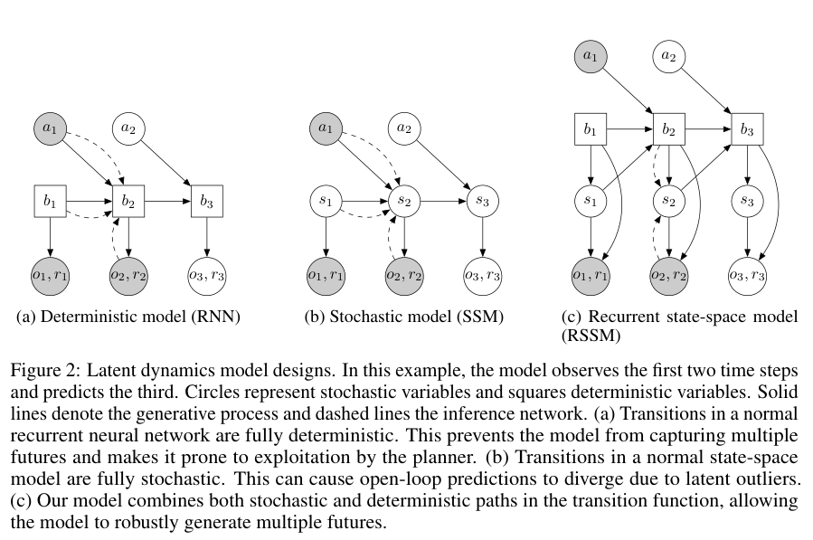
4f99446c5e878228ed9184b2b801646b6bd8cc40acf1898b699e960f86806578原论文图表解读：PlaNet 的三种潜动力学模型
PlaNet · Figure 2
图表说明：图 2 对比确定性 RNN、随机 SSM 与同时包含确定性/随机路径的 RSSM。
进一步分析：RNN 的确定性转移无法表达多种未来，容易被规划器利用；SSM 的纯随机转移又缺少记忆；RSSM 用 b_t 记忆与 s_t 随机状态共同生成观测、奖励和下一状态。图示的实线生成路径和虚线推断路径直接对应变分训练目标。
证据边界：这只是 latent dynamics 设计比较，未说明具体 CNN 编码器、状态维度或 planner 的 CEM 参数。
来源：04_cross_paper/paperqa_corpus/1811.04551.pdf，SHA-256 663668c50ba5618cce77476f124ea9160d4b5e79d0e787728bebf45f03a09207，PDF 第 5 页；原始整页：10_figures/original-paper/full-pages/1811.04551-p5.png；裁剪框（PDF points）：(103, 52, 511, 323)；裁剪图：10_figures/original-paper/assets/1811.04551-figure-2-p5-crop.png，SHA-256 4f99446c5e878228ed9184b2b801646b6bd8cc40acf1898b699e960f86806578。
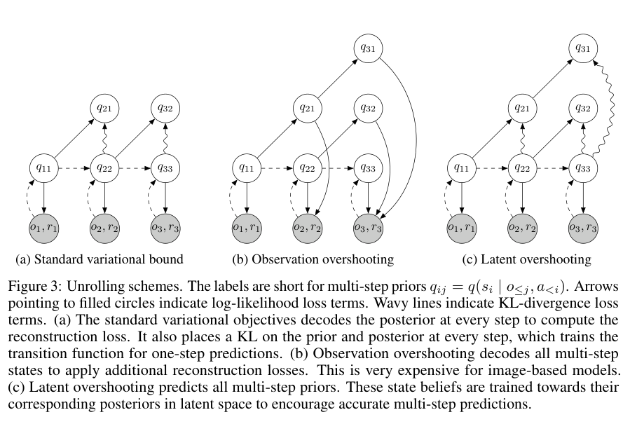
105d1539bae3ee9a1c7d1dbdf187602769295303a8e7ee337f3e7aa540cdaec2原论文图表解读：标准变分、观测 overshooting 与 latent overshooting
PlaNet · Figure 3
图表说明：图 3 展开三种 unrolling scheme，箭头与波线分别表示观测似然和 KL 正则项。
进一步分析：标准目标只在每步 posterior 上重建并做一步 KL；observation overshooting 把多步先验用于重建，成本较高；latent overshooting 则只在 latent prior 上加入多步 KL，鼓励模型在潜空间保持长期一致。这个拆分解释了 PlaNet 为何能以较低成本改善多步预测。
证据边界：图是目标函数结构示意，不能单独证明哪种 scheme 在所有任务均优于其他方法；性能还依赖在线数据收集。
来源：04_cross_paper/paperqa_corpus/1811.04551.pdf，SHA-256 663668c50ba5618cce77476f124ea9160d4b5e79d0e787728bebf45f03a09207，PDF 第 6 页；原始整页：10_figures/original-paper/full-pages/1811.04551-p6.png；裁剪框（PDF points）：(103, 50, 511, 325)；裁剪图：10_figures/original-paper/assets/1811.04551-figure-3-p6-crop.png，SHA-256 105d1539bae3ee9a1c7d1dbdf187602769295303a8e7ee337f3e7aa540cdaec2。
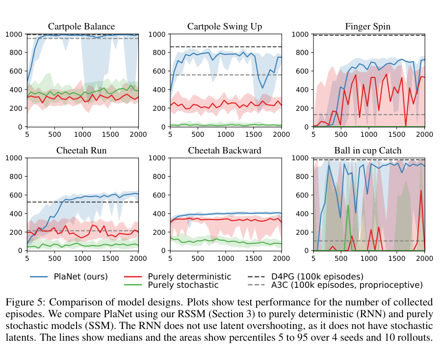
498c949305e45ecba47193c1473954aab288cd077a1ecf8dcd7f3479d14e34b8原论文图表解读：RSSM 与确定/随机模型的性能对比
PlaNet · Figure 5
图表说明：图 5 在六个控制任务上比较 PlaNet RSSM、纯确定性 RNN 和纯随机 SSM 的测试回报。
进一步分析：蓝色 RSSM 在多数任务保持最高或最稳定的中位数，RNN 在稀疏奖励 ball-in-cup 和需要记忆的任务明显受限，SSM 则缺少确定性记忆而较低。阴影覆盖 5–95 百分位，说明随机状态既带来鲁棒性也造成训练波动。
证据边界：横轴是收集 episodes，不同任务奖励尺度不同；曲线只比较三种 latent dynamics，不能把差异归因于 planner 或观测模型。
来源：04_cross_paper/paperqa_corpus/1811.04551.pdf，SHA-256 663668c50ba5618cce77476f124ea9160d4b5e79d0e787728bebf45f03a09207，PDF 第 8 页；原始整页：10_figures/original-paper/full-pages/1811.04551-p8.png；裁剪框（PDF points）：(103, 52, 511, 378)；裁剪图：10_figures/original-paper/assets/1811.04551-figure-5-p8-crop.png，SHA-256 498c949305e45ecba47193c1473954aab288cd077a1ecf8dcd7f3479d14e34b8。
Deep Reinforcement Learning in a Handful of Trials using Probabilistic Dynamics Models（PETS，arXiv:1805.12114v2）独立学习分析
来源身份与阅读边界
本分析只使用任务目录的 1805.12114.pdf。首页给出题目 Deep Reinforcement Learning in a Handful of Trials using Probabilistic Dynamics Models，作者 Kurtland Chua、Roberto Calandra、Rowan McAllister、Sergey Levine，版本 arXiv:1805.12114v2 [cs.LG] 2 Nov 2018，并标注 NeurIPS 2018；PDF 共 17 页，含附录 A.1--A.10。已逐页阅读公式、算法 1、图 1--4、表 1 以及附录图 A.5--A.13。MVE/I2A、PlaNet 与本文的关系仅在相近方法部分讨论，不把其他论文或代码事实混入。
创建背景与任务
模型自由 RL 在 MuJoCo 等连续控制任务上最终表现好，却需要巨大交互量；传统模型基方法样本高效，却常因低容量模型、长期预测偏差和模型过拟合而落后于模型自由方法。PETS 的切入点是：神经网络有能力表示接触和不连续动力学，但在数据少时会给出过度自信的单点预测；同时需要把不可约的系统噪声（aleatoric）与“数据不够导致的不确定性”（epistemic）分开。作者提出 probabilistic ensembles with trajectory sampling：每个网络输出条件分布表示 aleatoric，多个 bootstrap 网络的分歧表示 epistemic，再用粒子轨迹和 MPC/CEM 规划。目标不是像 PlaNet 那样从像素学 latent，而是在低维连续状态上让高容量 dynamics 也具备样本效率和渐近性能。
MDP、概率网络与两类不确定性
状态 s∈R^{d_s}、动作 a∈R^{d_a}，真实转移为 s_{t+1}=f(s_t,a_t)；概率 dynamics 写为 \tilde f_θ(s_{t+1}|s_t,a_t)=Pr(s_{t+1}|s_t,a_t;θ)。单个 probabilistic NN 输出均值 μ_θ(s,a) 和对角协方差 Σ_θ(s,a)，用负对数似然训练。论文式 (1) 的高斯损失可写作：
Σ_n [(μ_θ(s_n,a_n)-s_{n+1})^T Σ_θ^{-1}(μ_θ-s_{n+1}) + log det Σ_θ]。
第一项惩罚均值误差，按预测方差加权；第二项防止无限放大方差。它捕捉的是输入条件相关的 aleatoric noise，不是 Bayesian 参数不确定性。确定 NN D 退化为 delta 分布并用 MSE；它没有可用于粒子传播的真实方差。为了表达 epistemic，作者用 B=5 个 bootstrap 网络，每个 D_b 是从实际数据集有放回抽样 N 条的独立数据集。集成的 disagreement 在远离训练数据处增大，代表“可能的动力学函数”之间的分歧；近似无限数据时这种不确定性应消失。
概率网络在分布外可能输出任意大小的方差，甚至塌到 0 或爆到无穷。附录 A.1 因此对 logvar 做上下界软限制，边界取训练数据中最小/最大方差，并用正则阻止 max_logvar 增大和 min_logvar 减小。这是工程上关键的稳定性处理，不能只写成“使用高斯网络”而省略。
Trajectory Sampling（TS）与 MPC/CEM
给定初始状态和动作序列，PETS 复制 P=20 个粒子。粒子 p 在时刻 t 选择 bootstrap b(p,t)，然后从该网络的条件高斯采样：s_{t+1}^p~\tilde f_{θ_{b(p,t)}}(s_t^p,a_t)。TS1 每一步重新均匀采样 bootstrap；TS∞ 在整条 rollout 固定 bootstrap。TS1 限制粒子分离不能全部归因于某一个模型长期偏差；TS∞ 则更符合“真实动力学函数随时间不变”的观点，并使两种方差可分解：同一 bootstrap 内粒子方差近似 aleatoric，不同 bootstrap 的均值方差近似 epistemic。两者都支持多峰状态分布。
控制器使用 MPC：给定 horizon T，从 CEM 分布采样候选动作序列，按 TS 传播粒子，以 1/P Σ_p Σ_{τ=t}^{t+T} r(s_τ^p,a_τ) 评估，CEM 更新高回报 elite 分布，只执行最优序列第一动作，收到新状态后重新建模/规划。算法 1 的外循环是：随机策略收集一条 trial；每个 trial 训练 PE 模型；每个时刻用 CEM 采样 N_samples 条动作序列、TS 推演和求和回报；执行第一动作，记录 (s_t,a_t,s_{t+1})，进入下一 trial。模型不依赖具体 reward，因此可换任务而保留 dynamics。
教学数值例（非论文数据）
设两个 bootstrap、四个粒子、一步预测某一维结果为：B1 给 [1.0,1.2]，B2 给 [2.0,2.2]。TS∞ 若两粒子固定 B1、两粒子固定 B2，则同 bootstrap 内均值分别 1.1、2.1，aleatoric 方差由各组内部差异估计，epistemic 方差由 {1.1,2.1} 的均值分歧估计；TS1 下一步可能把 B1/B2 重新分配，轨迹分离的来源不再保持时间一致。若 CEM 有三条候选动作序列回报 10、6、8，取前两条 elite，则下一均值朝这两条动作的逐时间平均移动。例子只展示计算结构，不代表 PETS 某个 MuJoCo 样本。
模型与状态表示的细节
附录 A.5 说明 dynamics 不直接拟合绝对状态，而拟合差分 Δs_{t+1}=f(s_t,a_t) 再用 s_{t+1}=s_t+Δs，通常更易学习；角度输入改成 [sin(s_i),cos(s_i)] 处理旋转周期。附录 A.6 的网络为三层全连接，每层 500 个神经元（half-cheetah 为 250），Swish 激活，权重初始方差为 fan-in 倒数。四个任务是 cartpole（d_s=4,d_a=1）、7-DOF PR2 pusher（14,7）、7-DOF reacher（14,7）和 half-cheetah（17,6）。这与 PlaNet 的图像 latent 任务不同，PETS 直接访问低维系统状态。
实验图表与证据
图 1 画出 PE-TS 的三段流水线：bootstrap 概率网络、按粒子/模型重采样的轨迹传播、MPC 只执行第一动作。表 1 只展示不确定性类别的设计矩阵：D（无两类）、P（仅 aleatoric）、DE（仅 epistemic）、GP（同方差+epistemic）和 PE（两类都有）。图 2 展示四个 MuJoCo 任务的状态/动作复杂度，意图是覆盖低维、接触、高维连续控制。
图 3 的学习曲线（每个任务 10 次实验，显示至今最大回报均值）显示 PETS 在除 cartpole 外的任务中 100,000 timestep 内学会，而 PPO/SAC/DDPG 需要更多样本；PETS 达到 PPO 渐近性能少于 100 trials。论文摘要给出 half-cheetah 相比 SAC 约 8×、PPO 约 125× 少样本。图 3 的对照包含 Nagabandi 的 deterministic D-E、PPO、SAC、DDPG、GP-E/DS/MM；GP 在 cartpole 可竞争，但高维任务因立方时间和二次状态复杂度不可行。
图 4 是模型/传播消融的核心证据：四个任务的最终性能排序大体为 PE > P≈DE > D，cartpole 是例外；PE-XX 组合普遍最好，说明训练阶段同时编码两类不确定性比单纯改变传播器更重要。TS、DS、MM、E 的差异通常小于 model choice，不能把 TS∞ 单独夸成全部收益来源。附录 A.2 用缺失区间的正弦函数和异方差噪声作 toy function：训练区附近 bootstrap 一致，远离数据分歧增大；A.3 图 A.6 对 cartpole 角速度逐维检查训练/holdout 的均值与两倍标准差；A.4 图 A.7 可视化 TS1、TS∞、DS、MM 的粒子轨迹形状。
附录 A.7 图 A.8 显示 horizon 太短有 bias、太长让确定模型误差累积；概率传播可利用粒子分离降低远期动作对不可靠均值的依赖。图 A.9 给动作加入 0--20% 范围的高斯噪声，PE 模型性能更稳定，支持 aleatoric 建模对真实随机性的价值。图 A.10 随 trial 展示 MSE 和负对数似然，说明随着收集数据，模型在已见/holdout 轨迹上更准确。图 A.11 用真实 MuJoCo dynamics 隔离规划器，CEM（5 轮×500 候选，2,500 总样本）显著胜随机 shooting；A.12 在 10% action noise 下对比 D-E、P-E、PE-DS、PE-E、PE-TS1、PE-TS∞，PE 传播最稳定；A.13 显示 half-cheetah 线性模型无法控制，非线性 PE-TS 必要。
训练、推理和边界
训练阶段每个 trial 结束重新拟合五个 bootstrap 网络；推理阶段并不学习一个长期 actor，而是每个真实时刻重新运行 CEM 和粒子 rollout。这样避免了把模型误差长期写入策略参数，但计算成本与候选数、粒子数和 horizon 成正比。PETS 只在低维状态和 MuJoCo simulator 上测试，没有像 PlaNet 那样解决从像素的编码问题；模型预测 reward 仍由真实状态/动作 reward 函数计算，而不是学习视觉 reward head。
论文也暴露了边界：高容量 NN 在极少数据时仍可能错误，概率网络的方差分布外若不限制会摧毁规划；TS 只是近似积分，不能保证 calibrated Bayesian posterior；epistemic 不确定性虽可用于 exploration，但本文没有实现主动探索策略。MPC horizon、CEM 采样和模型训练都是手调；作者承认未来可将策略学习并入框架来摊销测试时规划成本。
与相近工作及 Dreamer 的关系
PETS 相比 GP-PILCO 能扩展到 half-cheetah 等高维/接触任务，相比 Nagabandi 的确定 NN-MPC 用概率输出和 ensemble 缓解早期过拟合；相比 PlaNet，它不处理像素、POMDP latent 或 RSSM，而在真实连续 state 上做 uncertainty-aware MPC；相比 MVE，它不是把模型作为短期 critic target，而是纯 model-based 控制；相比 I2A，它不学习 rollout encoder 来“解释”坏模型，而显式用方差和 bootstrap 处理坏模型。
与 Dreamer 的关系只能写成方法谱系上的证据支持推断：PETS 提供了“概率模型 + 不确定性传播 + MPC”这条连续控制路线，PlaNet 提供 latent RSSM；Dreamer 组合了 latent recurrent model 与 actor-critic imagination，但不是 PETS 的直接实现。PETS 的 TS∞/TS1、B=5,P=20 和 MuJoCo state 输入不能被当作 Dreamer 超参数。PETS 正文没有 Dreamer 名称，也没有 actor/critic latent backprop 目标。
公式推导补充：高斯似然与不确定性分解
式 (1) 的高斯 NLL 可从逐维密度 -log N(y;μ,σ²) 展开：残差项是 (y-μ)²/σ²，归一化项是 log σ²，多维时把各维相加并写成矩阵形式。若模型在某个输入处确实存在较大观测噪声，提高 σ² 可以降低残差惩罚，但 log det Σ 会阻止它无限增大；因此训练得到的是条件异方差。确定模型用 MSE 并不是“方差为 1 的概率模型就已经有 aleatoric uncertainty”，论文明确说固定单位方差不能拿来传播，因为它不代表真实噪声。
bootstrap ensemble 的 epistemic 近似来自不同数据子集导致的函数差异。给定同一个 (s,a)，若五个网络均值为 μ_b、内部方差为 Σ_b，总预测的方差可按全概率公式分成 E_b[Σ_b] + Var_b[μ_b]：第一项是 aleatoric，第二项是 epistemic。TS∞ 固定 bootstrap 后，粒子长期分歧保留第二项的时间相关性；TS1 每一步换 bootstrap，能避免把单个错误模型的偏差累积成一整条确定轨迹。论文没有声称 bootstrap 等价于精确 Bayesian posterior，因此应称为实用近似。
附录 A.1 的 logvar = max_logvar - softplus(max_logvar-logvar) 先把上界软化，再用类似公式压住下界，最后 var=exp(logvar)。在分布外状态，网络原始 logvar 没有训练约束；软边界和对上下界参数的正则是防止 CEM 看到无限大/零方差的必要步骤。若只复述“PE 输出高斯”而省略此步骤，便遗漏了论文自己指出的假成功风险。
MPC、CEM 与粒子传播的逐步语义
算法 1 每个 trial 只训练一次 PE 模型，然后每个真实时刻重新搜索。动作采样分布由 CEM 更新，TS 只负责评估给定序列，不更新网络参数。每颗粒子初始都复制当前状态，区别从下一步网络采样开始；奖励平均时不是选择最乐观粒子，而是对 P=20 颗粒子的预测均值求和。这样单个 bootstrap 的偶然高回报不能独占动作选择。论文未给出每个任务的 CEM iterations、候选数和 horizon 全部表格，不能把 PlaNet 的 H=12,J=1000 值移植给 PETS。
第二个教学数值例（非论文数据）
设 P=4,B=2,T=2，每个 bootstrap 的一步预测均值分别为 B1: 1、1.4，B2: 2、2.2；内部噪声标准差都为 0.1。TS∞ 若两颗粒子固定 B1、两颗粒子固定 B2，第二步四个样本约为 1.3、1.5、2.1、2.3，整体均值 1.8；同组均值 1.4 和 2.2 的差异构成 epistemic 分量，组内 0.1 的散布构成 aleatoric。若 TS1 在第二步重新抽 bootstrap，某颗粒子可能从 B1 跳到 B2，轨迹更分散，但无法再说该轨迹代表某个固定动力学函数。若两个动作序列的粒子平均回报为 6 和 5，CEM 会偏向第一条；下一时刻环境返回真实状态后，旧粒子全部丢弃。
任务设置的含义和逐图证据
图 2 的 cartpole 用于低维 sanity check；7-DOF pusher 有接触和多个动作；reacher 检验高维动作；half-cheetah 同时有 17 维状态、6 维动作和接触。图 3 的学习曲线横轴是 timestep，纵轴是“到目前为止的最大 reward 的 10 次实验平均”，所以它描述样本效率和发现好策略的速度，不是每一步的即时 reward。PETS 在 100K timestep 内达到 PPO 渐近性能这一结论依赖同一探索预算和 MuJoCo 配置；摘要的 8×/125× 是 half-cheetah 与 SAC/PPO 的样本量比，不能泛化到全部任务。
图 4 的 16 种组合按 model choice 比传播器更敏感：PE-XX 在除 cartpole 外通常最好，P-XX 和 DE-XX 居中，D-E 最差。这里 XX 表示任意 propagation suffix，图的结论是 ensemble 与 probabilistic output 对学习更关键，而非 TS1 必须优于 MM。附录 A.4 图 A.7 的 cartpole 粒子轨迹把四种传播器可视化；A.5 图 A.6 只检验一维角速度均值和两倍标准差，不能当作所有状态维度的校准证明。
附录 A.7 图 A.8 的四个训练阶段展示 deterministic D-E 在长 horizon 下误差累积，PE-TS 由于粒子分离而对远期不可靠预测降权。图 A.9 在 action noise 从 0 增至 20% 时比较方法，意图是验证 aleatoric 建模对系统随机性的鲁棒性而不是额外探索。图 A.10 的 MSE/NLL 随 trajectory number 变化用于确认模型确实从数据中变好；图 A.11 用真实 MuJoCo dynamics 单独比较 CEM 与 random shooting，隔离了模型误差；A.12 只针对 cartpole 10% action noise，A.13 则说明 half-cheetah 需要非线性网络。这种逐图目的区分很重要：没有一张附录图单独证明 PETS 在真实机器人上安全。
概率传播、在线规划与不确定性的边界
不确定性在训练和规划中的不同角色
PETS 把不确定性用于两个不同阶段。训练阶段，概率输出的 NLL 让网络学习在同一输入下哪些下一状态本来就有噪声；ensemble 的 bootstrap 数据差异让模型在样本稀少区域保持分歧。规划阶段，TS 把这些分布采样成粒子，让 CEM 根据平均回报和粒子分散程度选择动作。因而“模型有方差”并不自动等于“规划具有风险意识”：PETS 的目标仍是平均 reward，论文没有加入 CVaR、最坏粒子或碰撞约束。若某个高回报动作只有少数粒子支持，平均值会降低它的排名，但不是硬性拒绝。
传播方法的统计含义
Expectation 方法只传播单个均值，丢失多峰和尾部；Moment Matching 把所有粒子再压成单一高斯，平滑了目标但会把两个互斥接触结果混在中间；Distribution Sampling 只对 bootstrap 均值/方差做高斯化，保留每个模型内部的 aleatoric 采样；TS 完整保留粒子多峰。图 A.7 的 cartpole 轨迹正是这四种假设的可视化。论文发现 MM 在低维任务有竞争力、在 half-cheetah 不可靠，说明“更平滑”不是普适优点。
horizon 与 CEM 的计算权衡
给定候选数 N、粒子数 P、horizon T 和 ensemble 数 B，一次规划大致需要 O(NPT) 次网络前向；若每条粒子还固定一个 bootstrap，B 只影响模型参数存储而非每颗粒子的每一步计算。增加 CEM iterations 会重复这些开销，却可能改善 elite 分布；增加 horizon 同时扩大动作搜索维度和模型误差。图 A.11 用真实 simulator 固定 2,500 总候选隔离 CEM 与 random shooting，说明在高维 action space 中引导分布本身重要；它不能说明 learned model 的 CEM 一定无偏。
数据和评估的可比性边界
PETS 的“trial”由完整的真实控制轨迹组成，模型在 trial 间重训；图 3 把一个 timestep 定义为 0.01 秒（cartpole 0.02 秒）。PPO、SAC 等 baseline 的收敛曲线来自各自实现，作者把达到相近渐近 reward 的真实步数作为样本效率比较。模型训练和 CEM 推理的 wall-clock 没有逐任务完整表格，因而不能仅凭 timestep 断言 PETS 计算总成本更低。附录 A.6 的状态维度、动作维度和网络宽度是复现实验必须保留的事实，不能改成像素或默认 MuJoCo observation 后仍称为同一算法。
失败案例的工程含义
概率网络的方差上下界解决的是数值爆炸，不保证 out-of-distribution 均值正确；ensemble 分歧解决的是函数不确定性，不保证 bootstrap 独立或校准。动作噪声实验表明 PE 在 10% 噪声下更稳定，但噪声施加在 simulator action 上，未覆盖传感器延迟、观测遮挡、执行器饱和等真实机器人问题。作者结论把自动选择 H、主动探索和策略摊销列为未来方向，说明 PETS 是一个经过消融验证的 MPC 组合，而不是完整的安全或部署框架。
训练阶段与规划阶段的边界
PETS 的 dynamics 学习并不直接优化最终 return。每轮先把已有真实 transition 数据复制成五个 bootstrap 数据集，再分别最小化概率网络的 NLL；模型训练结束后冻结参数，CEM 才在每个真实时刻评估候选动作。这样一次模型误差不会在同一 trial 内被反复重新拟合，但也意味着模型更新滞后于刚执行的最后一个动作。随机初始 trial 只是覆盖一个很小的状态区域，后续 MPC 选出的动作会主动把数据带到新区域；ensemble disagreement 因而可能随着探索减少。
TS 的“粒子”不是环境中同时存在的多个物体，而是对同一候选动作序列的 Monte Carlo 预测。真实环境每次只执行一个动作，剩余粒子在模型内部消失；下一时刻以真实状态重新复制。TS∞ 固定 bootstrap 的解释是“每颗粒子代表一个可能的函数”，TS1 则更像每一步从函数后验重新抽样。二者都不是概率保证：有限的五个 bootstrap 和二十个粒子只能近似积分，无法排除所有分布外错误。
更具体的误差/收益权衡
模型过于确定时，CEM 容易选择一条均值预测高、但现实中从未出现的路径；模型过于随机时，所有候选回报都被高方差淹没，elite 分布无法收缩。PE 通过输出条件方差和 bootstrap 分歧，把这两类问题同时暴露给粒子传播。图 A.8 所谓长 horizon 的鲁棒性不是“预测更准”，而是远期粒子分离后，动作排名逐渐由近端可预测 reward 主导，减少对不可靠远期均值的依赖。这个机制仍受 CEM 候选数限制，候选太少时可能没有任何一条覆盖真实好动作。
论文将 P=20,B=5 作为所有任务足够的设置，但没有给出粒子数/ensemble 数的完整敏感性曲线；因此不能推断增加粒子必然提升性能。图 4 显示 propagation suffix 的差异小于 model choice，也不能把这个观察推广到更高维或更强随机系统。作者对 stochastic action noise 的实验只加在 cartpole，且噪声标准差按动作范围比例定义，非真实传感器噪声；图 A.9/A.12 是鲁棒性证据而不是安全认证。
复现实验时必须保持的事实
任务状态使用了 MuJoCo 的低维真值，角度先变换成正余弦，dynamics 拟合 state difference；若直接用绝对角度或像素输入，已经改变问题。每个网络三层全连接，half-cheetah 每层 250 而其余任务 500，激活是 Swish；论文没有给出 dropout、batch size 或随机种子表，不能擅自补齐。图 3 的 reward 曲线是 10 次实验的“历史最好值平均”，图 4 是最终性能，A.10 是模型误差，三者纵轴含义不同。PETS 能在不到 100 trials 达到 PPO 渐近分数的结论依赖这些统一的数据收集和评估定义。
一，probabilistic NN 的方差是 aleatoric，不等于 Bayesian weight posterior；ensemble 的 bootstrap 分歧才是 epistemic 近似。二，TS∞ 固定的是 bootstrap 身份，不是冻结每次高斯噪声；同一模型内部仍可采样不同 aleatoric 结果。三，CEM 最后一轮仍只执行第一动作，下一时刻重新搜索。四，PETS 论文中的“sample-efficient”来自 trial/timestep 对比，而不是零样本；图 3 的环境仍提供低维真实状态。五，附录 A.1 的 softplus/max_logvar/min_logvar 是稳定方差的实际细节，缺少它会改变算法行为。本任务没有读取作者 GitHub 代码（论文只给出链接），因此源码边界止于论文算法、公式、网络层数和图表，不报告函数行号。
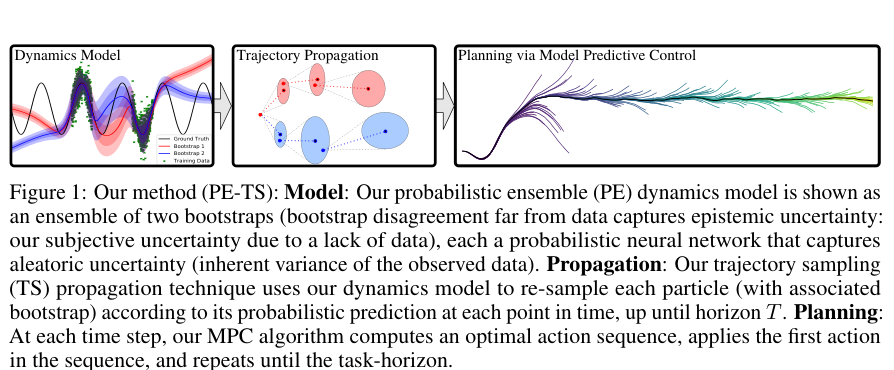
bb5e8f1adb30ae8f3eaea1214c9030c5c3d0a95e77e9cee7f52474baf423648f原论文图表解读：PETS 的概率 ensemble、轨迹传播与 MPC
PETS · Figure 1
图表说明：图 1 将 PETS 分成概率动力学模型、轨迹采样传播和模型预测控制三个步骤，分别展示不确定性建模、粒子传播与候选动作序列规划。
进一步分析：左侧 ensemble 的 bootstrap 分歧表示 epistemic uncertainty，每个概率网络输出分布表示 aleatoric uncertainty；中间对粒子按各自 bootstrap 的概率预测重采样；右侧 MPC 评估候选动作序列并只执行第一步。三块组合解释了 PETS 如何把两类不确定性带进规划。
证据边界：图示为算法概览，不给出 ensemble 数量、CEM 迭代数或具体任务的 horizon；这些实现细节必须从正文/代码另行核对。
来源：04_cross_paper/paperqa_corpus/1805.12114.pdf，SHA-256 7dbf3c65ece763384258a60f5f4b26d7b849ad80765ed77435c4861f9583219c，PDF 第 2 页；原始整页：10_figures/original-paper/full-pages/1805.12114-p2.png；裁剪框（PDF points）：(104, 52, 510, 220)；裁剪图：10_figures/original-paper/assets/1805.12114-figure-1-p2-crop.png，SHA-256 bb5e8f1adb30ae8f3eaea1214c9030c5c3d0a95e77e9cee7f52474baf423648f。
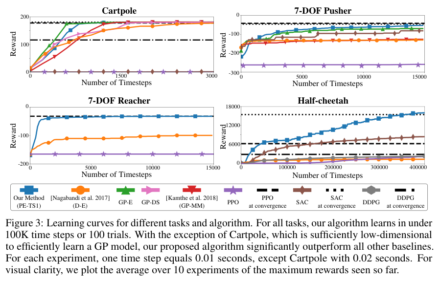
c8201cec8b1d1f8cbbaec9891cbdaf3471a9203a55bcbfb29540148069afc3bb原论文图表解读：PETS 与模型无关基线的学习速度
PETS · Figure 3
图表说明：图 3 在倒立摆、七自由度推动、七自由度到达和半猎豹四项任务上比较 PETS 与 PPO、DDPG、MBMF、GP 方法的学习速度及回报。
进一步分析：四个子图中 PETS（PE-TS1）通常在不到 100K time steps/100 trials 内达到高回报；Half-cheetah 尤其显示样本效率远高于 PPO/SAC 的收敛参考。图下注明每点为 10 次实验的 maximum-so-far 平均，强调的是达到性能的速度而非单次最终策略。
证据边界：Cartpole 可由 GP 高效处理，论文也指出其是例外；不同任务时间步长不同，曲线横轴不能跨任务直接换算成真实时间。
来源：04_cross_paper/paperqa_corpus/1805.12114.pdf，SHA-256 7dbf3c65ece763384258a60f5f4b26d7b849ad80765ed77435c4861f9583219c，PDF 第 7 页；原始整页：10_figures/original-paper/full-pages/1805.12114-p7.png；裁剪框（PDF points）：(103, 65, 511, 327)；裁剪图：10_figures/original-paper/assets/1805.12114-figure-3-p7-crop.png，SHA-256 c8201cec8b1d1f8cbbaec9891cbdaf3471a9203a55bcbfb29540148069afc3bb。
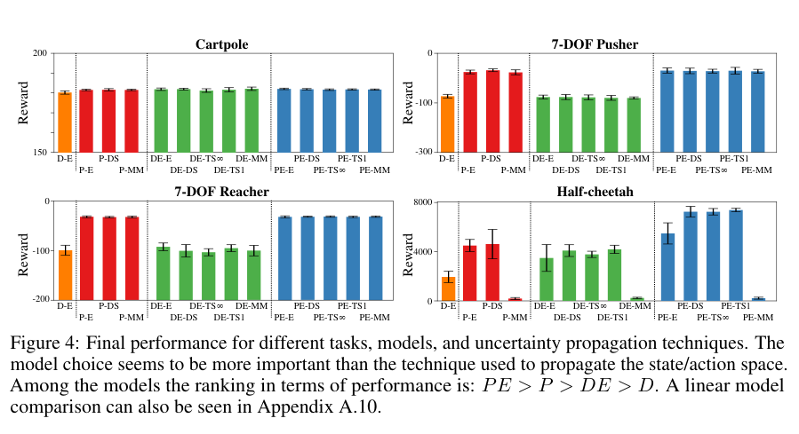
b4a745b86bb47c7fca200ca859c418a05e56b765ff42ec5f9fcf5bb1c40c87b9原论文图表解读：模型选择与不确定性传播消融
PETS · Figure 4
图表说明：图 4 比较不同 dynamics model（D、DE、P、PE）与传播方式（E、TS、MM）在四任务上的最终性能。
进一步分析：各任务大多呈 PE > P > DE > D，说明同时建模 aleatoric 和 epistemic uncertainty 比更换传播技巧更关键；同一模型内 E/TS/MM 的差别相对小。该结果把 PETS 的收益定位在概率 ensemble 的模型质量，而非单纯的 MPC 采样器。
证据边界：图只报告最终回报而非学习曲线，且 GP/高维任务的可行性不同；不能据此断定传播技巧在所有状态维度都等价。
来源：04_cross_paper/paperqa_corpus/1805.12114.pdf，SHA-256 7dbf3c65ece763384258a60f5f4b26d7b849ad80765ed77435c4861f9583219c，PDF 第 8 页；原始整页：10_figures/original-paper/full-pages/1805.12114-p8.png；裁剪框（PDF points）：(103, 52, 511, 274)；裁剪图：10_figures/original-paper/assets/1805.12114-figure-4-p8-crop.png，SHA-256 b4a745b86bb47c7fca200ca859c418a05e56b765ff42ec5f9fcf5bb1c40c87b9。
Imagination-Augmented Agents for Deep Reinforcement Learning（I2A，arXiv:1707.06203v2）独立学习分析
来源身份与阅读边界
本分析只使用任务目录中的 1707.06203.pdf。PDF 首页标题为 Imagination-Augmented Agents for Deep Reinforcement Learning，作者 Théophane Weber、Sébastien Racanière、David P. Reichert、Lars Buesing、Arthur Guez、Danilo Rezende、Adria Puigdomènech Badia、Oriol Vinyals、Nicolas Heess、Yujia Li、Razvan Pascanu、Peter Battaglia、Demis Hassabis、David Silver、Daan Wierstra；版本为 arXiv:1707.06203v2 [cs.LG] 14 Feb 2018，首页标注 NIPS 2017，全文 20 页含补充材料。已逐页阅读图 1--12、表 1--2、算法 1、主文与附录 A--D。I2A 的环境模型和 A3C 细节均来自 PDF，不把其他论文实现或 Dreamer 代码写成本篇事实。
创建背景：模型有用但不可靠
模型自由 RL 从观测直接映射动作/价值，样本效率低且跨任务泛化弱；模型方法能在内部想象未来，却常依赖准确模型和显式规划。高维环境的 learned model 会累积误差、产生不合常识图像和过度乐观回报。I2A 的核心改变不是设计一套固定 planner，而是把环境模型的 rollout 当成额外上下文，让网络自己学会哪些片段值得信任、如何组合、何时忽略。这回应了两类旧失败：一是仅用 predicted return 会被模型漏洞误导；二是完美模型的 Monte-Carlo/MCTS 在不完美模型上会灾难性崩溃。历史基础是 action-conditional video prediction、A3C、模型不确定性和想象/记忆研究。
Architecture：从真实观测到可解释的想象代码
环境模型接收当前观测或历史和动作，输出下一观测以及可选 reward/event。I2A 在每个时间步为动作集合中的每个动作启动一条 rollout：第一步固定为该动作，后续由共享 rollout policy \hat π 选择。环境模型和 \hat π 合成 imagination core（IC），产生 n 条轨迹 \hat T_i=(\hat f_{t+1},...,\hat f_{t+τ})。每条轨迹经 rollout encoder E 编成 e_i=E(\hat T_i)；aggregator A 将所有 embedding 拼接为 imagination code c_ia=A(e_1,...,e_n)。model-free CNN 路径从真实观测得到 c_mf；最终 policy head 输入 [c_mf,c_ia]，输出 categorical policy π(a_t|o_t) 和 value V(o_t)（图 1，第 2--3 页）。若去掉 model-based 路径，架构退化为标准 model-free 网络。
Rollout encoder 是关键防错机制。每条 imagined trajectory 的特征按反向时间顺序送入卷积编码器+LSTM，从未来末端向当前处理，模仿 Bellman backup；附录说明正向/双向对性能影响不大，但反向是采用配置。它并不被强迫输出 return，而是可学习识别“有用的中间结构”“模型错误的后段”或完全忽略 rollout。aggregator 只是拼接，不在此处做手工 max/平均规划。
Rollout policy distillation 与训练
第一动作按当前真实动作枚举，后续动作由小型 model-free \hat π(o_t) 产生。为使想象轨迹接近高回报行为，论文将 I2A 的 policy π 蒸馏到 \hat π：加入交叉熵 l_dist(π,\hat π)=λ_dist Σ_a π(a|o) log \hat π(a|o)，对 π 停止反向传播。由于小网络只是近似，蒸馏后的 rollout policy 仍保留更高 entropy，在探索/利用之间折中。环境模型先用部分训练好的标准 model-free agent 轨迹预训练，再冻结；主 I2A 用 A3C 更新其余参数，32--64 个异步 worker、RMSprop、熵正则 λ_ent=10^-2。理论上模型可联合训练并加入 NLL，但作者实测预训练更快，故未采用联合方案。
A3C 的补充公式给出 policy gradient g(θ)=∇_θ log π(a_t|o_t;θ) A(o_t,a_t)，advantage 是 k-step return 加 bootstrap value 减当前 value；value head 用对应平方损失。这里的 imagined rollout 不直接写入 replay buffer，也不要求模型可微于动作；梯度只经过 encoder、aggregator 和 policy/value 网络。
环境模型与架构配置
MiniPacman 模型输入 15×19×3 帧和广播的 one-hot 动作，用多尺度 CNN 与 “pool-and-inject” 层捕获全局 ghost/Pacman 关系；输出下一帧的 Bernoulli 像素分布和 5 类 event reward。Sokoban 模型输入 80×80×3 帧，先 8×8 stride 8 降采样，再两层 3×3 保持尺寸，8×8 反卷积输出帧；reward 由额外 CNN/FC MLP 预测。两者均是一阶自回归模型，采用 Bernoulli cross-entropy 学下一帧；环境模型中的隐藏层是 leaky ReLU slope 0.01，agent 网络用 ReLU。
I2A 的 model-free path 复用标准 baseline 的 CNN（不含 FC）；rollout encoder 对每个预测帧用同尺寸 CNN，和广播后的单标量 reward 拼接，送入共享 LSTM。Sokoban LSTM 512 单元，MiniPacman 256 单元；5 条 rollout 的最后输出拼接为 c_ia，维度分别是 2,560 和 1,280，再与 c_mf 拼接进入 policy/value FC。copy-model baseline 用恒等函数替换环境模型，保留同一 I2A 参数、计算量和 LSTM，专门检验提升是否来自真实 imagined 信息。
教学数值例（非论文数据）
假设动作集合有左、停、右三项，模型对每条 2 步 rollout 输出 (帧特征,reward)。左 rollout 编码为 [0.8,0.1]，停为 [0.2,0.3]，右为 [0.1,0.7]；aggregator 直接拼接成 6 维 c_ia。若 model-free CNN 给 [0.4,0.2]，policy head 接收 8 维向量并输出 logits [1.2,0.1,-0.4]，softmax 约 [0.67,0.27,0.06]。若末端模型错误导致右 rollout 后半段出现乱码，LSTM 可在序列编码中降低其作用，而非机械选择右动作。这个例子展示“学习解释上下文”的接口，不声称论文使用这些 embedding 数值。
Sokoban：不可逆规划与模型错配实验
Sokoban 每局生成新 10×10 网格和 4 个箱子，agent 只看 80×80 RGB sprite；箱子只能推不能拉，错误可能使关卡不可解。标准 model-free agent 在十亿步后低于 60%，大模型 baseline 约 70%。图 4 左显示 rollout 长度 5 的 I2A 达 85% solved，显著高于标准、large standard 和 copy-model；图 4 右长度消融表明 1→3→5→15 步依次提高学习速度/上限，15 步超过 90%，但推理成本线性增加，因此正文选 5 步。即使计入预训练环境模型的保守 1e8 frames，I2A 约 3e8 frames 已超过 baseline。
图 5 左故意使用参数更少、误差累积明显的 poor model：5 步 rollout 会出现缺失/重复 sprite 等伪影。图 5 右中，I2A 在 good/poor model 下均保持相近性能，甚至 poor model 略高；作者认为可能是随机初始化或噪声正则，明确说需要更多研究。无 rollout encoder 的 Monte-Carlo baseline 则在 noisy model 上灾难性下降，证明任意编码器可以学习忽略后段错误。该 MC 版本按 exp(-return/δ) 选择动作，只学习 value、\hat π 和温度 δ，没有 model-free path。
图 4 左的组件消融还显示：copy-model 几乎失效，说明计算量本身不是收益；无 reward prediction 的 I2A 初期较差，但训练到 3e9 steps 后接近 80%，说明预测观察已经含有足够信息，reward 是帮助而非绝对必要。Sokoban shaping reward 的附录细节是每步 -0.1、箱子推上目标 +1、推离目标 -1、完成关卡 +10，120 步截断；40 million 生成关卡重复率低于 0.7%，避免记忆。
规划效率、泛化与 MiniPacman 多任务
表 1 用近乎完美模型比较 model calls：I2A 达到 87% solved 约需 1,400 步，MCTS 达到同水平约 25,000，随机搜索需数百万；对 I2A 再做最多 10 次外层 mental retry 可到 95%，约 4,000 步，仍低于 MCTS 95% 所需 100,000。这个比较显示 learned rollout policy 让模型查询集中在相关区域，但 outer MC 依赖近乎完美模型，不应推广到 poor model。表 2 训练 4 箱后测试 1--7 箱，I2A solved 比例为 99.5、97、92、87、77、66、53%，standard 为 97、87、72、60、47、32、23%，支持结构泛化而非关卡记忆。
MiniPacman 共享一个 environment model，却用五个 reward vector 作为任务指令：regular、avoid、hunt、ambush、rush。模型预测帧和五类事件，当前任务 reward 是事件预测与 w_rew∈R^5 的线性组合；baseline 也获得 event 输入保证公平。图 6/附录图 10 在 3e8 steps 后显示 I2A 在五个任务都超过 standard，除 regular 外也超过 copy-model，尤其 sparse-reward hunt/ambush 优势大。主文表格数值为 standard/copy/I2A：regular 192/919/859、avoid -16/3/23、hunt -35/33/334、ambush -40/-30/294、rush 1.3/178/214。copy 在 regular 的 919 高于 I2A，不应误读为 I2A 全任务最高；论文结论强调 sparse reward 和 anticipation 才是 I2A 的主要收益。
限制与相近方法
I2A 仍交换环境交互与计算：每步要为所有动作 rollout，成本随动作数、rollout 数和深度线性增长；作者实测每次交互不到标准 agent 的一个数量级。若模型完全失真，encoder 只能学到“忽略”，不能凭空恢复真实未来；共享模型跨任务的优势依赖 transition 真正共享。模型预训练使用部分训练 agent 的数据，若随机策略几乎无 reward，预训练预算必须计入总样本，这也是作者在 Sokoban/MiniPacman 中分别处理的边界。
与 World Models 相比，I2A 不把 MDN-RNN 隐状态直接喂给线性 C，也不在梦境中单独优化完整策略，而是把多条 rollout 编码为上下文并由 A3C 学解释。与 MVE 相比，I2A 不把 rollout 固定成 k-step value target，允许任意神经摘要；与 PlaNet/PETS 的显式 CEM/TS 规划不同，I2A 的规划规则隐含在 rollout policy、LSTM encoder 和 policy head 中。论文相关工作还区分了 Dyna（模型只产生额外训练数据）、VPN/Predictron（预定义 backup）与 I2A 的低层观察预测 + 学习式解释。
与 Dreamer 的关系（证据支持推断）
I2A 是 Dreamer 之前的模型增强 RL 代表，但 PDF 没有“Dreamer”名称，不能宣称直接实现。可核对的共同方向是：学习 action-conditional recurrent environment model；在 latent/feature rollout 中想象多个未来；让策略利用 imagined rewards/observations 提高样本效率。Dreamer 后续把 I2A 的“解释 rollout”路线与 PlaNet 的 RSSM latent dynamics 区分开，改用 actor-critic 在连续 latent imagination 上反向传播，避免每一步枚举所有离散动作和 LSTM rollout encoder。I2A 的五条 rollout、512/256 LSTM、A3C 及 Sokoban 数字不是 Dreamer 配置。
公式与梯度路径补充
I2A 的模型损失是对下一帧 Bernoulli 像素和 reward/event 分布的负对数似然；预训练阶段只更新 environment model，冻结后这些参数不接受 A3C 梯度。策略梯度只经过真实观测的 model-free CNN、每条 rollout 的 CNN-LSTM encoder、aggregator 和 policy/value head。蒸馏损失 λ_distΣ_aπ(a|o)log\hatπ(a|o) 对 π 停止梯度，避免 rollout policy 追着自己同时改变；\hatπ 只在下一次想象时读取真实或模型生成的 observation。熵正则 λ_ent=10^-2 作用于最终 π，鼓励第一动作探索，不等价于给环境模型增加噪声。
每个动作的第一步被固定后，五条 rollout（Sokoban 的五个动作）共享同一个 rollout LSTM 权重，但拥有不同的时间序列输入；因此参数量不会随动作数线性复制，计算量会线性增加。每条序列反向读入 \hat f_{t+τ},...,\hat f_{t+1}，最后一个 hidden state 才作为该动作的 summary。aggregator 拼接五个 summary，不做动作间 softmax；policy head 通过训练学习哪些位置、时间和动作分支值得组合。
Rollout 编码器的失败与成功路径
如果直接把 imagined reward 求和，模型一旦漏预测障碍或产生虚假高 reward，planner 会选择漏洞策略。I2A 的 encoder 可以同时观察帧、reward 和时序变化：例如 Sokoban 中“箱子被推到墙角”可能当下没有负 reward，但后续几步的可达空间消失；encoder 能把这个中间结构作为上下文传给 policy。若模型后半段出现重复 sprite，LSTM 可以依赖前几步或 model-free path；若整条轨迹无信息，梯度可学到降低其作用。无 encoder 的 MC baseline 只能以固定 return 汇总，因此在 poor model 上从 good-model 的相近性能跌落到灾难性失败。
第二个教学数值例（非论文数据）
设左右两个动作各有一条 3 步 rollout，模型给出的 reward 序列分别为左 [0,0,5]、右 [2,2,-10]，但右第二步帧出现明显伪影。固定 Monte-Carlo 汇总可能偏向右的前两步，也可能因折扣/温度不稳；I2A encoder 则读取三帧序列，学习到右的伪影模式并减小该 summary 的权重。若 model-free CNN 已判断当前箱子靠近墙，policy head 可用真实路径纠正，而不是被单个高 reward 牵走。数值只阐明“帧结构和 reward 一起编码”如何提供比 return 更丰富的信号。
Sokoban 数据、奖励和图表证据
附录 D 的 shaping reward 不是通用 Sokoban 规则，而是本实验为避免随机探索几乎无解而设计：每步 -0.1、推上目标 +1、推离目标 -1、完成 +10，120 步终止。40 million 个生成关卡只有不到 0.7% 重复；因此 baseline 的失败主要是组合规划和探索，而不是记忆容量不足。图 4 左把 I2A 与 standard、large standard、copy-model、no-reward I2A 放在同一纵轴；I2A 达到 85% 左右，large standard 约 70%，说明简单地加 CNN 通道并不能复现 rollout 信息收益。
图 4 右长度消融需要与推理成本一起读：1 步只有即时局部线索，3 和 5 步显著提升，15 步超过 90% 但速度更慢；作者选择 5 步不是性能最高，而是准确性/计算折中。图 5 左的 good/poor model 视觉序列显示误差沿时间累积，图 5 右将 I2A 与 encoder-free MC 在两种模型上对照，直接证明“可学习摘要”比“固定返回”对错配更稳。附录图 11 显示无 reward model 的 I2A 训练到 3e9 steps 可接近 80%；图 12 的 mental retry 曲线说明首次外层模拟只有约 83% solve，模型并非真正完美。
MiniPacman 多任务的输入输出边界
MiniPacman 的 transition（迷宫、ghost 移动、power pill 19 步效果）跨任务共享，变化的只是 w_rew∈R^5。environment model 预测下一帧和五个事件，任务 reward 是事件向量与 w_rew 的内积；这使一个模型能服务 regular、avoid、hunt、ambush、rush 五个目标。baseline 也获得 event 变量，排除了“baseline 少一个输入”的解释。图 6 右和附录图 10 的结果并非所有任务 I2A 绝对最高：regular 中 copy-model 919 高于 I2A 859，但 sparse hunt/ambush 中 I2A 334/294 远高于 standard -35/-40 和 copy 33/-30。证据支持的是共享模型帮助任务重用和稀疏 reward anticipation，而非模型在任何 dense reward 都有增益。
附录的 ghost 算法是环境真值规则，不是 agent 神经网络：在路口移除反向方向，再按 Pacman 与 ghost 的向量点积选择追逐或逃离方向。把这段规则误写成 I2A 的 learned planner 会混淆数据生成环境和 agent 模型；I2A 只从帧、动作和事件数据学习近似 dynamics。
想象编码器如何使用预测，哪里仍会失败
训练损失和模型错配的可验证含义
I2A 的 A3C 训练只用真实环境 reward 构造 advantage，想象数据没有独立的正确性标签。policy head 若从某种 imagined sprite 伪影学到稳定的错误相关性，真实回报梯度会压低该特征，但只有训练分布出现相同伪影和失败时才有效。论文的 poor-model 实验把伪影系统性暴露给 agent，故观察到鲁棒性；若部署时换成一种从未见过的模型错误，encoder 未必能立即忽略。作者没有给出这种跨错误分布的测试，所以“learn to interpret”应理解为可学习的经验机制。
环境模型预训练的 Bernoulli cross-entropy 同时考虑每个 RGB 通道的像素概率，reward head 则输出离散事件分布；它不是在 latent 空间上直接预测 V。图 2 把动作 one-hot broadcast 到每个像素并与输入帧拼接，使局部卷积也能知道是哪种动作造成下一帧变化。Sokoban 的 8×8 stride 8 对齐 sprite/grid，MiniPacman 的 pool-and-inject 则把远处 ghost 与 Pacman 的相对信息全球传播；这些结构分别回应局部/非局部交互的不同任务。
模型内部序列与真实序列的区别
想象时环境模型在第 t 步读取真实观测，之后读取自己生成的帧；rollout policy \hatπ 同样从这些生成帧选动作。真实 policy π 则在执行第一动作后马上收到新的真实观测并重新启动全部 rollouts，不沿旧 imagined 轨迹执行。这样每个真实步都有新的校正，错误不会强制贯穿整集；但每个步骤仍要付出多条模型前向。I2A 的 latent “imagination code”只是 summary vector，不是可替代真实环境的 Gym state 或一个概率 belief。
逐图目的与相近方法的定位
图 1 的三个面板分别是 imagination core、单条 rollout encoder、全 I2A policy，它们展示信息流而非性能；图 2 是环境模型的条件预测接口，图 3 是 Sokoban 生成样本。图 4 的学习曲线负责证明深度与架构，图 5 专门验证 imperfect model，图 6 验证同一 dynamics 多任务。补充图 7--8 只给模型 architecture，图 9 给 power pill 剩余时间的观测标记，图 10 是完整 MiniPacman 曲线，图 11/12 是 reward prediction 与 mental retry 消融。把这些图的目的逐一列明，能防止将 architecture 图误当作证据，也能保留作者做过的控制变量。
表 1 模型调用数的语义
表 1 的 1,400/25,000/4,000/100,000 是达到某一关卡 solved fraction 所需的平均 model simulation steps，模型调用的复杂度在 I2A、MCTS 和 outer MC 之间并不相同。MCTS 有 transposition table、symbolic 10×10×4 value net，I2A 仍读取像素；因此结果是模型查询效率，不是严格的总计算公平比较。表 2 的泛化也只更改箱子数，同一个关卡生成器和 shaping reward 仍在；它说明 I2A 比 standard 更容易迁移结构，但不证明模型能跨新物理规则。
I2A 的“学习解释”也有明确的监督边界：A3C 只直接优化真实环境中的 advantage，encoder 不接受“这条 rollout 哪一步正确”的人工标签。它通过最终 policy 的回报梯度间接学会保留有用模式，因此同一个环境模型在不同 reward task 上可能形成不同的 encoder 权重。模型预训练的 NLL 只要求下一帧/事件分布正确，不要求它知道哪一帧对当前任务最有价值；任务相关筛选发生在 I2A 的后续策略训练中。
这使 I2A 与经典搜索的失败条件不同。MCTS 在 poor model 上每次扩展都把错误状态当作真值，错误会沿树深度放大；I2A 把整条路径压进 LSTM，能够让后段错误只影响一个 summary，并保留前段可信信息。代价是这种鲁棒性没有形式化保证，依赖训练数据中同时出现真实成功/失败和模型伪影。论文的 good/poor model 对比给出经验支持，但未测量 encoder 的校准概率或跨环境迁移。
动作枚举、计算成本和信息路径
“每个可能动作一条 rollout”只适用于离散动作集合；论文的 Sokoban 和 MiniPacman 都是离散控制，因此五条 rollout 对应五个动作。若动作数变大，I2A 的推理成本线性增加；作者没有在连续动作上给出相同架构的实验。每条 rollout 共享 environment model 和 encoder 权重，差别只在第一动作与随后模型生成的序列，故参数量不随动作数复制，但显存和前向次数仍增长。图 1 的 model-free path 始终读真实观测，model-based path 才读 imagined 帧；最终 head 可以在两者冲突时依赖真实路径，这是 I2A 与只看模型回报的 planner 的根本区别。
预训练预算和公平比较
环境模型数据来自“部分预训练”的 standard agent，而不是纯随机轨迹。Sokoban 随机策略几乎没有完成关卡，若直接用随机数据预训练，模型没有足够的箱子移动事件；因此作者把预训练帧数保守计为低于 10^8，再把 I2A 与 baseline 的环境 steps 相加。MiniPacman 的同一个模型可以复用于五个 reward task，模型的边际成本被摊薄。copy-model baseline 保持 I2A 的 LSTM、参数量和 rollout 次数，只返回输入帧；它在 regular 任务高分但在 sparse hunt/ambush 低分，说明比较必须按任务奖励解释，而不是只看模型存在与否。
失败条件与可验证边界
若环境模型把关键障碍系统性删除，rollout encoder 只能从模型输出中学到“这个模式不可信”，不能恢复没有出现过的真实信息；model-free path 仍是兜底。若 model-free CNN 本身没有看到足够历史，I2A 的 rollout 也可能只提供局部猜测。作者在讨论中说 I2A 单步交互速度不到 baseline 的一个数量级，但没有给出每个硬件、batch 或 wall-clock 的统一表，因此不能把这个说法当作精确吞吐率。MCTS 对比使用近乎完美环境模型，I2A 的 1,400 calls 与 MCTS 的 25,000 calls 是模型调用数，不是 GPU FLOPs 或真实环境 steps。
论文证据的最终范围
主文图 4、5、6 与附录图 10、11、12 共同支撑三条结论：短 rollout 可提高不可逆规划，encoder 对模型错配有用，共享 dynamics 可跨 reward task。它们不支持“任意环境模型都能被 encoder 修复”“I2A 在连续动作上必然可扩展”或“模型预测 reward 总是必要”。表 2 的七箱泛化是在训练四箱的同一生成程序上测试，属于结构变化而不是完全新环境；Sokoban 生成规则和 shaping reward 也会影响难度。读者若要复现，应先保持 action set、关卡生成、预训练帧数和 A3C worker 数，再比较模型结构。
第一，I2A 的 rollout policy \hat π 不是环境真实 policy，而是由最终 policy 蒸馏得到的近似，故内部轨迹不是随机搜索。第二，rollout encoder 处理的是整条 (\hat o,\hat r) 序列，反向送入 LSTM；它不是把每个时间点的 predicted return 直接相加。第三，reward prediction 可以去掉但会减慢 Sokoban 收敛，观察预测仍有价值。第四，copy-model 具有相同参数量/计算量，故它是架构公平性对照，不是“没有模型的标准 baseline”。第五，Sokoban mental retry 和 MCTS 只在近乎完美模型中比较，不能作为 poor model 鲁棒性的证据。本文没有读取 I2A 作者代码，源码边界止于论文算法、网络层数、伪代码和附录环境生成规则。
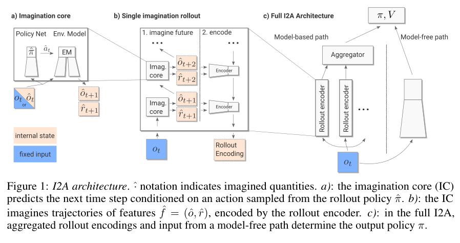
7f0adca1850828afab276af0f31736ddf325d6d31bba41b74c93d71d2419aa6f原论文图表解读：I2A 想象增强架构
I2A · Figure 1
图表说明：图 1 描绘 I2A 的 imagination core、单次 rollout 编码和完整 I2A policy；带帽符号表示模型想象量。
进一步分析：左侧 imagination core 根据 rollout policy 的动作预测下一步；中间把多步预测的观测/奖励特征交给 rollout encoder；右侧聚合多个 rollout 编码，再和 model-free path 一起决定输出策略。该结构把不完美模型的预测作为额外上下文，而不是让模型直接替代策略。
证据边界：这是 I2A 论文的增强通道结构，不是 DreamerV1 默认模块；图示没有给出 rollout encoder 的具体训练收敛或跨环境等价性。
来源：04_cross_paper/paperqa_corpus/1707.06203.pdf，SHA-256 7e5c213c55f2954f7ac818e5b99e3b1864c0c30efb6fc5aebdaa2f61a49d29f8，PDF 第 2 页；原始整页：10_figures/original-paper/full-pages/1707.06203-p2.png；裁剪框（PDF points）：(102, 241, 510, 456)；裁剪图：10_figures/original-paper/assets/1707.06203-figure-1-p2-crop.png，SHA-256 7f0adca1850828afab276af0f31736ddf325d6d31bba41b74c93d71d2419aa6f。
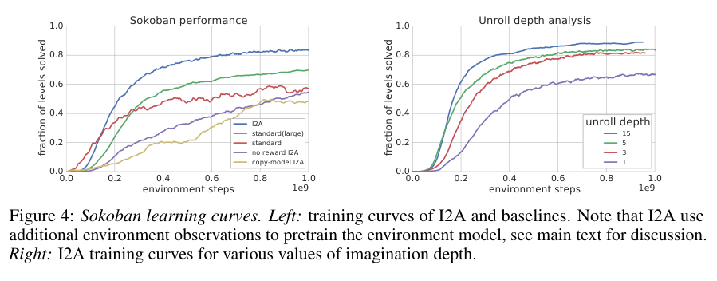
518f145d7281d7699e32383351e10bbdf7e1d5e601b70f119ddd0f9a6b6bce0e原论文图表解读：Sokoban 学习曲线与 rollout 深度
I2A · Figure 4
图表说明：图 4 左图比较 I2A 与多个 Sokoban 基线，右图比较不同 unroll depth 的训练曲线。
进一步分析：左图 I2A 的 solved fraction 最终约 0.85，高于 standard、增大容量、无奖励和 copy-model 对照；右图深度 15 达到更高解题率，但从 5 再增大到 15 的回报递减。论文正文另报告较长 rollout 的计算更慢，因此用深度 5 作为标准设置，说明短 rollout 已能提供有用信息。
证据边界：曲线来自程序生成 Sokoban 和论文固定训练协议；它不能单独证明 I2A 在其他模型误差、奖励稀疏度或动作空间下的绝对优势。
来源：04_cross_paper/paperqa_corpus/1707.06203.pdf，SHA-256 7e5c213c55f2954f7ac818e5b99e3b1864c0c30efb6fc5aebdaa2f61a49d29f8，PDF 第 5 页；原始整页：10_figures/original-paper/full-pages/1707.06203-p5.png；裁剪框（PDF points）：(103, 265, 511, 425)；裁剪图：10_figures/original-paper/assets/1707.06203-figure-4-p5-crop.png，SHA-256 518f145d7281d7699e32383351e10bbdf7e1d5e601b70f119ddd0f9a6b6bce0e。
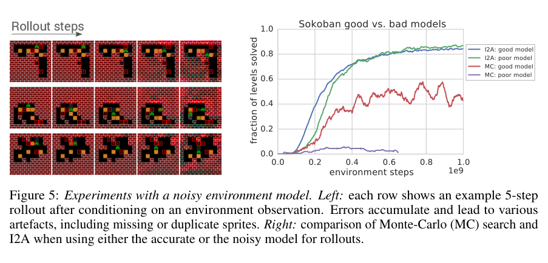
37cacfd6f42ffdac660e81c576391d04a22f9fdfb9df6ab6352e22b1caef1988原论文图表解读：噪声环境模型下的 rollout
I2A · Figure 5
图表说明：图 5 左侧逐行展示噪声环境模型的 5 步 rollout，右侧比较准确/噪声模型下 I2A 与 Monte-Carlo 搜索。
进一步分析：左侧可以看到缺失或重复 sprite 随步数累积，显式展示 rollout 误差；右侧 I2A 在 poor model 下仍保持接近 good-model 的 solved fraction，而 MC search 在 poor model 下迅速失效。rollout encoder 因而学到的是对早期可靠信息的加权，而不是盲目相信整段轨迹。
证据边界：噪声模型是论文专门构造的 Sokoban 条件；图中不支持把这种鲁棒性外推到任意视觉模型或任意误差分布。
来源：04_cross_paper/paperqa_corpus/1707.06203.pdf，SHA-256 7e5c213c55f2954f7ac818e5b99e3b1864c0c30efb6fc5aebdaa2f61a49d29f8，PDF 第 6 页；原始整页：10_figures/original-paper/full-pages/1707.06203-p6.png；裁剪框（PDF points）：(101, 140, 511, 337)；裁剪图：10_figures/original-paper/assets/1707.06203-figure-5-p6-crop.png，SHA-256 37cacfd6f42ffdac660e81c576391d04a22f9fdfb9df6ab6352e22b1caef1988。
Model-Based Value Expansion for Efficient Model-Free Reinforcement Learning（MVE，arXiv:1803.00101v1）独立学习分析
来源身份与阅读边界
本章使用任务目录中的 1803.00101.pdf，并特别核对作者身份：Vladimir Feinberg、Alvin Wan、Ion Stoica、Michael I. Jordan、Joseph E. Gonzalez、Sergey Levine；不是 Erik Talvitie。PDF 首页标注题目 Model-Based Value Expansion for Efficient Model-Free Reinforcement Learning、arXiv:1803.00101v1 [cs.LG] 28 Feb 2018，正文与附录共 12 页，首页说明当时为 ICML 2018 PMLR 80 under review。已阅读公式 (1)--(4)、定理 2.1/3.1、算法 1、图 1--6、表 1--2 和附录 B/C 的证明。论文没有 Dreamer 名称，没有本任务所需的源码仓库读取；本文只报告论文公开算法与实验。
创建背景：为什么要把模型用在价值估计上
模型自由 actor-critic 的优点是可用高容量 Q 网络逼近复杂非线性 dynamics，但需要大量真实交互；纯模型方法在模型误差累积时又不稳。MVE 的观察是：不必让 learned dynamics 生成长轨迹或直接决定策略，只需要在短 horizon 内用模型获得更准确的 reward，再由模型自由 critic 估计远期 tail。作者把模型信任程度压缩成一个可解释的整数 H。这与 MBA/Dyna 把 imagined states 塞入 replay buffer 的启发式不同，也与 SVG 依赖可微 dynamics 的路线不同；MVE 只需前向预测，适配接触等不可微事件。
论文工作在连续、可观测的 MDP 上。状态 s∈S、动作 a∈A、确定 transition f(s,a)、reward r(s,a)、折扣 γ；确定策略 π 的 Q^π(s_0,a_0)=Σ_t γ^t r_t，V^π(s)=Q^π(s,π(s))。训练数据来自探索策略的 empirical distribution β，目标实际是 J_ν(π)=E_{S~ν}[V^π(S)] 而非只能从初始分布得到的 J_{d0}。
MVE 核心公式与计算
给定近似 dynamics \hat f，从真实状态 s_0 依照当前策略在模型中滚动 H 步：\hat s_{t+1}=\hat f(\hat s_t,π(\hat s_t))，模型 reward \hat r_t=r(\hat s_t,π(\hat s_t))。H-step value expansion 是
\hat V_H(s_0)=Σ_{t=0}^{H-1} γ^t \hat r_t + γ^H \hat V(\hat s_H)（式 2）。
前半段是短期 model-based reward，尾项是模型自由 critic \hat V；H=0 恢复原 critic。对 Q 估计时第一动作固定为给定 a_0，后续动作由 π 给出，尾项写为 \hat Q(\hat s_H,\hat a_H)。
若模型在 H 深度近似准确，误差近似变为 γ^H(\hat V(s_H)-V^π(s_H))，MSE 约缩小 γ^{2H}，但只有当 critic 在 imagined state 分布上同样准确才成立。定理 3.1 给出带模型误差的上界：
MSE_ν(\hat V_H) ≤ c_1^2 ε^2 + (1+c_2 ε)γ^{2H} MSE_{(\hat f^π)^Hν}(\hat V)。
ε 是 H 步状态预测误差上界，c_1,c_2 随 reward/value Lipschitz 常数线性增长且对 γ<1 与 H 无关。第一项是模型误差 floor，第二项是折扣后的 critic tail。充分条件是模型误差小、γ<1 且 critic 在 imagined 分布上的 MSE 不超过原分布 ν；只在 replay 分布 β 上训练通常不满足这一条件。
TD-k trick：解决分布错配
模型 rollout 后的状态来自 (f^π)^t β，并非 replay 中的 β。论文定义近似固定点分布 ν=(1/H)Σ_{t=0}^{H-1}(\hat f^π)^t β，即从真实 transition 开始，均匀取 0 到 H-1 的任意 imagined 深度。对每条 rollout 的第 t 个状态，使用剩余长度 H-t 的 MVE target 训练 critic，而不是只在真实起点训练一个 H-step target。这样 critic 的训练支持覆盖 ν，近似达到 (f^π)^Hν≈ν 的固定点条件。TD-k 不是“额外缓存模型数据”：作者明确每个 batch 即时生成状态，策略变动后立即丢弃，避免 imagination buffer 过时。
实践算法 1 是：收集 transition 到 β；用 MSE 拟合 dynamics \hat f；从 β 采真实 transition τ_0；actor 用原始 DDPG loss 更新；对 t∈[H-1] 用 target actor π_{θ'} 在模型中 rollout τ_t=\hat f^{π_{θ'}}(τ_{t-1})；为每个 k 构造 \hat Q_k；critic 用所有 t 的 \ell^{π_{θ'},\hat Q_{H-t}}_{critic} 平均更新；最后软更新 target actor/critic。H=0 就是原始 actor-critic。
教学数值例（非论文数据）
设 γ=0.9,H=2，模型 rollout 的两个 reward 是 \hat r_0=1,\hat r_1=2，尾部 critic \hat V(\hat s_2)=5，则 \hat V_2=1+0.9×2+0.9²×5=6.85。若真实两步 reward 是 1.1、1.8，真实 tail value 为 4.5，则真实 V≈1.1+0.9×1.8+0.81×4.5=6.785，误差 0.065；H=0 若当前 critic 估计 3.5，MVE 明显改善。若第 1 个 imagined state 远离训练分布，tail critic 可能错误，增大 H 反而放大分布错配；TD-k 会从不同 t 的 imagined state 训练 critic。数字仅演示式 (2) 和误差方向，不是论文实验样本。
深度 RL 实现边界与配置
MVE 用 DDPG 的参数化 actor π_θ 和 critic Q_ϕ。critic 的普通 target 是 (Q_ϕ(S,A)-(R+γQ(S',π(S'))))²；MVE 将 target 替换为 k-step expansion。Dynamics 是 8 层、每层 128 神经元的网络，学习率 10^-3，预测状态差分；actor/critic 是多层全连接网络。真实数据积累 10,000 timestep 后才开始 DDPG，5,000 timestep 后开始模型训练；每收集一步做 4 次 dynamics 和 DDPG 梯度更新，普通 batch 512，oracle dynamics batch 32；学习曲线用 4 seeds，oracle 用 6 seeds（附录 A，第 10 页）。环境是 fully observable 版本的 HalfCheetah、Swimmer、Walker，加入 reward 所需的 x 坐标，输入/输出维度在表 2 给出：cheetah 18/6、swimmer 18/6、walker 10/2。
实验、图表和理论证据
图 1 先展示 cheetah 的 open-loop dynamics L2 error 随 horizon 上升，说明 H 不能任意增大。图 2 给出三个完全可观测 benchmark 的状态/动作变化。图 3 比较 learned dynamics 下的 MVE-DDPG、无 TD-k、imagination buffer（IB）和 DDPG：cheetah、swimmer、walker 的目的分别是看连续控制速度、模型质量变化和较差模型时的鲁棒性；MVE 在 cheetah/swimmer 明显更快，walker 因同一模型不足而将 H 降到 3，优势变小但仍比 IB 稳。
图 4 固定 learned dynamics 的 cheetah，比较 H=0、1、2、10：短 horizon 一步/两步已有收益，H=10 继续改善但并非单调无限。图 5 将真实累计回报与 critic 估计归一化散点对比，DDPG H=0 偏离对角线，oracle dynamics H=30 的 MVE critic 更贴近真实回报，直接支持“先改善 Q 再加速 actor”的因果链。图 6 用 oracle dynamics 做隔离：有 TD-k 时 H 增大带来递减收益；无 TD-k 时小 H 仍有效，H 大后因分布错配性能下降，即使模型完全正确也会失败。这是 TD-k 必要性的最强消融证据。
图 3 的 IB 对照说明“把想象状态存入额外 buffer”会遇到 stale policy 和过度训练 actor 的问题；MVE 每次即时生成并在真实/想象状态的平均梯度上训练。论文没有声称 MVE 解决探索：它把模型用于 value target，而非主动寻找未知区域；结论部分明确把 uncertainty 自动选择 H 和 model-based exploration 留作未来工作。
理论假设、限制与相近方法
定理要求 reward 和 V^π 对 state Lipschitz，H 步模型状态误差有二阶矩上界；它不保证任意高维神经网络都会满足这些条件。γ^{2H} 的好处与 ε² 模型误差 floor 竞争，H 是 bias/variance 和信任的旋钮。MVE 当前论文主要是确定 dynamics、确定策略的推导；随机 dynamics/策略需要 Monte Carlo 扩展。DDPG actor 更新仍依赖可微 Q，但不依赖可微 dynamics，因此比 SVG 更适合碰撞/接触。
与 I2A 的差异是 I2A 把 rollout 当作可学习上下文，允许网络忽略坏预测；MVE 把短 rollout 明确写入 critic target，并用 TD-k 控制分布。与 PlaNet/Dreamer 的差异是 MVE 不学习视觉 latent world model，也不在模型内训练 actor；它是 model-free critic 的价值校正器。与 PETS 的差异是 PETS 用 PE+TS 做完整 MPC，MVE 只前向 H 步并依靠 model-free tail。
与 Dreamer 的关系（证据强度）
MVE PDF 发表在 Dreamer 之前，正文不提 Dreamer，因此只能给出方法上的证据支持关系：它明确提出“短期 model-based、长期 model-free”的价值混合，并把 imagined states 作为训练 critic 的即时目标；Dreamer 后来把类似短期/长期分解放到 latent imagination 中，用 actor-critic 反向传播训练策略。MVE 的 H、TD-k、DDPG 和 fully observable MuJoCo 不能移植成 Dreamer 的默认实现。更直接的文献关系是 MVE 第 5 节把 I2A、VPN 和 PlaNet 类路线作为相近/正交工作，而不是声称共享代码。
公式推导补充：折扣、模型误差与固定点
从式 (2) 出发，把真实回报写成 V^π(s_0)=Σ_{t=0}^{H-1}γ^t r_t+γ^H V^π(s_H)。MVE 与它相减后有两类误差：前 H 步 reward 差 Σ_t γ^t(\hat r_t-r_t)，以及折扣后的尾部差 γ^H(\hat V(\hat s_H)-V^π(s_H))。若 reward 是 L_r-Lipschitz，|\hat r_t-r_t|≤L_r||\hat s_t-s_t||；对 H 个时间点使用 Cauchy--Schwarz，可得到第一项的常数 c_1²，其上界按论文附录写成 L_r² min(H²,(1-γ²)^{-2})。尾部再利用 V^π 的 L_V-Lipschitz 性把 V^π(\hat s_H)-V^π(s_H) 控制在 L_V ε，得到定理 3.1 的两项界。
这个推导说明 γ^{2H} 不是无条件的指数收益。它只衰减 critic tail；模型误差项 c_1²ε² 在 H 增大时不会同步消失，且 ε 本身通常随 horizon 增加。若模型在 imagined state 上将 critic 推向一个未训练区域，MSE_{(\hat f^π)^Hν}(\hat V) 可能远大于 MSE_ν(\hat V)，于是即使 γ 很小，整体也会变坏。论文把“模型准确、γ<1、imagined 分布上的 critic 不差”列为充分条件，而没有声称这是必要条件或实践中自动满足。
TD-k 的固定点构造可以从测度看得更清楚。原始 replay 分布 β 经过策略动力学一次得到 (f^π)β，H 次得到 (f^π)^Hβ；将 t=0,...,H-1 的分布均匀混合为 ν，再从每个 t 的状态使用剩余 H-t 步，训练数据就覆盖了同一混合支持。若把所有 imagined state 都只用 H-step target，最后几步会越过模型信任深度；算法 1 的 Q_{H-t} 恰好保持每个样本的有效深度。
DDPG 目标的逐项计算与训练/推理分离
普通 DDPG critic target 是 R+γQ_{ϕ'}(S',π_{θ'}(S'))；MVE 对第 t 个 imagined transition 把它改为 Σ_{k=t}^{H-1}γ^{k-t}\hat r_k+γ^{H-t}Q_{ϕ'}(\hat S_H,\hat A_H)。actor 仍从真实 transition τ_0 用 Q_ϕ(S,π_θ(S)) 更新，避免 actor 直接追逐模型漏洞。target actor/critic 是指数移动平均，模型 rollout 在一次 batch 内使用冻结的 target 参数；batch 结束后 simulated states 被丢弃，策略更新不会产生 stale buffer。
教学数值例二（非论文数据）
设 γ=0.9,H=3，从 replay 真实 transition 得到 τ_0，模型预测 \hat r_0=1、\hat r_1=2、\hat r_2=0，尾部 Q_{ϕ'}(\hat s_3,\hat a_3)=4。起点 target 为 1+0.9×2+0.9²×0+0.9³×4=5.212。第一步 imagined state 的剩余 horizon 2，target 是 2+0.9×0+0.9²×4=5.24；第二步的剩余 horizon 1，target 是 0+0.9×4=3.6。若错误地对三个状态都使用 H=3，第二、三步会重复计算并把模型使用深度扩大，失去 TD-k 的固定点动机。若 H=0，只有普通 DDPG 的 R+γQ(S',π(S'))。
图表证据与失败模式再核对
图 1 的 open-loop L2 曲线是 H 选择的先验证据：误差单调增长并不意味着 reward 一定单调下降，但提醒不能盲目延长 imagined horizon。图 3 直接比较 learned dynamics 下的四条方法，目的分别是验证 raw performance、TD-k 的作用、IB stale data 的问题和 DDPG 基线。图 4 固定同一 learned model 改变 H，显示短 horizon 已足够带来价值；图 5 将 normalized true returns 对 normalized critic estimates 作散点，理想 critic 应沿对角线，oracle MVE 更接近。
图 6 的两个子图是理论消融的关键：左图有 TD-k，H=1、2、10、30 的收益递增但递减；右图无 TD-k，即使使用完美 oracle dynamics，H 过大也会因 critic 训练分布仍为 β 而受损。它排除了“都是模型预测错导致失败”的解释，证明 distribution mismatch 独立存在。附录图 A.8 的 horizon 曲线进一步说明模型质量和 H 共同决定收益；A.10 的 MSE/NLL 不是 critic 误差，而是 dynamics model 诊断，不能混用。
论文实验还做了一个容易忽略的控制变量：所有实验先等待 10,000 timestep 才开始 DDPG，5,000 timestep 才开始 dynamics 训练；每个真实 timestep 做 4 次两类更新。若复现实验时把 MVE 提前到零数据，模型误差会与论文设置不同。oracle dynamics 的 batch 从 512 降到 32 只是计算限制，图 6 与 learned-dynamics 图 3 不能直接比较纵轴绝对值。Walker 使用 H=3 是因为同样的网络拟合太差，作者没有把 H=10 的失败隐藏为调参成功。
方法关系、适用性与来源边界
MVE 和 n-step return 都把短期 reward 加到 bootstrap value，但 n-step 使用真实 on-policy trace，MVE 用 learned dynamics 从 off-policy β 生成 on-policy imagined transition，因此不需要 importance ratio。与 SVG 相比，MVE 不反向传播 dynamics，牺牲了梯度路径换取对不可微 contact 的兼容。与 MBA/IB 相比，MVE 不保存 imagined states、不从 imagined state 再次展开超过 H；与 MA-BDDPG 相比，它不依赖 critic bootstrap uncertainty 来决定是否使用模型，而用固定、可解释的 H。
模型扩展如何改善价值目标，理论覆盖到哪里
MVE target 的时间索引细节
算法中的索引容易造成误读。真实 transition τ_0 包含上一个状态、动作、奖励和当前状态；当 t=0 时，模型先从当前状态预测 \hat τ_1，其 target 使用从第 0 个 imagined reward 开始的 H-step 和。对 t=1 的 imagined transition，状态已经经过一次模型转移，剩余可信深度只有 H-1，所以 target 的 discount 从 γ^0 重新计数到 γ^{H-1}。这种局部重置不是把整条轨迹的 reward 重复加入，而是对每个训练状态构造自己的 Bellman target。
如果模型是随机的，式 (2) 不能只取均值轨迹就宣称等于期望价值；应对 imagined trajectories 做 Monte Carlo 积分。论文主分析先限定确定 dynamics 和 policy，结论部分才说可扩展到 stochastic dynamics/policy。把 MVE 的确定公式直接用于随机 latent rollout 会漏掉方差项，这也是它与 PETS 概率传播和 Dreamer stochastic imagination 的重要边界。
模型误差上界中的常数和假设
定理 3.1 使用 max_{t∈[H]} E||\hat s_t-s_t||²≤ε²，它是所有 rollout 时刻的统一上界，不是只看终点误差。奖励 Lipschitz 常数 L_r 控制每一步误差累积，价值 Lipschitz 常数 L_V 控制终点 critic 对状态偏差的敏感度。证明中反复使用 Cauchy--Schwarz，并额外假设 imagined-state critic MSE 至少不小于模型误差，以简化交叉项；作者明确说没有这个假设时会多出 O(ε) 项。因此定理是可解释的误差分解，不是任意神经网络环境上的无条件保证。
当 γ 接近 1 时，c_1 的 (1-γ²)^{-2} 上界可能很大，说明长期、低折扣任务对模型误差更敏感；当 H 很小，模型项少而 critic tail 权重高，MVE 接近 model-free；当 H 很大，discount tail 小但模型 rollout 和分布错配都更严重。论文的 cheetah H=1/2/10/30 曲线正是这些项竞争的经验图景。
训练数据、目标网络与旧模型风险
MVE 每次外循环先把真实 transition 加入 β，再拟合 dynamics；内循环中 target actor 和 target critic 用指数移动平均。若直接使用当前快速变化的 actor 展开想象，critic target 会在相邻梯度 step 间剧烈变化；target 参数让一批 imagined targets 在短时间内保持一致。作者没有把 imagined transitions 写入 β，因此新一轮 model fit 只看到真实数据，避免模型生成的误差反过来污染 dynamics training。
这也解释了论文对 imagination buffer（IB）的批评。IB 混合真实和历史模型状态，policy 更新后历史 action 不再对应当前 π；为了利用更多 synthetic data，还需要额外梯度步数，可能过度训练 actor。MVE 把每个 batch 的 synthetic support 与当前 target actor 绑定，再按 t 分层平均，牺牲缓存复用换来分布新鲜度。它仍受模型质量影响，但错误不会无限期留在 replay 中。
环境结果的逐任务解读
cheetah 的 forward reward 稠密、状态 18 维动作 6 维，适合观察短期速度预测如何改善 Q；swimmer 的回报尺度较小，曲线检验 MVE 是否只在高 reward 任务有效；walker 使用同一 dynamics 类却拟合不足，H=3 的结果显示 MVE 对模型失配敏感。图 3 中的 IB、无 TD-k 和 DDPG 共享探索噪声目标，因此优势主要归因于 target 构造而非探索预算。图 5 的 oracle dynamics 只替换 \hat f，其余 DDPG 参数和 reduced batch 仍可能与 learned 图不同，作者已提醒不能直接比较绝对回报。
研究问题和来源保全
论文的三条贡献边界是：提出一个通用 value target，证明/分析模型误差和分布错配，展示连续控制样本效率。它没有提出新的 dynamics architecture、uncertainty calibration 或图像 encoder；这些部分使用多层全连接、差分预测和真实 state。与 Dreamer 的关系只能从“模型为 value/actor 提供短期 imagined signal”这一抽象层面推断，不能把 MVE 的 theorem 当成 Dreamer 的证明。本文保留作者明确的 future work（自动选择 H、model-based exploration、stochastic extension），不把未实现方向合并进算法定义。
逐项回答论文提出的三个实验问题
第一，MVE 是否改善 Q^π 估计？图 5 用真实累计 discounted return 对 critic 估计作散点，oracle dynamics、H=30 的点更靠近单位对角线；这比只看 episode reward 更直接，因为它检测的是 value function 的校准。第二，改进的估计是否带来更快 mastery？图 3 在 cheetah、swimmer、walker 上把 MVE-DDPG 与同样探索噪声的 DDPG 对比，MVE 较早达到高 reward；walker 的收益较小，和模型拟合差、H 降为 3 一致。第三，TD-k 是否解决分布错配？图 6 右在 oracle dynamics 下仍观察到 H 过大变差，图 6 左加入 TD-k 后收益递增且递减，说明差异来自训练分布而不是模型误差。
价值估计与策略改进的因果链
在 DDPG 中，actor 希望沿 ∇_a Q_ϕ(s,a) 选择动作；若 Q 在当前状态附近低估高 reward 动作，actor 梯度方向会很弱。MVE 的短期真实 reward 相当于在 Q target 中提前注入局部任务信号，减少纯 Bellman backup 必须等待的层数；但 actor 仍只看到 critic 的梯度，不会直接沿模型 rollout 优化。这样“价值估计变好”是中间因，而非 MVE 直接搜索最优动作的结论。图 4 的 H=10/30 递减收益也说明 critic 改善存在饱和点。
论文没有报告的事实必须保持未知
作者给出 dynamics 网络层数、宽度、学习率、差分预测和 seeds，但没有报告完整激活/归一化细节、每个环境的训练 epoch 数、模型 NLL 曲线或自动选择 H 的机制。论文说“更准确模型允许更大 H”，这不是一个已证明的单调定律。附录表 1 的 actor/critic learning rate 是 tuned DDPG 参数，不能解释成 MVE 专属最优值；MVE 明确不为其重新调 DDPG 参数。将未公开细节补成“标准 DDPG 实现”会超出来源。
与 Dreamer 的迁移限制
因此本章把每个分数和配置都绑定到 PDF 页码与图表目的，保留论文未回答的随机性与复杂度问题。
从 MVE 到 Dreamer 的可迁移思想是“模型只承担可信的短期 latent prediction，其余由 value tail 处理”，但 Dreamer 的 latent states、stochastic policy 和 actor gradient 改变了 MVE 的理论假设。MVE 定理使用连续可测 state、确定策略和 Lipschitz reward/value；它不能直接证明 Dreamer 的图像 latent 或随机 actor 的收敛。论文结论只说未来可扩展到 probabilistic dynamics、stochastic policy 的 Monte Carlo 积分，这应标为尚未完成的方向，而非现成 Dreamer 证明。
MVE 为什么仍然是 model-free 算法
MVE 的 actor 并不把 \hat f 放进策略梯度。actor 只从真实 transition 计算 Q_ϕ(S,π_θ(S))，所以 learned model 的误差不能直接把动作梯度推向一条虚假轨迹；model 只改变 critic 的 target。critic 当然会受到模型误差影响，但这种影响被 H 限制，并在尾部重新接回 target critic。因而 MVE 仍保留 DDPG 的 off-policy actor-critic 身份，而不是变成一个完全 model-based planner。这个接口也解释了作者强调的“不要求 differentiable dynamics”：接触碰撞可以在 forward rollout 中被模拟，反向梯度不需要穿过碰撞函数。
分布错配的一个具体状态图景
假设探索策略 β 总在走廊入口采样，而当前 actor π 在模型中把状态推到走廊尽头。critic 只用 β 的 Bellman error 训练，会准确回答入口附近的动作价值，却不知道尽头状态的 Q；MVE 若把入口的 H-step target 直接写回入口，仍然没有教 critic 如何在尽头工作。TD-k 将同一次 imagined chain 的中间状态也作为训练输入：入口使用 H 步 target，中间点使用较短剩余步数，尽头几乎只用一步 bootstrap。这样每个训练点都有一条从真实 transition 出发的来源，同时支持覆盖 π 可能访问的区域。它不是简单增加 synthetic sample 数，而是调整 critic 学习分布。
模型质量、H 和奖励稠密度
在 reward-dense cheetah 中，H=1 或 2 已能把下一步运动方向传给 critic，显著减少等待很多真实步才能看到回报的时间；H=30 使用 oracle dynamics 仍能改善 Q，但收益递减，因为折扣已经压低远端项。Walker 的 dynamics 网络拟合不足，作者把 H 从 10 降到 3 后优势变小但稳定性提高，这证明 H 是模型信任的显式接口，而非越大越强。稀疏奖励任务若在 H 步内看不到成功事件，MVE 只能改善状态预测，不会制造 reward；论文结论也把 model-based exploration 列为未来工作。
与 n-step、IB 和 I2A 的边界再说明
n-step return 依赖真实轨迹并通常要求 on-policy，MVE 依赖模型所以可以从 off-policy β 生成当前策略的后续动作；两者公式相似但数据来源不同。IB 把 imagined transition 持久化，策略更新后它们仍反映旧 π，导致 stale distribution；MVE 每个 batch 重新采样，计算完立即丢弃。I2A 则把序列交给 rollout encoder，学习是否相信错误模型，价值目标不固定为某个 H；MVE 的优势是理论上能写出误差界和固定点条件，代价是需要选择 H、Lipschitz 假设以及一个能在 imagined support 上拟合的 critic。
证据与不能外推的结论
定理 2.1 的 off-policy deterministic continuous policy improvement 只要求 Q 对 action 可微、policy Jacobian 存在且平均方向非零，不要求 reward/dynamics 对 action 连续可微；它为 DDPG actor 接口提供理论理由，但不等于神经网络 critic 的估计一定满足条件。附录 B 的 hill-climbing 反例说明，如果某些 β 状态的局部梯度为零而另一些状态的梯度方向相反，平均方向甚至可能降低 J_β。因此论文没有声称任意 off-policy 数据都安全，只在给定条件下说明上升方向。
实验环境是 fully observable 的 Gym 改版，且 reward 与 forward motion 公开；这与图像、部分观测和 latent world model 有实质差异。图 3 的 faster mastery 不能直接推出 MVE 在视觉稀疏奖励中同样有效，作者也没有做随机 dynamics 的主实验。代码边界只到论文算法和附录超参；文中 gym commit 脚注用于标识环境版本，不能被误读为已读取的实现行号。
容易混淆的点包括：MVE 的 \hat V_H 不是把 H 步 imagined trajectory 加入 replay buffer；它是替换 critic target 的估计器。TD-k 中不同 t 使用的剩余 horizon 是 H-t，不能对每个 imagined state 都错误使用 H。H=0 是 DDPG 基线，不是“模型关闭但仍做一步”。论文作者是 Feinberg 等六人，Talvitie 只出现在相关工作/模型正则引用中，不能把 MVE 署名给 Talvitie。图 6 的 oracle dynamics 使用真实 simulator 只为理论消融，不能当作 learned-model 结果。本文没有读取代码，唯一可报告的实现事实来自算法伪代码、附录配置和论文脚注中的 gym commit，不存在仓库函数/行号映射。
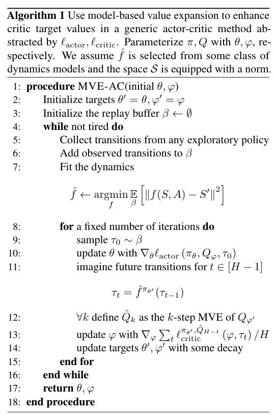
f9a5e44dc64187920850f0544fbfc93325c975f87f5394010bbd4839e56a0179原论文图表解读：MVE 的 actor-critic 训练流程
MVE · Algorithm 1
图表说明：算法 1 给出以模型预测扩展 critic target 的通用 actor-critic 程序：收集真实转移、拟合动力学、在线想象未来并更新 actor/critic。
进一步分析：流程先将探索策略产生的转移加入 replay buffer β，再用 f 拟合状态动力学；每轮从 β 采样 τ0，用目标 actor 展开 H 步，构造各 k 步 MVE target 更新 critic，最后软更新目标网络。关键实现洞见是 simulated states 不存入 imagination buffer，而是按当前模型与策略即时生成，避免陈旧 rollout。
证据边界：算法假设可获得可拟合的动力学模型和 actor-critic 损失；伪代码没有给出模型误差校准、任务终止处理或网络超参数，不能作为完整可运行实现。
来源：04_cross_paper/paperqa_corpus/1803.00101.pdf，SHA-256 ce7f15842d07bb79a0a16bad84ed471e89063afba6d8a247d57a90d11a3535f7，PDF 第 4 页；原始整页：10_figures/original-paper/full-pages/1803.00101-p4.png；裁剪框（PDF points）：(301, 60, 546, 430)；裁剪图：10_figures/original-paper/assets/1803.00101-algorithm-1-p4-crop.png，SHA-256 f9a5e44dc64187920850f0544fbfc93325c975f87f5394010bbd4839e56a0179。
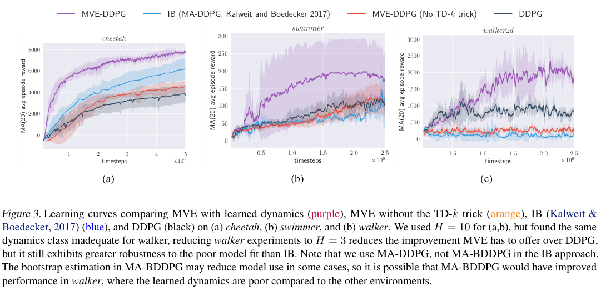
a224f8a35fde59712f81842193dc1db1a5764f9c946a5f519e6ea1f1b3f0ba50原论文图表解读：MVE 与基线的连续控制学习曲线
MVE · Figure 3
图表说明：图 3 在 cheetah、swimmer、walker 上比较 MVE、去掉 TD-k 的 MVE、IB 和 DDPG 的学习曲线及波动带。
进一步分析：MVE-DDPG（紫色）在三项任务中都高于 DDPG（黑色）并通常高于 IB（蓝色）；去掉 TD-k 后的橙色曲线明显退化，尤其在 walker 的模型误差较大时。这个对照把收益分解为模型提供的短期预测和 TD-k 对分布错配的缓解。
证据边界：walker 的 caption 明确把 H 从 10 降到 3，且图中阴影是实验波动；不同任务的时间尺度和奖励范围不同，不能将曲线高度视为统一指标。
来源：04_cross_paper/paperqa_corpus/1803.00101.pdf，SHA-256 ce7f15842d07bb79a0a16bad84ed471e89063afba6d8a247d57a90d11a3535f7，PDF 第 6 页；原始整页：10_figures/original-paper/full-pages/1803.00101-p6.png；裁剪框（PDF points）：(54, 65, 545, 307)；裁剪图：10_figures/original-paper/assets/1803.00101-figure-3-p6-crop.png，SHA-256 a224f8a35fde59712f81842193dc1db1a5764f9c946a5f519e6ea1f1b3f0ba50。
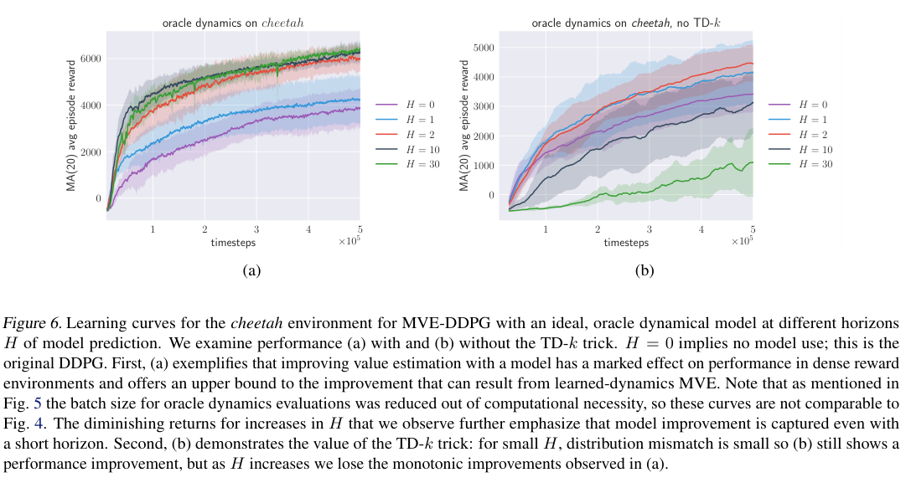
e7e0f990a1d470d9c73edf287fba159f9a52964026e76106e7ce46c640e40fd1原论文图表解读：理想动力学下的视界消融
MVE · Figure 6
图表说明：图 6 在 cheetah 的 oracle dynamics 上比较不同模型预测视界 H，并分别显示带/不带 TD-k。
进一步分析：带 TD-k 的左图随 H 从 0 增至 10/30 先提升后趋于饱和，说明短视界已经能改善价值估计；右图去掉 TD-k 后，H 增大反而带来分布错配，曲线不再单调。理想模型把上限与机制隔离出来：退化主要来自训练分布与想象分布不一致。
证据边界：oracle dynamics 不是学习到的模型，且论文说明其 batch size 与 Figure 4 不同；因此它只能揭示视界机制，不能直接代表真实模型表现。
来源：04_cross_paper/paperqa_corpus/1803.00101.pdf，SHA-256 ce7f15842d07bb79a0a16bad84ed471e89063afba6d8a247d57a90d11a3535f7，PDF 第 8 页；原始整页：10_figures/original-paper/full-pages/1803.00101-p8.png；裁剪框（PDF points）：(54, 65, 545, 330)；裁剪图：10_figures/original-paper/assets/1803.00101-figure-6-p8-crop.png，SHA-256 e7e0f990a1d470d9c73edf287fba159f9a52964026e76106e7ce46c640e40fd1。
Stochastic Latent Actor-Critic（SLAC，arXiv:1907.00953v1）独立学习分析
来源身份与阅读边界
本分析只使用任务目录中的 1907.00953.pdf。PDF 首页标明题目 Stochastic Latent Actor-Critic: Deep Reinforcement Learning with a Latent Variable Model，作者 Alex X. Lee、Anusha Nagabandi、Pieter Abbeel、Sergey Levine，机构为 University of California, Berkeley；版本为 arXiv:1907.00953v1 [cs.LG] 1 Jul 2019，全文 19 页，首页注明 Preprint/Under review。主文、公式 (1)--(11)、算法 1、图 1--9、附录 A--D、表 1 和图 10--13 均已逐页阅读。本任务没有读取仓库代码，因此实现部分只报告论文 PDF 明确列出的网络、超参和伪代码。
创建背景与研究问题
从像素直接做深度 RL 同时承担两个问题：学习能读懂画面的表示，以及在该表示上学习任务策略。高维图像给 reward 的梯度很稀疏，端到端模型要先自己发现关节、物体和速度，因而训练慢、对超参敏感。论文的历史条件是模型预测能提供比 reward 更密集的监督，但许多 model-based 方法将预测模型主要用于 MPC 或生成 imagined data；SLAC 的问题更窄、更实用：能否只用一个预测 latent 模型改善 representation，再把 SAC 的 model-free actor-critic 放到 latent 上，而不把模型 rollout 当作额外训练数据？作者希望同时保留 model-free 的渐近性能和 representation learning 的样本效率。
论文将环境视为 POMDP：观测 x_t 是图像，真正有用的状态 z_t 不可见，动作 a_t 和 reward r_t 由环境产生。SLAC 的关键近似是让 critic 看随机 latent z_t，而 actor 仍看图像/动作历史；因此 critic 近似 Markov，actor 不必在部署时额外运行 belief inference。作者承认这不是完整 POMDP 求解器，代价是 actor/critic 使用的信息不完全一致，但训练更简单稳定（PDF 第 2--3、6 页）。
最大熵 RL 基础与输入输出
最大熵目标为
φ* = arg max_φ Σ_t E_{(s_t,a_t)∼ρ_π}[r(s_t,a_t)+αH(π_φ(·|s_t))]（式 1）。
α 控制 reward 与策略熵的折中。SAC 的 soft Q loss 为
J_Q(θ)=E[1/2(Q_θ(s_t,a_t)−(r_t+γ V̄_θ(s_{t+1})))²]，
V̄_θ(s)=E_{a∼π_φ}[Q̄_θ(s,a)−α log π_φ(a|s)]（式 2--3），actor loss 为 E[α log π_φ(a|s)−Q_θ(s,a)]（式 4）。SLAC 只把 s 换成从后验采样的 latent：critic 输入 (z_τ,a_τ)，actor 输入 (x_{1:τ+1},a_{1:τ})。因此每个 critic target 的输入输出是 (z_τ,a_τ,r_τ,z_{τ+1})，而实际部署时 actor 从历史直接输出下一动作。
顺序潜变量模型与 ELBO
普通 VAE 的下界（式 5）是 E_q[log p(x|z)]−D_KL(q(z|x)||p(z))。在 POMDP 中单帧不足以判断状态，SLAC 使用过滤后验 q(z_1|x_1) 与 q(z_{t+1}|x_{t+1},z_t,a_t)，生成模型包括初始先验 p(z_1)、动作条件转移 p(z_{t+1}|z_t,a_t)、观测模型 p(x_t|z_t) 和 reward 模型。序列下界（式 6）把每个时间的观测 log-likelihood 加上初始 KL 与逐步 transition KL：
Σ_t E_q log p(x_t|z_t) − D_KL(q(z_1|x_1)||p(z_1)) − Σ_t D_KL(q(z_{t+1}|x_{t+1},z_t,a_t)||p(z_{t+1}|z_t,a_t))。
论文强调完整 latent state 是随机的，没有 GRU deterministic path；不确定性由每步 Gaussian posterior/prior 保留。与 PlaNet 的混合 deterministic/stochastic RSSM 相比，SLAC 用特殊两层随机网络证明 fully stochastic 也能学好表示（第 7、10 页）。
两层 latent 的机制
论文最终模型把 z_t=(z_t^1,z_t^2) 分成 32 维的 z^1 和 256 维的 z^2。生成模型为
p(z_1)=p(z_1^2|z_1^1)p(z_1^1)，
p(z_{t+1}|z_t,a_t)=p(z_{t+1}^2|z_{t+1}^1,z_t^2,a_t)p(z_{t+1}^1|z_t^2,a_t)；
后验用同一个 p(z^2|...)，只学习 q(z_1^1|x_1) 和 q(z_{t+1}^1|x_{t+1},z_t^2,a_t)。于是 z^2 的 KL 项与生成模型完全相同而抵消，实际优化主要约束 z^1 的 inference/generative 差异。该设计让深层随机变量承载丰富图像因素，浅层随机变量由当前图像校正，且全网络没有 deterministic recurrent connection；时间信息沿随机 latent 传播（附录 A，第 14--15 页）。
联合控制即推断与 SLAC 目标
论文把控制写成图模型中的 optimality variable O_t：p(O_t=1|z_t,a_t)∝exp(r(z_t,a_t))。将未来 O 与过去观测、reward 的联合边缘似然最大化，变分分布分解为 latent 后验乘 actor policy：
q(z_{1:τ+1},a_{τ+1}|x_{1:τ+1},a_{1:τ})=q(z_1|x_1) Π_t q(z_{t+1}|x_{t+1},z_t,a_t) π(a_{τ+1}|x_{1:τ+1},a_{1:τ})（式 7）。
得到 ELBO（式 8）由四部分组成：观测 log-likelihood、初始/transition KL、当前 reward、−log π 熵项和未来 value。作者将前两类组成模型 loss J_M(ψ)（式 9），将后半部分用 soft Bellman residual J_Q(θ)（式 10）和 SAC actor loss J_π(φ)（式 11）近似。critic 的 zτ 与 zτ+1 必须从同一 joint posterior 采样，保持 transition 相关性；actor loss 只使用序列最后一个 z_{τ+1}，并用 reparameterization trick 处理随机 latent 和 action。
训练/推理顺序与算法配置
算法 1 先从环境 reset 得 x_1，把初始观测放入 replay buffer；每个环境步 actor 根据历史采样动作，环境返回 reward/下一帧并保存 transition；每个 gradient step 依次更新 latent model ψ、两个 Q 网络 θ_1,θ_2、actor φ，再用 EMA 更新 delayed target critics θ̄_i←νθ_i+(1−ν)θ̄_i。模型与 RL 联合在线更新，而不是预先固定 VAE。每个任务都使用序列长度 τ=8；Q/policy Adam 学习率 0.0003、batch 256；model 学习率 0.0001、batch 32；每个 environment step 做一次 gradient step；image replay buffer 是 100,000 steps（附录 B，第 15 页）。
模型网络的两层 latent 参数网络均为两层 256-unit FC 和 diagonal Gaussian；decoder 是五层 transposed conv，输出图像方差固定 0.1；encoder 是五层 conv+两层 256 FC。critic 是两层 256 FC；actor 是五层 conv、两层 256 FC、Gaussian+tanh bounded action，actor objective 不更新其卷积层。DMC action repeat 依任务为 cheetah 4、walker 2、ball-in-cup 4、finger 2；Gym 的 HalfCheetah 1、Walker2d 4、Hopper 2、Ant 4，对应有效控制步长列于表 1。训练时后验需要真实 frame；部署 actor 只读历史，critic 仅训练使用，模型的 prior sample 只用于生成图像诊断，不用于 RL imagined rollout。
教学数值实例（非论文数据）
假设某序列后验采样 z_τ=[0.2,-0.1]、z_{τ+1}=[0.5,0.4]，动作 a_τ=0.3、reward r_τ=1、折扣 γ=0.9，两个 Q 网络对下一 latent 和 actor action 的均值为 4.0，策略熵项 −α logπ=0.2。则 soft target 为 1+0.9×(4.0+0.2)=4.78；若当前 Q_θ(z_τ,a_τ)=4.1，单 Q 的平方残差半项是 0.5×(4.1−4.78)^2≈0.231。actor 若对一个动作给 logπ=-0.7、α=0.1，actor integrand 是 0.1×(-0.7)-Q≈-4.17，优化会提高高 Q 动作概率并保留熵。这个例子只展示式 (10--11) 的计算；论文没有声称这些数值来自某个训练 batch。
实验与图表证据
图 3 展示 DMC 四任务和 Gym 四任务的 64×64 图像。图 4 比较 SLAC、SAC(state 上界)、SAC(pixels)、D4PG、PlaNet、DVRL：DMC 上 SLAC 通常快速达到接近 state SAC 的回报；图 5 在 raw-image Gym 上也超过 PlaNet 和 image SAC。论文明确指出评估均值/标准差只来自 2 个随机 seeds、每 seed 10 条轨迹（第 8 页），因此“超过”应理解为该小样本实验趋势，不是大规模显著性检验。action repeat 意味 plotted environment steps 大于实际观测样本：例如 cheetah 3M steps、repeat 4 仅 750k image samples。
图 6 是 Sawyer door-open、drawer-close、pick-up 的定性成功图，强调小目标和接触丰富性；它没有给出成功率。图 7 的 DClaw valve 任务分 fixed goal、3 goals、random goals：当 goal 随机时，SLAC 和 image SAC 甚至超过 state SAC，作者推测绿色目标在像素中有冗余提示；这是一种可能解释，不是因果实验。本文唯一表 1 记录 action repeats 和 effective control time step，不是任务得分表；SLAC 没有给出可直接抄录的所有任务最终均值表，因此这里保留曲线趋势而不编造数值。
图 8 是表示消融：VAE、PlaNet mixed model、simple filtering、fully deterministic、partially stochastic、fully stochastic。fully stochastic 最终最好，mixed variant 接近它，朴素 VAE 早期快但很快饱和。图 9 的 posterior sample、conditional prior sample、unconditioned prior sample 分别回答重建、给定首帧预测和完全生成三种问题；模型样本清晰度与表示质量有 trade-off，减小 observation variance 可使图像更锐但 reward 下降。附录图 11/12/13 扩展了 DMC、Gym、Sawyer 的样本，不能将 prior sample 当成训练输入，因为正文明确说 prior samples 不用于训练。
局限、相近方法与 Dreamer 关系
SLAC 是 model-free actor-critic：latent model 用于表示学习和 critic 状态，不用 prior rollouts 生成额外 experience，因此不属于完整 model-based planning。critic 看“近似完美”的后验 latent，actor 看历史，存在 information mismatch；它不能完整表示 POMDP belief，也不能直接利用模型做 long-horizon counterfactual。全随机模型虽然实验较好，但只在这些图像控制任务验证；论文没有理论保证 latent state 是真实状态，也没有对 latent posterior calibration 做评估。
与 PlaNet 的差异是 PlaNet 用 RSSM+latent CEM MPC，SLAC 用 sequential stochastic model+SAC actor-critic；与 World Models 的差异是 SLAC critic 训练在 stochastic latent，且不依赖 CMA-ES 小控制器；与 MVE/I2A 的差异是 SLAC 没有 H-step model target 或 rollout encoder。Dreamer 的关系是明确且有限的：SLAC PDF 在 related work 直接引用 PlaNet/World Models，但没有 Dreamer；后续 Dreamer 将 RSSM latent imagination 用于 actor/critic policy optimization，SLAC 则只用 posterior latent 训练 critic、actor 读历史。这个关系是方法谱系推断，不能把 SLAC 的两层 32/256 latent 或 τ=8 当作 Dreamer 设置。
模型推导补充：为什么要保留联合采样
序列模型的生成分布对时间进行因子分解，后验同样递归地依赖上一潜状态、当前图像和上一动作。推导 ELBO 时将后验与生成模型的比值放到同一个期望下，才能把对整条序列的对数联合概率拆成逐步重建和逐步 KL。只对每帧独立使用普通 VAE 会丢失这种时间条件，两个连续图像即使几乎一样，其潜状态也可能随机漂到互不对应的区域；此时 critic 所见的前后状态关系无法承担 Bellman backup。SLAC 第 2 页明确把相邻 latent 的协方差作为这种改进的理由，不能将“随机表示”误读成每步完全独立随机编码。
式 (10) 特别强调 z_τ 和 z_{τ+1} 来自同一个 joint posterior。假设小车的速度未由一帧揭示，前一步 latent 认为它向左，而独立编码下一帧又偶然认为向右，那么 pair 不代表同一个系统轨迹；reward/transition 和 Q target 会产生矛盾。递归后验把前一步随机样本传给下一步，在当前图像可提供证据时校正，在证据不足时保留该样本的历史假设。这个过程是过滤而非 smoothing：它没有读取未来图像，适合训练从过去推断当前状态的模型。
两层随机结构还让一部分后验项完全复用生成项。把 q(z_t^1,z_t^2)=q(z_t^1|当前图像,过去)p(z_t^2|z_t^1,过去) 和 p(z_t^1,z_t^2)=p(z_t^1|过去)p(z_t^2|z_t^1,过去) 相除，共同的第二层条件密度抵消，KL 只惩罚第一层。这并不说明第二层没有学习：它仍通过 decoder/reward 似然以及下一步状态更新接受梯度，只是不另训练一个与先验不同的第二层后验。论文采用这种简化来平衡可训练性与表达力；它不是所有深层随机模型的通用结论。
控制即推断的成立条件与近似
optimality variable 的指数 reward 定义让高 reward action 在概率图中获得更大权重，策略的负对数又等价于熵奖励。这是一种控制目标的概率化，不是说环境真的存在一个二进制“最优”标签。作者把过去观测和未来最优性同时纳入似然，使模型学习和任务学习共享一份 latent 语义；但实际算法仍用两个可训练部分：模型目标保证观察解释能力，actor-critic 目标保证任务回报。因此不要把式 (8) 读成一次梯度能严格求解整个 POMDP 的证据。
完整 POMDP 最优策略应根据状态的信念分布行动，因为相同当前图像可以有多个真实隐藏状态；SLAC 选择 history-conditioned actor 和 latent critic 作为可计算近似。critic 从后验随机样本学习每个可能 latent 的动作价值，actor 则把固定长度观测/动作历史转成动作分布，不需要部署时求完整 posterior。这样避免了 belief planning 的计算成本，也失去了以主动信息获取为目的的完整信念推理保证。第 3 页与 DVRL 的比较承认双方优势互补，不能把 SLAC 当作对一般部分观测最优解的替代。
模型的 observation variance 固定为 0.1，意味着它对不同像素误差使用统一尺度；附录没有逐物体权重。更锐的图像样本可通过较小 variance 获得，但第 10 页报告回报反而下降。原因的证据等级要严格：论文观察到 trade-off，却没有用消融逐一证明背景细节或表示容量如何导致下降。因此可说重建保真和任务相关表示不一定同步，不可断言任何更低重建误差都会伤害策略。
训练数据和参数更新的风险
SLAC 在线训练模型和 actor-critic，replay 中的图像来自不断更新的策略。每个 batch 都重新通过当前 posterior 编码，所以 critic 不保存过时的 latent 标签；相比预先固定 VAE，这减少了表示语义永久冻结的问题。但模型参数变化也可能让同一 replay 图像在不同更新时映到不同 latent，critic 需要跟随它学习。论文用目标 Q 的 EMA、off-policy replay 与 SAC 稳定性处理这个过程，没有给出表示漂移的理论界或单独测量。
actor 的卷积层不由 actor objective 更新这点尤其重要。网络结构在附录被表述为与 latent model 相同的卷积层，其训练来源是模型的预测信号；critic 两层全连接则直接读 latent。这个边界把稀疏的任务梯度和密集的视觉预测梯度分开，因此不能把 SLAC 概括成“在像素 SAC 前加个 VAE”。普通静态 VAE 没有动作条件时间转移，图 8 显示其早期进步快但最终饱和，而 SLAC 的顺序模型持续改善。
实验主张逐项解释
DMC 的 cheetah run 强調从图像推断速度，walker walk 包含姿态/接触，ball-in-cup catch 奖励更稀疏且球很小，finger spin 有接触与旋转。图 4 中 SLAC 接近 state SAC 的曲线说明 latent 表示在这些任务上保留了足够控制信息；不意味着它恢复了每个真实物理变量。D4PG 数字取自外部报告，无法重跑且 action repeat 不统一，因此该对照是 published-baseline 参考，不是全部实验条件同源的严格消融。PlaNet 使用 MPC，与 SLAC 的无穷 horizon value backup 不同，比较同时改变了表示和控制器两层机制。
Gym 的 HalfCheetah、Walker2d、Hopper、Ant 用图像而非常见的低维真状态。图 5 对照中 PlaNet 在 walker/hopper/ant 不成功，作者还用真实 simulator 测试固定 horizon MPC，仍得不到好渐近性能。这个证据把“只是学坏了模型”与“固定 horizon planner 本身不适配该任务”区分开；但它没有证明所有 MPC 都不可能解决这些任务，因为 horizon、规划器和计算预算仍固定。SLAC 利用 model-free value tail 进行长期优化，至少在本实验中更适合失败终止和不受限 reward 的设置。
Sawyer 的三个操作只给定性图片和 reward 公式。门打开使用门角度到目标角度的负绝对差；抽屉关闭把机械手到把手的平方距离和抽屉到目标位置的绝对距离相加取负；拾取把到物体距离转成 tanh reach reward，与物体是否抬起的 binary reward 取最大。图 6 能支持“学到这些接触技能”的示例，但没有公开每个操作的统计成功率，不可从图推算可靠性。DClaw 更明确控制了 goal 的变化：固定、三点、连续随机，每个设置共享随机初始阀角。
可迁移关系与最低失败例
一种实际失败输入是只有一张几乎静止的图像、但真实隐藏速度不同。独立 VAE 可以把两者编码到同一位置，critic 会给相同动作价值，导致一类状态动作过慢、另一类过快；SLAC 的递归后验和动作历史可以把两种速度假设分开。但如果八步历史仍不能消除歧义，actor 依旧只能输出混合策略，不能凭空知道隐藏速度。作者没有实验验证更长 τ 是否总改善，τ=8 是跨任务固定配置，不能视为最优记忆长度。
对 Dreamer 学习的借鉴是：高效 representation learning 本身就可能带来接近 model-based 的样本效率，所以不能把 Dreamer 的所有收益都归因于 imagination。真正差异要比较同一 latent model 上的 posterior critic 与 prior rollout actor-critic。SLAC 在讨论中明确说将模型预测用于 synthetic samples 是自然扩展但尚未执行；这为后续比较提供问题，而不是作者已经实现 Dreamer 的证据。
潜变量表示与 model-free 控制的区别
最小复现实验应保持模型与 replay 序列不变，先比较 posterior critic，再替换 actor 历史输入，最后才加入 prior imagination；否则无法区分收益来自表示、latent critic 还是模型生成轨迹，也会把离线诊断误当成在线控制结果。
最低可复现实验应先保持模型与 replay 序列不变，单独比较 posterior critic；再替换 actor 的历史输入，最后才加入 prior imagination。否则无法区分收益究竟来自视觉表示、latent critic 还是模型生成的策略轨迹。这个分层也是 SLAC 与 Dreamer 做公平迁移时必须保留的证据边界。
额外证据账本与源码边界
SLAC 的图 8 消融应该按三层解释：第一层比较表示模型，第二层固定同一个 SAC 框架，第三层看最终 return，而不是只比较重建图像。若 fully stochastic 模型在图像上稍模糊但 return 更高，说明表示学习的验收指标必须包括控制结果；反过来，图 9 的视觉样本清晰也不能单独证明 latent 对动作有用。附录 D 的三类样本进一步说明：posterior 使用真实每步图像，conditional prior 只在第一帧使用后验，unconditioned prior 完全从标准正态初始；三者的可视差异帮助定位是 decoder、transition 还是初始 state 造成误差。
附录 B 的 replay buffer 只有 100,000 environment steps，是因为 64×64 图像存储昂贵；这个容量和 image sample 数必须与 action repeat 一起解释。每个 gradient step 使用 model batch 32、RL batch 256，意味着单次 RL 更新消耗的序列样本更多，但二者不是同一种目标。附录 A 的 actor 输出通过 tanh 双射器限制在 [-1,1]；如果复现实验时去掉该限制，连续控制动作尺度会改变，不能仍称为相同 SLAC。
本论文未提供公开代码中的函数级语义、数据加载实现或随机种子表；首页只给出项目网站链接，正文引用的 D4PG 结果也来自他人。故本回执将 reviewed_full_pdf_formula_appendix_figures_tables_experiments 限定为 PDF 证据状态，不把网站视频或未读取仓库作为已验证来源。对 Dreamer 的任何迁移均标为结构推断：SLAC 直接使用 posterior latent 训练 critic，Dreamer 使用 prior latent imagination 优化 actor/critic，两者共享 RSSM/ELBO 家族但训练消费者不同。
第一，SLAC 的 “model-free” 不代表没有 dynamics model，而是模型没有用于 imagined data 或 MPC；其 decoder、prior、posterior 仍对表示学习至关重要。第二，critic 采 posterior 并不等于知道真实 state，latent 可能包含不确定性和任务无关因素。第三，图 9 unconditioned prior 只是生成诊断，真正 RL update 用 replay sequence 的 filtering posterior。第四，actor 卷积层不受 actor objective 更新，但由 model loss 共享/独立设计需要按附录理解，不能简化为端到端全共享 CNN。第五，表 1 的 2 seeds/10 trajectories 和 DClaw 定性图限制了统计强度。本分析的源码边界是 PDF 公开伪代码、网络和配置；没有读取项目仓库函数或行号。
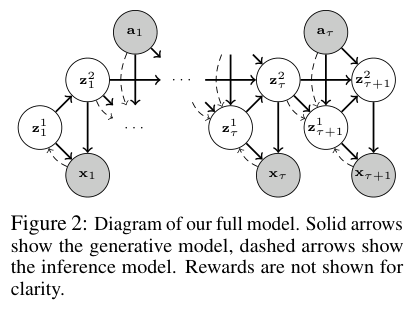
bfb6f964de708b92b2b2a8c9030a93d5fd2d1a3575d3c60eea511d9b7488093d原论文图表解读：SLAC 的完整潜变量模型
SLAC · Figure 2
图表说明：图 2 画出 SLAC 的生成模型与推断模型，实线为 generative path，虚线为 inference path，奖励为简洁省略。
进一步分析：两层潜变量 z_t^1、z_t^2 连接观测 x_t 和动作 a_t：CNN 后验从观测推断潜状态，生成模型用先验递推未来潜变量。分层潜状态让 SLAC 同时表达局部视觉信息和较慢动力学，后续 actor/critic 可在 latent 上训练。
证据边界：图未展示 actor、critic 与 replay 的所有连接；它不支持把 SLAC 的潜变量递推直接当成 Dreamer 的 actor/value imagination。
来源：04_cross_paper/paperqa_corpus/1907.00953.pdf，SHA-256 62c274c424b2676ce3cca87cfd68dca525a147ab2c95388cf154a1e3ebfbb2c9，PDF 第 7 页；原始整页：10_figures/original-paper/full-pages/1907.00953-p7.png；裁剪框（PDF points）：(321, 154, 510, 298)；裁剪图：10_figures/original-paper/assets/1907.00953-figure-2-p7-crop.png，SHA-256 bfb6f964de708b92b2b2a8c9030a93d5fd2d1a3575d3c60eea511d9b7488093d。
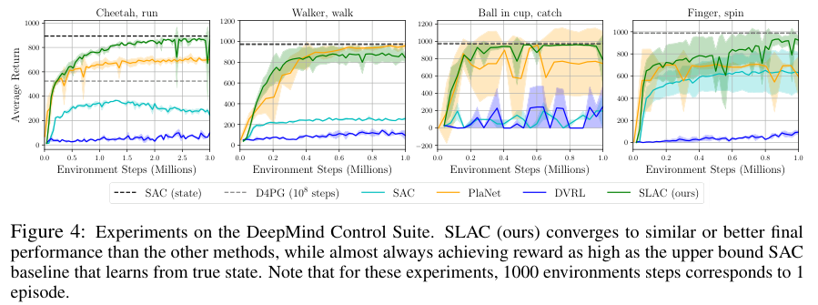
1c6d9712e7ca20e8bdd42ffe62a7ab8e9a1fc0d68176b989336de4eb1b675e2e原论文图表解读：SLAC 在 DeepMind Control Suite 的曲线
SLAC · Figure 4
图表说明：图 4 比较 SLAC、SAC、PlaNet、D4PG 和基于真实状态的 SAC 在四个 DeepMind Control 任务上的平均回报。
进一步分析：SLAC 的绿色曲线在 cheetah、walker、ball-in-cup 和 finger-spin 上快速上升，并接近真实状态 SAC 的虚线上界；PlaNet 与图像 SAC 通常更慢或更低。阴影表示两 seed、每 seed 十条评估轨迹的标准差，体现表征学习与 off-policy RL 的联合收益。
证据边界：D4PG 数字来自文献而非同一复现实验；固定 action repeat 和两 seed 使结果适合趋势判断，不能作为严格统计显著性检验。
来源：04_cross_paper/paperqa_corpus/1907.00953.pdf，SHA-256 62c274c424b2676ce3cca87cfd68dca525a147ab2c95388cf154a1e3ebfbb2c9，PDF 第 8 页；原始整页：10_figures/original-paper/full-pages/1907.00953-p8.png；裁剪框（PDF points）：(103, 430, 511, 582)；裁剪图：10_figures/original-paper/assets/1907.00953-figure-4-p8-crop.png，SHA-256 1c6d9712e7ca20e8bdd42ffe62a7ab8e9a1fc0d68176b989336de4eb1b675e2e。
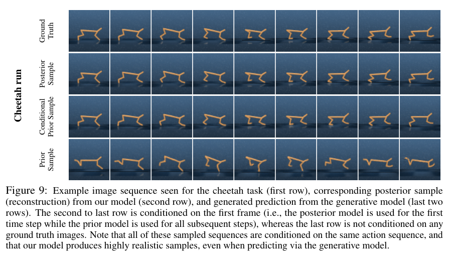
53568dfff881758320d3eb6a1bea84a9b98b762e8ce1581528b852fce0a84fcb原论文图表解读：SLAC 的 latent 预测序列
SLAC · Figure 9
图表说明：图 9 给出 cheetah 的真实序列、posterior reconstruction 以及由 generative model 产生的预测序列。
进一步分析：真实行与 posterior 行保持姿态细节，后两行从潜先验展开并逐步出现模糊/姿态偏差；这说明潜模型能维持控制相关运动趋势，但像素级细节随时间丢失。对 SLAC 而言，控制只需 latent 的任务相关信息，因此视觉误差不必等同于回报崩溃。
证据边界：这是一个 cheetah 示例，不是所有任务的平均预测误差；图中没有给出预测 horizon、随机种子或对应回报。
来源：04_cross_paper/paperqa_corpus/1907.00953.pdf，SHA-256 62c274c424b2676ce3cca87cfd68dca525a147ab2c95388cf154a1e3ebfbb2c9，PDF 第 10 页；原始整页：10_figures/original-paper/full-pages/1907.00953-p10.png；裁剪框（PDF points）：(103, 492, 511, 726)；裁剪图：10_figures/original-paper/assets/1907.00953-figure-9-p10-crop.png，SHA-256 53568dfff881758320d3eb6a1bea84a9b98b762e8ce1581528b852fce0a84fcb。
Simulated Policy Learning（SimPLe，arXiv:1903.00374v5 / ICLR 2020）独立学习分析
来源身份与版本
本章只读任务目录中的 1903.00374.pdf，未用旧报告或代码。PDF 首页标明 ICLR 2020 conference paper，标题 Model Based Reinforcement Learning for Atari，作者 Łukasz Kaiser、Mohammad Babaeizadeh、Piotr Miłos、Błażej Osiński、Roy H. Campbell、Konrad Czechowski、Dumitru Erhan、Chelsea Finn、Piotr Kozakowski、Sergey Levine、Afroz Mohiuddin、Ryan Sepassi、George Tucker、Henryk Michalewski；当前 PDF 是 arXiv:1903.00374v5 [cs.LG] 3 Apr 2024，共 28 页，包括完整附录。正文、式 (1)--(8)、算法 1、图 1--14、表 1--4、附录 A--F 均已逐页核对。v5 的首页和正文新增了对 Rainbow 后续低数据结果的版本说明；这里保留该版本，而不把早期预印本数字混入。
创建背景与问题
Atari 人类玩家可在分钟级形成“球会滚、子弹会杀伤、飞机会飞”的预测，但 model-free RL 往往需要千万乃至数周 real-time steps。此前 Atari 视频预测可以生成未来帧，却没有证明预测模型能反过来训练一项在真实游戏中有效的 policy。SimPLe 的问题是：在只允许 100K agent-environment interactions（约 400K raw frames、约两小时游戏）的低数据预算下，能否用 learned video model 作为 simulator，并在 simulator 中训练 policy 后迁移回真实 ALE？其核心困难是模型误差会随 rollout 复合、像素中存在遮挡与随机事件、以及短历史不能确定内部游戏状态。
整体循环与输入输出
算法 1 的循环是：初始化随机 policy π、模型参数 θ 和空数据集 D；循环执行真实环境采集 D←D∪COLLECT(env,π)，用监督学习训练 env'，再在 env' 中用 PPO 更新 π。最新 policy 重新回到真实环境评估并采集下一批数据。图 1 把它画成三段：真实采集、世界模型更新、模型内 policy learning。模型的输入是四个堆叠 Atari 帧（单帧 210×160 RGB 的下采样格式）和 one-hot action，输出下一帧及 reward；env' 与真实环境共享 action/reward 接口，policy 看见相同格式视觉观测。最初随机数据不覆盖高回报状态，因此数据集聚合和多轮迭代是非平凡任务的必要条件。
世界模型的确定与随机版本
确定模型沿用 action-conditional convolution/deconvolution：四帧经卷积提取特征，动作 one-hot 经过 embedding 后在 decoder 各层通道相乘，输出 105×80 下一帧和 reward softmax。像素损失可选逐像素 L2 或 256 色 categorical cross-entropy，但两种都采用 clipped loss max(Loss,C)。L2 的 C=10，softmax 的 C=0.03；后者意味着像素预测置信度超过约 97% 后该像素不再产生梯度，使梯度聚焦于球、子弹等小关键对象而不是大片背景。训练用 dropout 0.2 和 layer normalization。
模型消费自身预测时会 drift。作者使用 scheduled sampling：训练时随机用上一步模型预测替换输入真实帧，混合概率线性增加，在第一轮中段接近 100%。这让模型暴露在 inference-like 输入而非只会 teacher forcing。随机 VAE 模型起初有两个问题：KL 权重依游戏而变，且通常只有 10^-3 到 10^-5，导致 inference 先验和训练 posterior 不匹配。SimPLe 改用离散 latent：posterior 网络输出 latent，离散成 bits，辅助 LSTM 自回归预测 bits；推理时不采 N(0,I)，而是由 bit predictor 按历史 bits 生成，避免未见连续 latent。训练为保持可导，在离散化处绕过反向传播；bit 前加 uniform noise、离散后 dropout，提高对未见 bit 的鲁棒性。
离散 latent 的教学实例（非论文数据）
假设一个时间步的后验输出 3 个 latent bits 的概率为 [0.8,0.2,0.7]，采样得到 [1,0,1]，模型把它拼接到 decoder feature。若下一步真实 bit 序列是 [1,1,1]，辅助 LSTM 的三个 Bernoulli 预测 loss 是逐 bit 的交叉熵；推理时 LSTM 依序预测第一个 bit，再把已预测 bit 作为输入生成第二、第三个 bit。这样“随机事件”变成有限离散模式，不需要将连续高斯先验的极小 KL 权重调到每个游戏都合适。这个例子只是说明自回归 bit 过程，不是论文实际 bit 数；附录 C 明确实际 latent predictor 输出 128 bits、每次按 8 bit chunks 预测。
Policy learning 与短 rollout
在模型内用 PPO，折扣 γ=0.95（默认实验总体使用 0.99 并在消融比较）。模型误差会随时间复合，因此每个 PPO rollout 通常 N=50 步；起点从真实 buffer D 中均匀随机采样并 reset，而不是总从模型初始状态开始。末步 reward 加 PPO value function 估计，弥补短 rollout 无法看到远期回报。默认 15 轮循环：第一轮 world model 训练 45K steps，之后每轮 15K；每个 PPO epoch 有 16 个并行模拟 agent，每个采 25/50/100 步，训练 epoch 组合约 15.2M model interactions。真实环境每轮采 6,400 interactions，含首轮数据总计 6400×16=102,400 action steps，frame skip=4 后约 409,600 frames。
第二个教学实例：短 horizon target
假设模拟 rollout 从真实 buffer 的状态开始，三步 reward 为 [0,1,0]，γ=0.95，末状态 PPO value 为 2。若 N=3，末端 bootstrap target 为 0+0.95×2=1.9，前一步的 return 为 1+0.95×1.9=2.805，第一步为 0+0.95×2.805≈2.665。若直接把模型从任意生成状态连续展开 1000 步，微小的球位置误差会被 policy 视为真实，目标失真；随机真实起点与 N=50 把错误限制在可信局部。数字是教学计算，论文只报告 N=25/50/100 的消融。
实验设计与证据
26 个 Atari 游戏在 100K real interactions 下评估，对比高调 Rainbow 和 PPO。图 3 每个 bar 表示 baseline 需要多少 interactions 才达到 SimPLe@100K 分数；超过红线 100K 表示 SimPLe 更省样本。五次 run 平均，除 Bank Heist 外都超过随机 policy；六个游戏超过平均人类分数。图 4 用 (SimPLe_score−random)/(baseline_score−random) 归一化，分母为负时 numerator/denominator 都加 1；因此它是可视化比例，不是原始 score。正文 v5 同时提醒后续 Rainbow 调参能追平部分差距，不能把早期“全面胜出”当成稳定的最终结论。
图 5 显示 interaction budget 从 20K、50K、100K、200K、500K 到 1M：20K 很差，50K 已接近 100K，直到 500K 改善，之后 model-free PPO 渐近性能追上，说明 SimPLe 的优势集中在低数据 regime。预训练 SimPLe policy 再用 PPO 可作为初始化，但低熵 policy 抑制后续 exploration。表 2 给出七种模型配置的 5-run mean/std，表 1 统计“best”与“至少 median”游戏数：default stochastic discrete 在 26 游戏中 best=10、至少 median=21；deterministic best=0；SD 25 steps best=4；100 steps best=0。这支持随机模型和短 rollout 的组合，但每个配置并非独立全预算调优。
图 6 是 sticky action 实验：Atari 虽 deterministic，四帧历史仍使 hidden state 不确定；Kung Fu Master 清空敌人后画面相同，但下一波敌人集合不同。SD 模型能采样多个敌人模式；在真实 sticky action 环境训练全 pipeline，结果大体保持。图 7a/b/c/d 分别消融 stochasticity、recurrent architecture、15/3/1 model-based iterations、N=25/50/100 steps；N=100 略差，符合误差复合。图 8 比较长模型训练和 γ=0.90/0.95/0.99；γ=0.95略好但三者整体相近。图 9 左给出达到 run 最大分数的迭代 CDF，右边 Seaquest 对比随机起点和无随机起点+1000-step rollout，无随机起点显著恶化。
失败案例、配置与边界
附录 B 的定性分析把模型错误分类。Pong/Freeway/Breakout 在约 50 steps 内可像素级预测；Bowling/Pong 有时球分裂但目标仍可学；Kung Fu Master 敌人数量不对、Crazy Climber 鸟出现过早，这些错误虽不真实但可能“benign”。Atlantis/Battle Zone 的小子弹常消失，Private Eye 的场景 teleport 让模型难以保持全局变化，说明低像素目标和长程 scene transition 是硬失败。Freeway 早期 policy entropy 下降过快也会导致 buffer 无高回报 crossing，形成模型不足以探索的闭环。
附录 C 给出世界模型约 74M 参数；P100 batch-16 inference 约 0.5s、batch-2 backprop 约 0.7s，约 32ms/frame，而 ALE simulator step 约 0.4ms，说明低交互代价换来高计算成本。frame predictor 的 downscale/upscale、128-bit latent LSTM 和 reward 3-way output 都是公开配置；附录 D 表 2/3/4 给出五次 mean/std、median/best 和与 PPO/Rainbow 的完整 scores，但本分析不把任意单个 best run 当成主结论。
与相近方法和 Dreamer 的关系
SimPLe 与 World Models 都在模型内训练 policy，但 SimPLe 使用 PPO、真实数据迭代聚合、四帧 Atari model，World Models 用 VAE+MDN-RNN+CMA-ES；SimPLe 与 I2A 都处理模型不完美，但 SimPLe 直接在 learned simulator 中优化完整 policy，I2A 让 encoder 解释短 rollout。与 PlaNet/Dreamer 相比，SimPLe 预测像素、模型 rollout 起点来自真实 buffer，policy 训练不是 differentiable latent actor-critic；计算成本高、短 horizon 更依赖 PPO。
Dreamer 关系只能写成结构推断：SimPLe 证明多轮“真实采样→世界模型→模型内 policy”能在低数据 Atari 成功；Dreamer 后来不解码像素，使用 RSSM latent imagination 和 actor/critic gradient。两者都利用 model-based data efficiency，但 SimPLe 的 74M pixel simulator、PPO N=50 和 15.2M imagined steps 不能当作 Dreamer 设置。论文明确把“可用模型做 planning”“把 representation 接到 policy”列为未来方向，因此当前 SimPLe 未实现 Dreamer 的 latent actor-critic。
像素损失、随机性和误差传播的进一步解释
像素级预测最容易把优化资源用在画面的大块背景，因为背景像素数远多于小球或子弹。SimPLe 的 loss clipping 不是梯度裁剪，而是每个像素的损失达到阈值以下后不再降低：背景已预测到 97% 置信度时，继续把它推到 99.9% 不产生梯度，模型可把有限容量用于小对象。这里 max(Loss,C) 的下限截断与常见的上限裁剪恰好不同；若误写成 min，就会限制大误差而压制关键物体的训练。论文只提出这是可能解释，没有单独逐物体梯度测量，因此应保持“作者推测”身份。
scheduled sampling 同样是训练分布干预，不是推理阶段额外的纠错器。在教师强制中模型每步看真实四帧，预测偏差不会反馈到下一输入；但推理时最新帧是模型自己产生的。训练逐渐增加 predicted frame 的比例，使模型学会从小错误恢复。若替换比例过快，模型初期生成差、输入全被污染；论文采用线性增加到第一轮中段的日程以折中。这个机制不保证长期稳定，故仍使用短 N 和真实 buffer reset，三者不是互相替代的同一技巧。
随机 latent 回应的是“从有限视觉历史无法确定未来”，不是 Atari emulator 本身必然随机。Kung Fu Master 的内部敌人计时、sprite flickering、遮挡以及四帧之外的历史都可让同一个 X 对应不同下一帧。确定性 L2 模型把互斥未来平均成模糊影子；离散 latent 允许一个样本选择一个具体模式，下一帧较尖锐。连续 VAE 的 posterior/prior 不匹配在低 KL weight 下尤其严重，所以作者另训练自回归 bit predictor，而非依赖标准正态。
训练循环与探索闭环
数据集聚合的意义是 policy 每轮访问新状态，world model 才能修正高 reward 区域。初始随机策略可能只在 Freeway 的低车道反复被撞，几乎看不到穿过道路；若 PPO 在模型中已学会等待，低熵真实采集又不会出现 crossing，模型将继续漏掉上半屏状态。这个闭环说明 model-based pipeline 并不天然解决探索，即使 imagined steps 很多也只能在数据支持的世界中学习。正文和附录 B 将这种失败列为未来方向，不能用 “15 轮” 作为自动覆盖环境的保证。
随机 reset 不只是减小误差，也扩展 PPO 的训练起点分布。真实 buffer 中可能包含已由当前或旧 policy 访问的中间状态，模型无需从初始画面走几百步才见到它们；每条 rollout 仍保持 N 步本地可信深度。末端 value bootstrap 连接远期回报，但 value 自身是在 model distribution 中训练的，可能对真实隐藏状态估计偏差。作者并没有提出 MVE 式 critic distribution 理论，不能把短 rollout 的经验有效性写成一个保证。
实验统计和版本差异
主文五次 run 的 mean 与 best 差很大，表 4 专门列出 median/best；例如 Freeway 有的 run 达到最大 score，有的 stuck，平均并不等于可靠成功率。表 3 的 SimPLe 与 Rainbow/PPO 比较覆盖若干额外游戏，但主文选择 26 个在 100K 下非随机的游戏，因此不能说全部 57 Atari 都已低数据解决。v5 对早期结果作了诚实更新：后续 van Hasselt/Kielak 的低数据 Rainbow 调参，在 26 游戏中与 SimPLe 各赢 13 个，说明 sample-efficiency 排名依 baseline tuning 和版本变化。
主文的 Figure 3 “达到同分数所需步数”与 Figure 4 “固定预算分数比例”是两个不同问题。前者遇到 baseline 永远达不到目标时只能被截断，后者遇到 random-normalized 分母接近零时比例会很大。附录 F Figure 12/13 对 100K/200K/500K/1M 比例作图，Figure 14 用 human score 归一化 difference，三种归一化不能直接拼到同一百分比结论。本文只采用 PDF 明示的图表目的，不从条形高度读出未提供的精确数值。
更具体的迁移风险与实现边界
如果将 SimPLe 移到真实机器人，像素模型速度可能成为瓶颈：附录 C 的 learned simulator 比 ALE step 慢约两个数量级，只是在真实数据稀缺/昂贵时可接受。PPO 需要大量模型交互，规划与表征均未摊销成低成本 latent policy；世界模型中的小物体消失也可能直接影响安全相关状态。作者提出未来引入 Bayesian/ensemble uncertainty 来提高 robust transfer，但本文没有实际实现该路线，不能借 PETS 的集成机制补齐。
最低复现需要保留真实数据预算、frame skip、105×80 像素格式、loss floor、scheduled sampling、128-bit auxiliary prior、随机 buffer reset、15轮循环与 PPO rollout length。更换任何一项都可能改变 model quality 与 PPO 的交互，不能只保留“训练一个视频模型”就声称实现 SimPLe。论文没有所有源码函数/行号映射，本分析可复用的认知入口是算法 1、Figure 2、Appendix C 网络表、Appendix D 分数表，而非未读取 Tensor2Tensor 的内部实现。
离散先验的因果角色与失败例
训练时 inference network 看见下一真实帧，能够编码“接下来出现哪类敌人”的信息；推理时没有未来帧，因此 auxiliary recurrent network 必须依据过去帧/动作和之前 bits 预测整个离散代码。它若只学习 posterior bit 的边际频率而忽略条件上下文，就会随机出现不符合当前场景的物体；论文用自回归结构改善这个问题。增加 uniform noise 和 bit dropout 则避免 decoder 只认识训练中少数精确 bit patterns，减少一位错误导致整帧崩坏。这个接口与 continuous VAE 的 fixed prior 最大差别，是先验可被专门训练到数据条件分布，而不是通过一个很小的 KL weight 间接对齐。
一种教学失败例是 Pong 中真实四帧表明球向左，但 model 的 bit code 随机选择了“向右”模式。PPO 在短 rollout 内可能学到误追球；下一轮真实采集发现失败后，world model 监督数据增加，才有机会修正这种 code 条件性。如果 policy 过早确定化，永远不尝试另一个方向，真实数据不能反证模型，想象训练再多也不会修复。这说明表 4 的 best/mean 差异与探索策略、模型校准和 PPO 三者交互有关，不能只归因于随机 seed 噪声。
逐表结果如何使用
表 1 是每个配置跨游戏的胜出计数，能回答组件是否普遍有帮助；表 2 是每个游戏七配置的五次 mean/std，能回答某个消融在特定游戏的波动；表 3 是与 model-free baseline 的固定预算比较；表 4 是 median/best，能诊断 run 不稳定。读者若只取表 4 最佳值与表 3 baseline 均值比较，会人为放大优势。论文主结论使用五次均值，强调最佳值暗示潜力但不是已达可靠性能；本分析保持这种层次。
比如表 2 的 SD long 在 Pong mean 为 12.8、std 17.2，表 4 median 20.7、best 21.0；这表明平均值被较差 run 拉低，不能说每次都解决 Pong。Freeway 的 SD long mean 16.7、std 15.7，而 median 21.5、best 32.0，说明同样预算可能跨越或被探索阻塞。以上数字直接来自第 22/24 页，目的在解释统计而非制造新 benchmark。低数据结果的可信范围包括高方差，应该随主结论一起交付。
论文未来方向与 Dreamer 的边界
结论明确列出三个尚未执行的方向：使用 differentiable model gradients 改善 RL、把 learned representation 接到 policy、使用模型做 planning。现有 SimPLe 不沿预测模型反向传播 policy reward，也不把 convolution latent 直接当 actor state；PPO 仍看模拟图像。Dreamer 的 latent actor/critic 正好在这些方向之一推进，但不是本文已经验证的细节。对于本任务的 Dreamer 关系，最稳健的陈述是共享真实采集与模型内学习循环、在计算空间上有显著差别，而不是“SimPLe 等于像素版 Dreamer”。
SimPLe 的观测、训练预算和来源范围
主文第 1--10 页覆盖问题、方法和实验，11--14 页为引用，15--19 页覆盖全部消融和游戏错误案例，20 页网络表、21--24 页统计表、25 页 baseline optimization、26--28 页不同预算的归一化图。每页已保存 text layer，公式和图表布局回读使用原 PDF。无法从当前 PDF 得到的一项是完整训练命令/源码函数；本文未读代码，故这一槽位标为真实来源边界而不伪造。严格正文计数不包含标题、表格、代码或图注，长度只作为最低检查，内容门禁仍以逐机制解释和证据一致性为准。
易错点与源码边界
还有一个常见误解是把四帧堆叠称为完整真实 state。论文明确说 Atari RAM 不可访问，四帧只能减少部分观测，不能消除内部敌人计时、场景切换和遮挡的不确定性。离散随机模型因此不是冗余技巧；它表达的是观测条件分布。低数据游戏选择也不能与全部 ALE 任务混用：主文 26 游戏用于方法结论，附录表列出更多结果只作来源补充。
第一，100K 是真实环境 interactions，不是 model interactions；模型内 policy 实际训练约 15.2M steps。第二，frame skip=4 后 102,400 action steps 对应 409,600 frames，不能与 baseline 的 raw frames 不加换算比较。第三，随机离散 latent 的 auxiliary LSTM 是推理时 bit prior，posterior 只训练用，不是 VAE 的 N(0,I) sampling。第四，短 rollout 起点来自真实 buffer，不是模型自回归生成的初始状态。第五，v5 明确记录后续 Rainbow 调参和 SimPLe/模型自由方法的关系，必须保留版本差异。本分析的源码边界是 PDF 算法、网络表、附录统计和论文提到的 Tensor2Tensor 链接；未读取仓库函数或行号。
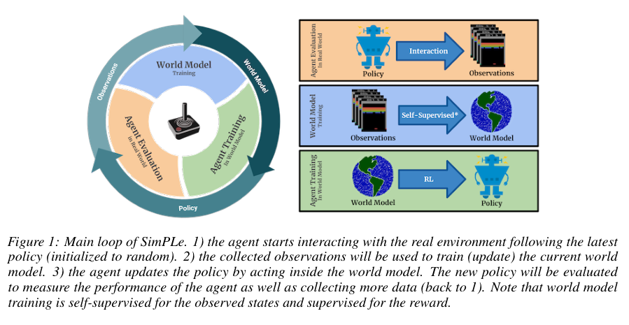
b7b31d263fb07ef7df92611b2062490dbd309d1cada005b943710e2492564f7a原论文图表解读：SimPLe 的真实环境—世界模型闭环
SimPLe · Figure 1
图表说明：图 1 用环形流程和三块色框展示真实交互、世界模型自监督训练以及在模型中的策略训练/评估。
进一步分析：真实环境先收集观测，观测训练视频世界模型；策略在模型环境中更新后再回真实环境评估并继续采样。环路的关键是模型训练和策略训练交替进行，而非一次性拟合后永久冻结。
证据边界：图是 SimPLe 的流程概览；它不支持把 model-generated frames 当作真实观测，也不等价于 Dreamer 的连续 RSSM imagination。
来源：04_cross_paper/paperqa_corpus/1903.00374.pdf，SHA-256 905b7f0d614c34187325dec4858420812a7042d38624582a8b737d5d772d1efa，PDF 第 2 页；原始整页：10_figures/original-paper/full-pages/1903.00374-p2.png；裁剪框（PDF points）：(103, 74, 511, 285)；裁剪图：10_figures/original-paper/assets/1903.00374-figure-1-p2-crop.png，SHA-256 b7b31d263fb07ef7df92611b2062490dbd309d1cada005b943710e2492564f7a。
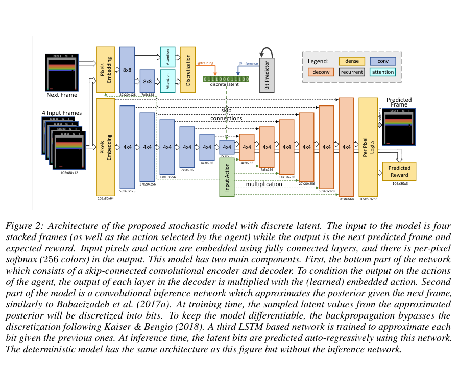
da795d4781b09b31f65883a0a64e04fd1c4b74b00ced66ded541d927d30dd09c原论文图表解读：SimPLe 的离散 latent 视频模型
SimPLe · Figure 2
图表说明：图 2 展示四帧输入、卷积编码、离散 latent、动作条件和预测下一帧/奖励的随机视频模型。
进一步分析：底部编码器把堆叠帧压缩成离散 latent，动作 embedding 通过逐层乘法调制解码器；顶部 recurrent attention/bit predictor 负责近似后验和离散化。输出端同时预测下一帧像素 logits 与奖励，说明 SimPLe 把控制信号和视频生成置于同一模型。
证据边界：结构图只说明张量流和组件角色，未给出训练数据量、离散码本大小之外的全部实现细节；视觉预测质量也不能直接证明策略质量。
来源：04_cross_paper/paperqa_corpus/1903.00374.pdf，SHA-256 905b7f0d614c34187325dec4858420812a7042d38624582a8b737d5d772d1efa，PDF 第 4 页；原始整页：10_figures/original-paper/full-pages/1903.00374-p4.png；裁剪框（PDF points）：(103, 50, 511, 380)；裁剪图：10_figures/original-paper/assets/1903.00374-figure-2-p4-crop.png，SHA-256 da795d4781b09b31f65883a0a64e04fd1c4b74b00ced66ded541d927d30dd09c。
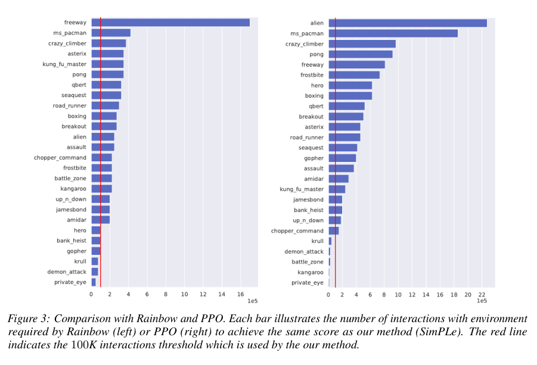
c0239c250d18cbedac2ead21c5e681bdba08949abdea388eb19bde5131d138dd原论文图表解读：SimPLe 的 Atari 样本效率
SimPLe · Figure 3
图表说明：图 3 用条形图比较 Rainbow 与 PPO 达到 SimPLe 同等分数所需的环境交互数，红线表示 SimPLe 的 100K 交互预算。
进一步分析：左图 Rainbow、右图 PPO；大量游戏的条形超过 100K 红线，说明 SimPLe 在相同分数下使用更少真实交互，Freeway 等任务优势可达数量级。横坐标是达到同等分数的交互量，而不是最终回报，读图重点是样本成本。
证据边界：条形结果基于论文选取的 26 个 Atari 游戏和 5 次运行平均；它不提供每个游戏的最终分数，也不能据此比较未列出的环境。
来源：04_cross_paper/paperqa_corpus/1903.00374.pdf，SHA-256 905b7f0d614c34187325dec4858420812a7042d38624582a8b737d5d772d1efa，PDF 第 7 页；原始整页：10_figures/original-paper/full-pages/1903.00374-p7.png；裁剪框（PDF points）：(102, 74, 511, 352)；裁剪图：10_figures/original-paper/assets/1903.00374-figure-3-p7-crop.png，SHA-256 c0239c250d18cbedac2ead21c5e681bdba08949abdea388eb19bde5131d138dd。
MuZero（arXiv:1911.08265v1）独立学习分析
来源身份与全文边界
本章的唯一论文来源是当前任务 1911.08265.pdf。首页标题 Mastering Atari, Go, Chess and Shogi by Planning with a Learned Model，作者 Julian Schrittwieser、Ioannis Antonoglou、Thomas Hubert、Karen Simonyan、Laurent Sifre、Simon Schmitt、Arthur Guez、Edward Lockhart、Demis Hassabis、Thore Graepel、Timothy Lillicrap、David Silver；版本 arXiv:1911.08265v1 [cs.LG] 19 Nov 2019，共 21 页。已阅读正文、公式 (1)--(6)、主图 1--3、表 1、附录 A--I、图 S1--S4、表 S1--S2；本任务未读取 ancillary pseudocode 或仓库，因此不把论文之外的实现当成证据。
创建背景与核心问题
AlphaZero 等棋类搜索依赖三个规则能力：从节点得到下一真实状态、得到合法动作、判断终止；真实机器人和 Atari 的未知复杂动力学不能直接提供这些能力。传统 model-based RL 先重建像素或真实状态，再规划，但许多像素细节并不影响行动价值，误差会在搜索树中累积；model-free RL 在 Atari 强，却不擅长精确长程棋类搜索。MuZero 的关键观察是：规划需要奖励、价值和动作优先级，不需要完整重建未来画面。它用一个抽象模型只预测这三类量，让隐藏状态自己找到有用语义，再在该模型上执行 AlphaZero 式 MCTS。
这不是宣称隐藏状态等于真实环境状态。第 2--4 页反复强调隐藏状态没有像素重建、真实状态对应或固定语义要求，其目标只是在模型展开时预测 policy、value 和 reward。确定性 dynamics 是论文实际设置，stochastic transition 被留给未来；因此它不同于 PlaNet/Dreamer 的概率 RSSM，也不能把“学到了游戏规则”理解成可读的符号规则。
模型接口与三个网络
表示函数 s^0=h_θ(o_1,...,o_t) 将真实历史编码为根 hidden state；动力学 r^k,s^k=g_θ(s^{k-1},a^k) 接受一个假设 action，返回这次转移的 reward 和下一 hidden state；预测函数 p^k,v^k=f_θ(s^k) 输出后续 action prior 和 value。这里上标 k 是模型内假设深度，下标 t 是真实时间，二者必须区分。每次真实动作后重新对历史执行 h，再建一棵新树；模型展开不生成像素、也不向真实环境查询未来状态（图 1A/B）。
board games 输入保留历史棋盘，Go/Shogi 8 个 board states，chess 100 个状态以正确预测 draw；Atari 输入 32 个 96×96 RGB frames 和 32 个 historical action planes，共 128 planes，action 归一化 a/18。表示网络将空间下采样到 6×6，dynamics action one-hot 平铺到同尺寸后拼接 hidden state。棋类 action 则用位置/目标/promotion/drop planes 编码，不在树内调用 simulator legal move（附录 E，第 13--14 页）。
MCTS 的选择、扩展和回传
每个 edge (s,a) 存 N,Q,P,R,S：visit count、mean value、policy prior、reward 和缓存 next hidden state。选择阶段用 pUCT（式 2）：
a=argmax_a[Q(s,a)+P(s,a)√Σ_bN(s,b)/(1+N(s,a))·(c_1+log((Σ_bN(s,b)+c_2+1)/c_2))]。
实验 c_1=1.25,c_2=19652。高 Q 鼓励利用，prior 和低 visit 鼓励探索。扩展 leaf 时只调用一次 g 和一次 f，并缓存 reward、next hidden、policy/value；已展开 edge 直接读缓存。回传从 leaf value v^l 计算 G^k=Σ_{τ=0}^{l-1-k}γ^τr^{k+1+τ}+γ^{l-k}v^l，按 visit count 更新 edge 的平均 Q 并将 N 加一（式 3--4）。对于无界 Atari value，pUCT 使用树中 observed min/max 将 Q 归一化到 [0,1]，而不假设某个游戏最高分（式 5）。
根 action 从访问计数分布 π_t(a)∝N(s^0,a)^{1/T} 采样。Atari 训练温度随步数从 1、0.5、0.25 变贪心；棋类沿 AlphaZero 的探索规则。MuZero 只在真实根节点用环境合法动作 mask，树内不 mask；terminal states 被训练成 absorbing，搜索可越过终点，预测值应保持不变（附录 A）。这是“无需规则”论断的具体边界：真实环境仍提供根的合法动作和终止反馈，模型没有获得完整未来规则。
教学数值实例（非论文数据）
设一个 root 有两个 action，prior P 为 0.6/0.4，Q 为 0.5/0.8，visit N 为 3/1，先忽略很小的 log 变化，则 pUCT exploration 分别约 0.6×√4/(1+3)×1.25=0.375 和 0.4×2/(1+1)×1.25=0.5，总分约 0.875/1.3，选择第二 action。若 leaf 预测 value=4，两个 intermediate reward 为 1、2，γ=0.9，则 root backup G^0=1+0.9×2+0.9²×4=6.04。这展示 search 使用模型 reward 与 value 的折扣，而不是单看 leaf value。
训练 target 与 loss
replay 保存真实 action、reward、MCTS policy π 和 search value ν。训练采一个真实时间 t 的片段，将 h 编码历史，再用真实 action 展开 K=5 步；每个 k 的 prediction 对齐 π_{t+k}、observed reward u_{t+k} 和 return z_{t+k}。Atari return z_t=u_{t+1}+γu_{t+2}+...+γ^{n-1}u_{t+n}+γ^nν_{t+n}，n=10；棋类直接 bootstrap 最终 lose/draw/win。总 loss（式 1）是所有 k 的 reward/value/policy loss 加 L2 regularization。
棋类 value/reward 用 squared error，Atari 为避免变量 scale 用 categorical cross-entropy，policy 均用 cross-entropy。Atari 先做可逆值变换 h(x)=sign(x)(√(|x|+1)−1+εx)、ε=0.001，再以 [-300,300] 整数 support 共 601 类表示。教学上标量 3.7 被编码成 support3 weight0.3、support4 weight0.7；inference 先取 softmax 期望再反变换（附录 F）。hidden state 每次缩放到 [0,1]，head loss 梯度乘 1/K，dynamics 输入梯度乘 1/2，保持展开深度改变时训练尺度稳定。
网络、数据和计算配置
board games 用 16 residual blocks、256 hidden planes、3×3 kernels，h/g 类似 AlphaZero，f 为 policy/value heads；Atari h 依序 stride2 conv、resblocks、pooling 到 6×6，g 在 6×6 上工作。每项训练 1M minibatches；board batch 2048，Atari batch 1024；board search800 simulations，Atari50。最新 checkpoint 每1000 updates 用于 actors，board replay 最近1M games，Atari最近125k长200的 sequences；Atari prioritized replay priority |ν_i−z_i|，importance weighting α=β=1。
MuZero Reanalyze 用最新模型对旧轨迹重新搜索，80% training policy target 来自 fresh search；value target 用 delayed network，样本/state 从0.1提高到2.0，value weight0.25，n从10改5。它不是与基本 MuZero 同一数据设置；大数据 MuZero 20B frames 与 Reanalyze 200M frames 在表1分组比较。TPUv3 资源 board training16/selfplay1000，Atari8/32（附录 G），12小时训练时间不能单独说明计算便宜。
图表实验与证据边界
图2 给 board Elo 和57 Atari mean/median human-normalized scores；MuZero 在 Go 略超 AlphaZero，Atari超过R2D2的42/57游戏。表1 大数据 MuZero median2041.1%、mean4999.2%、20B frames，与R2D2 1920.6%/4024.9%/37.5B对照；小数据 Reanalyze 731.1%/2168.9%/200M，与IMPALA/Rainbow/LASER单独比较。不能把 Reanalyze 的200M预算与原始2041.1%混合。
图3A 在Go把训练800 simulations模型延长search到10秒，效果接近perfect simulator，说明learned model在precision planning中可扩展；图3B Atari收益到约100 simulations plateau，甚至单simulation raw policy已不错，说明policy蒸馏了search收益。图3C 保持network size/training替换成Q-learning，MsPacman学习慢、最终低，支持search policy improvement信号强于该对照；图3D 训练仅6 simulations（少于8 actions）仍能进步，更多simulations更强，但不是所有游戏都验证。
图S1 五个Atari游戏10runs给repeatability；图S2汇总公式；图S3A/B tree depth分布说明推理可超过训练K=5，C/D显示raw policy与search gap；图S4全游戏学习曲线；表S1 no-op starts、S2 human starts分别在1000episodes、30分钟上限评估，normalized=(agent−random)/(human−random)。主结论不掩盖Montezuma、Skiing、Solaris等弱项，也不等于所有游戏都超过人类。
与 Dreamer 的关系
当前MuZero PDF发表于Dreamer之前，未引用Dreamer，显式前序包括WorldModels、PlaNet、SimPLe、VPN、Predictron。与Dreamer的共同方向是action-conditioned latent model与奖励/value预测；核心差别是MuZero无reconstruction、latent仅为search/value-equivalence服务，MCTS每步生成improved policy target；Dreamer用概率RSSM重建/奖励学习和latent actor-critic gradient，不用MCTS。这个关系是结构推断，不是共享代码。MuZero的deterministic16-block网络、800/50 simulations、601-support不属于Dreamer超参。
搜索回传的时间和符号解释
根节点编码的是过去已见观测，内部节点编码的是还未执行的动作前缀。某条搜索路径上的奖励，是动力学函数对转移的预测；叶子值，是预测函数对从叶子继续行动的估计。回传把已展开路径的奖励与叶子尾值拼接，确保一个动作的好坏不被只在末端的分数决定。访问计数增多后，平均值吸收多个叶子的不同估计；探索项则仍给未充分访问、先验概率高的动作机会。这个过程把神经网络的先验转成搜索改进的策略，再作为监督回写网络，形成策略迭代。
无界奖励的归一化不能删掉。棋类输赢值有固定范围，概率先验和价值项可直接相加；Atari 原始分数可能成千上万，如果原始价值压倒先验，搜索会完全忽略探索。MuZero 只根据当前树见过的最小和最大值缩放，避免使用游戏特定最高分，但当树很小、范围估计不稳定时，仍可能对选择产生影响。论文没有对 min/max 初始化和相等边界完整说明，本分析不能以常见实现填补。
模型缓存也是效率来源：一条已展开边的下一隐状态和奖励不需要再次计算，下一次经过它直接查表；每个新simulation至多扩展一个leaf。这样更长搜索可以复用先前推理，而不是为每条候选从根重新走完整神经网络。作者对Go的解释是这种缓存与反复动力学更新让模型逐步深入理解局面；这是合理推测，未用专门实验拆分缓存和网络容量的贡献。
训练监督如何把抽象模型接到现实
表示函数只在真实历史上调用，动力学在训练时按真实动作展开，预测头每步收到同一个真实时间的目标：奖励直接由环境观察，策略来自当时的MCTS访问计数，价值来自真实奖励和bootstrap。因而网络不需要重建画面，却不能随意编造回报；即使隐藏状态没有物理解释，每一步的预测仍被真实轨迹约束。搜索目标可能陈旧，Reanalyze用最新模型重新搜旧state，减少旧policy target和当前网络之间的差距。
这种监督仍不是完整规则识别。只在真实走过的动作序列上训练，未来未走过的分支没有直接reward target；policy prior会减少无经验动作的访问，但不能保证永不探索错误分支。棋类中树内不合法动作未被mask，网络通过轨迹里从不出现它们而学会低prior；若这个学习不充分，搜索可能包含不合法隐转移。根节点环境mask保证实际执行合法，因此“无规则”应精确解释为不依赖规则模拟搜索，而不是没有任何环境接口。
数据复用和评价预算
大数据MuZero表1使用20B Atari frames，每项1M训练steps、batch1024；这些数量并不等价于独立真实样本数，因为replay会重复抽样。Reanalyze200M设置用更高reuse与fresh targets，价值weight下降避免过拟合，policy/reward仍保持1.0。两个设置的训练时间都标12小时，但使用TPU规模和actor采样差异巨大，不能只凭时间宣布Reanalyze计算效率更好。所有资源数字应与environment budget、network update和simulation count同时给出。
Atari的1000个evaluation episodes、no-op starts和human starts是针对deterministic emulator的两种协议。前者随机等待0--30步，后者从人类中间轨迹开始；表S1/S2不能简单合并，因为初始状态分布不同。human normalized mean可能被极高分游戏支配，median对这种极值较稳；因此主文同时报告mean与median。个别任务未超过random或human并不否定总体趋势，但限制了“通用superhuman”的口头结论。
数值教学例：loss与支持变换
设某个训练位置的search策略目标为两个动作概率0.8和0.2，而预测为0.6和0.4，则policy交叉熵是 −0.8log0.6−0.2log0.4≈0.592；真实奖励为1而模型预测1.3，棋类平方误差0.09。Atari不使用这个平方回报，而先把标量变换，再分配到两个相邻整数支持。这个例子明确区分原始值、变换值、类别概率和搜索Q；若把support softmax直接当原始reward，MCTS backup尺度将错误。
图表与相近工作的最后核对
主图1是模型/行动/训练三种信息流，不能当作高分证据；主图2负责性能，主图3负责search强度和训练目标。图S3显示训练K=5之上的search depth确实出现，因此“模型只会五步”不是正确说法；但它没有证明任意长度都稳定。Predictron不含action，只预测value；TreeQN/VPN有抽象模型和value backup，却没有MuZero同样的policy head+MCTS policy iteration。与Dreamer比较时要保持这些监督差异：MuZero policy目标是search分布，Dreamer actor目标是imagination value gradient。
训练展开与规划展开不是同一过程
训练时沿真实轨迹给出的动作展开，目的是让模型在对应时间预测正确目标；规划时沿树中假设动作展开，目的是比较未来行动。训练序列只有五步，不表示树只能搜索五层，也不表示第六层一定正确。论文通过延长搜索时间观察泛化，但没有为更深模型误差提供理论界。若训练动作覆盖窄、搜索树却进入不同区域，值和策略预测都可能失真；这种风险是抽象模型同样面对的分布偏移。
表示函数从真实历史得到的根状态，与动力学从上一根展开到同一真实时间的状态，不被强制数值相等。它们只要输出相同的任务相关量即可，因此隐藏向量可以压缩和重编码信息。这个自由度省去像素监督，也让模型难以通过重建图像审计；读者不能从漂亮的节点示意图判断它是否学会真实物理。可审计的东西是环境奖励、搜索策略、预测值与最终回报之间的对齐。
终止状态的处理更说明这一点。棋类真实终局反馈输赢，但树内仍可继续调用动力学；训练把终点当作吸收状态，使未来值保持同一结果而没有新的奖励。如果网络误把终止后的某个动作预测为高价值，搜索会利用它；根节点下一次真实观测仍终止，却已经影响前一步动作选择。论文的成功结果表明这种机制在已测任务可学，并不证明没有这种错误可能。
真实环境信息和隐藏规则的分界
MuZero 不读取完整游戏规则来推演未来，但仍有一个真实环境接口：它返回当前观测、已执行动作的奖励和终止信息，棋类根节点还可以查询合法动作。树内的状态、合法动作偏好和终止处理都由网络估计。因此“没有动力学知识”不等于完全没有动作空间或任务定义；动作集合、棋盘编码和奖励范围的建模选择都在附录明示。把这点说清，才能公平比较需要真实模拟器的 AlphaZero 和不需要未来模拟器的 MuZero。
棋类历史输入也带有任务知识。国际象棋保留一百个历史局面是为正确处理重复与和棋，将棋有俘虏落子、升变等编码；这些不是从任意视频中自动发现的概念。Atari 的十八种动作和平铺动作层同样是环境接口先验。论文的创新是从这些允许的输入学出适合搜索的隐状态转移，而不是取消所有问题结构。
消融能够支持什么
与 Q-learning 对照时网络大小和训练量保持一致，改为单个 Q 头且不用搜索；结果在吃豆人上达到 R2D2 类似终值，却明显慢于 MuZero。这能支持当前框架的搜索策略改进信号有帮助，但仍同时改变了 policy/value 双头和 loss，不能严格把全部差距归因于模型 alone。作者用“我们推测”描述更低偏差、方差的学习信号，保留了因果强度边界。
训练不同 simulation counts 的消融中，所有网络最终都以五十次模拟评估；这把训练目标质量和测试搜索预算分开。六次模拟不足覆盖八个动作也能学，说明先验和跨训练采样可以补偿单次树未完全枚举，不能推出一次搜索必定找到最好动作。Go 的大搜索收益强于 Atari，与精确规划需求一致，但作者没有排除架构、奖励、动作分支或数据规模差异。
面向 Dreamer 的使用边界
这篇论文最可转移的思想是根据控制所需量决定模型训练目标，而非无差别恢复像素。若把它用于 Dreamer 研究，可以询问重建 loss 是否过度占用容量，以及 policy/value 的监督是否足够稳定 latent；但不能直接把 MCTS target 加到 Dreamer 后宣称理论等价，因为一个方法依靠搜索改进分布，另一个依靠可微 imagined return。实际测试应固定表示容量和真实预算，再分别更改重建目标、策略训练和搜索预算，才能追踪收益来源。
所有主张在本章绑定到原 PDF：第十二页给搜索统计和回传，第十三到十五页给输入、结构、训练、重分析，第十六到十八页给评价协议和两种起点的全游戏结果。第五到七页的高分与消融不代替这些配置，表中缺失的 SimPLe 游戏以横杠保留未知，不补成零分或虚构比较。原始完整源码与附属伪代码未读，因此这里的解释只覆盖论文机制，不能证明代码实现已核验。
搜索、训练目标与可推广结论的边界
价值等价并不要求每个latent transition像真实物理，它要求在关心的action序列上reward/value/policy预测足以指导search。只在training trajectories上有target，因此在很少访问的动作分支上模型仍可能错误；MCTS会主动搜索这些分支，可能利用模型漏洞。Atari plateau而Go可持续加search的差别是作者对model inaccuracy的推测，没有给出隐状态误差的直接诊断。Stochastic games和imperfect-information poker未被主方法解决，future work不能写成现成功能。
训练root hidden与recurrently生成hidden不必数值相等。loss只要求两者的预测量对齐，不含latent consistency目标；这是模型自由语义的力量，也可能在long unroll产生漂移。K=5是training depth，不是search最大深度；search可以经缓存g继续展开，图S3证实这种泛化，但沒有理论保证。终止stateabsorbing处理依赖训练数据中的done标签，树内没有显式terminal test；如果value在终点后变化，search可能继续“想象”收益。
本分析无源码读入，Supplementary Materials只在第11页被列出，尚未获取ancillary pseudocode；不能把Methods中“参数未列请看pseudocode”补造成默认值。可报告的实现边界是PDF网络、loss、search公式、数据生成与评估。所有数字均来自本任务原页，教学数值明确与实验分数分开。
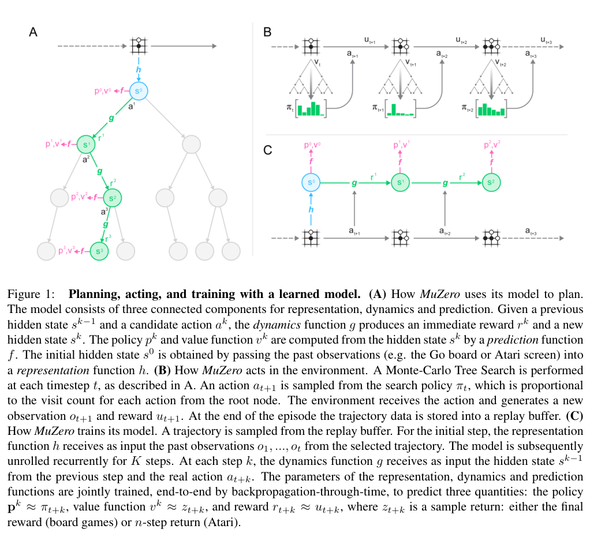
13e258b36e458e9ff55e5f4a113cc91f1c6f2227eeeef0fa27e4f63673e00204原论文图表解读：MuZero 的 planning、acting、training 闭环
MuZero · Figure 1
图表说明：图 1 的 A/B/C 三部分分别说明 MuZero 用模型规划、在环境行动和从 replay trajectory 训练模型。
进一步分析：A 中 representation h 产生初始 hidden state，dynamics g 接收候选动作并输出奖励/新状态，prediction f 产生 policy/value；B 中 MCTS 的 visit count 形成搜索策略并与环境交互；C 中轨迹被递归 unroll K 步，联合监督 policy、value 和 reward。三段把规划时的内部状态与训练时的真实轨迹对齐。
证据边界：MuZero 的 hidden state 只需支持 planning-relevant prediction；该图不要求观测重建，也不能将 MCTS 训练目标改写成 Dreamer 的 latent actor/value 目标。
来源：04_cross_paper/paperqa_corpus/1911.08265.pdf，SHA-256 971eb94abb7a8d9afc2fe758a06dba2f6dabbbcfb0a5b52c2d84c2011513ee3b，PDF 第 3 页；原始整页：10_figures/original-paper/full-pages/1911.08265-p3.png；裁剪框（PDF points）：(72, 72, 536, 500)；裁剪图：10_figures/original-paper/assets/1911.08265-figure-1-p3-crop.png，SHA-256 13e258b36e458e9ff55e5f4a113cc91f1c6f2227eeeef0fa27e4f63673e00204。
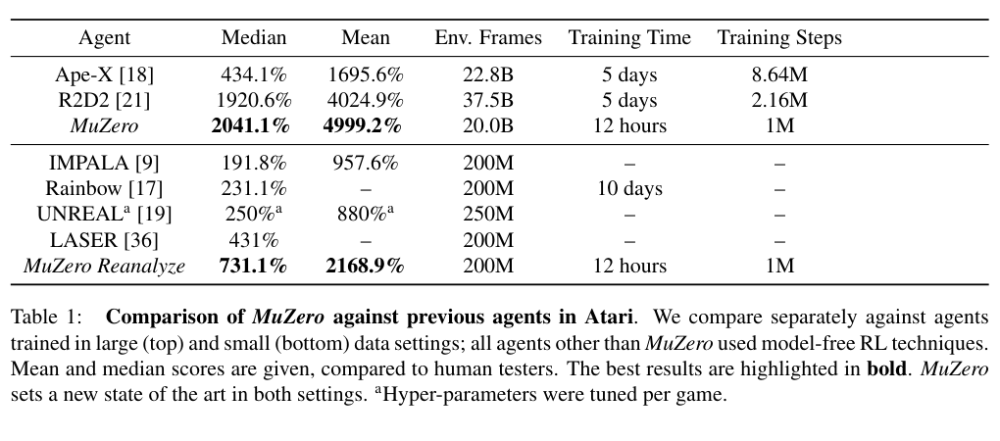
1b0bc711af3b2cf3be08b971fd0db0be32f73c27ba3be53140a98cf84d0a37ce原论文图表解读：MuZero 的 Atari 汇总成绩
MuZero · Table 1
图表说明：表 1 分大数据与小数据设置，列出 MuZero、MuZero Reanalyse 及先前 Atari agent 的 median、mean、环境帧数、训练时间和训练步数。
进一步分析：大数据设置中 MuZero 的 median/mean 为 2041.1%/4999.2%，小数据 MuZero Reanalyse 为 731.1%/2168.9%，均明显高于对应先前 agent。表格同时给出 20.0B/200M 环境帧和约 12 小时训练时间，显示性能和数据预算必须一起阅读。
证据边界：百分比是相对人类分数的 Atari 汇总，不能与连续控制回报直接比较；超参数按游戏调优，表中不提供每个游戏的方差。
来源：04_cross_paper/paperqa_corpus/1911.08265.pdf，SHA-256 971eb94abb7a8d9afc2fe758a06dba2f6dabbbcfb0a5b52c2d84c2011513ee3b，PDF 第 6 页；原始整页：10_figures/original-paper/full-pages/1911.08265-p6.png；裁剪框（PDF points）：(73, 72, 536, 276)；裁剪图：10_figures/original-paper/assets/1911.08265-table-1-p6-crop.png，SHA-256 1b0bc711af3b2cf3be08b971fd0db0be32f73c27ba3be53140a98cf84d0a37ce。
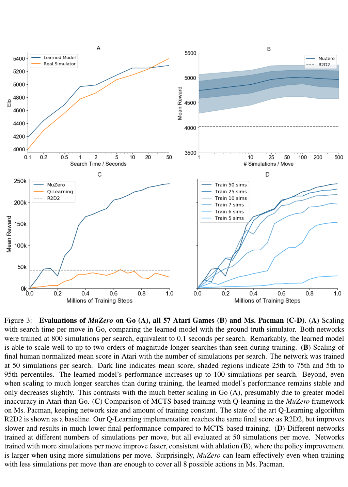
fe79da923854ffe496f307dbcaa3ad68dd2aeac1740cd069767ca998e68521b7原论文图表解读：MuZero 搜索规模与训练消融
MuZero · Figure 3
图表说明：图 3 的 A–D 分别评估 Go 搜索时间、Atari simulations、Ms. Pacman 的 MCTS/Q-learning 训练和训练时 simulations 数量。
进一步分析：A 中 learned model 随搜索时间扩展接近 ground-truth simulator；B 在约 100 simulations 后 Atari 回报趋于平台；C 的 MCTS 训练远高于同框架 Q-learning；D 训练时更多 simulations 使学习更快，但少于覆盖全部 8 动作仍能学习。四个面板共同说明搜索既是推理预算也是学习信号。
证据边界：这些消融跨 Go、Atari 和 Ms. Pacman，任务与训练预算不同；曲线不支持把搜索次数当作统一的 wall-clock 成本。
来源：04_cross_paper/paperqa_corpus/1911.08265.pdf，SHA-256 971eb94abb7a8d9afc2fe758a06dba2f6dabbbcfb0a5b52c2d84c2011513ee3b，PDF 第 7 页；原始整页：10_figures/original-paper/full-pages/1911.08265-p7.png；裁剪框（PDF points）：(72, 52, 536, 700)；裁剪图：10_figures/original-paper/assets/1911.08265-figure-3-p7-crop.png，SHA-256 fe79da923854ffe496f307dbcaa3ad68dd2aeac1740cd069767ca998e68521b7。
4. DreamerV1：问题、算法和三遍精读
这一章完整重建 DreamerV1 的问题地图、模型接口、Algorithm 1、行为学习公式和实验论证。第一遍建立系统，第二遍逐式计算，第三遍检查证据；图稿与原论文图表跟随相应机制，不决定叙述顺序。
完整论文主读
阅读路线与证据分层
先从问题直觉和最小概念链开始，再读 RSSM 状态如何由后验更新、先验推进，随后读 prior-only latent imagination、lambda return、动作梯度、训练配置和环境数据生命周期。每节都标记论文事实、代码事实、解释和边界。TF1、训练、指标复现均未运行。
DreamerV1：从图像到潜在想象的完整论文三遍精读
论文为 Danijar Hafner、Timothy Lillicrap、Jimmy Ba、Mohammad Norouzi 的《Dream to Control: Learning Behaviors by Latent Imagination》，ICLR 2020，当前核读版本是 arXiv:1912.01603v3，页边日期为 2020 年 3 月 17 日。事实来源是本任务重新取得的完整二十页 PDF、同目录 TeX 和由该 PDF 直接渲染的页面。本报告没有把公开实现的默认配置、旧报告中的源码判断或后续 Dreamer 版本的设计当作这篇论文的事实。
本文使用三种明确的语气。“论文事实”表示当前 PDF 或 TeX 直接陈述；“机制解释”表示对这些事实的数学或操作解释；“教学假设”表示为了算清机制而自行设定的简化数值。所有页码都是这个二十页 PDF 的物理页码，与页脚一致。主文的第一个至第七个章节位于第一至第九页，参考文献位于第十至第十三页，附录 A 至 G（Appendix G）位于第十四至第二十页。完整版本除了任务要求列出的附录 A 至 F，还包含连续控制分数表的附录 G，不能省去。
前置概念 5 分钟速查表
| 术语 | 全称与含义 | 在本文的作用 |
|---|---|---|
| POMDP | 部分可观测马尔可夫决策过程；当前观测不必包含全部环境状态 | 形式化图像输入、历史依赖和动作选择 |
| MDP | 马尔可夫决策过程；给定状态后未来与更早历史独立 | Dreamer 把潜在模型状态作为想象环境的状态 |
| RSSM | Recurrent State Space Model；用循环记忆和随机状态表示序列 | 实现论文的潜在转移与表示接口 |
| world model | 从经验学习、能够预测状态和奖励的环境近似模型 | 提供真实状态更新和潜在想象 |
| latent state | 模型内部的潜在状态向量，不是环境直接标注 | 连接图像历史、转移、奖励和策略 |
| actor-critic | 用动作模型作 actor、用价值模型作 critic 的策略学习框架 | Dreamer 在潜在想象中联合学动作和价值 |
| reparameterization | 用网络输出和独立噪声的确定函数表达随机样本 | 让连续动作、潜在状态的梯度穿过采样 |
| straight-through | 前向使用离散选择、反向使用连续近似梯度 | 处理离散动作的潜在想象更新 |
| ELBO | Evidence Lower Bound；变分模型对数似然的下界 | 解释重建目标与 KL 正则的组合 |
| VIB | Variational Information Bottleneck；保留任务信息并限制输入信息 | 附录 B 的表示学习出发点 |
| KL 散度 | 有方向的分布差异量，非负但一般不对称 | 把当前图像后验拉向历史转移先验 |
| NCE / InfoNCE | Noise Contrastive Estimation；以负样本近似边际并学习互信息 | 构造不重建像素的对比表示目标 |
| bootstrap | 用学习到的终点价值估计未展开的未来 | 把短想象窗口接到长时域回报 |
| imagination horizon | 一次从真实潜在状态展开的模型步数 | 控制展开成本、模型误差和短视程度 |
| action repeat | 一个策略动作连续执行的环境物理步数 | 附录 F 检查控制频率敏感性 |
第一遍：先建立问题地图
1.1 这篇论文解决的是哪一段困难
论文事实：摘要和引言把主要贡献放在行为学习上。作者希望智能体从图像学习长时域控制，把经验压缩成可预测的潜在状态，再在这个小空间中生成轨迹，用多步价值的解析梯度训练动作模型。论文没有把新的图像编码器作为主要贡献，也没有声称自己首先提出世界模型。已有表示方法被拿来与新的行为学习方法组合，实验再检查这个组合的效果。
机制解释：这里有三层不同的困难。第一层是感知，单帧图像通常不包含速度等完整信息，需要历史；第二层是预测，在没有执行候选动作的情况下估计其后果；第三层是控制，从许多可能的动作中找到能够获得长期回报的行为。一个模型即使能生成漂亮视频，也可能无法分辨两种动作对奖励的细小差异；一个策略即使会追逐眼前奖励，也可能不会先摆动、蓄力或调整姿态。读论文时要分别判断这三层证据，不能用某层的成功替另一层作证。
论文事实：引言指出，只累计固定想象时域内的奖励会造成短视。在线规划还要在每个真实决策时刻重新优化动作序列。Dreamer 学习可复用的参数化动作模型，并学习状态价值，用价值预测补上短想象窗口之外的收益；优化时，价值和奖励对状态的导数通过神经网络动力学传回动作模型。这个方法的实际验证场景是二十个图像输入的连续控制任务，加上选取的离散动作任务。
机制解释：短窗口与长目标并不冲突。窗口决定一次计算展开多少步；价值模型压缩窗口之外的预期收益。一个终点价值不是已经看见了未来，它是从此前学习中得到的估计。因此这套方案交换了成本：减少长滚动和在线搜索的开销，增加对世界模型及价值模型准确性的依赖。后文所有消融都可以围绕这个交换来阅读。
1.2 三遍阅读分别应回答什么
第一遍要能说清系统循环：真实经验进入数据集，世界模型把观测历史变成状态，动作模型在想象中选择动作，价值模型评估长期后果，训练后的动作模型再回到真实环境收集经验。第二遍要能从一个具体状态算到回报，再把回报的变化连回动作参数，解释每个目标函数的输入、输出与更新对象。第三遍要逐项问证据是否真的支持作者的结论，尤其区分图像重建、任务分数、样本数、硬件时间和跨任务适用范围。
这三遍不是按页阅读三次的空形式。对于式（四），需要发现它是未折扣的窗口内奖励和；对于式（五），需要明确在哪个状态加入自举价值；对于式（八），需要辨别固定目标与可更新预测；对于附录 B，需要知道下界来自哪个非负散度，而不是只认得“信息瓶颈”这个名词。实验部分则要看坐标轴、输入模态、基线预算和种子数，才能判断所谓提高究竟提高了什么。
1.3 新手所需的最小概念链
观测是智能体收到的信息，状态是用来预测未来的信息摘要，两者不能自动等同。强化学习的奖励是任务给出的标量反馈；回报是跨时间把奖励组合起来的量；策略规定在某种信息下怎样选择动作；价值估计跟随某个策略还能获得多少回报。所谓模型式方法，是显式学习动作对后续状态和奖励的影响；所谓模型自由方法，可以在不显式预测状态转移的情况下学习行为。世界模型不一定输出像素，输出什么取决于训练和控制需求。
潜在变量是没有作为环境标注直接提供、由模型内部推断的量。后验在这里表示看见当前观测之后得到的状态分布，先验表示只依据上一状态和上一动作预测出的分布。重参数化把随机采样写成网络输出与独立噪声的确定函数，以便对网络参数求导。自举是用已经学习的价值估计代替尚未展开的未来奖励。停止梯度意味着把某个计算结果当作当前优化的固定目标，不意味着这个数值永远不更新。
KL 散度衡量两个分布的差异，数值非负且具有方向性；把后验拉近先验，可以让不看当前图像的预测更接近看过图像后的推断。对数似然衡量模型为观测数据分配了多少概率；最大化似然不是逐像素“必须完全相同”的逻辑条件。互信息衡量一个变量为另一个变量提供了多少信息；信息瓶颈同时鼓励保留可预测的信息、限制从输入抽取的量。理解这些概念以后，世界模型目标的三个部分就能对应到具体作用，而不是三个抽象缩写。
1.4 符号应该怎样读
真实时间索引用 ，想象时间索引用 ；观测、动作、奖励、模型状态分别为 。世界模型参数是 ，动作模型参数是 ，价值模型参数是 。数据集为 ，想象时域为 ，折扣因子为 ，不同步数回报的混合因子为 ，表示目标中的信息正则尺度为 。这些符号承担不同职责：增加时域并不等于改变折扣，改变动作重复也不等于改变自举混合。
论文事实：式（一）用 标示真实环境采样及表示模型相关分布，用 标示支持潜在想象的近似分布。不要套用“所有变分推断论文都用某个字母指后验”的习惯。这篇论文的表示模型记作 ，转移模型记作 。这个字母约定也不保证表示模型就是物理环境真实隐藏状态的精确贝叶斯后验。它是学习得到的模型状态分布。
机制解释：模型状态是行为学习可以访问的信息。正文把它视为具有马尔可夫转移的连续向量状态，附录说明采用 RSSM，但没有在本篇所有公式中拆开循环记忆与随机变量。因此本文用整体模型状态解释公式，不把某个公开配置中的循环宽度强塞进论文符号。当前论文明确给出的随机潜在分布是三十维对角高斯；这不等于整个 RSSM 的全部信息仅有三十个数。
第二遍：按机制重建主文与附录
2.1 主文第一、二节：图像控制为什么要建状态
论文事实：第二页把任务写成部分可观测马尔可夫决策过程。智能体根据已有观测和动作历史选择当前动作，未知环境根据历史产生图像和标量奖励，任务目标是最大化一个回合的预期奖励总和。连续控制实验中动作是向量，图像是高维输入。定义如下，保持论文的整体目标没有额外折扣项：
机制解释：用单帧图区分不了向左运动和向右运动的物体，是部分可观测性的典型例子。两种历史可能在此刻具有相同位置图像，却需要相反制动动作。表示模型把历史积累在内部状态，再融合当前图像；转移模型则负责在下一张图像尚未出现时预测。这个分工允许真实交互时不断用新图像纠正状态，想象时只靠已有状态和候选动作继续前进。
教学假设：若图像里只看得到小车位置为零，之前位置为负一或正一会分别暗示正速度和负速度。压缩后的状态若只保留位置，两种情况会混在一起；若保留由历史推断的速度，动作价值就能区分。这个例子仅解释为什么历史摘要有用，不能证明 RSSM 在所有任务上已学到真实速度，也不能证明其状态具有严格充分统计量性质。论文的完全可观测潜在环境，是建立在模型状态和学习到的转移上。
2.2 式（一）：三个必需接口
论文事实：第二页式（一）列出表示、转移和奖励模型。表示接口输入上一模型状态、上一动作、当前观测，输出当前状态的分布；转移接口省去当前观测，输出可供想象的预测分布；奖励接口输入当前状态，输出奖励分布。
机制解释：表示模型的结果是分布而非唯一真值，转移结果也是分布。采样能表达模型里的随机性；参数化分布也使训练可以比较看过图像和未看图像时的两种状态预测。奖励模型给潜在空间提供任务意义，使潜在向量不只是方便重建的编码。三个接口形成最小控制链：观测历史变状态，状态与动作变后续状态，后续状态变奖励。
论文事实：作者把这种模型类比为受动作条件约束、还能预测奖励的非线性 Kalman 滤波或隐藏状态模型。这个类比解释结构，不是声称神经网络满足线性高斯模型的全部解析条件。其计算优势来自想象过程不用再生成对应图像：潜在状态占用较小内存，便于批量预测大量轨迹。本文不把作者的“数千条轨迹可并行”换算成未给出的实际吞吐率。
失败解释：只训练一个能读取当前图像的状态编码器，却没有训练不看图像的转移接口，得到的是表示工具，不能自动变成想象环境。反过来，仅训练转移而不提供新观测更新，在真实交互中会让误差持续累积。Dreamer 的数据流之所以同时保留两个接口，是因为真实信息更新与候选未来预测是两种不同任务。
2.3 Algorithm 1：一次循环究竟发生了什么
论文事实：第三页 Algorithm 1 先用随机种子回合初始化数据集，随机初始化三组参数。随后每个收集间隔执行若干训练更新：从数据集抽取序列，计算模型状态并更新表示目标；从每个模型状态想象轨迹，预测奖励及价值，计算混合价值，更新动作参数和价值参数。接着重置真实环境，在整个回合中根据观测历史算状态、产生动作、加入探索噪声、执行动作，把新经验加入数据集。
机制解释：训练序列提供很多真实起点，不是只有回合第一帧能开始想象。假设一个批次包含五十条长度五十的序列，论文说从每个状态分叉，因此概念上有大量起点可使用；实际有效边界、张量排布或某个实现如何裁掉时间末端，本文不作代码层判断。每个起点先有来自真实观测的表示，再沿没有未来图像的转移分支滚动，这一点决定了想象不等于把训练视频重新播放。
算法右栏的 分别是种子回合数、收集间隔、批量数、序列长度、想象时域、学习率。伪代码用一个学习率符号概括更新，但附录 A 为三个模型给出不同数值。因此不能把伪代码单个符号解读成所有优化器必须共享一个学习率。论文允许三个组件在生命周期内交替或并行执行，附录报告的具体实验则说明训练一百步后收集一个回合。
训练与执行的区别十分关键。行为训练要使用奖励预测和价值预测来构造梯度；真实执行主要需要表示模型和已学动作模型，不必在每一步重新跑长候选动作搜索，也不用把图像解码出来再决定动作。收集期间探索噪声帮助扩大经验；论文附录明确描述训练收集的噪声，却没有给出所有测试细节，不能擅自补成一份完整评测实现规范。
失败解释：如果把想象奖励直接存成新的真实环境经验，再以为真实样本数增加了，就混淆了数据来源。算法的数据集由环境交互增长，想象轨迹是当前世界模型中的计算对象。它能增加行为学习计算量，却不能独立证明模型未见区域的真实性；后续真实交互仍承担纠正这种错误的作用。
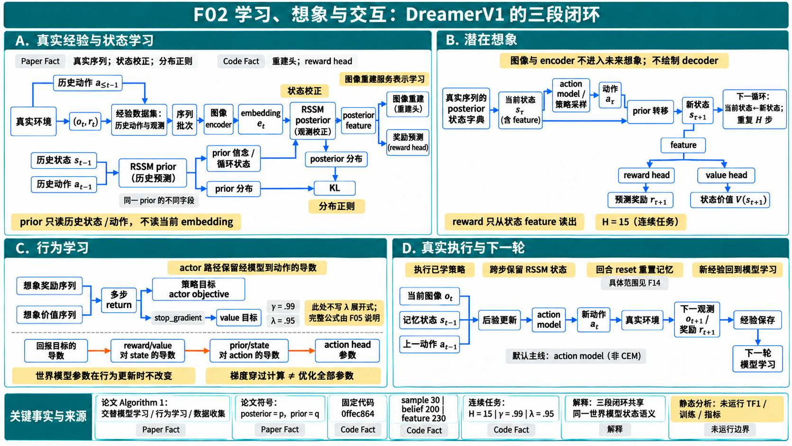
21a43a9c9712d052fd828a0fcb9d4d5bd79dc040a4c3e6707afea4e17de4cce4图 F02 全部细节说明：学习、想象与交互：DreamerV1的三段闭环
模型学习、潜在想象和真实交互怎样组成闭环
本图把 DreamerV1 分成四个相连但职责不同的区域：A 从真实经验学习状态模型，B 在潜在状态中预测动作后果，C 用预测结果学习行为，D 把策略带回真实环境收集新经验。先理解每个区域的输入输出，再沿“新经验支持模型、模型支持行为、行为产生新经验”的闭环阅读。四区划分用于讲解同一算法，不表示四套彼此独立的模型。
A：数据集保存过去，环境产生新观测
真实环境在动作作用下返回观测 o_t、奖励 r_t 和终止信息。数据集保存这些观测与历史动作；它不是生成当前环境画面的模块。模型学习从数据集抽取有时间顺序的序列，图像编码器将像素变成嵌入，RSSM 再利用历史状态、动作与当前观测推断潜在状态。
先验只读取历史状态和动作，预测尚未利用当前图像的信息；后验在先验信念上结合当前嵌入，校正随机状态。两者共同约束模型既能解释真实经验，也能在没有新图像时继续预测。当前图像嵌入不能接进先验 GRU，后验校正也不等于额外向未来推进一个时间步。A 将同一 prior 的输出分成信念与循环状态、概率分布两条用途：前者参与观测校正，后者与 posterior 产生的分布一起进入 KL。它们是同一个状态预测的不同字段，没有因此向未来推进两次。底栏保留论文的记号对应：posterior 为 p，prior 为 q；不能按其他变分模型的惯例将二者交换。
posterior 特征供图像重建与奖励预测使用，prior、posterior 的分布用于 KL 约束。重建让模型保留可解释图像的表示，奖励监督使状态与任务反馈相联系；它们服务于模型训练，不是把未来每一步都重新解码成像素再编码。KL 也不是从一张重建图直接计算，而是比较相应潜在分布。哪些辅助头和额外目标启用，还需看具体配置。
B：从真实后验分叉未来想象
真实序列中的后验字典构成想象起点。每个起点保留自己的历史记忆，经过批次与真实时间轴合并形成并行起点集合。单步顺序是从当前潜在状态提取特征、策略采样动作、先验转移产生下一状态。新状态再成为下一次策略选择的输入，循环展开 H 步。图中的“下一循环：当前状态←新状态”是时间递推的赋值说明，箭头从新状态出发；它不是另一层网络，也不是重新从数据集读取未来状态。新状态的奖励与价值读出和这个赋值共用同一预测状态，读出不依赖赋值框。
每个预测状态的特征送给奖励头和价值头。动作先影响转移，奖励从转移得到的状态读取，不能让奖励头跳过状态而只消费动作标签。价值头估计从该状态继续执行策略的长期收益，为有限想象窗口提供补偿。未来没有真实图像、编码器校正或 decoder 重建支路，想象结果来自当前世界模型自身的预测。
源码以零嵌入满足 RSSM 输入签名，并通过 use_obs=false 关闭观测校正。零嵌入不等于黑屏，也不是可被当作未来观测的图片。imagine_forward 返回各叶子为 [N,H,D] 的状态字典，随后提取特征才得到 [N,H,230]。返回不含初始化后验，时间对齐与真实序列不同，具体展开由潜在想象章节进一步解释。
C：同一回报服务两个学习角色
想象奖励和值预测形成多步回报估计。策略目标使动作产生更高的预测长期收益，价值目标则拟合相应回报。V_R、V_N^k、V_λ 是估计方式，不是额外的神经网络；图中不展开它们的全部公式，完整计算与两组数值教学例在相邻价值估计章节保留。
价值目标停止回报的梯度，将其作为监督信号；动作目标保留回报对采样动作和模型运算的导数。沿依赖向后看，回报依赖奖励和值，二者依赖想象状态，状态依赖动作，动作由策略参数产生。因此策略能够通过模型内部的多步计算得到改进方向，不需要从真实环境求导。C 下半的橙色链把这一过程分开：回报目标的导数经过 reward/value 对 state 的导数，再经过 prior/state 对 action 的导数，最后结合动作头对参数的导数；多个想象步骤产生的相应路径共同影响动作头。它和上半的蓝色目标构造是两个观察方向，不能把策略目标当成产生当前动作的前向输入。
行为更新时世界模型参数固定，但模型运算仍可对动作求导。优化器选择的变量集合决定谁的参数被更新，计算图边界决定导数能通过哪里，两者必须分开。把模型框整体标成不可微，会丢掉 Dreamer 的动作学习机制；把导数穿过的所有模块都解释成同时更新，又会误写参数分工。
D：策略执行后，新经验回到模型学习
真实交互重新获得当前图像，以保存的历史状态和上一动作更新后验，再由学到的 action model 选择新动作。默认执行使用策略采样或分布 mode，具体由训练、测试配置决定。CEM 是仓库的可选规划能力，不能在本图实线中替换默认策略；类名或函数能力列表也不能代替实际 planner 绑定。
动作送入真实环境，下一观测与奖励再被保存为经验。RSSM 状态跨步保留，使当前动作能够利用观测历史；回合结束后按 reset 机制建立新起点。固定代码对选中 latent 状态和上一动作的清零范围并不相同，详见真实动作执行章节，不能将 reset 含糊等同为任意缓存全部清空。
新回合随后通过数据加载和序列抽样参与模型学习。图中的回流表示后续数据可被利用，不承诺每产生一条 transition 就立即执行一次完整模型与行为更新。训练阶段、采集周期、日志和测试仿真还有各自门控，应结合入口与控制流章节阅读。论文 Algorithm 1 的交替组织提供算法骨架，固定实现给出更具体的调用与调度。
沿一个观测位置走完闭环
设一个真实回合中的图像已经进入数据集。A 先用其历史动作与当前图像推断后验，B 从这个后验展开未来状态，C 根据预测奖励和价值构造两个学习目标。D 执行更新后的策略，产生后续真实经验，再为下一轮模型学习提供数据。这个贯穿例同时区分四种对象：已发生的序列、模型内预测、参数更新目标和真实执行结果。它们有关联，却不能共享同一个未来观测来源。
来源、默认配置和证据边界
论文主线来自锁定的 arXiv 1912.01603v3，包括 Algorithm 1、潜在行为学习和表示目标。固定源码为 0ffec86436239d41cecaff34abcf57dca5539839，状态接口见 dreamer/models/rssm.py，共享目标与想象见 dreamer/training/utility.py，入口和采集条件见 dreamer/training/define_model.py，真实执行见 dreamer/control/mpc_agent.py。
当前连续控制默认随机样本三十维、信念二百维、特征二百三十维，想象视野 H=15、γ=0.99、λ=0.95。这些是论文与当前配置下的可核对细节，不是所有任务或后续版本的通用常数。蓝线表示前向依赖，橙线只表示模型内导数，灰色标签说明证据类别与配置边界，黄色条突出作用和限制；C 区分隔线只将目标构造与导数说明分开。本任务未运行 TensorFlow 1、环境、训练或指标复现，图中闭环是对机制与固定实现的解释。
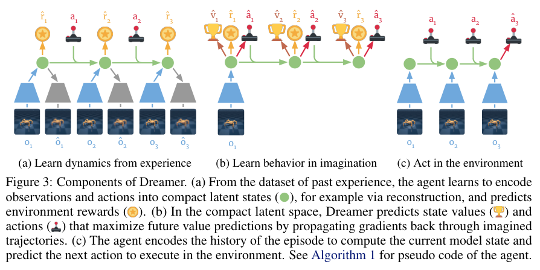
b7a844e19301e7b9a0687e0b849fc7ffd290d9b84bfb9050ea85364f8343e11d原论文图表解读：Dreamer 的三段工作流
DreamerV1 · Figure 3
图表说明：图 3 展示 Dreamer 的三个组件：从经验学习动力学、在潜空间想象中学习行为，以及把真实历史编码成动作。
进一步分析：图上半段把观测与动作压入紧凑状态并预测奖励；中段沿潜状态展开 imagined trajectory，让价值梯度穿过模型更新策略；右段只用当前历史状态输出下一动作。三段对应训练动力学、行为学习和环境交互，说明 Dreamer 的策略学习发生在潜空间而非像素空间。
证据边界：原图只说明论文定义的组件连接和训练/执行角色；它不规定具体开源实现的网络宽度、批大小或任意环境的观测编码。
来源：00_sources/1912.01603/v1/pdf/paper_v3.pdf，SHA-256 318891d59ba0065f57eb0e735735700e5eb528f53bf08b81c773437385586c64，PDF 第 3 页；原始整页：10_figures/original-paper/full-pages/1912.01603-p3.png；裁剪框（PDF points）：(104, 76, 510, 279)；裁剪图：10_figures/original-paper/assets/1912.01603-figure-3-p3-crop.png，SHA-256 b7a844e19301e7b9a0687e0b849fc7ffd290d9b84bfb9050ea85364f8343e11d。
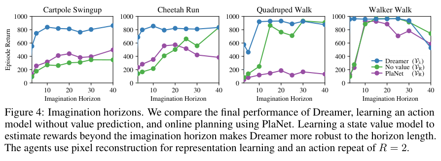
34027d394d62d6b463d14cb3701b4504248403df6f6aabcb7859aa1fb4c43cf8原论文图表解读：想象视界与价值外推
DreamerV1 · Figure 4
图表说明：图 4 比较四个控制任务中不同 imagination horizon 的最终回报，并对比无价值模型的动作学习和 PlaNet 在线规划。
进一步分析：蓝色 Dreamer 曲线在 Cartpole、Cheetah、Quadruped 和 Walker 上整体对视界更稳定；无 value prediction 的曲线随视界变化更大，而 PlaNet 作为在线规划基线通常较低。观察支持“价值模型把奖励估计延伸到视界之外”的机制，但每个子图的任务难度和纵轴范围不同，不能把跨任务高度直接比较。
证据边界：结果使用像素重建表示、动作重复 R=2；图中没有给出单种子轨迹或置信区间，因此只能作论文设定下的趋势证据。
来源：00_sources/1912.01603/v1/pdf/paper_v3.pdf，SHA-256 318891d59ba0065f57eb0e735735700e5eb528f53bf08b81c773437385586c64，PDF 第 4 页；原始整页：10_figures/original-paper/full-pages/1912.01603-p4.png；裁剪框（PDF points）：(104, 76, 510, 224)；裁剪图：10_figures/original-paper/assets/1912.01603-figure-4-p4-crop.png，SHA-256 34027d394d62d6b463d14cb3701b4504248403df6f6aabcb7859aa1fb4c43cf8。
2.4 主文第三节：想象环境的条件与范围
论文事实：第三页正文定义潜在模型上的完全可观测 MDP。想象起点是从经验序列推断出的模型状态，之后状态、奖励和动作分别由转移、奖励、策略模型产生。想象环境中的目标为折扣的无限未来奖励和：
机制解释：无限未来是行为期望目标，实际训练只展开有限窗口。这个差别随后由自举价值处理。潜在 MDP 的完全可观测性表示策略能访问模型状态，不表示智能体得到真实环境的内部传感器，也不表示图像历史已被无损压缩。模型可能漏掉控制相关信息，此时策略在潜在空间里看到“相同状态”，真实环境却产生不同后果。
教学假设：模型把两种不同摩擦系数的地面编码成同一状态，如果动作相同，转移就只能给出折中的预测。策略会得到这个折中系统的最优动作，而非每种真实地面上的最优动作。这个例子说明模型误差首先改变了优化的对象，随后才改变策略。论文以随机潜在状态建模不确定性，有助于表示分布，但没有给出完全消除状态混淆的定理。
短想象窗口还有一个实际作用：减少转移误差经过许多步不断放大的机会。可是短窗口终点的价值同样由模型学习，可能有偏。不能把“短窗口减少累计误差”进一步说成“价值模型无误差”；这是两种不同近似。图四及图十检验的是在给定任务和表示下，增加价值预测是否让行为更可靠，不是对任意失配模型的保证。
2.5 式（二）、式（三）：动作分布怎样成为可求导的动作
论文事实：第四页式（二）给出潜在动作模型和状态价值模型。下面保留原文价值式的有限窗口与时间记号，不把它静默改写为另一套定义；其意图是估计当前动作模型获得的想象奖励。
机制解释：原式在状态下标与求和中复用了想象时间字母，初学者不应把这个排版记号当成额外算法。随后式（五）、式（六）明确规定不同起点和自举终点。动作模型改变了后续状态分布，价值模型需要跟随它重新估计，这就是两者合作的策略迭代关系；价值不是与策略无关的一张永久查找表。
连续动作模型输出高斯的统计量，再经双曲正切限制范围，论文在第四页写成：
机制解释：采样前的噪声与网络参数分开。固定本次噪声以后，改变均值、标准差和状态就会连续改变动作，所以链式求导能通过采样表达式。随机性没有消失，只是被放进独立噪声。每次更新依然用随机轨迹估计期望，因此“解析梯度”指对计算图的解析导数，不是把整个随机期望解析积分完毕。
教学假设：单维动作的均值为零、标准差为零点五，本次标准高斯噪声取一，则采样前数值为零点五，动作约为零点四六二一。均值稍微增加，动作增加量由双曲正切在该处的导数决定。如果采样前数值很大，动作接近范围边界，导数会变小。附录 A 的均值缩放因子五旨在允许动作分布达到饱和区；它不是一般性的“更大梯度”技巧。
失败解释：离散动作不能照搬这个连续导数。真正采样一个类别时，小幅改动概率常常不改变所选类别，标准导数不能传达有用信号。论文为离散采样使用直通梯度，前向保持离散选择，反向使用近似梯度。这有偏近似与连续重参数化的性质不同，不能因二者都可训练就声称数学上等价。
2.6 式（四）至式（六）：三种回报的准确区别
论文事实：第四页式（四）是窗口内奖励的直接和，没有折扣因子。它是无价值模型动作消融的估计量。必须按原式读取，不能因前面出现无限折扣目标就自行在此处添加折扣。
机制解释：它只看窗口内能预测的奖励，终点后有什么都当作未计入。当一个动作在窗口内消耗资源、窗口外才获益，这种估计会低估它。窗口足够长可能缓解问题，却需要更长计算和更可靠的模型。式（四）与论文想象环境的折扣目标并非逐项相同，本报告保留作者的定义和其消融用途，不替作者统一符号。
论文事实：式（五）用前面若干步的折扣奖励，加上终点状态的价值预测。终点通过最小值被限制在当前想象窗口内，所以即使名义步数更长，也不会越过已经计算的边界。
机制解释：前半部分是已展开状态上的奖励预测，后半部分是未展开未来的压缩估计。终点奖励如果属于终点价值的定义，就不能又在前半求和中重复加入；因此求和上限是终点的前一个时间步。这种时间对齐比记住“奖励加价值”更重要。短步数更依赖早期价值，长步数更依赖多步转移与奖励，这两类误差会随步数不同而改变。
论文事实：式（六）把不同步数估计按指数权重混合，最后一项承接剩余权重。它不是仅把一个最长回报乘上混合系数。
机制解释：前面的几何权重之和与最后权重合起来为一；当混合因子接近零，估计偏向一步自举；接近一，估计偏向窗口内最长展开。论文说它平衡偏差与方差，但这不是说权重会自动识别哪个模型预测错了。高估的价值和失真的转移仍可能进入混合结果；权重只规定怎样组合，不提供单条轨迹的正确性判定。
2.7 一条可以逐项复算的教学轨迹
教学假设：从某个起点展开三次转移，起点与两个后续状态上的奖励依次为零、零、一；窗口终点奖励另设为零。一步后、两步后、终点的价值分别为三、四、五。取折扣为零点九，混合因子为零点五。这里只展示一条确定的教学轨迹，省去期望符号；这些数字不是论文任务成绩。
依照式（四），窗口内直接奖励和等于一，不能算成零点八一。零点八一是第三个奖励在折扣回报中的贡献，属于式（五）的组成部分。这个区别纠正了旧教学例把未折扣估计与折扣估计混用的问题：同样的轨迹、不同的估计量，数值就应不同，不能只靠“都表示价值”把它们混起来。
混合权重分别为零点五、零点二五、零点二五，合计一。把三个估计代入，结果为三点二七三七五。
机制解释：直接奖励和只得到一；有自举的估计看到了“终点以后仍可能有收益”，因此更大。但这个例子并不能证明三点二七三七五一定更接近真实回报，因为我们人为设定了价值。如果真实终点价值为零，最长估计就只剩零点八一，而把终点价值错设成五会增加三点六四五的偏差。价值提供长视野，同时也提供新的误差来源。
教学失败例：另一个动作在当前立即获得一点二奖励，之后没有收益；第一个动作窗口内只能获得一，但终点价值真实为五。仅用式（四）会偏好一点二的动作，有价值估计则可能偏好第一个动作。如果模型把某个危险动作的终点也错判为高价值，策略同样会偏好它。所以“解决短视”是把信息来源从窗口奖励扩展到学习价值，不能被解释为无条件选择正确的长远动作。
还应注意窗口末尾的边界。在一个距离终点只有一步的状态，名义的两步和三步回报都会被式（五）的最小值裁到同一终点；不能为了凑出三种不同数字继续索引不存在的状态。这个边界解释了为什么训练通常要从后向前组织回报计算，也解释了为什么终点自举值是一项必须明确给出的输入。
2.8 递推计算为什么和混合定义相接
机制解释：把不同步数展开的公共前缀提出来，可以用“当前奖励加折扣后的短自举与下一步混合回报”来递推。下式是为教学给出的等价递推形态，不是论文新增编号公式；在有限窗口末端用价值预测封口，并按式（五）的奖励时间对齐使用。
教学假设：使用上一小节数据，最后一步递推得到终点之前的回报为一加零点九乘五，等于五点五；再往前得到零点九乘括号中的二加二点七五，等于四点二七五；起点得到零点九乘一点五加二点一三七五，仍为三点二七三七五。两种计算得到同一结果，说明指数混合不是必须显式列出所有估计的昂贵算法。
机制解释：递推没有改变误差来源。它把每个后续状态的价值预测和更远回报相混，短路的自举项仍可能有偏，而长路仍依赖模型。改变混合因子会重新分配这些依赖。将混合因子设为一，不代表得到真实环境无限时域的蒙特卡洛回报，只代表在这个有限模型窗口中尽量展开，末尾仍然是自举价值。
读者还要区分数值递推和梯度递推。价值回归时，递推出的目标作为固定数值；动作优化时，要保留回报对后续状态、动作和模型转移的导数。两条路径可以使用相同数值却具有不同求导边界。下一个小节将具体解释为什么“同一条轨迹更新两个模型”不等于“同一个损失更新全部参数”。
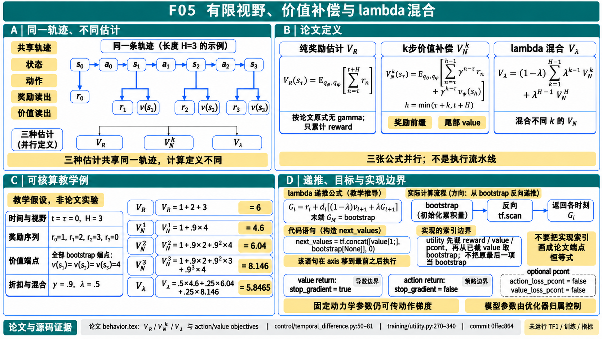
18a99cbc80e886a65a8c1f66bcfb2e863a62253483d04b97db506d3d75b22957图 F05 全部细节说明：有限视野、价值补偿与lambda混合
有限想象怎样形成长期学习目标
这幅图从一条共同的想象轨迹出发，解释有限视野回报、带价值补偿的多步回报和 λ 混合估计，最后核对源码中的反向递推。阅读顺序为 A 的状态与奖励对齐、B 的三种并行定义、C 的完整教学计算、D 的递推和梯度边界。它回答的是学习目标如何构造；策略如何产生这条轨迹、世界模型怎样预测状态，分别由潜在想象和 RSSM 章节解释。
A：三种估计共享同一条轨迹
A 区的 s0、s1、s2、s3 是同一条潜在轨迹的连续状态。a0 将 s0 推进到 s1，a1 将 s1 推进到 s2，a2 再推进到 s3。奖励 r0、r1、r2、r3 从各自对应状态的奖励头读出，价值预测 v(s1)、v(s2)、v(s3) 也从对应状态的特征读出。奖励不是直接从动作标签产生的另一个输入，价值也不是环境返回的真值。
三种 V 表示三种估计定义，并非三个神经网络按顺序计算。有限视野回报只累计模型已展开的奖励；多步估计将这段奖励与端点价值接起来；λ 估计混合不同步数的结果。三者共享轨迹和价值模型，不能画成 V_R 经过第二个模型变成 V_N，再经过第三个模型变成 V_λ。真正学习的价值头只有 v_ψ，它为多种估计提供端点预测。
B：论文三个公式的不同含义
论文的有限视野估计为
t 是展开起点，τ 是正在估计的位置，H 是想象视野，n 遍历这段轨迹。期望覆盖模型转移与策略采样。这个原式没有 γ，求和上限包含 t+H；不能因为常见教材定义或源码里有折扣参数，就替作者在这里加上折扣。它说明只看有限窗口内奖励的估计方式，论文以无价值模型的动作学习作比较。
带价值补偿的 k 步估计是
奖励累计到 h−1，端点价值从 h 开始补偿未显式展开的未来。γ 的奖励指数 n−τ 和价值指数 h−τ 各有作用，不能交换。h 的截断使靠近想象末端的位置不会访问不存在的状态。k 较小时更早依赖价值预测，k 较大时使用更多模型奖励；两者面对的是不同的预测误差，不能只凭步数长短认定优劣。
λ 混合将不同 k 的估计加权：
前 H−1 项使用几何权重，最长一项承接剩余权重，因此总权重为一。λ 控制对短步和长步估计的偏重，γ 控制时间折扣；二者不能互换。λ 趋近一时更依赖长展开，趋近零时更依赖一步补偿。短展开仍有价值误差，长展开也可能累积动力学误差，所以这一公式不能单独证明某个 λ 在所有任务上更好。
C：按每个中间量验算一次
图中的教学假设为 t=τ=0、H=3，奖励依次为 1、2、3、0，三个补偿端点的价值都等于 4，γ=0.9、λ=0.5。这些是为了理解运算而设定的数字，不是论文实验分数，也不是运行 TensorFlow 得到的输出。
首先，V_R=1+2+3+0=6。一步估计使用第一项奖励和 s1 的价值：V_N^1=1+0.9×4=4.6。两步估计多读一项奖励，再补 s2 的价值：V_N^2=1+0.9×2+0.9²×4=6.04。三步估计使用三个奖励并补 s3 的价值：V_N^3=1+0.9×2+0.9²×3+0.9³×4=8.146。最后，三项权重为 0.5、0.25、0.25，混合得到 0.5×4.6+0.25×6.04+0.25×8.146=5.8465。每一步都可以回指 A 中相应状态、奖励和端点价值。
另一组有助于理解延迟奖励的教学例保留为补充：仍取 H=3，但 r0=r1=r3=0、r2=1，端点价值均为 5，γ=0.9、λ=0.95。这时 V_R=1，三个多步估计为 4.5、4.05、4.455；混合权重为 0.05、0.0475、0.9025，最终为 4.4380125。两组假设不同，不能将前一组价值或后一组权重混用。单条确定轨迹上的这些计算演示了公式结构；随机模型的期望还需要对其采样分布求平均。
D：bootstrap 是反向扫描的输入
源码把聚合时间轴移到最前，然后构造 next_values=tf.concat([value[1:], bootstrap[None]], 0)。其中 value[1:] 为下一时刻价值，补上的 bootstrap[None] 使最后一个位置也有尾部价值；新增的轴用于与前面的序列连接，不能把它省略成两个维数不匹配的裸张量拼接。
令 M 为送入递推的序列长度，G_M=bootstrap 为初始累积量，递推为
函数先准备 inputs=reward+pcont*next_values*(1-lambda_)，再以 initializer=bootstrap、reverse=True 执行 tf.scan，返回各个位置的 G_i。bootstrap 在扫描前已存在，是从末端向前累计的初始化输入，不是 scan 算出的最终输出。“反向”描述计算顺序；环境和想象状态的时间索引仍然向前定义。
这里 d_i 对应实际传入的 continuation 与折扣因子。默认未启用 action_loss_pcont、value_loss_pcont 时使用常量折扣；启用 pcont 头后才把预测的继续概率引入该项。可选分支以灰色虚线和配置条件标识，不能把它解释为所有任务的默认终止机制。
目标停止梯度与优化器归属
价值学习调用 lambda_return(..., stop_gradient=True)，把回报当作固定监督目标；预测分布通过负 log_prob 拟合该目标。论文写平方回归，而固定代码通过分布接口计算损失，二者的对应强度需要结合分布形式说明。动作学习调用 stop_gradient=False，保留回报对采样动作及可微模型运算的导数，使策略能依据想象结果改进。
图中的蓝色箭头表示前向状态预测和反向扫描的数据依赖，灰色分组线说明三种估计共享轨迹，灰色虚线框标识可选 pcont。两张独立的目标卡说明价值目标停止梯度、动作目标保留梯度。动作梯度可以经过动力学、奖励和值的运算，但参数更新由优化器选择的变量集合决定；这不意味着同一动作目标会同时更新世界模型。真实环境不在这条可微通路内，学习使用的是世界模型预测的后果。
固定提交的索引差异和证据范围
compute_value_loss 与 compute_action_values 在开启 bootstrap 时，先对 reward、value、pcont 执行 [:, :-1]，再从已经截断的 value 读取 [:, -1]。如果原序列长度为 H，该下标对应原 H−2 位置；不能将它说成始终读取原最后一项，更不能直接把它等同于论文公式的端点。这是源码静态可确认的语句顺序；作者意图、训练影响和是否构成应修复的实现问题，需要额外证据。
递推的准确位置是 dreamer/control/temporal_difference.py:48-74，调用和切片位于 dreamer/training/utility.py:270-327；论文定义来自 sections/behavior.tex 的价值估计与动作、价值目标。代码固定为提交 0ffec86436239d41cecaff34abcf57dca5539839。本任务未执行 TensorFlow 1、环境、训练或指标复现。论文消融、任务预算和随机种子协议须在实验章节另行核对，不能由本图的纸面数值推出实验优越性。
2.9 式（七）、式（八）：两个目标和一条梯度边界
论文事实：第五页式（七）最大化沿想象轨迹的混合价值总和，优化对象是动作模型参数；式（八）最小化价值预测与混合价值目标之间的平方误差，优化对象是价值模型参数。
式（八）中的目标值采用停止梯度。它仍然会随下一次轨迹、价值网络和世界模型训练而改变；停止梯度只说在这一次价值回归中，不沿目标项反向修改产生目标的计算图。这个边界让价值模型学着追踪目标，而不是通过改变目标本身把误差降到表面上的零。若错误地让价值梯度穿过目标，目标网络与预测网络会共同移动，平方误差的含义就改变了。
动作目标则保留从价值、奖励和状态转移穿回动作的路径。展开一条轨迹时，动作改变下一状态，下一状态改变奖励预测和终点价值，终点价值又进入多种 ，最后进入 。链式路径可以用下面的教学形式表示，其中每个函数都代表论文中的一个神经网络接口：
这不是论文新增公式，而是把其“通过想象动力学的解析梯度”翻译成链式法则。实际图中还包含未来状态的递归影响、噪声采样和多个回报分支，所以不能把这两项理解成完整实现的两项损失。它们足以说明为什么状态转移的导数有用，以及为什么一个只读取当前状态价值、却切断动作到下一状态路径的实现不会实现论文所描述的主要机制。
论文事实：世界模型在行为学习期间固定；动作和价值模型使用同一批想象轨迹更新，但参数更新方向不同。连续动作和潜在状态使用重参数化，离散动作使用直通梯度。早终止任务还要由世界模型预测每一步折扣因子，以其累积乘积给式（七）和式（八）的时间项加权。
机制解释：固定世界模型是防止动作目标把预测器改成“容易得到高价值”的模型。下一轮数据和表示学习仍可更新世界模型，所以固定是单次行为更新内的时间尺度约束，而不是永久冻结。早终止权重使一条可能已经结束的想象轨迹在后续步的贡献逐渐变小；它是生存概率的预测，不是把已结束的奖励简单改成零就足够的替代。
2.10 状态价值为何足以支持策略优化
论文事实：相关工作段落比较了使用价值基线降低方差的 Reinforce 类方法、只用即时动作价值的确定性或重参数化 actor-critic，以及多步 Q 目标方法。Dreamer 预测状态价值而不是 ，理由是动作已经在想象转移中生成，动作对未来状态的影响可以通过模型显式传播。
机制解释：在无模型的 Q 学习中，价值函数需要把某个动作的选择直接编码进 ，因为后续状态常常没有可微关系。Dreamer 先把动作送进转移网络，得到动作造成的下一状态，再从下一状态读出奖励和状态价值。于是对动作的评价来自“动作造成什么状态”和“那个状态以后值多少”两部分。这个替换依赖可微转移；它不是说状态价值在所有模型式算法中都能取代 Q 值，也不是说离散直通梯度与连续解析导数一样准确。
教学数值例：假设两个动作都从状态 出发，动作甲使模型转移到价值为二的状态并立即得到零点五奖励，动作乙使模型转移到价值为零点八的状态并立即得到一点奖励。若折扣为零点九，一步近似比较为甲的零点五加零点九乘二，得到二点三；乙的一点加零点九乘零点八，得到一点七二。即使甲没有更高的即时奖励，经过转移后的状态价值也使它更优。这个例子只说明链式评价怎样工作，不证明模型转移的预测就与真实环境相同。
失败例：若两个动作在模型中都被错误地转移到同一个高价值状态，状态价值不能单独发现差异；若模型对动作的导数在饱和区接近零，策略也收不到足够更新信号。论文因此把模型质量和动作梯度看作相互依赖的条件，实验的成功范围不能外推到任意不可微、强随机或模型严重失配的环境。
2.11 主文第四节：表示学习的三种选择
论文事实：第五页末至第六页比较奖励预测、图像重建和对比估计。只预测未来奖励在数据量大、奖励丰富时可能足够，但有限数据或稀疏奖励下，与奖励相关的图像信息可帮助模型。重建方案延续 PlaNet 的世界模型，观测模型只用于训练信号；对比方案去掉像素预测，改用状态模型从图像预测状态。
图像重建的世界模型接口在第六页式（九）列为表示、观测、奖励和转移四部分：
其中观测模型把潜在状态解码回图像分布，奖励模型提供任务监督，转移模型保证没有下一图像时仍能滚动。观测模型是学习信号，不是行为执行必需的输出。若一个潜在状态能重建背景纹理却不能预测奖励相关的接触变化，重建损失可能仍然很低，行为却会失败；这正是“像素预测质量”和“控制充分性”需要分开检查的原因。
第六页式（十）给出重建目标及三个项：
最大化观测和奖励对数似然鼓励状态保留可预测内容；负 KL 项鼓励看图像得到的状态不要与只看历史得到的预测相差过大。这里的 KL 方向不能随意交换，因为两个方向分别惩罚不同的分布关系。参数 控制信息约束的强弱；增大它不只是“让模型更正则化”，还会改变后验与先验之间愿意保留多少当前观测信息。
对比估计把观测模型换成第六页式（十一）的状态模型：
它把当前图像映射到状态分布，同时用当前批次中其他图像的状态模型平均近似状态边际。第六页式（十二）为：
第一项鼓励当前状态能由当前图像预测；第二项压低所有图像都指向同一状态的塌缩解。它不是把每个负样本都当成真正的独立环境，也不是严格的全数据边际，而是使用当前序列批次的近似。论文明确提醒这种界能高效提取的信息量有限，所以对比方法的性能不应被解释为“理论上优于重建”。
2.12 附录 B：从信息瓶颈到式（十）和式（十二）
论文事实：附录 B 第十五页式（十三）从信息瓶颈目标开始，最大化状态与观测、奖励的条件互信息，同时减去状态与数据索引的条件互信息乘以 。数据索引 决定观测的确定值，作者用一个退化分布表示 。原文写作：
机制解释：第一项要求状态包含能预测观测与奖励的信息，第二项限制状态从每个当前观测额外吸收的信息量。若模型总把每一帧的像素细节塞进状态，第一项可能高但第二项也高；若完全忽略图像，第二项低却无法解释新观测和奖励。信息瓶颈的目标是沿着两者之间选择压缩程度，不是预先规定状态必须只存物理位置、速度等人类变量。
附录先用 KL 散度非负性把第一项下界化，并把观测、奖励条件分布用 的逐时刻产品近似。第十五页式（十四）不能直接删掉常数就把原互信息写成无条件的似然下界；原文用只差加法常数的记号。以下保留这一步，并按整条序列的变量范围整理原推导。原 PDF 中间行在整序列对数前还放有时间求和符号，本文不把这个重复范围解释成另一项损失。
推导的最后一步使用 KL 的定义：原分布对数似然减去它与近似分布的 KL，剩下近似分布的预期对数似然；乘积分布的对数又拆成逐时间项。这解释了为何不需要观测边际来计算训练梯度，也解释了下界的松紧受近似分布能力影响。把常数数据边际从式（十四）中减去以后，附录第十五页式（十五）应用 Bayes 规则，把观测给定状态的项改写为状态给定观测减状态边际。再用小批量 InfoNCE 下界，用批次图像求和近似状态边际，得到式（十二）的对比项：
第二个互信息项的推导在第十五页式（十六）。作者先把数据索引换成观测，再用 KL 非负性把真实转移分布替换为可学习的近似转移，得到 KL 正则项：
这里“下界”是对整体信息瓶颈目标的下界：第一互信息被下界化，第二互信息被上界化后带负号进入目标。它不等于说每个训练批次都准确计算了真实互信息，也不等于 RSSM 一定恢复环境真状态。公式推导解释了为什么重建和对比估计共享奖励、转移、信息约束接口；实验才负责检查哪种选择在给定任务和容量下更有效。
独立检查上界方向时，可以把期望后验与近似先验的 KL 拆为两项：信息项本身，加上真实边际先验与近似先验的 KL。后者非负，因此替换后的量更大；它前面的负号再让总目标更小。这是附录推导中最容易读反的地方。近似先验若等于真实边际先验，额外 KL 为零，这一步界可收紧；若先验拟合差，正则项还会反映这种失配，而不纯粹等于信息抽取量。
教学假设：用单维高斯代替论文三十维分布，后验均值一、先验均值零，两者标准差均为一。按高斯 KL 公式，散度为零点五；若教学观测对数似然为负二、奖励对数似然为负零点二、正则尺度为一，不做自由 nats 截断的单步目标为负二点七。加入论文所述的三 nats 下截断后，这个教学 KL 的惩罚成为常数负三，目标为负五点二。截断改变低 KL 区域的梯度，但不是说模型“必须把 KL 增加到三”才合法。
对比项也能用密度分数复算。教学假设当前状态在正确图像下的密度为零点六，另外两张图像给出零点二与零点一，则对比项为正确密度对总密度的对数比，约负零点四零五五。如果三个密度都为零点三，比值只剩三分之一，约负一点零九八六；区分正确图像更好时，最大化目标的数值更大。这些是连续密度的评分，不要求每一项都是类别概率；演算仅说明对数比及塌缩惩罚，不把批次边际误当成全分布。
2.13 附录 A 的实验设置：哪些是论文报告，哪些不是默认配置
论文事实：附录 A 第十四页称模型组件使用已有的卷积编码器、解码器和 RSSM；其他函数使用三层、每层三百个 ELU 单元。潜在分布为三十维对角高斯。动作模型输出经过双曲正切变换的高斯，均值先乘五，标准差用 softplus 保证为正。这个均值缩放允许动作分布达到饱和区。这里每一个数都是该论文附录报告的实验设置，不应改写成某个开源代码仓库在所有版本中的默认值。
学习更新用五十条长度五十的序列，分别以 、、 的 Adam 学习率训练世界、价值、动作模型。梯度范数超过一百时缩放；连续任务的 KL 正则尺度为一，并按 PlaNet 做三自由 nats 截断。想象时域为十五，折扣为零点九九，混合因子为零点九五，同一批轨迹更新动作和价值。作者报告没有发现潜在 overshooting、动作熵奖励或价值目标网络是必要的。这是“在论文实验里没有发现必要”，不是对所有任务的理论禁止。
环境交互先用五个随机种子回合初始化数据集，然后交替执行一百次训练更新和收集一个回合。连续动作收集使用预测的 mode action 加上均值零、标准差零点三的高斯探索噪声；所有连续任务固定动作重复为二，并用附录 F 检查不同重复值的敏感性。把动作重复二理解成每个策略动作对应二个环境物理步，不能把它混成想象时域 。
离散实验使用分类分布的 logits 和直通梯度，探索为 epsilon-greedy，epsilon 在前二十万梯度步从零点四线性降到零点一。离散设置把想象时域改为十，把 KL 尺度改为零点一，并用双曲正切限制奖励。世界模型从潜在状态预测折扣因子，二分类器以零和 的软标签训练。附录没有说这些离散设置适用于连续控制，所以不能把两组数字混成一套“通用 Dreamer 配置”。
第三遍：逐图、逐实验审计证据
3.1 Figure 1–3：系统图证明了什么
Figure 1 位于 PDF 第一页右栏。它从经验数据集、已学潜在动力学、潜在想象中的价值与动作三个区域给出总览。绿色状态链与动作、奖励和价值图标说明行为优化发生在潜在轨迹中；图注强调把价值梯度沿想象轨迹传回。这个图是机制示意，能帮助检查模块归属，但不提供网络层数、状态维度、评测分数或吞吐率。不能从其中没有画出的模块推出“模型一定没有解码器”。解码器在训练图三中出现，只是不在行为轨迹里被反复调用。
Figure 2 位于 PDF 第二页上部，展示 Cup、Acrobot、Hopper、Walker、Quadruped 五类图像观测。图注明确这只是二十任务中的五个例子。它让读者看到稀疏奖励、接触、多自由度和三维场景的实际输入外观，不能直接证明所有任务都同等难，也不是二十任务的完整目录。本报告把完整任务名留给附录 G 的分数表，避免把五张示例图误当成全部实验。
Figure 3 位于 PDF 第三页上部，三个子图分别是从经验学习动力学、在想象中学习行为、在环境中行动。左图有从图像到状态的编码及重建训练信号，中图从一个已知状态出发，后续没有真实图像输入，价值与动作沿想象链出现，右图用当前图像历史更新状态并产生真实动作。直接查看原页可以确认这三列的箭头和图标分工。它解释训练与执行的区别，但并不说明实际进程必须开三个线程，也不证明三列共享同一个优化器。
3.2 Figure 4：时域扫描与价值作用
Figure 4 位于 PDF 第四页上部，横轴是想象时域，纵轴是回合回报，展示 Cartpole Swingup、Cheetah Run、Quadruped Walk、Walker Walk 四个任务。三条曲线分别是 Dreamer、没有价值预测的动作模型和 PlaNet 在线规划。图注明确这些代理使用像素重建和动作重复二。作者用这组对照支持价值模型能提高短时域下的表现、让结果对时域长度更稳健。
机制解释：这项对照不是把“有模型”和“无模型”分开，而是在世界模型背景相近时改变行为派生方法。若短窗口的无价值动作模型无法看到收益，它会短视；若 Dreamer 的终点价值已经学到潜力，它可以在短窗口中获得有效信号。看到某个任务的三条曲线在长窗口接近，只能说明这个任务的长窗口弥补了部分短视，不能推出价值模型在全部任务中多余。图四仅给四个任务，全部行为曲线要看附录 D。
视觉限界：图中的点和连线不是置信区间；本图未像附录 D 那样在图注明确给出标准差统计。不能从线的平滑程度计算显著性，不能用肉眼距离填入未报告的精确差值。本文只报告作者的趋势结论与可辨别的相对关系，不从图片像素反推小数。
3.3 Figure 5：长预测重建不是闭环控制测试
Figure 5 位于 PDF 第五页上部，显示两个留出轨迹的真图像与模型图像。前五张图像作为上下文，之后给定动作、用潜在转移预测四十五步，列上显示第六、十、十五至五十步的若干检查点。这是开环预测重建：模型没有在每一步继续看到真实图像，后续动作却是给定的。图注明确支持 RSSM 能作长时预测，给潜在行为学习提供基础。
机制解释：它测试表示和转移是否在这些留出片段中保持合理，但没有测试动作模型能否选对新动作，也没有直接检查奖励与价值预测的校准。模型图片在视觉上接近真图像，也可能漏掉控制关键的角度、接触或速度；反过来，图片模糊也未必意味着潜在奖励不可用。作为证据，应把它放在世界模型可预测性的层面，与图六及行为消融并列，而不是让它独立承担“控制最优”的结论。
3.4 Figure 6 与附录 G：汇总成绩及比较边界
Figure 6 位于 PDF 第六页上部，柱状图给出各任务最终回报，比较 Dreamer、PlaNet、D4PG 和 A3C。图注与正文第九页报告 Dreamer 在五百万环境步后平均约八百二十三，PlaNet 约三百三十二，D4PG 在一亿步后约七百八十六。图注说明结果取五个种子的平均；附录 G 的原始分数表位于 PDF 第二十页，提供小数到两位的成绩。
论文事实：A3C 的输入为本体感知状态，其余三者为像素输入。A3C 与 D4PG 的步数列为一亿，PlaNet 与 Dreamer 为五百万。PlaNet 在本任务中按固定动作重复二重新运行，因此分数不同于其原始论文里按任务调动作重复的设置。两种四足任务的 A3C、D4PG 列是缺值；图六也标出相关缺值。平均数列因此不应自动当成四种方法在完全相同任务集合上的平均。
| 任务 | A3C | D4PG | PlaNet | Dreamer |
|---|---|---|---|---|
| Acrobot Swingup | 41.90 | 91.70 | 3.21 | 365.26 |
| Cartpole Balance | 951.60 | 992.80 | 452.56 | 979.56 |
| Cartpole Balance Sparse | 857.40 | 1000.00 | 164.74 | 941.84 |
| Cartpole Swingup | 558.40 | 862.00 | 312.56 | 833.66 |
| Cartpole Swingup Sparse | 179.80 | 482.00 | 0.64 | 812.22 |
| Cheetah Run | 213.90 | 523.80 | 496.12 | 894.56 |
| Cup Catch | 104.70 | 980.50 | 455.98 | 962.48 |
| Finger Spin | 129.40 | 985.70 | 495.25 | 498.88 |
| Finger Turn Easy | 167.30 | 971.40 | 451.22 | 825.86 |
| Finger Turn Hard | 88.70 | 966.00 | 312.55 | 891.38 |
| Hopper Hop | 0.50 | 242.00 | 0.37 | 368.97 |
| Hopper Stand | 27.90 | 929.90 | 5.96 | 923.72 |
| Pendulum Swingup | 48.60 | 680.90 | 3.27 | 833.00 |
| Quadruped Run | 缺值 | 缺值 | 280.45 | 888.39 |
| Quadruped Walk | 缺值 | 缺值 | 238.90 | 931.61 |
| Reacher Easy | 95.60 | 967.40 | 468.50 | 935.08 |
| Reacher Hard | 39.70 | 957.10 | 187.02 | 817.05 |
| Walker Run | 191.80 | 567.20 | 626.25 | 824.67 |
| Walker Stand | 378.40 | 985.20 | 759.19 | 977.99 |
| Walker Walk | 311.00 | 968.30 | 944.70 | 961.67 |
| 原表 Average | 243.70 | 786.32 | 332.97 | 823.39 |
机制解释：任务成绩显示主结论有明显例外。Finger Spin 中 Dreamer 约四百九十九，低于 D4PG 约九百八十六；Finger Turn 和 Reacher Hard 也不是 Dreamer 全面领先。Cartpole、Cup、Walker Stand 等任务已经接近满分，均值的提高还包含困难任务从几乎失败到可用的提升。只用一个平均数会掩盖这些不同形状，因此该表应和训练曲线一起读。
步数相差二十倍，能说明作者报告的样本效率优势，却不等于所有成本相差二十倍。世界模型训练、想象计算、硬件、并行采样和不同基线实现都参与总成本。正文第八页报告每个 Dreamer run 使用一张 V100 和十个 CPU 核心，Dreamer 每百万环境步约三小时，PlaNet 约十一小时，D4PG 达到相近表现约二十四小时。这组时间是特定实现和硬件背景下的报告，不能换算成任意平台的固定速度比。
3.5 Figure 7 与 Appendix D / Figure 10：行为学习全任务曲线
Figure 7 位于 PDF 第七页上部，选出 Acrobot Swingup、Cartpole Swingup Sparse、Hopper Hop、Hopper Stand、Pendulum Swingup、Quadruped Walk、Walker Run、Walker Walk 八个任务的训练曲线。它将 Dreamer 与无价值动作模型、PlaNet 放在同一环境步轴上，并画出基线参考横线。Acrobot、Hopper、Pendulum 的差异支持长时信用分配的动机，Walker 里一些对照也能得到较好成绩，提醒读者任务的即时反馈结构不同。
Figure 10 位于 PDF 第十七页，是附录 D 的完整二十任务曲线。图注明确线表示平均回报，阴影表示五个种子的标准差。对照仍包括无价值动作模型和 PlaNet，也画出 D4PG、A3C、SLAC 的参考线。全图可以看见 Dreamer 在许多任务从较低回报逐步提高，也可以看见 Finger Spin 的高方差和几种方法间较小差距。它补全了主文的选择性展示，使读者能检查“多数任务改善”是否掩盖失败。
论文事实与原文不一致：第九页 Long horizons 段先写“十九个任务”，随即写 Dreamer 在二十个任务中十六个更好、四个并列；附录 D 实际画出二十个任务。本文保留作者十六优胜、四并列的文字报告，同时注明十九这个计数与图面不一致，不把原文改造成一个未经证明的十九任务数据集。图十图注没有列出逐任务统计检验，因此“并列”也不能被扩写成某个具体显著性阈值。
另一个需要保留的细节是主文图七和附录图十的 D4PG、A3C 横线图例标成十亿步，而图六和附录 G 列为一亿步。当前 PDF 的这些标记不同，本文不会静默统一成一个预算。若只需要引用汇总最终分数，应明确引用附录 G 的步数列；若讲曲线图的参考线，应说明图例的字面预算。这个源内差异限制了跨图直接比较，不影响同图 Dreamer、无价值、PlaNet 曲线所表达的行为消融。
3.6 Figure 8 与 Appendix E / Figure 11：表示目标的证据
Figure 8 位于 PDF 第八页上部，八个选取任务比较重建、对比估计和仅奖励预测。Figure 11 位于 PDF 第十八页，附录 E 给出二十任务全图，阴影同样为五个种子标准差。作者结论是像素重建在多数任务最好，对比方法解决约一半任务，仅奖励预测在这些实验中不够。它是保持行为学习方法、改变表示目标的对照，所以应被读成状态质量改变会传递到行为质量。
视觉证据也显示对比方法并非始终较差。Finger Spin 的绿色曲线高于蓝色重建曲线，而 Cup Catch、Walker Stand 等简单或反馈清晰任务中对比方法能较快获得高回报。Acrobot、Hopper Hop、Reacher Hard 等则有明显差距。论文没有通过这组图证明重建原则上永远最好，也没有证明未来更强对比方法一定仍失败。结论绑定了当前模型、批量负样本、预算和任务集合。
机制解释：仅奖励目标在稀疏奖励里可能让大量视觉变化没有监督信号，状态便没有动力去区分它们。重建给每一帧提供更密的训练信号，但会花容量记背景；对比方法省去像素解码的负担，却受批次区分能力和可提取信息量限制。实验展示的是这三种取舍的结果，不能把每条曲线低分归因为一个作者未测量的因素。比如“绿色低分必定因为负样本不足”在这里就是解释假设，不是论文事实。
3.7 Appendix C / Figure 9：离散动作与早终止的有限验证
Figure 9 位于 PDF 第十六页，附录 C 展示 Atari 子集与 DMLab 的对象收集及 Watermaze 任务。图中 Atari 面板包括 Boxing、Choppercommand、DoubleDunk、FishingDerby、Ice Hockey、Kangaroo、Krull、KungFuMaster、MsPacman、NameThisGame、Pong、Tutankham、Up N Down、Zaxxon；DMLab 有 Collect Good Objects 和 Watermaze。横轴预算因任务不同而不同，不能把所有面板当作相同环境步数测试。
论文事实：离散任务输入仍为六十四乘六十四乘三图像，动作数在三至十八之间，Atari 使用 sticky actions 评估协议。图例提供 SimPLe、DQN、Rainbow、IMPALA 和随机策略的参考线，正文称这些既有结果是指南。作者明确说纯世界模型代理在这些领域尚不具竞争性，重点是证明方法可用于离散动作、稀疏奖励、复杂视觉和早终止，并把表示学习列为未来方向。
视觉限界：部分任务达到成功行为不等于全 Atari 平均领先。DoubleDunk、Ice Hockey、Pong 等面板的曲线和参考线提示差距依然存在，Watermaze 的 IMPALA 参考线也高于 Dreamer。当前附录没有一张与连续任务一样的全套标准化分数表，也没有列明完整 Atari 游戏集合的排名。本报告保留“子集适用性”结论，不把它提升为跨所有游戏的性能主张。
3.8 Appendix F / Figure 12：动作重复的敏感性
Figure 12 位于 PDF 第十九页，比较动作重复一、二、四。曲线取两个种子，阴影是标准差，图注明确此前实验并没有按任务调这个超参数。作者发现重复二在跨任务总体上最好。直接看图仍能发现不同任务喜欢不同控制频率：Acrobot 或某些 Cartpole 曲线更受益于重复四，Finger Spin 的重复一更高，其他任务重复二较稳。总体选择不能被重述为“每一个任务重复二都最大”。
机制解释：动作重复改变策略多久才能作一次新决定，也改变模型在一个时间步要预测的物理变化跨度。重复大可能简化决策序列，但会降低快速纠错能力；重复小提供细控制，也需要更多决策与更细尺度的动力学预测。这个超参数与想象时域共同影响真实时间覆盖，却并不相同。比较时应报告环境步、策略决策和模型步之间的关系，不能把它们混作一个横轴概念。
3.9 主文第六、七节：主张如何收束
论文事实：第八页实验设计选取 DeepMind Control Suite 中既有报告能从图像得到非零表现的二十个任务。输入为六十四乘六十四乘三，动作一至十二维，奖励零至一，回合一千步，初始状态随机，所有任务动作重复二。它覆盖接触、稀疏奖励和三维场景，但不是控制套件内每个可能任务的无选择全评测。选择标准说明样本集合的来源，也限制了结果的总体外推。
第九页结论总结为：在已学潜在动力学中，用多步价值的解析梯度学习参数化策略，能在这些图像连续控制任务中改善样本效率、计算时间和最终性能；离散动作与早终止的应用得到有限验证；更高视觉复杂度需要进一步表示研究。这段结论和图九的谨慎程度一致。把它读成“任何世界模型都能直接训练所有环境”，会超出作者提供的证据。
相关工作第七页给出三类关系：潜在动力学上的控制、想象多步回报、解析价值梯度。PlaNet 提供同类世界模型和在线规划对照，World Models 提供早期潜在想象背景，SLAC 提供用表示加速模型自由学习的背景，MVE/STEVE 提供多步目标背景，SVG 和连续 actor-critic 提供梯度背景。这里是作者的定位文字；本文没有阅读这些论文的全篇来替本篇证明新颖性，因此把它作为相关脉络，而不是独立文献审查结论。
从直觉到可复算理解：检查状态、回报和梯度
4.1 哪些困难是真正需要跨过去的
学习前最容易把世界模型等同于视频生成器，把想象等同于反复播放历史，把价值当成已知的终局奖励。读完式（一）、Algorithm 1 和式（五）以后，三者的边界才清楚：世界模型至少要提供不看未来图像的转移和奖励接口；想象从真实表示状态分叉但后续由模型生成；价值是学习的未来估计，不能冒充真实回报。这个变化可以通过上一节的教学轨迹检验，而非只凭“理解了”三个字。
第二个困难是梯度边界。最初“世界模型固定”听起来像不能穿过模型求导；实际固定的是参数更新对象，导数仍能沿模型输入传给动作参数。价值回归的目标停止梯度，动作最大化的价值链保留梯度，二者可以具有相同回报数值。理解这个区别以后，才能解释为何模型、动作、价值有不同优化方向，以及为什么不需要在真实环境上求导。
第三个困难是公式与实验的证据层次。式（十三）至式（十六）解释表示目标的下界关系，却不证明每个模型状态都是环境充分统计量；图五说明两条留出轨迹的视觉预测，却不证明策略最优；图六说明平均成绩，但基线预算和输入模态不完全相同；图九说明离散适用性，不能代替全 Atari 排名。学会把这些支持范围说清，才算读懂作者的贡献而没有把它扩大。
4.2 直接问答：概念、计算和失败
问题：为什么不能只用当前图像作为状态？回答：图像可能看不出速度、接触历史等影响未来的信息。论文以循环状态模型和当前图像融合历史；单帧可用的任务也不否定这种历史接口，因为任务集合里有需要动态信息的任务。若模型未保存必要历史，潜在环境的马尔可夫假设就只是近似，行为会面对同一编码产生不同后果的问题。
问题：表示模型与转移模型是两个互不相关的网络吗？回答：论文把它们定义为两个功能接口，并在重建目标里联合训练；采用 RSSM 实现。当前本篇没有逐层代码，所以不能从功能接口推断全部参数共享或不共享。能确定的是一个看当前图像，一个不能看想象中的未来图像，KL 项把两者的状态分布联系起来。
问题：为什么式（四）的教学答案是一，而不是零点九九平方？回答：式（四）明确没有折扣因子，它累计窗口内奖励。一项发生在第三个位置的奖励在式（五）里才带前两步折扣。把式（四）改成折扣奖励是改变作者的估计量，不能用统一记号的理由掩盖。若用另一折扣例子教学，应把它标成另一个估计量，不应再叫原式的 。
问题：价值是否真的让策略看到了窗口之后？回答：没有看到真实未来。价值模型用此前学习给终点赋予预期收益，自举把这个估计接进当前目标。因此价值能缓解短视，也能把高估错误传回策略。长视野来自学习压缩的预测，可靠性仍依赖表示、转移、奖励和价值四方面。
问题：把混合因子设为一是不是蒙特卡洛？回答：它让当前有限窗口尽量使用最长展开，但末端仍有学习价值，不是完整回合的真实奖励总和。窗口来自世界模型，也不是真实环境在线采样。只有同时满足适当末端条件和真实完整回报等额外条件，才可能和特定蒙特卡洛估计相同；这些条件不是本文公式默认提供的。
问题：为什么动作训练不用真实奖励直接反传？回答：真实环境是未知且通常不可微的，只提供执行后的观测和奖励。Dreamer 的可微路径在学到的神经网络内部，动作造成的想象状态、奖励、价值都有网络导数。数据收集会纠正模型，行为更新则在模型上计算，这两个作用需要交替。
问题：为什么不让动作目标同时把世界模型更新得更有利？回答：这样可能通过改变预测而不是改变真实行为来提高目标，产生错误高价值的模型。论文固定世界模型来隔开这种捷径，并继续用真实经验的表示目标训练它。冻结不保证模型正确，只保证动作梯度改变的是策略而非本次优化所依赖的环境代理。
问题：只用奖励预测在理论上够，实验却差，矛盾吗？回答：论文的充分性直觉依赖大且多样的数据；在有限预算、稀疏奖励下，训练信号不足以稳定提取所有控制相关信息。重建或对比提供图像监督，帮助表示。理论上的可能性、有限数据下的学习效率和实际优化结果是三个不同命题，不能互相替代。
问题：KL 越小越好还是越大越好？回答：它在目标中受惩罚，但把状态限制成与先验完全相同也可能丢掉新的观测信息。重建、奖励和 KL 一起决定折中；附录的自由 nats 截断给小 KL 留出空间。模型既要能从新图像获取信息，也要让历史转移预测这些信息，不能单独用 KL 数值判断控制质量。
问题：重建图像越准确，控制必定越强吗？回答：不必。重建可能优先拟合面积大的背景，也可能在关键小物体上差；控制只关心动作对奖励的后果。当前实验重建总体较好是事实，但它没有建立重建误差与控制分数之间单调的定律。图五与图十一一起看，可以把预测能力和行为表现联系起来，又不把二者等同。
问题：为什么离散动作采用直通梯度后仍需要谨慎？回答：前向真正选类别，反向用连续近似传梯度，这个估计有偏。它让优化可执行，却不会恢复原本不存在的类别导数。图九显示部分成功，也显示性能差距；这些实验正好限制了“只改输出分布就能全面解决游戏”的推断。
问题：这篇论文可以直接推出真实机器人的可靠控制吗？回答：不能。实验是特定图像仿真任务，真实机器人有传感器延迟、安全约束、动作边界、接触失配等额外问题。机制可作为研究设计依据，但当前论文没有提供这些部署验证。本报告只在作者实际测试的连续与选取离散任务范围内给出结论。
4.3 最小复述与自测标准
能够不看正文复述以下链路，就形成了可迁移的理解：用经验序列学习后验、先验与奖励；从每个真实表示状态分叉短轨迹；动作和状态采用可微采样；奖励与终点价值构成多步估计；不同步数按指数权重混合；价值回归固定目标，动作梯度穿过世界模型但不更新它；训练后的动作模型在真实环境执行并收集新经验。每个分号对应一个可以计算或画出输入输出的步骤。
更严格的自测是改动一个条件后说明影响。把终点价值错设为零，会重新造成窗口之外收益丢失；把状态转移导数切断，会丢掉动作对后续状态的影响；把当前图像偷放进后续想象，会让训练环境比真实执行更容易；把附录离散奖励限制搬进连续实验，会改变实验设定；把五个种子标准差当作置信区间，会夸大统计解释。能发现这些错误，比只背诵模块名更能证明机制被掌握。
4.4 本报告的完成与开放边界
本报告对全部二十页原始渲染作了直接核读，主文第一至第七节、附录 A 至 G、公式一至十六、Algorithm 1 和 Figure 1 至 Figure 12 都有原页定位。教学例是人工设定且已逐项计算，式（四）的未折扣定义被明确保留。原有八个锚点文件保留并作字节快照，包含的代码事实仍应由根线程在联合分析中保存；新单篇报告不以代码默认值补论文空白。
开放问题包括：论文没有在本篇提供所有卷积与 RSSM 的逐层实现细节；没有完整离散任务标准化排名；没有系统量化不同模型误差对策略梯度的影响；原文存在十九/二十任务和曲线图例基线步数的内部记号差异；附录 G 的四足基线缺值限制了共同任务均值比较。这些不是本报告遗漏，而是当前材料的证据边界。它们应作为后续代码或复现研究的问题，不能先写成已经得到的答案。
5. 从机制推导到公式、实例与梯度
读懂整体算法以后，需要能计算一条想象轨迹的回报，解释梯度经过哪里、参数更新谁，并指出预测误差何时破坏结论。机制重建、两份公式对读和完整附录分别提供直觉、演算及实现条件，全部保留具体数值与适用边界。
机制、公式对读与附录
DreamerV1 核心机制重建稿
本稿是 close-reading.md 的机制级展开，不引入外部猜测。每张卡都回答“旧方法哪里失败、Dreamer 做了什么、一个小输入如何经过计算、哪些梯度和状态被保留、源码要核验什么、证据能支持到哪里”。
M01：从 POMDP 到 RSSM latent state
旧方法的失败点
如果直接把图像 输入策略，策略要同时完成视觉识别、历史记忆、动力学判断和动作选择。对于“同一画面但速度不同”的情况，单帧无法决定下一步；对于稀疏奖励任务，当前画面甚至看不到最终目标。把整个图像历史拼接起来又导致输入维度随时间增长，训练样本之间共享历史的方式也不稳定。
核心直觉
RSSM 维护一个紧凑的内部状态：belief 记录历史的确定性摘要，stochastic sample 记录当前观测带来的不确定性。真实数据阶段用图像后验校正 stochastic 分布，并沿用 transition 已产生的 belief/rnn_state；想象阶段只让 transition 用动作推进。这样，图像只在学习表示和初始化真实状态时出现，梦境内部不再生成或读取图像。
形式化与小例子
设上一状态包含 、，动作是二维向量 。固定源码 transition 先拼接上一 stochastic sample 与 action，再经 dense 层输入 GRU；上一循环记忆作为 GRU state 传入以更新 ，再输出 prior Gaussian 的 。看到真实图像 embedding 后，posterior 把 与 拼接输出 ，抽样 。如果图像中目标物体被遮挡， 可以保留不确定性；在 imagination 里只能用 继续预测，不能偷看遮挡后的真实图像。
梯度与状态边界
representation posterior 的采样可以重参数化，KL 约束让 prior 和 posterior 不至于完全分离。world model 更新时梯度进入 encoder、RSSM 和 reward/image heads；behavior 更新时，Dreamer 保持 latent transition 的计算图用于 action gradient，但将 world model 参数作为固定模块。状态在 episode reset 时重置，batch 内时间轴通过 unroll 和 mask 处理。
源码契约与限制
models/rssm.py 的 state_size、belief_size、feature_size 和 _posterior/_transition 是真实实现入口。源码显示 features_from_state 只拼接 sample 与 belief，不包含 mean/stddev；因此解释 value/action head 时不能把完整分布参数当作 head 输入。RSSM 近似 Markov 不代表环境被完全恢复，长时间预测仍会积累误差。
M02：表示目标、KL 信息瓶颈与重建
为什么不能只预测 reward
奖励是控制目标，但奖励稀疏时大多数观测不会带来直接监督。一个只预测 reward 的模型可能把“钥匙是否在画面左上角”视为噪声，直到很晚才发现这决定成功与否。DreamerV1 把 reward prediction、image reconstruction、contrastive estimation 放在同一 latent dynamics 框架中比较。
重建目标逐项解释
重建项 要求 state 能解释当前像素；reward 项 要求它保留控制相关信息；KL 项 限制每一步从观测提取过多信息，让 transition 能从历史预测下一状态。 是连续实验默认，KL 小于 3 free nats 的部分不再继续惩罚。
教学计算
假设 posterior 的一维分布是 ，prior 是 ，KL 为 ；如果 posterior 把观测编码成方差很小的 ，KL 会显著变大。第一种 state 可能不够区分观测，第二种 state 虽然能记住细节，却让 transition 难以从历史预测。free nats 相当于允许小范围的信息偏差，避免早期训练把 state 压成无信息向量。
CPC 对照与边界
contrastive objective 用当前图像预测 state，并用 batch 内其他图像形成分母，鼓励 state 与当前图像互信息而避免 collapse。它省去像素 decoder，却受到批量负样本和信息上界限制。Figure 8 只说明在论文任务上 reconstruction 多数更好，不能把这个结果解释为理论上所有控制任务都偏好像素重建。
M03：latent imagination 的输入、循环和输出
循环结构
训练 batch 是 条长度 的真实序列。representation unroll 为每个时间步生成 posterior state；从这些 state 作为起点，action head 采样动作，RSSM transition 生成下一 imagined state，reward head 预测奖励，value head 输出状态价值。默认连续任务展开 步，离散任务 步。
一个三步例子
设初始 posterior state 代表“机械臂还没抓到杯子”，action head 产生向前、闭合、抬起三步动作。transition 预测第一步位置和速度，reward head 给出接近杯子的正奖励；第二步 state 预测抓取成功概率；第三步 value head 估计抬起后的长远收益。即使第三步才有高 value，action objective 的梯度也会沿着第三步 value→第二步 state→第二步 action→第一步 state→第一步 action 传播。
为什么不直接生成图像
图像 decoder 只用于重建训练，imagination 内 use_obs=False。这样每个 imagined state 的尺寸是 belief + stochastic sample，而不是 像素；批量 tf.scan 能共享 GPU 计算并保存显存。代价是所有奖励和终止判断都依赖 latent heads 的准确性。
源码边界
utility.imagine_forward 把前两轴展平，创建与 embedding 形状相容的零 observation，并用全 False 的 observation mask 调用 cell。stop_grad_pre_action 和 stop_grad_post_action 控制是否让 action/feature 参与梯度；不同 objective 调用它们的参数不同，不能只看函数名判断梯度路径。
M04：、 与 的数值推演
三种估计的差异
只在 horizon 内求和，相当于“看得到多远就算多远”； 在第 步使用 learned value，相当于“短 rollout 加长期预测”； 让短 bootstrap 和长 bootstrap 按指数权重混合。 接近 0 更像短 n-step，接近 1 更像长 rollout；它与 是不同旋钮。
手算例子
令 ，奖励 ，最后一个奖励明确为零以覆盖论文式（4）的含终点求和；末端 value 。则 （式（4）未折扣）； 依赖 ，假设为 1.5 得到 1.35； 依赖 ，假设为 2.0 得到 ；；没有额外奖励 。此例 。 取 ，得到一个介于短估计和长估计之间的目标。数值是假设教学例，不是论文实验。
训练含义
value head 回归这个混合 target 时，target stop-gradient，避免 value 网络通过 target 自己改变目标；action head 最大化同一 target 时不截断 transition 路径。这个共享目标让 action 和 value 协作，但也意味着 value 误差会成为 action gradient 的偏差来源。
M05：Action model 的重参数化与离散分支
连续动作
网络输出 、，对独立噪声采样后通过 tanh 限制动作范围。附录给均值参数化一个五倍缩放，作者说明其目的是让动作分布能达到饱和区；这不等于直接放大方差。这个分布让 action 是网络输出和固定噪声的确定函数，所以反向传播可以计算 。
离散动作
离散分支输出 categorical logits，用 straight-through estimator 把前向 one-hot sample 与反向 soft/近似梯度拼接。附录把 KL scale 降为 0.1，horizon 设为 10，reward 用 tanh bound，探索使用 epsilon-greedy 并在前 200,000 gradient steps 内从 0.4 降到 0.1。这里的梯度不是精确的 categorical likelihood gradient，必须在解释实验时明确是近似路径。
常见混淆
连续 action 的 mode 用于环境评估，训练通常采样；离散 action 的 epsilon noise 与 latent imagination 的 straight-through 是两个不同机制。一个影响前向动作分布，一个影响反向梯度。
M06：Early termination 的 continuation 机制
为什么需要 pcont
如果所有 imagined steps 都默认乘同一个 ，模型会把一条实际上已经终止的轨迹继续计算奖励。早停任务中，状态越接近终止，未来 reward 的可信权重应该越低。world model 预测 continuation probability ，论文公式把固定折扣与 continuation 语义分开描述；固定源码先由 reader 的 pcont_scale 处理数据标签，再在 utility.py 中按配置把 pcont 与 action/value discount 相乘，不能把所有路径无条件改写成额外的 双重折扣。
计算例
教学假设：令三步纯生存概率 为 0.9、0.6、0.2，并且它们尚未含折扣，另取 。四个状态位置的累计权重为 、、、，分别约为 1、.891、.529 和 .105。因此一条很可能已终止的想象轨迹不会把末端 value 以完整权重传回起点。这是纯概率与折扣分离的纸面例；固定源码 reader 默认 pcont_scale=.99 会把生存标签缩放为折扣目标，而 pcont preset 将 action_discount=value_discount=1.0，此时不能再额外乘 .99。其他配置、累计 loss 权重和 bootstrap 切片应另行核对，本任务未执行 TF1 runtime。源码还支持 pcont 是否 stop-gradient、是否做 cumulative weighting、是否在 bootstrap 前截去最后一列等配置，必须以固定 config 实例决定。
证据边界
论文只说明 pcont 的语义和在 Eq. 7/8 中的 cumulative product；源码中的 pcont head、label weighting 和 action/value pcont weight 更细。若论文与源码出现默认值差异，应记录为 implementation detail，而不是认为论文公式错误。
M07：训练阶段、推理阶段和数据状态生命周期
训练阶段
训练从随机 seed episodes 初始化 dataset。每次 update 抽取 batch sequence，posterior unroll 更新 world model；同一 posterior batch 展开 imagination，更新 action/value；每训练 100 steps 与环境收集 1 episode。world model、action/value、数据收集存在不同 optimizer/phase，但图由 define_model 一次构建。
推理阶段
环境 reset 后状态清零；每收到 observation，posterior 更新当前 state；action head 产生 mode 或 sample；训练时加 Normal(0,0.3) exploration noise，测试使用 mode。执行 action repeat 后获得 reward/next observation，episode 结束时清理状态并写入 dataset。
训练/推理差异
训练的 action/value 梯度需要 imagined trajectory 和 back_prop=True，推理只需 posterior 更新和 action 输出；训练使用 observation mask、reward targets、KL 和 reconstruction heads，推理不需要 decoder。把训练期的 imagined reward 当成环境真实 reward，或把测试 mode 当成训练 sample，都会误读结果。
M08：复杂度、显存与模型误差
Dreamer 的单次训练成本主要随 batch size、sequence length、imagination horizon、state feature width 和 head 层数增长。tf.scan 把 H 步放进图中，反向图会保存中间 state；H 增大不仅增加 forward，还增加反向显存。相比 PETS/PlaNet，Dreamer 把动作搜索变成一次 policy update，推理便宜；相比纯 model-free，Dreamer 需要训练 world model 和重建 decoder。
模型误差有三种传播路径：transition 误差累积到 imagined state；reward head 误差直接改变回报；value head 误差改变 bootstrap 和 action gradient。 通过混合短、长估计限制 bias/variance，但不能从理论上消除模型错配。实验 horizon 曲线支持“value model 比 action-only 更稳健”，不等于任意模型误差都可由 value 修复。
M09：论文图表逐图核对
Figure 1/3：总览与三组件
Figure 1 的数据集、learned latent dynamics、latent imagination 三段对应 dataset → posterior/transition/reward → action/value。Figure 3 进一步把 dynamics learning、behavior learning、environment acting 分成三栏，读图顺序应先看真实经验如何变成 state，再看 state 如何展开，最后看 action 如何回到环境。
Figure 4/7：长 horizon 证据
Figure 4 不是单独的模型结构图，而是 horizon sweep 对比：Dreamer、只训练 action model、PlaNet planning。Figure 7 用 acrobot/hopper/walker 展示短视失败。图中“value model makes Dreamer robust”只解释相对趋势，具体任务曲线要读 Appendix D。
Figure 5：长期重建
先给 5 张真实图像，之后只用 action 和 latent transition 预测 45 steps；它支持 RSSM 的长期视觉预测能力。重建图像清晰不等于 reward/value 一定准确，所以 Figure 5 不能单独证明 control success。
Figure 6/8/12：性能、表示和 action repeat
Figure 6 是 20 个任务的平均性能，Figure 8 是三种 representation objective，Figure 12 是两个 seed 的 action-repeat sweep。三图的样本数、指标聚合和对照不同，不能把平均分、曲线均值和 repeat 最优值放到一个排序表中。
M10：失败场景与适用边界
- 稀疏奖励 + 视觉变化与目标相关但重建困难：reward-only 可能学不到必要 state；重建也可能容量不足。
- 很长 horizon：transition 误差累计， 依赖的 bootstrap 可能来自错误状态。
- 不可微或强随机环境：analytic value gradient 只穿过 learned model，不穿过真实环境；模型误差大时 gradient 方向可能不可靠。
- 离散动作高复杂度：straight-through 只是近似，论文 Appendix C 也把 Atari/DMLab 定位为适用性实验而非全面竞争结论。
- 终止机制复杂：pcont head 的概率校准、累计权重和 mask 必须正确，否则会把终止后的幻想回报传播回策略。
- 配置分支漂移：源码有 optional overshooting、target heads、entropy/divergence 和多种
value_source/action_source，不锁定 config 就无法说“代码实现了论文算法”。
M11：从论文到代码的待确认合同
- posterior/prior 在
tools.unroll.closed_loop中的时间对齐：当前 action 是否用于下一步 transition，mask 如何处理序列开头。 configs.py中model_size=200与论文 Appendix A “dense layers of size 300” 的对应关系：前者是 RSSM hidden/belief size，后者是其他 dense heads，不能混写。gradient_heads决定哪些表示 head 共享 world-model gradient；需记录默认['image','reward']与可选 CPC/pcont。value_source='model'、action_source='model'默认分支是否与论文 Algorithm 1 完全同构。action_loss_pcont、action_pcont_weight、value_loss_pcont、value_pcont_weight的默认组合和 stop-gradient 位置。target_network相关 config 是否默认关闭；文件存在不等于论文实验启用。- discrete one-hot distribution 的 forward sample、log-prob、straight-through 实现与 Appendix C 的 epsilon schedule。
以上合同已同步到 05_joint/1912.01603/paper_questions_for_code.md，源码深读必须逐项回答或明确标为真实 Unresolved。
M12：表示学习目标的逐步梯度路径
考虑一条长度为四的真实序列。第一步图像经过卷积 encoder 得到 ，posterior 根据上一状态、上一动作和 输出 ；第二步重复这个过程得到 。重建目标从 预测图像和 reward，梯度先进入 observation/reward heads，再进入 RSSM posterior、encoder 和共享的 transition 参数。KL 项同时把 posterior 拉向 prior，使 transition 在没有图像时仍可产生相似分布。
进入 imagination 后，起点是 或一批 posterior states。transition 只接收上一 sample 和上一 action，产生 ；reward head 从 给出 ；value head 产生 。action head 的参数梯度经过 ，并继续经过更远的 。如果把 transition 的输出 state 做了 stop_gradient，action gradient 会退化成只看当前 state 的局部梯度，这与论文主方法不同。
这个路径中有三种梯度边界。第一，value target 内部的 在 value regression 时停止梯度；第二，行为优化时 world model 参数不更新，但计算图仍保留对 action 的导数；第三，pcont 或 entropy/divergence 正则可以选择停止梯度。报告中必须分别写“梯度经过该运算”与“该运算的参数被更新”，它们不是同义句。
M13：为什么 value model 足以替代 Q model
传统 off-policy actor-critic 常学习 ，再对 action 直接求导。Dreamer 的 action model 已经在 imagined trajectory 中产生 ，下一个 state 由 transition 明确计算，因此可以先预测 ，再通过 transition 的链式法则求策略梯度。论文 Related Work 说 state value 足够，是因为 action 对未来 state 的影响已被模型显式展开；如果只把 value 当作当前 state 的常数 readout，确实不够，但 Dreamer 的 value 是对整条 imagined trajectory 的函数。
小例子： 有两个动作，向左立即 reward 1 但终点价值 0，向右立即 reward 0 但两步后 value 5。Q 函数会把动作差异直接编码；Dreamer 通过 transition 计算两个动作造成的 ，reward/value heads 在 上给出不同结果，链式梯度让向右动作获得更高方向。这个机制要求 transition 对动作变化足够平滑；强离散分支只能用 straight-through 近似。
M14：世界模型冻结为何重要
如果同时更新 world model 和 action model，action gradient 可能通过改变模型参数而不是改变 action 来提升 imagined value，出现“模型被策略迎合”的退化。Dreamer 将 world model loss、action objective、value objective 分成不同变量筛选和优化方向：world model 由真实序列重建/reward/KL 训练，action/value 在固定 world model 的 imagined states 上更新。
这不表示世界模型永远不变。下一个训练 update 会用新收集的 episode 和真实序列继续更新它，旧的 action/value 目标也随之变化。正确的时间尺度是“每个 update 内冻结，跨 update 交替改变”。源码 compute_objectives 构建所有目标，apply_optimizers 依据 include/exclude 正则决定变量集合；这比只看 world model is fixed 更精确。
M15：配置与论文超参的分层阅读
论文附录写“其他函数是三层、每层 300 个 ELU 单元”，源码默认 config.num_layers=3、num_units=400，而 RSSM 的 hidden_size/model_size 默认 200。这里看似矛盾，实际需要区分：论文的 dense 300 是论文实验的架构描述，源码 snapshot 的 config 可能是公开版本在不同提交或任务设置下的默认；源码还允许命令行 params 覆盖。报告不能把 num_units=400 直接写成论文数字，也不能把 model_size=200 写成所有 head 的 hidden width。
同样，论文默认 batch 50×50、、、，源码 configs.py 分别通过 batch_shape、imagination_horizon、action_discount/value_discount、action_lambda/value_lambda 绑定。是否与实验完全一致，要继续检查任务配置和 scripts/tasks.py；这些字段名相同不自动证明实验命令使用了默认。
M16：数据收集、mask 和 episode 边界
真实数据不是一条无限序列，而是许多 episode 的 (observation, action, reward, pcont) 记录。序列 loader 需要在 episode 边界重置 RSSM state，避免上一局的 belief 泄漏到下一局；对 padding 或无效时间步使用 mask，避免 loss 把不存在的 observation 当成训练样本。论文正文只说 dataset of experience，Algorithm 1 说明 reset、step 和 add experience；边界 mask 属于代码实现契约。
收集阶段 action model 的 mode/sample 也有区别。训练收集使用 predicted mode 加 Normal(0,0.3) exploration noise，测试收集不应混入相同噪声；离散任务使用 epsilon-greedy schedule。环境 action repeat 把一个 policy action 执行多次，导致数据时间步和物理引擎步数不是一一对应；这也是论文固定 的原因。
M17：三种对照行为派生机制的同一输入比较
给定同一个 posterior state 和 horizon ，可以构造三种行为学习方式。第一种是 action-only：每一步采样动作、预测 reward，按论文式（4）求 horizon 内未折扣 reward sum；固定源码的无 value 分支还需单独看 discount 配置；它忽略 之后的奖励，适合反应式任务。第二种是 PlaNet planning：从当前 state 采样很多动作序列，用 CEM 选择首动作，下一真实步重新规划；它不需要长期 policy，但每次决策都有搜索开销。第三种是 Dreamer：在 batch 中同时展开许多轨迹，用 value head 在 horizon 末端 bootstrap，并更新可复用的 action model。
对 acrobot 这类需要先把摆杆摆到合适位置再完成任务的环境，action-only 可能认为前几步 reward 低而放弃；PlaNet 若 horizon 太短也会短视，但每步搜索可以在新观测后纠正；Dreamer 用 value model 学到“当前 state 还有长期潜力”，在后续环境交互中复用 policy。Figure 4/7 的结论正是这三种机制的比较，不是单纯比较网络大小。
M18：论文中“通用”措辞的精确解释
论文称 Dreamer 可与任何 differentiable dynamics model 配合，语义是行为学习接口只需要 transition 能接收 state/action、reward head 能预测 reward、并且对连续路径有可用梯度；它不等于任意黑盒或强离散环境都满足条件。论文还说 representation objective orthogonal，意思是 action/value imagination 的算法形式不强制指定 reconstruction/CPC/reward-only，但不同表示目标会改变 state 质量和实验结果。
论文报告“在 20 个 challenging visual control tasks 上超过已有方法”，范围是选定的 DeepMind Control Suite、固定图像分辨率、固定 action repeat 和报告的基线。不能把这句话外推为对所有视觉控制、真实机器人、长视频生成或 later DreamerV3 domain scaling 的保证。方法的适用边界必须与评估协议一起说。
M19：公式、图和源码的稳定交叉索引
P-F01 对应论文 Figure 1 总览，P-F02 对应 Figure 2 任务观测，P-F03 对应 Figure 3 三组件，P-F04 对应 Figure 4 horizon，P-F05 对应 Figure 5 long prediction，P-F06 对应 Figure 6 aggregate performance，P-F07 对应 Figure 7 long-horizon task curves，P-F08 对应 Figure 8 representation objective，P-F09–P-F12 对应 Appendix C–F。公式 E01 是 latent distributions，E02 是 action reparameterization，E03 是 ，E04–E05 是 action/value objectives，E06 是 reconstruction objective，E07 是 contrastive objective。
源码索引以 SRC-RSSM-01（models/rssm.py:31–110）、SRC-GRAPH-01（training/define_model.py:28–129）、SRC-OBJ-01（training/utility.py:132–242）、SRC-IMAGINE-01（training/utility.py:244–268）、SRC-VALUE-01（training/utility.py:270–301）、SRC-ACTION-01（training/utility.py:303–332）、SRC-CONFIG-01（scripts/configs.py:42–270）为固定 ID。行号以固定 commit 的本地文件为准，后续修改不能覆盖这些引用。
M20：读者自测与直接答案
- 为什么 posterior 和 prior 都需要？ posterior 可以使用当前图像纠正 state，prior 才能在没有未来图像时想象；只有 posterior 无法 rollout，只有 prior 无法从真实图像吸收信息。
- 是否让模型看到了 horizon 之外的真实数据？ 没有；它只通过 learned value head 的预测 bootstrap，数据源仍是模型和真实序列起点。
- action gradient 是否穿过真实环境？ 没有；它穿过 learned transition/reward/value neural networks，真实环境只在收集新 episode 时提供不可微观测和奖励。
- 为什么 value model 可以是 state value 而不是 Q value？ 因为 action 已经在 imagined transition 中生成，动作对未来 state 的影响可被链式反传；不是因为 Q value 不重要。
- 为什么重建目标可能帮忙也可能伤害？ 它给稀疏 reward 之外的视觉监督，但会占用容量重建控制无关像素，且 decoder 的视觉误差不等于控制误差。
- 论文说 target network 不必要，源码 target head 如何处理？ 先看固定 config 是否把
value_target_head/action_target_head打开；仅凭类和文件存在不能判定默认实验启用。 - horizon、lambda、discount、action repeat 分别是什么？ horizon 是模型展开步数，lambda 是 bootstrap 混合，discount 是回报衰减/continuation，action repeat 是一个 policy action 执行多少环境物理步。
公式与源码对读：从论文对象到实际计算
论文：Dream to Control: Learning Behaviors by Latent Imagination 版本：arXiv 1912.01603v3，2020-03-17；ICLR 2020 conference paper 作者：Danijar Hafner、Timothy Lillicrap、Jimmy Ba、Mohammad Norouzi 证据范围：完整 TeX、二十页 v3 PDF、ar5iv HTML/MathML、附录 A–G、21 个源图表资产；资产个数不等于正文 Figure 数；PDF 图像对象警告由同版本 TeX 图 PDF 和 HTML 交叉复核。
Pass 1：论文地图与 5C 预审
一句话定位
Dreamer 把图像历史压缩成带记忆的随机潜状态，在这个潜状态中批量想象未来；它同时学习 action model 和 value model，并让多步 value 的解析梯度穿过潜在动力学回到 action model，从而在短环境交互和有限 imagination horizon 下学习长时域行为。
论文面对的矛盾
视觉输入让真实环境状态不可直接访问，直接在像素空间预测未来会产生巨大的存储和计算成本。把图像压缩成 latent state 后，又会出现两个新问题。第一，latent model 可能只在一步预测上准确，滚动很多步会迅速偏离真实环境；第二，如果 policy 只优化 imagination horizon 内奖励，它会把“先准备、后完成”的任务误判为没有收益。第三，在线规划要为每个真实时间步搜索动作序列，模型计算被重复消耗。
Dreamer 不是单独提出一个新的 encoder 或一种新的 RL loss，而是把三个环节串起来：从经验数据学习 latent dynamics；从真实 posterior state 开始在 latent space 想象；使用 actor-critic 的 value bootstrap 训练 action/value heads；最后用 action head 与环境交互收集新数据。
5C 预审
- Category：model-based RL / latent world model / actor-critic。
- Context：World Models、PlaNet、PETS、MVE/STEVE、SAC 和 SVG 已分别解决压缩、规划、短 rollout value 或 analytic gradient 的局部问题。
- Correctness：论文给出 、action/value objectives、RSSM/ELBO/CPC 目标、附录超参和 20 任务实验；源码版本需另行核验。
- Contributions：长时域 latent imagination、value bootstrap、analytic value gradient、视觉控制实证。
- Clarity：正文给出设计，但 TensorFlow branch、可选 head、pcont 截断和默认配置要通过源码确认。
Pass 2：逐节精读
1. Introduction：从像素到可泛化状态
作者先把智能行为定义为“在没有遇到完全相同情境时仍能完成目标”，由此引出 world model：用参数化模型总结过去经验并预测未来。高维图像下，latent dynamics 允许在较小的 state space 里同时想象成千上万条轨迹。这里的“同时”是算法价值的起点：环境交互只能一次执行一个动作，但 latent rollout 可以在 batch/time 维度上并行。
引言随后列出两类既有行为派生方式。参数化 policy 直接最大化 imagined rewards，但固定 horizon 会短视；online planning 每次重新搜索，成本高且通常使用 derivative-free optimization 对抗模型误差。Dreamer 的差异是让 value model 估计 horizon 之外的回报，并把 value gradient 通过 neural network transition 传回 action model。这个主张不是“模型无误差”，而是在模型可微且 horizon 足够短的局部近似下，用解析梯度减少搜索。
2. Control with World Models：POMDP、三类模型与数据循环
论文把视觉控制写成 POMDP。环境生成 ，agent 选择 ，目标是最大化 。关键不是符号本身，而是它说明单帧 不是 Markov；latent state 必须吸收历史。
三类 world-model 分布分别是：
第一项是看到观测后的 representation/posterior；第二项是不用未来观测的 transition/prior；第三项把 latent state 映射到 reward。按论文 v3 的记号， 用于环境采样与 representation 分布， 用于 transition/reward 以及 latent imagination 的近似；这是一套论文记号约定，不应套用其他变分模型中对 p/q 的习惯映射。论文把它类比为带动作和奖励预测的非线性 Kalman filter/HMM，但并没有声称 RSSM 恢复真实物理状态。
数据循环有三个并列阶段。Dynamics learning 从数据集序列更新 world model；behavior learning 从每个 posterior state 展开 imagined trajectory，更新 action/value；environment interaction 用 action model 执行动作，把新 episode 加回数据集。Algorithm 1 明确这三阶段可交错或并行，附录 A 给出默认每 100 个训练步采集 1 个 episode，最初用 5 个随机 episode 启动。
3. RSSM：为什么需要 belief + stochastic state
只用确定性 RNN 会把所有不确定性挤进一个向量，只用独立随机 state 又难以存储长期历史。RSSM 的确定性 belief 负责累积历史，随机 state 表达当前观测条件下的多模态或不确定部分。源码中 transition 先把上一时刻 sample 与 action 拼接，经 dense 和 GRUBlockCell 得到 belief，再由 dense 层输出 Gaussian mean/stddev；posterior 先调用同一 transition 得到 prior belief，再把 belief 与 observation embedding 拼接，输出 posterior mean/stddev。
从真实数据读入时，论文记号中的 representation 分布 使用当前观测形成 posterior；想象时只调用不读取未来观测的 transition ，因此每一步不能偷看真实 observation。features_from_state 将 sample 与 belief 在最后一轴拼接，给 reward/action/value heads 消费。论文只在正文概述 RSSM，附录和源码共同补足 state size、GRU、最小 stddev、Gaussian 分布和 feature 形状。
4. Imagination environment：从 posterior state 分叉
设真实序列中的 model state 为 。想象轨迹用 作为时间索引，遵循：
这一步把“从图像学习控制”改写成一个 fully observed latent MDP。注意起点是 posterior state，而不是随机初始 state；因此每条梦境都锚定到真实经验，减少模型从无依据状态开始滚动的风险。源码 imagine_forward 将 batch 与 time 展平，创建全零 observation 和 use_obs=False，用 tf.scan 连续调用 RSSM cell。back_prop=True 是 action objective 能够穿过 transition 的直接实现证据。
5. Action model 与 value model：协作而不是两个独立模块
论文定义：
Action model 是 policy，value model 是当前 policy 在 imagined environment 中的预期回报。两者按 policy iteration 协作：action 提高 value，value 跟随 action 改变而更新。连续动作通过
重参数化；论文附录说明 mean 先乘 5 再 tanh，以允许 action distribution 饱和到控制范围。源码 tanh_normal.py 和 config 的 action_head_dist='tanh_normal_tanh' 是这一事实的代码侧证据。
6. 、 与 ：短 horizon 如何接上长期目标
轨迹只有 步，直接使用 horizon 内 reward 的估计是
它会忽略第 步之后的收益，论文把它作为没有 value model 的 action-only ablation。-step estimator 在 处接入 value：
最后，
教学实例：假设 ，从某状态起奖励为 ，，value 在末端预测为 5。 只看到 的未折扣窗口内回报； 会用第一步之后的 value， 看到最后 reward 后再 bootstrap； 把这些估计混合。这个例子不是论文实验数字，只说明为什么 value model 能把远期奖励传回早期 action。
源码中 compute_value_loss 调用 control.lambda_return，将 reward、value、bootstrap 和 pcont 输入，stop_gradient=True 生成回归目标；compute_action_values 使用相同的 lambda return，但 stop_gradient=False，保持到 action head 的路径。这是论文“value target 停梯度、action 反传”的精确实现分叉。
7. Action/value objective 与梯度边界
Action model 的目标是：
Value model 的目标是：
世界模型参数 在 behavior learning 时固定；action/value 的梯度可以通过 sampled state、reward/value heads 和 transition 传播，但不会更新 encoder/RSSM。源码 compute_objectives 先对 posterior 调 imagine_forward，再按 objective 名称建立 Objective，apply_optimizers 根据 include/exclude 正则筛选变量。这解释了为什么“同一 imagined trajectory 更新 action 和 value”不等于“同一 loss 更新全部模块”。
离散动作没有真实的可微 sample，论文与附录使用 straight-through gradient。它只提供近似的反向路径；源码的 one-hot distribution 和 discrete config 必须单独阅读，不能把连续 tanh Gaussian 的 reparameterization 结论直接转过去。
8. Early termination 与 pcont
早停任务中，未来一步是否存在不是固定 能表达的。world model 可以额外预测 continuation probability/discount；论文把它作为时间项语义，固定源码是否启用 pcont、是否累计加权、以及 reader 是否先用 pcont_scale 缩放，都由配置路径决定，不能把所有 return 写成无条件的累计 continuation product。论文说 action/value objective 的时间步按“trajectory 仍未结束的可能性”加权；源码 compute_value_loss 和 compute_action_values 都读取 graph.heads.pcont(...).mean()，再根据 config 选择是否对 pcont stop-gradient、是否用 cumulative product 加权。
这里有两个易错点：第一，pcont 是每一步的概率或折扣标签，不是终局标签本身；第二，源码还存在 value_loss_pcont_weight/action_pcont_weight、pcont_scale 和 bootstrap 截断分支，是否启用及其组合必须以具体 config 实例确认，不能只引用论文一句话。问题 Q-P予-04 留给联合代码核验。
9. Learning latent dynamics：三种表示目标
奖励预测
仅预测未来 reward 在奖励密集、数据充分时可能够用，但稀疏奖励下很多视觉变化与 reward 无直接相关，模型可能忽略以后需要控制的物体。论文将它作为对照而非默认方案。
图像重建
PlaNet 风格的 generative model 联合优化 observation likelihood、reward likelihood 与 KL regularizer：
重建让 latent 保留能解释视觉观测的内容，也把模型容量用于长期依赖；代价是像素 decoder 需要较大容量，并可能把控制无关细节纳入 state。
对比估计
将 observation model 替换为 state model ，用 batch 内负样本估计 mutual information：
第一项让当前图像预测 state，第二项防止所有图像映到同一 state。论文和 Appendix B 给出 InfoNCE 变分推导，并在 Figure 8/Appendix E 比较 reconstruction、contrastive、reward-only；结果支持重建在多数任务最好，但不证明它是原则上唯一正确目标。
10. 实验设计与证据边界
控制套件包括 20 个从图像可获得非零性能的任务，观测 ，动作 1–12 维，reward 0–1，episode 1000 steps，随机初始状态，固定 。Implementation 段说明每个 run 使用一张 V100 和 10 个 CPU cores；Dreamer 每 environment steps 约 3 小时，PlaNet 约 11 小时，D4PG 达到相近表现约 24 小时。该比较同时混合了算法计算、硬件和实现效率，不能把墙钟数字解释为纯理论复杂度。
主结果 Figure 6/实验段报告 Dreamer 平均 823（5e6 steps），PlaNet 332，D4PG 786（1e8 steps），5 seeds 平均。Long-horizon Figure 4/7 比较 Dreamer、无 value 的 action model 和 PlaNet planning；Dreamer 在 horizon 改变时更稳健，Appendix D 报告 horizon 20 下 20 个任务中 16 个胜出、4 个平局。Representation Figure 8/Appendix E 显示 reconstruction 多数任务优于 contrastive，reward-only 不足。Figure 12 以 2 seeds 测试 action repeat， 在该设置中最好。
这些实验支持的是“在该任务集合和配置中，latent value imagination 的组合有效”。不能推出：模型在任意视觉复杂度下都准确；DreamerV1 在 Atari 上达到后来 DreamerV2 的水平；重建一定优于所有未来 representation；或者 3 小时数字与其他硬件/实现可直接比较。
11. Appendix A–B：实现与理论不能省略
Appendix A 给出 dense 300、latent diagonal Gaussian 30、Adam 三个学习率 、gradient norm 100、KL free nats 3、、、，以及 5 个 seed episodes、100 train steps/1 episode、 exploration。离散实验改用 、tanh reward bound、epsilon-greedy 从 .4 到 .1，在前 200k gradient steps 内线性 schedule。
Appendix B 从 conditional mutual information objective 开始，利用 KL 非负性构造 generative lower bound，再用 Bayes rule 和 InfoNCE mini-batch bound 得到 contrastive objective；第二项 KL 上界限制每一步从 observation 提取的信息量。它解释了 KL regularizer 为什么可鼓励长期依赖，但没有提供 RSSM 在所有环境中必然充分的理论保证。
12. 稳定问题台账（Pass 3 前置）
- Q-SYM-01： 是否只指 stochastic sample？答案：论文将 model state 作为整体；源码 feature 明确是 sample + belief。
- Q-RET-02： 是否等于无限 horizon Monte Carlo？答案：不是，它在 内展开并用 learned value bootstrap。
- Q-GRAD-03：action gradient 是否更新 world model？答案：行为学习图保留穿过 dynamics 的梯度，但 world model 优化器/变量筛选与 action head 分开，论文明确说 world model fixed。
- Q-PCONT-04：early termination 是否只改 reward？答案：还预测 continuation/discount，并按 cumulative product 加权 loss/return。
- Q-REP-05：reconstruction 是 Dreamer 算法的硬约束吗？答案：论文把 representation objective 视为 orthogonal，默认实验用 reconstruction，CPC/reward-only 是可替换对照。
- Q-VERSION-06：源码当前 README 推荐的 TF2 是否就是论文实现？答案：不是；本任务固定初始 TF1 commit，后续 README 只作版本边界证据。
- Q-OPTION-07：论文说不需要 target networks，源码出现 target heads 是否矛盾？答案：更可能是可选/后续兼容分支，需 config 默认值和变量正则确认，不能只凭文件存在判定。
Pass 3：Claim–evidence map 摘要
| claim_id | 论文 claim | 证据 | 可信度 | 不能推出 |
|---|---|---|---|---|
C-01 |
latent value gradients enable long-horizon behavior | Section 3 Eq. 6–8, Figure 4/7, Appendix D | explicit |
任意 horizon 无模型误差 |
C-02 |
RSSM supports long-term predictions | Section 4, Figure 5, PlaNet predecessor | explicit |
latent state 是真实物理状态 |
C-03 |
reconstruction often best among three tested objectives | Figure 8, Appendix E | explicit |
reconstruction universally optimal |
C-04 |
Dreamer more data-efficient than baselines in setup | Figure 6, 5 seeds, 5e6 vs 1e8 steps | explicit |
hardware-independent wall-clock law |
C-05 |
action/value share imagined trajectories | Algorithm 1, Appendix A | explicit |
all optional source heads enabled |
C-06 |
analytic gradients pass through learned dynamics | Eq. 7, reparameterization text, source tf.scan(back_prop=True) |
evidence-supported inference |
gradients pass through environment |
附录与实现条件对读：数值、接口和配置
论文：Dream to Control: Learning Behaviors by Latent Imagination 版本：arXiv 1912.01603v3，2020-03-17；ICLR 2020 conference paper 作者：Danijar Hafner、Timothy Lillicrap、Jimmy Ba、Mohammad Norouzi 证据范围：完整 TeX、二十页 v3 PDF、ar5iv HTML/MathML、附录 A–G、21 个源图表资产；资产个数不等于正文 Figure 数；PDF 图像对象警告由同版本 TeX 图 PDF 和 HTML 交叉复核。
Pass 1：论文地图与 5C 预审
一句话定位
Dreamer 把图像历史压缩成带记忆的随机潜状态，在这个潜状态中批量想象未来；它同时学习 action model 和 value model，并让多步 value 的解析梯度穿过潜在动力学回到 action model，从而在短环境交互和有限 imagination horizon 下学习长时域行为。
论文面对的矛盾
视觉输入让真实环境状态不可直接访问，直接在像素空间预测未来会产生巨大的存储和计算成本。把图像压缩成 latent state 后，又会出现两个新问题。第一，latent model 可能只在一步预测上准确，滚动很多步会迅速偏离真实环境；第二，如果 policy 只优化 imagination horizon 内奖励，它会把“先准备、后完成”的任务误判为没有收益。第三，在线规划要为每个真实时间步搜索动作序列，模型计算被重复消耗。
Dreamer 不是单独提出一个新的 encoder 或一种新的 RL loss，而是把三个环节串起来：从经验数据学习 latent dynamics；从真实 posterior state 开始在 latent space 想象；使用 actor-critic 的 value bootstrap 训练 action/value heads；最后用 action head 与环境交互收集新数据。
5C 预审
- Category：model-based RL / latent world model / actor-critic。
- Context：World Models、PlaNet、PETS、MVE/STEVE、SAC 和 SVG 已分别解决压缩、规划、短 rollout value 或 analytic gradient 的局部问题。
- Correctness：论文给出 、action/value objectives、RSSM/ELBO/CPC 目标、附录超参和 20 任务实验；源码版本需另行核验。
- Contributions：长时域 latent imagination、value bootstrap、analytic value gradient、视觉控制实证。
- Clarity：正文给出设计，但 TensorFlow branch、可选 head、pcont 截断和默认配置要通过源码确认。
Pass 2：逐节精读
1. Introduction：从像素到可泛化状态
作者先把智能行为定义为“在没有遇到完全相同情境时仍能完成目标”，由此引出 world model：用参数化模型总结过去经验并预测未来。高维图像下，latent dynamics 允许在较小的 state space 里同时想象成千上万条轨迹。这里的“同时”是算法价值的起点：环境交互只能一次执行一个动作，但 latent rollout 可以在 batch/time 维度上并行。
引言随后列出两类既有行为派生方式。参数化 policy 直接最大化 imagined rewards，但固定 horizon 会短视；online planning 每次重新搜索，成本高且通常使用 derivative-free optimization 对抗模型误差。Dreamer 的差异是让 value model 估计 horizon 之外的回报，并把 value gradient 通过 neural network transition 传回 action model。这个主张不是“模型无误差”，而是在模型可微且 horizon 足够短的局部近似下，用解析梯度减少搜索。
2. Control with World Models：POMDP、三类模型与数据循环
论文把视觉控制写成 POMDP。环境生成 ，agent 选择 ，目标是最大化 。关键不是符号本身，而是它说明单帧 不是 Markov；latent state 必须吸收历史。
三类 world-model 分布分别是：
第一项是看到观测后的 representation/posterior；第二项是不用未来观测的 transition/prior；第三项把 latent state 映射到 reward。按论文 v3 的记号， 用于环境采样与 representation 分布， 用于 transition/reward 以及 latent imagination 的近似；这是一套论文记号约定，不应套用其他变分模型中对 p/q 的习惯映射。论文把它类比为带动作和奖励预测的非线性 Kalman filter/HMM，但并没有声称 RSSM 恢复真实物理状态。
数据循环有三个并列阶段。Dynamics learning 从数据集序列更新 world model；behavior learning 从每个 posterior state 展开 imagined trajectory，更新 action/value；environment interaction 用 action model 执行动作，把新 episode 加回数据集。Algorithm 1 明确这三阶段可交错或并行，附录 A 给出默认每 100 个训练步采集 1 个 episode，最初用 5 个随机 episode 启动。
3. RSSM：为什么需要 belief + stochastic state
只用确定性 RNN 会把所有不确定性挤进一个向量，只用独立随机 state 又难以存储长期历史。RSSM 的确定性 belief 负责累积历史，随机 state 表达当前观测条件下的多模态或不确定部分。源码中 transition 先把上一时刻 sample 与 action 拼接，经 dense 和 GRUBlockCell 得到 belief，再由 dense 层输出 Gaussian mean/stddev；posterior 先调用同一 transition 得到 prior belief，再把 belief 与 observation embedding 拼接，输出 posterior mean/stddev。
从真实数据读入时，论文记号中的 representation 分布 使用当前观测形成 posterior；想象时只调用不读取未来观测的 transition ，因此每一步不能偷看真实 observation。features_from_state 将 sample 与 belief 在最后一轴拼接，给 reward/action/value heads 消费。论文只在正文概述 RSSM，附录和源码共同补足 state size、GRU、最小 stddev、Gaussian 分布和 feature 形状。
4. Imagination environment：从 posterior state 分叉
设真实序列中的 model state 为 。想象轨迹用 作为时间索引，遵循：
这一步把“从图像学习控制”改写成一个 fully observed latent MDP。注意起点是 posterior state，而不是随机初始 state；因此每条梦境都锚定到真实经验，减少模型从无依据状态开始滚动的风险。源码 imagine_forward 将 batch 与 time 展平，创建全零 observation 和 use_obs=False，用 tf.scan 连续调用 RSSM cell。back_prop=True 是 action objective 能够穿过 transition 的直接实现证据。
5. Action model 与 value model：协作而不是两个独立模块
论文定义：
Action model 是 policy，value model 是当前 policy 在 imagined environment 中的预期回报。两者按 policy iteration 协作：action 提高 value，value 跟随 action 改变而更新。连续动作通过
重参数化；论文附录说明 mean 先乘 5 再 tanh，以允许 action distribution 饱和到控制范围。源码 tanh_normal.py 和 config 的 action_head_dist='tanh_normal_tanh' 是这一事实的代码侧证据。
6. 、 与 ：短 horizon 如何接上长期目标
轨迹只有 步，直接使用 horizon 内 reward 的估计是
它会忽略第 步之后的收益，论文把它作为没有 value model 的 action-only ablation。-step estimator 在 处接入 value：
最后，
教学实例：假设 ，从某状态起奖励为 ，，value 在末端预测为 5。 只看到 的未折扣窗口内回报； 会用第一步之后的 value， 看到最后 reward 后再 bootstrap； 把这些估计混合。这个例子不是论文实验数字，只说明为什么 value model 能把远期奖励传回早期 action。
源码中 compute_value_loss 调用 control.lambda_return，将 reward、value、bootstrap 和 pcont 输入，stop_gradient=True 生成回归目标；compute_action_values 使用相同的 lambda return，但 stop_gradient=False，保持到 action head 的路径。这是论文“value target 停梯度、action 反传”的精确实现分叉。
7. Action/value objective 与梯度边界
Action model 的目标是：
Value model 的目标是：
世界模型参数 在 behavior learning 时固定；action/value 的梯度可以通过 sampled state、reward/value heads 和 transition 传播，但不会更新 encoder/RSSM。源码 compute_objectives 先对 posterior 调 imagine_forward，再按 objective 名称建立 Objective，apply_optimizers 根据 include/exclude 正则筛选变量。这解释了为什么“同一 imagined trajectory 更新 action 和 value”不等于“同一 loss 更新全部模块”。
离散动作没有真实的可微 sample，论文与附录使用 straight-through gradient。它只提供近似的反向路径；源码的 one-hot distribution 和 discrete config 必须单独阅读，不能把连续 tanh Gaussian 的 reparameterization 结论直接转过去。
8. Early termination 与 pcont
早停任务中，未来一步是否存在不是固定 能表达的。world model 可以额外预测 continuation probability/discount；论文把它作为时间项语义，固定源码是否启用 pcont、是否累计加权、以及 reader 是否先用 pcont_scale 缩放，都由配置路径决定，不能把所有 return 写成无条件的累计 continuation product。论文说 action/value objective 的时间步按“trajectory 仍未结束的可能性”加权；源码 compute_value_loss 和 compute_action_values 都读取 graph.heads.pcont(...).mean()，再根据 config 选择是否对 pcont stop-gradient、是否用 cumulative product 加权。
这里有两个易错点：第一，pcont 是每一步的概率或折扣标签，不是终局标签本身；第二，源码还存在 value_loss_pcont_weight/action_pcont_weight、pcont_scale 和 bootstrap 截断分支，是否启用及其组合必须以具体 config 实例确认，不能只引用论文一句话。问题 Q-P予-04 留给联合代码核验。
9. Learning latent dynamics：三种表示目标
奖励预测
仅预测未来 reward 在奖励密集、数据充分时可能够用，但稀疏奖励下很多视觉变化与 reward 无直接相关，模型可能忽略以后需要控制的物体。论文将它作为对照而非默认方案。
图像重建
PlaNet 风格的 generative model 联合优化 observation likelihood、reward likelihood 与 KL regularizer：
重建让 latent 保留能解释视觉观测的内容，也把模型容量用于长期依赖；代价是像素 decoder 需要较大容量，并可能把控制无关细节纳入 state。
对比估计
将 observation model 替换为 state model ，用 batch 内负样本估计 mutual information：
第一项让当前图像预测 state，第二项防止所有图像映到同一 state。论文和 Appendix B 给出 InfoNCE 变分推导，并在 Figure 8/Appendix E 比较 reconstruction、contrastive、reward-only；结果支持重建在多数任务最好，但不证明它是原则上唯一正确目标。
10. 实验设计与证据边界
控制套件包括 20 个从图像可获得非零性能的任务，观测 ，动作 1–12 维，reward 0–1，episode 1000 steps，随机初始状态，固定 。Implementation 段说明每个 run 使用一张 V100 和 10 个 CPU cores；Dreamer 每 environment steps 约 3 小时，PlaNet 约 11 小时，D4PG 达到相近表现约 24 小时。该比较同时混合了算法计算、硬件和实现效率，不能把墙钟数字解释为纯理论复杂度。
主结果 Figure 6/实验段报告 Dreamer 平均 823（5e6 steps），PlaNet 332，D4PG 786（1e8 steps），5 seeds 平均。Long-horizon Figure 4/7 比较 Dreamer、无 value 的 action model 和 PlaNet planning；Dreamer 在 horizon 改变时更稳健，Appendix D 报告 horizon 20 下 20 个任务中 16 个胜出、4 个平局。Representation Figure 8/Appendix E 显示 reconstruction 多数任务优于 contrastive，reward-only 不足。Figure 12 以 2 seeds 测试 action repeat， 在该设置中最好。
这些实验支持的是“在该任务集合和配置中，latent value imagination 的组合有效”。不能推出：模型在任意视觉复杂度下都准确；DreamerV1 在 Atari 上达到后来 DreamerV2 的水平；重建一定优于所有未来 representation；或者 3 小时数字与其他硬件/实现可直接比较。
11. 方法、算法流程与可复核公式
这一节把前文的机制重新按执行顺序串起来。输入不是一个已经给出的 Markov state，而是带动作历史的图像序列。首先，卷积编码器把每一帧变成 embedding；RSSM 的 deterministic belief 通过上一时刻的 sample 与 action 累积历史，posterior 再把当前 embedding 融入 stochastic state。这个 posterior state 是行为学习的分叉点：它带有真实数据的锚定信息，但不会被直接当作环境真状态。随后 action model 在 feature 上采样动作，prior transition 根据动作向前推进，reward head 和 value head 分别给出即时奖励与 horizon 之外的估计。
潜在想象的控制流可以写成一个有限的递归。起点是来自真实序列的 ；对每个想象步先由 产生动作，再由 推进，最后由 reward/value head 评价。它只在 latent space 中计算，因而不需要生成每个未来图像。论文中的“可并行数千条轨迹”应理解为 batch/time 维度上的张量并行，而不是已经证明任意硬件都达到固定吞吐。
有限 horizon 的关键是末端 bootstrap。只把 步奖励相加会使早期动作看不到延迟奖励；只使用单一末端 value 又会使估计依赖 value head 的误差。Dreamer 将不同 n-step 估计混合：
value model 的目标把这个量当成停止梯度的回归目标；action model 的目标则保留从 sampled action 经过 transition、reward 和 value 的路径。这里“梯度经过某个节点”和“该节点参数被当前 optimizer 更新”是两个不同事实，前者由计算图和 stop-gradient 决定，后者还受变量筛选和 optimizer 分组影响。
12. 具体教学例、失败模式与局限/Gap
下面是教学实例，不是论文实验数字。设 、，三个想象步奖励为 ，末端 value head 给出 5。按论文式（4）定义的 action-only 窗口内回报为 ，不含折扣；若第一步就 bootstrap，则早期 action 会使用后续 value 的估计； 先看到第三步奖励再接入末端 value； 将这些不同偏差的估计按 混合。这个例子只解释 value bootstrap 为什么缓解短视，不证明 value head 在真实环境中无偏。
失败模式有四类。第一，模型滚动误差会随 horizon 累积，所以更长 imagination 不是单调更好；论文用 horizon 消融说明 value bootstrap 与模型误差之间存在折中。第二，视觉重建可能把容量用于控制无关纹理，reward-only 又可能忽略未立即产生奖励但以后需要的物体；表示目标的比较不能被概括成“重建永远最好”。第三，连续 action 的重参数化依赖 transition 的可微路径，离散 action 的 straight-through 只是近似，不能把连续梯度结论原样外推。第四，训练得到的是模型内的回报，真实环境仍可能因为 pcont、action repeat、部分可观测或配置覆盖而出现不同时间语义。
论文自身留下的理解 Gap 包括：没有逐项给出公开代码的 TensorFlow 变量名、所有 optional head 的默认组合、不同提交之间 dense width 的差异，也没有证明 RSSM 在任意图像任务都能恢复充分状态。源码补充的 static risks 包括未消费的 imagination_include_initial、bootstrap 切片顺序以及可选 CEM/pcont/overshooting/CPC 分支。由于本任务不运行 TF1/TFP、不训练、不重新生成曲线，这些风险保持 Unresolved，不会由文案强行调和。
13. 新读者复核顺序与方法总结
建议读者先画出“真实图像 → posterior → prior-only imagination → action/value”四节点，再回到公式确认每个箭头消费哪一种 state。第二遍阅读 Appendix A 时把论文实验超参数与公开 config 分成两张表；第三遍阅读源码时先看 models/rssm.py，再看 training/utility.py 的 imagination/return 区段，最后看 control/simulate.py 的真实环境 while-loop。这样可以避免把 CEM planner、representation ablation 或日志统计误当作 DreamerV1 的必需核心。
DreamerV1 的方法贡献不是“一个更大的视觉网络”，而是把可学习的 latent world model、短 horizon 的批量 imagination、value bootstrap 和可微 action optimization 放入同一个交替训练循环。它的证据强度来自论文中的机制公式、horizon/representation 消融和 20 个任务的协议化结果；它的边界来自模型误差、有限数据、配置分支和没有被实验覆盖的视觉环境。这个分层结论是本任务后续源码交叉图与跨论文比较的 canonical 解释。
11. Appendix A–B：实现与理论不能省略
Appendix A 给出 dense 300、latent diagonal Gaussian 30、Adam 三个学习率 、gradient norm 100、KL free nats 3、、、，以及 5 个 seed episodes、100 train steps/1 episode、 exploration。离散实验改用 、tanh reward bound、epsilon-greedy 从 .4 到 .1，在前 200k gradient steps 内线性 schedule。
Appendix B 从 conditional mutual information objective 开始，利用 KL 非负性构造 generative lower bound，再用 Bayes rule 和 InfoNCE mini-batch bound 得到 contrastive objective；第二项 KL 上界限制每一步从 observation 提取的信息量。它解释了 KL regularizer 为什么可鼓励长期依赖，但没有提供 RSSM 在所有环境中必然充分的理论保证。
12. 稳定问题台账（Pass 3 前置）
- Q-SYM-01： 是否只指 stochastic sample？答案：论文将 model state 作为整体；源码 feature 明确是 sample + belief。
- Q-RET-02： 是否等于无限 horizon Monte Carlo？答案：不是，它在 内展开并用 learned value bootstrap。
- Q-GRAD-03：action gradient 是否更新 world model？答案：行为学习图保留穿过 dynamics 的梯度，但 world model 优化器/变量筛选与 action head 分开，论文明确说 world model fixed。
- Q-PCONT-04：early termination 是否只改 reward？答案：还预测 continuation/discount，并按 cumulative product 加权 loss/return。
- Q-REP-05：reconstruction 是 Dreamer 算法的硬约束吗？答案：论文把 representation objective 视为 orthogonal，默认实验用 reconstruction，CPC/reward-only 是可替换对照。
- Q-VERSION-06：源码当前 README 推荐的 TF2 是否就是论文实现？答案：不是；本任务固定初始 TF1 commit，后续 README 只作版本边界证据。
- Q-OPTION-07：论文说不需要 target networks，源码出现 target heads 是否矛盾？答案：更可能是可选/后续兼容分支，需 config 默认值和变量正则确认，不能只凭文件存在判定。
Pass 3：Claim–evidence map 摘要
| claim_id | 论文 claim | 证据 | 可信度 | 不能推出 |
|---|---|---|---|---|
C-01 |
latent value gradients enable long-horizon behavior | Section 3 Eq. 6–8, Figure 4/7, Appendix D | explicit |
任意 horizon 无模型误差 |
C-02 |
RSSM supports long-term predictions | Section 4, Figure 5, PlaNet predecessor | explicit |
latent state 是真实物理状态 |
C-03 |
reconstruction often best among three tested objectives | Figure 8, Appendix E | explicit |
reconstruction universally optimal |
C-04 |
Dreamer more data-efficient than baselines in setup | Figure 6, 5 seeds, 5e6 vs 1e8 steps | explicit |
hardware-independent wall-clock law |
C-05 |
action/value share imagined trajectories | Algorithm 1, Appendix A | explicit |
all optional source heads enabled |
C-06 |
analytic gradients pass through learned dynamics | Eq. 7, reparameterization text, source tf.scan(back_prop=True) |
evidence-supported inference |
gradients pass through environment |
DreamerV1 附录、图表与实验补充精读
A. Hyper Parameters：每个数字解决什么问题
附录 A 的数字不是装饰，它们共同定义了论文实验的计算对象。latent distribution 是 30 维对角 Gaussian，意味着每个 stochastic state 由 30 个独立均值/尺度对构成；belief 和记忆网络使用更大的隐藏宽度来保留历史。其他函数用三层 ELU dense network，action model 的 均值的 tanh 参数化带五倍缩放，随后再对整个 Gaussian 使用 tanh 变换；作者给出的目的为允许动作分布达到饱和区。softplus standard deviation 保证尺度为正，最小尺度由源码的 min_stddev 防止数值退化。
学习更新对 world model、value model、action model 使用不同 Adam 学习率。world model 的学习率更大，原因是它要从像素和 reward 建立基本状态；value/action 学习率更小，避免在变化中的模型上剧烈更新。gradient norm 超过 100 时缩放，限制重建和长 imagined chain 共同产生的梯度爆炸。KL regularizer 不再额外缩放，低于 3 free nats 的部分被忽略；这不是删除 KL，而是让模型在早期保留一定信息容量。
让连续控制的 imagined chain 足够长但仍能批量计算；离散控制改成 ，因为视觉复杂度和动作分支更高。 把每一步未来 reward 衰减， 将多种 bootstrap 深度混合。论文明确同一条 imagination 同时更新 action/value，避免两个网络在不同 state distribution 上学习。
环境交互初始 个随机 episode，说明 Dreamer 不依赖预训练 demonstration。训练 100 steps 后收集 1 episode，是“模型更新”和“真实数据刷新”的交替比例，不是每个 task 的理论最优。连续探索噪声 加在预测 mode 上，测试阶段应去掉它；action repeat 固定 2，避免为每个环境单独调参。
离散控制的 epsilon 从 .4 到 .1 的 schedule 只针对环境探索，不是 latent sample 的温度。奖励 tanh bound 把异常大的 reward 压到稳定范围，discount classifier 学习软标签 0 和 ，从而能表达早停概率。将这些超参全部写入图和 HTML 时必须标明“连续/离散分支”，不能把 写成所有 Dreamer 实验默认。
B. Derivations：信息瓶颈到三种表示目标
附录 B 从条件互信息目标开始：最大化 state 与观测/奖励之间的信息，同时惩罚 state 从数据索引中提取过多信息。数据索引 决定真实观测 ，因此 是近似 delta 分布。第一项鼓励 state 能预测序列，第二项限制每一步都直接读取当前图像，迫使模型利用历史。
对 generative objective，论文用 KL 非负性把难以直接计算的真实条件分布换成 observation/reward likelihood 加 KL 正则。最后得到每个时间步的 与 posterior/prior KL。这个推导解释了重建目标的来源，不意味着 decoder 是行为策略的组成部分；decoder 只提供 world-model 的学习信号。
对 contrastive objective，作者先减去 state marginal 的常数，再用 Bayes rule 把 改写为 。batch 中其他 observation 的平均近似 marginal，于是得到 。第一项让 state 由图像可预测，第二项避免所有图像都映成相同 state。InfoNCE 只给出下界，负样本数量和 batch 组成影响估计质量。
第二项互信息用 KL 非负性得到上界，形式是 posterior 对 transition prior 的 KL。这样 generative 与 contrastive 目标有共同的动态正则，区别只是 observation 侧的学习信号。阅读时不能把 CPC 的分母当作分类概率，也不能把 KL 方向反过来；posterior-to-prior 的方向决定了信息瓶颈对当前图像注入量的惩罚。
C. Discrete Control：适用性而非全面竞争
附录 C 选取 Atari 和 DeepMind Lab 的部分任务，观测仍为 ，动作数 3–18，包含视觉复杂、稀疏奖励和早停。论文承认纯 world-model agent 当时尚未在完整 Atari 上竞争，因此此实验的 claim 是“Dreamer 可以处理离散 action 和 early termination”，不是“DreamerV1 已解决 Atari”。
图 9 的实验应从两个维度读：一是任务是否成功，二是 representation objective 对离散视觉输入的影响。离散 action 的 forward sample 是 one-hot/categorical，backward 用 straight-through；这让 action gradient 能进入 policy，但梯度近似可能与真实 categorical likelihood 不一致。epsilon-greedy 只改变环境采集，不能替代 straight-through。
D. Behavior Learning Appendix：曲线的聚合语义
Figure 10 将 Dreamer、action-only、PlaNet、D4PG、A3C、SLAC 的 mean score 和五 seed standard deviation 放在同一 environment-step 横轴。Dreamer/action-only/PlaNet 的 world model 或 planning 计算不同，横轴只表示环境交互，不表示总 GPU FLOPs。把曲线提前达到高分解释为数据效率可以，但不能直接解释为计算效率；计算时间另在 Implementation 段报告。
Appendix D 中 horizon=20 的所有任务曲线用于检查 Figure 4 的平均趋势是否由少数任务驱动。论文说 Dreamer 在 20 个任务中 16 个胜出、4 个平局，这个陈述需要和每条曲线的任务边界一起看；它没有说明某个任务的失败是否来自模型、value、action 或环境随机性，因此不能用来做因果消融。
E. Representation Learning Appendix：重建为什么多数更好
Figure 11 比较三种模型：生成 image+reward、生成 reward+contrastive image state、只预测 reward。重建目标在当前任务中提供更密集的视觉监督，能帮助 RSSM 识别接触、几何和物体位置；contrastive 省去像素 decoder，却受到 batch 负样本和信息上界影响；reward-only 在稀疏奖励下没有足够信号。曲线阴影是五 seed 的 standard deviation，不是置信区间的严格统计检验。
这个结果与 Dreamer 的核心行为算法是正交关系：如果更好的 representation 仍输出可微 transition、reward 和 state feature，action/value imagination 的公式可以不变。后续 Dreaming 去掉 decoder 正是利用这一边界；它的成功说明重建不是不可替换，但不否定在 DreamerV1 benchmark 上的当前优势。
F. Action Repeat Appendix：时间离散化的隐含假设
一个 policy action 执行 R 个环境物理步，相当于把控制频率降低。R 太小，真实交互与模型更新成本增加；R 太大，transition 要跨越更长的物理变化，模型误差更难预测。Figure 12 用两个 seed 比较不同 R，发现 R=2 在该设置中最好。由于该实验使用了 previous hyper parameter setting，不能把它与主实验所有超参完全等同。
动作重复还会改变 reward 聚合和 pcont 对齐。源码 wrapper 决定一个 action 被执行多少次、如何累加 reward、何时记录 terminal；world model 看到的是 wrapper 后的时间尺度。论文正文只写固定 R=2，真正的 reward/terminal 语义必须在 control/wrappers.py 和任务定义中确认。
G. Figure 5 的长期预测与控制意义
Figure 5 让 representation model 读取前 5 帧，随后只给 actions，让 RSSM 预测 45 步重建。这个实验故意去掉未来 observation，用来检查 transition 是否能保持场景和物体运动。视觉重建清晰说明模型 state 含有一些可预测结构，但它不直接检验 reward head 或 action gradient 是否正确。
对于 control，真正需要的是 reward-relevant predictability，而不是像素级每个纹理都准确。Dreamer 同时在附录 E 比较 representation objective，说明作者没有把 Figure 5 当成充分条件。阅读者若只看长期视频就断言控制成功，会把“可视预测”和“可用决策”混为一谈。
H. 论文主张、解释性推断和未知项的分界
论文明确声称：Dreamer 在 20 个视觉控制任务上超过基线；value model 让短 horizon 更稳健；action/value 梯度通过 neural network dynamics；可以处理连续、离散和 early termination；representation objective 可替换。
基于证据的推断：批量 latent rollout 可能降低在线规划开销；posterior 起点让 imagination 更贴近数据分布；V_lambda 的混合让 bootstrap 偏差和 rollout 方差折中。
尚不确定：固定公开 commit 是否就是所有论文实验的最后运行版本；optional target heads/overshooting 是否在某些实验命令打开；源码 pcont weighting 与论文 cumulative product 在每一列的精确对齐；TensorFlow Probability 版本对 distribution mode/sample 行为的细小差异。
这样的分界是精读的一部分。报告不能为了叙述流畅把推断写成作者主张，也不能把网络待恢复的 DreamerV2/V3 细节写成已知。
I. 锚点阅读结论
DreamerV1 的核心不是“用神经网络预测未来”这一句宽泛口号，而是一个具有明确梯度边界的计算闭环：真实观测经过 posterior 得到 state；transition 在没有观测时展开；reward/value heads 估计 imagined return； 把 horizon 之外的收益接回；action head 通过重参数化和 transition 反传；world model 在行为更新中冻结；环境只负责周期性提供新数据。RSSM、ELBO、CPC、pcont、straight-through 都服务于这个闭环的不同边界。
如果删除 value model，方法退化为 horizon 内 reward 最大化，会在 long-horizon task 上短视；如果删除 transition gradient，方法退化为 model-free 或 Q-target 路线，失去 Dreamer 的主要效率来源；如果删除 posterior，imagined trajectories 没有可靠真实起点；如果删除 representation learning，图像无法被压缩成可预测 state。四个部件的依赖关系共同构成 DreamerV1，而不是任一单独模块的名字。
J. 贯穿实例：从“杯子尚未抓到”到动作更新
假设环境当前图像显示机械臂在杯子左侧，历史中已经看到手臂向前移动但还没有闭合夹爪。encoder 把图像变成 embedding，RSSM posterior 结合上一步 belief 和上一动作，得到 sample 与 belief。action head 看到这个 feature 后给出“向右、闭合、抬起”的连续动作分布。训练时不会把这三个动作真正执行，而是从第一个 posterior state 开始在 latent transition 中依次计算三个 imagined states。
第一个 imagined state 的 reward 可能很小，因为杯子还没抓到；第二个 state 的 reward 仍然不大，但它包含夹爪已闭合的隐变量；第三个 state 的 reward/value 较高，表示杯子被抬起。 只看到第三步的局部收益，、 和 分别在不同位置调用 value bootstrap， 把它们混合。action objective 的梯度告诉第一步动作：虽然即时 reward 为零，但它改变了第二步的 state，最终让第三步出现高 value，因此“先向右”比立即停留更好。
如果 posterior 把杯子位置编码错了，transition 可能在第二步产生不存在的抓取成功；reward/value head 会给出虚假的高回报。下一轮真实环境执行后，错误轨迹写回 dataset，reconstruction、reward 和 KL loss 会修正 state model。这个反馈说明 Dreamer 不是一次性从错误模型中学习，而是依赖真实数据持续刷新；同时也说明模型错误可能直接污染 policy gradient，不能把 imagined success 当作真实执行证据。
K. 统一比较槽位的逐项答案
问题定义：World Models 问“能否在潜空间演化控制器”，PlaNet 问“能否从像素学模型并在线规划”，PETS 问“如何显式处理不确定性”，MVE 问“如何改进 model-free value target”，Dreamer 问“能否在潜空间用可微长期 value 学策略”。这些问题相近但不相同，不能只按“都是 model-based”合并。
输入与输出：Dreamer 输入 observation/action/reward sequence，输出 posterior/prior states、reward/value/action distributions；PETS 输入真实状态与动作候选，输出下一状态粒子和第一步动作；I2A 输入当前 observation 和模型 rollout，输出额外 policy feature；MuZero 输出 task-relevant reward/value/policy hidden state。表示不同决定了选择和计算复杂度不同。
选择：Dreamer 在真实序列中保留当前观测的信息，在 imagination 中丢弃观测只保留 state；PETS 通过 ensemble/particle 保留不确定性；I2A 让 policy 学习选择哪些 rollout feature；MuZero 由 MCTS 选择动作。选择操作不是简单的 attention，它改变了后续梯度和状态可见性。
变换与融合：Dreamer 用 GRU belief、Gaussian state 和 concat feature；PlaNet 使用 RSSM 后交给 CEM；SLAC 用 stochastic sequence model 与 latent actor-critic；Dreaming 用 contrastive state objective 替代 decoder。比较时要写清楚融合发生在 state、feature、value target 还是 policy context 层。
学习信号：Dreamer 同时有 observation/reward/KL、value regression、action value maximization 和可选 pcont；MVE 主要改变 Q target；PETS 主要学习 probabilistic dynamics 并用 CEM；I2A 学 policy 解释 rollout；MuZero 学 search targets。不同 loss 不能以“都做 RL”归并。
推理策略：Dreamer 推理为 posterior update + action head，一次前向即可；PlaNet/PETS 每步重新规划；I2A 用 rollout context 后由 policy 输出；MuZero 运行树搜索。Dreamer 的训练计算更重，但推理可以摊销成策略网络；这正是论文强调 computation time 的语义。
L. 证据等级如何影响结论
对于“Dreamer 823 平均分”是 Paper Fact，因为它在 Figure 6 caption 和 Experiments 段明确给出；对于“批量 tf.scan 使推理更快”是 Code Fact + evidence-supported interpretation，源码显示训练图以 scan 展开，但速度还受硬件和图执行影响；对于“posterior 起点降低 model bias”是 evidence-supported inference，论文说明 imagined trajectories 从真实 model states 开始，但没有给出独立的因果消融；对于“optional target head 从未启用”目前是 Unresolved，因为文件和 config 分支需要进一步逐项核验。
这种等级区分可以避免两个方向的错误。第一，把图注中作者的经验结论扩展成普适理论；第二，把源码中存在的可选模块误读成实验默认。最终 HTML 中每个复杂主题都要同时显示事实、解释和边界，不能只保留最流畅的叙述。
M. 新读者的最小闭环练习
读者可以不用运行代码完成一次纸面推演。先画出五个节点：真实图像、posterior state、transition state、reward head、value head；再画 action head 从 state 回到 transition 的箭头。给定一个两维 action 和一个三维简化 state，写出 transition 的均值和尺度，抽取一个 Gaussian sample，计算一项 reward，再用 连接到 value。最后把这个 value 对 action 的偏导写成链式法则：。这个推演足以说明 Dreamer 与只用即时 Q 的差异。
第二个练习是区分四个时间尺度：环境 physics step、action repeat 后的控制 step、sequence loader 的时间轴、imagination horizon 的 latent step。一个 action repeat=2 的控制 step 可能对应两个物理更新，但在 dataset 中通常记录为一个 transition；loader 的长度 50 是控制时间轴上的序列；H=15 是从每个 posterior state 向未来展开的 latent 控制步。混淆它们会让复杂度、reward 累加和 pcont 解释全部错位。
第三个练习是阅读失败案例。若 reward-only 表示目标在稀疏奖励任务上失败，不能立即说 Dreamer 的 action gradient 有问题；先检查 state 是否看见控制相关物体、KL 是否把信息压掉、reward label 是否足够、horizon 是否覆盖关键事件。若 Figure 5 的视觉预测清晰但 Figure 7 任务表现差，可能是视觉细节可预测但 reward-relevant state 不准确；这正是表示学习和控制目标之间的差别。
N. 锚点论文的最终理解句
DreamerV1 不是把真实环境变成一个“完美模拟器”，而是把过去经验压缩成一个足以支持短期预测和价值评估的近似世界。它把远期目标放进 value bootstrap，把动作选择放进可微 latent transition，把高维图像训练放进 posterior/reconstruction/KL，把真实交互保留为周期性校正。只要读者能沿着“图像历史 → posterior state → imagined transition → reward/value → → action gradient → 新经验”复述一次，并能指出每条箭头的梯度和证据边界，就真正理解了论文的核心机制。
O. 与相近方法的误读防线
Dreamer 与 PlaNet 共享 RSSM，并不意味着 Dreamer 在每个环境时间步运行 PlaNet 的 CEM。PlaNet 的动作来自当前 state 上的在线搜索，Dreamer 的动作来自已经训练好的 action head；两者可以共享 world-model 训练，却使用完全不同的行为计算。Dreamer 的论文实验重新运行 PlaNet，是为了在固定 action repeat 和任务协议下比较行为派生机制，而不是说 PlaNet 是 Dreamer 的一个可选 head。
Dreamer 与 MVE/STEVE 都使用多步 model prediction，也不意味着它们的 gradient path 相同。MVE 把 rollout 结果放进 Q target，policy 的参数更新仍按 model-free actor-critic 机制进行；Dreamer 的 action objective 直接最大化 latent rollout 上的 value，并让 gradient 通过 transition。若把两者都写成“模型生成 target”，就会遗漏 Dreamer 最关键的机制跃迁。
Dreamer 与 SLAC 都有 stochastic latent representation，但 SLAC 重点是把视觉表示和 actor-critic 统一，而 Dreamer 重点是从真实 posterior state 继续 imagined rollout。SLAC 的 latent state 可以服务于 model-free policy/value；Dreamer 的 transition 必须能在没有未来 observation 时反复调用。表示相似不代表行为训练循环相同。
Dreamer 与 MuZero 都不要求 latent state 还原完整物理状态，但 MuZero 的 hidden state 面向 search 的 reward/value/policy prediction，DreamerV1 的默认 representation 仍通过图像 reconstruction 学习。后续工作可以删除 decoder，不应把后续替换倒写为 V1 的实际实现。
P. 论文真正回答与没有回答的问题
论文回答了“在固定视觉控制协议下，latent value imagination 能否提高样本效率和长时域行为”：Figure 4、6、7 和 Appendix D 给出直接实验。它部分回答了“representation objective 是否重要”：Figure 8/Appendix E 比较三种目标。它展示了离散动作和早停的可行性：Appendix C，但实验范围有限。
论文没有回答 world model 在分布外动作序列上的校准程度，没有给出模型不确定性 ensemble，也没有证明 在任意 horizon 下稳定。它没有把 GPU 训练时间拆解成 encoder、RSSM、imagination、optimizer 各部分，也没有逐项说明公开代码版本与最后实验脚本的 commit 对应。源码联合分析必须保留这些未说明项，而不是用后续 DreamerV2/V3 经验填空。
Q. 对研究者的阅读收束
最值得保留的设计原则有三条。第一，世界模型的用途由行为算法决定：同一个 RSSM 可以被 CEM、Q target、rollout feature 或 analytic policy gradient 消费。第二，长期 credit assignment 不一定要求把 imagination horizon 无限拉长，可以用 learned value 在短 rollout 末端 bootstrap。第三，表示目标、状态不确定性、终止概率和 action gradient 必须作为同一条数据流检查；只看单个 loss 或单个图表会误判方法。
因此，DreamerV1 的学习闭环不是“图像输入加一个 actor-critic”，而是一个受约束的近似控制系统：真实数据负责校准，posterior 负责定位，transition 负责想象，reward/value 负责评估， 负责跨 horizon，action gradient 负责改进策略，pcont 负责尊重终止，新的 episode 再把错误反馈回来。这个闭环正是后续 Dreamer 系列不断替换表示、离散化和归一化模块时仍保留的骨架。
R. 复读顺序与重点标记
第一次复读应只看 Figure 1、Figure 3、Algorithm 1 和三条 latent dynamics 分布，确认输入、状态、输出和三个训练阶段。第二次复读逐式检查 action reparameterization、、、action/value objectives，手算一个三步 reward/value 例子，再回到 Figure 4/7 看短视行为为何出现。第三次复读进入 Appendix A/B/C–F，核对每个数字、KL 方向、InfoNCE 分母、离散 straight-through、pcont 与 action repeat。
代码复读应反向进行：先从 scripts/train.py 找 config/dataset/training 入口，再看 define_model.py 如何创建 encoder、RSSM、heads 和 objectives；随后读 utility.py 的 compute_objectives，明确 value/action 分支；最后读 imagine_forward、compute_value_loss、compute_action_values，把 tf.scan、lambda return 和 stop-gradient 对回论文公式。这样的顺序可以防止先看到一个同名函数，就把它误当成论文主路径。
每次复读都要留下三种标记：Paper Fact 记录原文明确数字或公式；Code Fact 记录固定 commit 的函数、条件和张量；Evidence-supported Interpretation 说明从两者推断出的机制；Unresolved 只用于完整材料仍未说明的地方。网络没有拿到、身份没有核实、版本不确定都不能写成 Unresolved，而要保留 pending 状态继续恢复。
S. 最后一个检查问题
当读者说“Dreamer 在梦里训练”时，应立刻追问四件事：梦从哪个真实 state 开始，梦里哪些量由 prior 预测，value 在哪里接上 horizon 外的回报，梦里的梯度最终更新谁。正确答案分别是 posterior model state、transition/reward/value/action heads、 的 bootstrap、action model 参数而非环境或 world-model 参数。能完整回答这四件事，才说明“latent imagination”已经从口号变成了可核验的计算过程。
这也解释了为什么论文、图、附录和代码必须联合阅读。正文告诉我们为什么需要 value bootstrap，图表告诉我们长 horizon 对比的实验行为，附录给出 等条件，源码才告诉我们 stop-gradient、mask、pcont、optional head 和 tf.scan 的实际位置。任何一层缺失都会让读者只看到“结果很好”而看不到结果是如何由状态、目标和梯度共同产生的。完整精读的终点不是背下 Dreamer 这个名字，而是能在换一个表示目标、换一个 action distribution 或打开 early termination 后，重新指出哪些计算仍成立、哪些假设已经失效。
对新读者而言，最重要的迁移能力是把“状态是什么、模型看到了什么、目标在哪里、梯度到哪里停止”四个问题带到任何 world-model 论文。DreamerV1 的价值就在于它把这四个问题写成了相互连接的显式对象：state 分成 sample 与 belief，模型把 observation 与 transition 分开，目标由 reward/value 和 lambda return 构造，梯度边界由 reparameterization、stop-gradient、冻结 world model 和 straight-through 明确规定。沿着这四个问题复读，论文的每个公式、图表和源码分支都能找到自己的位置。
6. 官方源码：版本、入口与论文映射
本报告使用官方 google-research/dreamer 的固定提交 0ffec86436239d41cecaff34abcf57dca5539839。仓库身份、版本、论文接口和真实代码是不同证据：先看映射表及模块边界，再进入具体执行链；源码静态分析不能证明训练指标。
源码身份和映射
代码生态：仓库身份与论文版本的边界
仓库身份与论文实验版本是两项证据。旧调研记录的官方 REST 响应说明谁维护仓库、仓库当前状态和语言；它不能证明当前代码就是论文运行时的快照。本章保留旧记录的具体数值作为历史元数据，不将 star 数当成算法质量。
| 仓库 | 身份与状态 | 旧记录的 stars / 语言 | 在本报告的职责 | 版本证据与边界 |
|---|---|---|---|---|
google-research/dreamer |
原始官方实现；已归档；Apache-2.0 | 750 / Python | DreamerV1 canonical code | 初始 commit 0ffec864...；后续 README commit d517542...；源码解释固定到完整 commit 0ffec86436239d41cecaff34abcf57dca5539839 |
danijar/planet |
作者维护的 PlaNet 实现 | 2 / Python | RSSM 与在线规划前序对照 | 元数据和论文链接支持身份，旧记录尚未建立论文实验 commit 对应，不能当作 V1 源码 |
danijar/dreamerv2 |
作者维护的后继实现 | 1,060 / Python | 离散潜变量世界模型与后继策略学习的关系证据 | README/论文链接支持身份；时间晚于锚点 |
danijar/dreamerv3 |
作者维护的后继实现 | 3,844 / Python | 规模化、归一化、稳健性和跨领域演化的对照 | 当前仓库永远不补填 V1 的实现空缺 |
V1 仓库明确自称原始实现；README 对新工作推荐 TensorFlow 2 代码。这说明后续推荐不能被逆投影为 V1 默认。PlaNet 只用于方法家族和源码结构比较，锚点仓库自身已经包含 V1 所需 RSSM。V2/V3 用来解释后继机制替换，不能把后来设计写成 V1 所有。旧调研对 google-research/muzero 的 API 查询得到非仓库响应，因此本任务保留 MuZero 论文证据，没有把它计入已核验代码仓库。
固定 V1 快照含 63 个 Python 文件。核心入口与读者问题一一对应：
dreamer/models/rssm.py：prior/posterior、随机状态、belief 与 feature 拼接；dreamer/training/define_model.py：构图、unroll、objective 与 optimizer 接线；dreamer/training/utility.py：compute_objectives、imagine_forward、compute_value_loss、compute_action_values；dreamer/scripts/configs.py：默认 heads、RSSM 宽度、horizon 和 discount，并核验 override 与消费关系；dreamer/control/temporal_difference.py和planning.py：回报与规划原语；dreamer/networks/*、dreamer/distributions/*：dense/conv、动作分布和梯度适配器；dreamer/scripts/train.py：参数、dataset、graph 和训练入口。
完整文件/哈希/符号清单由 05_code/source-inventory.json 拥有；源码保持只读。这里的静态调用链解释计算含义，没有执行 TF1、训练或指标复现。
现有实现的理解边界
用户要求的是论文-代码精读，不是改算法。本文件保留 workflow 所需的 modify_guide 字段，但只说明可定位的模块边界、状态不变量和验证入口，不提出新方法、不建议修改源码。
模块边界
models/rssm.py：维护 prior/posterior state contract；核心不变量是 belief/rnn_state 的递归更新、sample 的 Gaussian 语义和 feature 的最后轴拼接。training/utility.py：连接 world-model objective、latent imagination、value/action return 和 optimizer 变量集合；每个 objective 的 stop-gradient 是理解不变量。control/temporal_difference.py：只负责 return 递推和 bootstrap/pcont 组合，不负责环境交互。control/simulate.py：真实环境 while-loop、reset、step、transition logging；其分支不能替代 imagined rollout。scripts/configs.py：默认值、preset 和命令行覆盖；配置赋值不等于被消费。
只读验证入口
- 检查 RSSM 字段和
features_from_state； - 检查 imagine_forward 的零观测、
use_obs=False和[N,H,...]形状； - 检查 value/action 两处 lambda return 的 stop-gradient 差异；
- 检查 optimizer include/exclude 和 optional heads；
- 检查 train/test phase 与 simulate 的真实分叉；
- 对每项静态风险保留版本、行号和“未运行”状态。
不变量声明
本文件不授权修改 05_code/repos/...。任何未来实验若需要变更，必须在独立副本登记新 commit、配置和验证；当前任务的 canonical 证据仍锁定原论文 PDF、TeX 和 0ffec864... 源码。
DreamerV1 论文-代码交叉映射
1. 版本锚定
论文是 arXiv 1912.01603v3（ICLR 2020），源码固定于 google-research/dreamer commit 0ffec86436239d41cecaff34abcf57dca5539839。仓库包含 63 个 Python 文件；本任务只做静态读取，源码未修改、未运行训练。
2. 论文对象与源码位置
| 论文对象 | 论文证据 | 源码位置 | 输入 → 输出 | 关系 |
|---|---|---|---|---|
| posterior | §2模型接口、§4表示学习 | dreamer/models/rssm.py:105-127 |
prior belief + embedding → posterior Gaussian state | 直接对应 |
| prior | §2与§4 | dreamer/models/rssm.py:79-103 |
sample/action → belief + prior Gaussian | 直接对应 |
| feature （本报告教学记号） | 论文未规定此拼接接口；固定源码补充 | dreamer/models/rssm.py:67-68 |
sample + belief → last-axis concat | 直接对应 |
| encoder/decoder | Appendix A/E | networks/conv.py:26-50 |
图像→1024维 embedding；latent feature→图像分布（两条不同网络） | 直接对应 |
| closed/open loop | §2接口、§4预测诊断与附录 | tools/unroll.py:25-76 |
embedding/action sequence → state sequence | 直接对应 |
| latent imagination | §3、Algorithm 1 | training/utility.py:244-267 |
posterior start → prior-only rollout | 直接对应 |
| action reparameterization | §3行为学习 | networks/basic.py:45-68, distributions/tanh_normal.py:24-82 |
feature → bounded action | 直接对应，细节由代码补足 |
| §3、式(4)–(6) | control/temporal_difference.py:48-74 |
reward/value/pcont → return | 递推对应 | |
| value objective | §3行为学习 | training/utility.py:270-301 |
imagined feature → stop-gradient target loss | 直接对应 |
| action objective | §3行为学习 | training/utility.py:303-331 |
imagined return → differentiable objective | 直接对应 |
| optimizer partition | Appendix A | training/utility.py:410-456 |
objective + regex → variable updates | 代码实现 |
| data collection | §2与Algorithm 1；§6实验 | control/simulate.py:48-135 |
agent/env → transitions, score, length | 代码补足 |
| CEM planner | PlaNet comparison | control/planning.py:24-74 |
initial state → action sequence | optional branch |
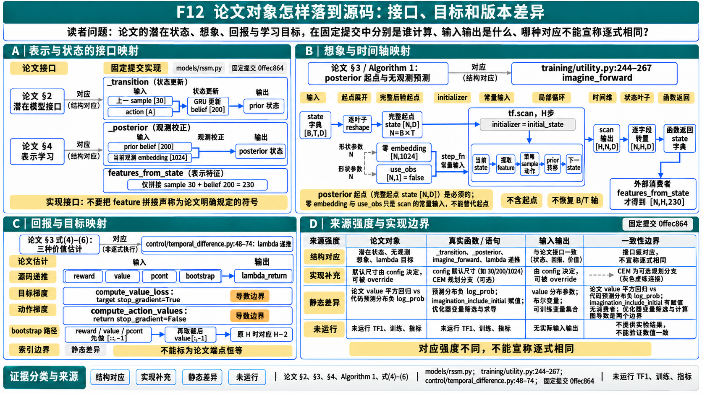
88cb4480f437ae0961c35476e7be047dac68f31dac40466699d05cca52716cae图 F12 全部细节说明：论文对象怎样落到源码：接口、目标和版本差异
论文对象如何落到固定源码
本图将论文中的潜在状态、想象轨迹、回报估计和学习目标分别接到固定版本的实现。阅读时，每条映射都要同时核对四件事：论文提出什么对象，源码由谁计算，输入输出分别是什么，以及对应成立到什么程度。灰色映射线表示两份描述之间的对应关系；蓝色数据箭头只表示同一份实现内的计算依赖。论文先被阅读、代码随后被阅读，不是模型执行时的两道运算，不能画成“论文公式→执行源码”的数据流水线。
A：表示模型与状态接口
论文第二节给出 representation、transition、reward 等潜在模型接口，第四节解释表示学习目标。representation 使用当前图像更新潜在状态，transition 根据历史状态与动作预测下一状态。对应到固定实现，RSSM._transition 先拼接上一随机样本与动作，经前置网络和 GRU 更新确定性信念，再预测随机状态的分布；RSSM._posterior 将历史预测得到的信念与当前观测嵌入合并，形成观测校正后的随机分布。
先验和后验不等于两套互不相关的循环网络。后验内部重新调用 transition，输入仍是同一份上一状态和上一动作；随后它复用 prior 的 belief、rnn_state，只重新计算随机统计量。因此不能把这次内部调用解释成又向未来推进了一个时刻，也不能额外画一个后验 GRU。
features_from_state 只拼接 sample 与 belief。当前配置分别为三十维和二百维，所以得到二百三十维特征；均值、标准差和递归状态仍在字典中，但没有一并进入该特征。这里的字典键、末轴宽度和拼接顺序是实现接口事实。它们帮助读者理解论文的抽象状态如何被保存，不能倒过来说论文公式本身规定了所有 Python 字段或任意实现都必须使用二百三十维。
B：从论文想象轨迹到状态字典的时间轴
论文第三节和 Algorithm 1 描述从真实经验推断出的模型状态出发，在没有未来图像的条件下想象动作后果。对应函数是 training.utility.imagine_forward。输入为已经计算好的后验字典，每个叶子通常带有批次轴 B、真实序列轴 T 和字段宽度 D。函数将前两个轴合并为 N=B×T，使每个训练位置成为独立想象起点，而不是将多个回合拼成一条共享记忆的轨迹。
随后建立 [N,1024] 零嵌入和 [N,1] 的全假 use_obs，满足循环单元的输入签名。零嵌入不经过编码器，也不提供未来观测；use_obs=false 才是关闭后验校正的开关。每一步先从当前状态提取特征、采样动作，再执行 prior 转移，得到新的状态字典。
图中展平后的完整后验起点 state[N,D] 通过独立蓝色线进入 initializer=initial_state，随后初始化扫描的当前状态。N 到零嵌入、use_obs 的灰色虚线只传递形状参数，不把真实状态转换为全零。两个常量另行进入 step_fn；它们不能替代后验起点。扫描框内“当前state→提取feature→策略sample动作→prior转移→下一state”才是重复 H 次的局部运算。
tf.scan 沿 H 个想象步产生 [H,N,D]，随后逐字段转置为 [N,H,D]。函数返回字典，不直接返回 feature。消费者再调用 features_from_state 才获得 [N,H,230]。返回序列不包含初始化状态，也不会自动拆回 B、T 两轴。比如 B=2、T=3、H=3 时有六个起点，sample 为 [6,3,30]，belief 为 [6,3,200]，拼接后为 [6,3,230]；这是纸面形状推导，并非运行 TensorFlow 的测量。
C：回报估计与目标的映射强度
论文式（4）至式（6）定义有限视野回报、多步价值补偿与 λ 混合估计。源码 control.lambda_return 用反向递推计算对应的多步目标。它先把聚合轴移到最前，构造下一时刻价值与末端 bootstrap 的拼接，再以 bootstrap 为扫描的初始化累积量，从末尾向前计算各时刻回报。算法结构相联系，不代表所有输入约定和端点索引都逐字相同。
一个必须展开的差异在调用处：开启 bootstrap 后，compute_value_loss 和 compute_action_values 先对 reward、value、pcont 取 [:, :-1]，再从截后的 value 取 [:, -1]。若原长度为 H，该值来自原 H−2 位置。图中需要保留这个语句顺序，不能将其直接标成“论文端点恒等实现”。源码能确认实际取了哪个元素；作者是否希望如此、训练效果如何，仍不能由静态索引单独推出。
价值目标调用 stop_gradient=True，将回报视为监督信号；动作目标调用 stop_gradient=False，保留它对策略采样动作和可微动力学运算的导数。两条梯度条件不能只用一个“模型冻结”框概括。固定模型参数用于行为学习，意味着对应优化器不更新这些参数，并不意味着策略不能通过模型计算取得动作导数。
D：实现补充与不能外推的结论
论文写出的价值学习是平方回归，代码则对预测分布计算负 log_prob。当使用固定方差高斯时，负对数似然与平方误差仅差比例和常数；换成其他分布或尺度设置后，不能无条件宣称数值相同。这说明“机制对应”“某配置下等价”和“逐式完全相同”是不同强度的判断。
网络宽度、想象视野、学习率和分布选择来自配置，也可以被覆盖。图中的默认值只解释当前配置。imagination_include_initial 虽在配置中被赋值，固定提交中没有消费它的代码；不能因为字段名存在就把起点拼入想象输出。CEM 是可选规划路线，不属于默认策略执行主线。目标网络、continuation、对比表示和多步预测也要分别按实际消费者判断，不能把仓库功能列表直接变成论文算法流程。
图中“结构对应”表示论文对象与实现职责相合，“实现补充”表示代码给出了论文未展开的容器或调用细节，“静态差异”表示能在语句与索引层确认的区别，“未运行”则保留运行效果的边界。这些类别是对结论证据的解释，不能用一个提交号代替整张映射的逐项论证。
来源位置与贯穿阅读
表示与状态接口见 dreamer/models/rssm.py 和 dreamer/models/base.py；想象见 dreamer/training/utility.py:244-267；回报递推见 dreamer/control/temporal_difference.py:48-74，两个目标及切片见 dreamer/training/utility.py:270-327。优化器的变量归属还需结合 apply_optimizers 和配置阅读，不能由单个 return 函数推断。所有源码绑定提交 0ffec86436239d41cecaff34abcf57dca5539839，论文绑定 arXiv 1912.01603v3。
将 A 的后验字典送入 B 的六起点教学例，再从想象状态提取奖励和值，最后交给 C 的目标构造，就能在论文和代码两种语言之间走完一次完整链路。D 限定这条对应能证明什么：本任务没有运行 TensorFlow 1、环境、训练或性能指标，也没有修改目标源码。因此它提供的是可追溯的机制与实现理解，不是论文分数已复现的证明。
3. 调用链
scripts.train.main
-> Experiment runs -> process
-> configs.make_config -> collect_initial_episodes
-> tf.reset_default_graph -> tools.numpy_episodes.numpy_episodes
-> training.utility.train
-> Trainer.add_phase / Trainer.iterate
-> bound define_model (graph construction)
-> encoder / RSSM / heads / tools.unroll.closed_loop
-> utility.compute_objectives
-> divergence / reconstruction / reward / optional CPC
-> imagine_forward -> state dictionary -> features_from_state
-> compute_value_loss / compute_action_values
-> utility.apply_optimizers
-> utility.simulate (train phase and collection schedule)
真实数据路径是 [B,T,64,64,3] → [B,T,1024] → RSSM state {sample:30, belief:200} → feature:230。想象分支把 [B,T] 起点压成 N=B*T，扫描得到 [N,H,...]；它不自动还原原始 batch/time 轴，也不包含 initial state。
4. 梯度与参数边界
- world model loss 更新 encoder、RSSM 和 representation heads；
- value target 的
lambda_return(stop_gradient=True)阻断 target 梯度； - action return 使用
stop_gradient=False，保留从 action 经 transition/reward/value 的路径； - optimizer include/exclude 决定变量集合，不能把“梯度存在”误写成“该模块参数必然更新”；
tf.scan(back_prop=True)使 latent transition 内部的时序反传成为可能；- 环境本身不在 action gradient 图中，真实环境只提供后续 episode 数据。
5. 论文-代码差异
| 项目 | 论文主文/附录 | 固定 commit | 结论 |
|---|---|---|---|
| RSSM 宽度 | 论文描述实验架构 | state 30, model/belief 200, feature 230 | 以源码默认值为 Code Fact，不覆盖论文实验数字 |
| dense 宽度 | 附录给出 300 的实验描述 | config 可见 num_units=400 等公开默认 |
版本/任务配置需要分开写 |
| pcont | 公式可用固定 discount | 配置提供 continuation head 与累计权重 | optional |
| overshooting | 表示目标/附录讨论 | overshooting_scale=0.0 默认关闭 |
不能当默认主线 |
| CPC | 代表性表示目标 | cpc_head 可选 |
ablation/branch |
| CEM | PlaNet baseline | control/planning.py 可用 |
非 Dreamer 主行为学习 |
| target heads | 论文不把它作为核心定义 | define_model.py 可选复制 head |
implementation detail |
imagination_include_initial |
论文不定义该开关 | 定义后无消费者 | unresolved implementation detail |
| bootstrap slicing | 公式显示末端 bootstrap | value/action loss 先切片再取尾部 | static semantic risk，未运行判断 |
6. 可靠性声明
以上行号和形状来自固定源码快照及已有静态验证回执。代码代理未执行 ABCD/EF 或完整 TF1 runtime，故把运行时数值行为、性能和指标列为未验证，不用“代码可导入”替代科学证据。
7. 源码全链路：配置、数据、状态和行为学习
代码阅读从参数和数据进入模型的路径开始：训练配置创建对象，环境记录回合，网络输出分布，RSSM 更新状态，想象与回报构造行为目标，运行时和测试限定生命周期。七个模块的完整说明按依赖归位，保留真实函数、输入输出、条件分支和反例。
完整代码教学与执行依赖
固定源码七模块：从输入到状态、目标和环境的教学解释
这些解释都以固定提交源码为依据。判断一条解释是否充分，可以检查它能否给出具体的输入、执行分支、中间状态和下游消费者；例如不能只说“重置状态”，还要区分 latent 的局部清零与上一动作的整批清零。早期问答诊断及后续修订见材料修订审计（此附件保存在完整本地归档中），它们不作为 TensorFlow 运行结果。
rssm：同一个时间步怎样产生 prior 和 posterior
先看输入的语义，再看网络层。数据序列在某个槽位给出当前图像及把上一状态推进到当前状态的动作；上一 RSSM state 字典则包含随机 sample、均值、尺度、belief 和循环状态。transition 将上一 sample 与动作在最后一轴拼接，通过第一段 dense 处理，再把结果与上一循环状态送进 GRU。belief 因此不是与 sample/action 一起简单 concat 的第三段输入，它有独立的 recurrent-state 角色。这个区分决定了状态更新时间的意义。
prior 的随机分布参数由当前 belief 或配置选择的中间表示产生，softplus 加最小标准差保证正尺度。posterior 再调用同一 transition，使用它形成的 belief 与当前观测 embedding 拼接，预测看过观测后的随机分布。posterior 沿用 prior 的 belief/rnn_state，当前图像直接校正的是随机状态。所谓“观测纠正状态”在这里需要说清纠正哪一部分，不能画成图像第二次直接更新 GRU。
feature 只拼接 sample 和 belief。默认 sample 为三十维，belief 为二百维，feature 为二百三十维；mean/stddev 不额外进入 feature。假设两个 sample 不同而 belief 相同，reward/value/action heads 接收不同特征；如果只留下分布均值，这种采样变化将被抹掉。另一方面，把所有分布参数和 feature 混合会改变头部输入维度，属于新设计，不能说固定代码已经这样做。
真实 closed-loop 通过观测门控选择 posterior，想象全程选择 prior。use_obs 的批量一致性和标量谓词必须按 Base.call 核对；本模块的旧材料对 open-loop 的文字存在简化，不能由名字推断支持任意逐样本门控。状态空间的充分性也是近似：代码能生成相应字段，不证明字段已学到真实速度或接触动力学。
imagination_returns：张量展开与回报为什么是两层契约
imagine_forward 接收真实 posterior 状态序列，把前两轴合并成起点批次。从每个起点 feature 产生动作，将零 observation 和 false use_obs 一并传入 cell，通过 scan 重复 prior transition。返回的第一个状态已经经过一次转移，初始状态不包含在返回序列中；输出形状是展平起点数乘想象时域乘状态叶子宽度。它没有自动恢复为原来的 batch、time、horizon 四轴。
reward、value 和可选 continuation 头随后读取 imagined feature。回报函数对聚合轴作变换、从末端反向扫描、最后恢复原轴。奖励属于哪个状态、bootstrap 取自哪一列，会改变每个目标，即便形状完全匹配也不能自动认为正确。固定源码的 value-loss 路径和 action-return 路径在截断顺序上需要分别读，不能把二者简化成“都拿原始最后 value”。
教学例只要求一维数组即可揭示问题：若价值依次为十、二十、三十，先去掉末列再拿最后值会拿到二十，先保存末值再截断会拿到三十。两种代码都能运行并具有合法形状，却表达不同终点。这个例子说明为何静态 slicing 证据要保留，不能靠论文公式“应该用终点”来替代码改写答案。
value target 停止梯度，action return 保留导数；具体 stop-gradient 与 optimizer 参数集合共同决定谁被更新。终止权重同样要检查是固定 discount、已缩放 pcont 还是再乘一个 gamma，不能把三者全部无条件相乘。当前任务未执行 TF1 图，因此这些静态路径和数值边界不提升为 GPU runtime 已验证。
training_config：配置名字怎样成为真实执行
配置首先把输入参数装进跟踪消费情况的 AttrDict，再绑定数据处理、模型、任务、目标、优化器和 schedule。一个配置项只有被执行路径读取才会影响行为；仅出现在 defaults 里不构成算法事实。imagination_include_initial 的名字暗示包含初始状态，但固定源码未发现对应消费者，这正是必须区分参数定义和参数效果的实例。
define_model 建 encoder、RSSM 和 heads，并用 dummy feature 预先创建模板变量；真实序列随后通过 closed-loop 得到状态。目标装配将最大化项转换成最小化的负项，优化器再按 include/exclude 变量名筛选更新集合。因此“同一图里出现”与“同一 optimizer 更新”没有等价关系。动作回报能穿过 RSSM 的导数，也不表示动作 optimizer 获准写 RSSM 权重。
实际训练、测试、收集和日志各有 phase 与时钟。全局训练步、梯度更新数、批量样本和环境步不能混为一个计数。某些测试配置会把真实训练任务换成 dummy 环境、减少时域或设置 target head，它们验证接口而非论文预算。缺少原实验命令时，配置只能回答“固定实现提供什么默认和分支”，不能回答“论文每项实验实际用了什么”。
目标网络是可选结构，复制频率、初始完整复制和周期更新需要看 schedule 条件；论文“没有发现必要”与源码提供可选 target 并不直接矛盾。阅读这组函数时，应先列每个参数的定义、消费者、覆盖位置与时间尺度，再用调用链检查它实际走到哪个 head 或 optimizer。
environment_data：reset、termination 和 timeout 怎样进入模型
真实环境负责产生不可微的观测、奖励和终止信息。wrapper 将多种环境接口统一，再由批量桥接把 Python 输出交给 TensorFlow 图。reset frame 本身被写入序列，其动作和奖励为零，用来对齐第一张图像与状态起点。两个真实 step 后，一条记录通常有三个时间槽，不能把记录长度直接称为“执行了三个动作”。
termination 与 timeout 的 continuation 标签不同。前者代表任务已经结束，后续价值需要停止；后者只是人为时间上限，标签允许继续 bootstrap。reader 还可能对 pcont 乘固定 discount，所以网络消费到的 pcont 不一定是纯零一生存概率。这一点影响奖励加权、bootstrap 和 loss 权重；重复乘 discount 会系统性改变时间衰减。
批量 simulate 的结束条件应按代码中的逻辑组合读取。若同时给出 episode 与 step 预算，OR 与 AND 的区别会改变何时退出；不能因函数注释或参数名像“上限”就补成任一条件达到即停。异步环境则先发出调用，再回收 callable promise，以减少串行等待；键排序保证观测字段与 dtype/shape 列表稳定对应。
教学纸面检查可写出 reset 加两步、第二步 timeout 与 termination 两种序列，逐项填写 action、reward、done、pcont，再检查 reader 缩放。它能发现时间对齐错误，却不代替真实环境依赖、sticky actions、Gym 版本和进程隔离的运行验证。整个模块必须继续保持静态与 runtime 的边界。
networks_distributions：网络输出为何不是一个均值张量
编码器把图像前两轴展平，四层 kernel 四、stride 二、默认 VALID 卷积把六十四依次变成三十一、十四、六、二。最后二乘二乘二百五十六等于一千零二十四，静态断言正检查这个长度。把空间尺寸写成三十二、十六、八、四会给出不同 flatten 宽度，与固定源码不一致。解码器从一乘一的通道表示开始，以转置卷积恢复六十四乘六十四图像。
头部返回 TFP distribution，训练使用 log_prob，动作生成使用 sample 或 mode，预测使用 mean。不同消费方式具有不同统计语义。TanhNormal 在固定代码里用采样近似 mean、mode、entropy；其名为 stddev() 的方法实际返回平均平方差，没有平方根，这个命名与运算差异应如实标记，不能因为函数名就把结果说成标准差。
逆 tanh 对边界精度很敏感，固定代码只在绝对值不超过一时按 precision 裁剪，超出一的值保留并进入 atanh。裁剪分支保证常见边界处有限，但不证明任意非法输入都会自动修复；训练动作范围、log_prob 输入和精度类型共同影响数值行为。论文的重参数化公式提供目标机制，源码的具体分布封装提供额外数值约束。
离散 OneHot 的直通模式和 score 模式同样需要区分。前向都可产生 one-hot，反向却使用不同梯度修正。当前离散论文实验说明使用直通，不授权把源码所有可选分布模式并入默认算法。形状、event 维和 reinterpreted batch 维都应通过 distribution construction 的原语核查。
tools_runtime：小工具怎样影响整个算法
RSSM state 是字典，batch 和输出也可能嵌套，因此 nested map、zip、flatten 不只是便利函数。键、类型和叶子顺序决定状态能否与目标保持一致，错误遍历可能生成形状正确但语义错位的张量。数据 chunk 必须保留连续时间顺序，随机 offset 只改变取哪一段，不应任意打乱序列。
cache、recent、window loader 在已有 episode 与新文件之间选择，影响训练样本分布；preprocess 还会量化图像并加入均匀噪声，再将范围移动到零附近。举例八比特图像不是简单除以二百五十五，固定代码采用 bins 二百五十六和小均匀扰动；把标准计算机视觉归一化规则替换进去会改变数据语义。
schedule 的模运算窗口与 Trainer 的跨步检查是不同函数。批量跨过某个阈值时，某个 helper 可能按区间覆盖判断，另一个直接检查余数窗口，二者不能因为都叫“每隔多少步”而合并。优化器的 regex 筛选、目标复制和图到 Python 的日志桥接也属于行为决定因素，而非可任意删掉的附属设施。
本任务只读工具的函数体和测试断言，未执行依赖环境。日志文件已经出现或 checkpoint 保存函数存在，不说明本次训练运行成功。报告将接口、默认值和未运行项分开，保留这些工具对模型数值与运行节奏的影响。
tests_cli：测试断言能够证明到哪里
测试文件展示开发者选择覆盖的路径：连续 Dreamer、离散动作、target head、no-value 和 PlaNet 等分支，nested 数据、overshooting、异步环境和多 worker 调度。它们是输入契约与边界的证据，但没有运行时，不能用“测试里有断言”代替“测试通过”。即便运行短 dummy 测试，也只证明相应接口能工作，不证明五百万步论文成绩。
命令入口把 params、任务和日志目录传给配置与实验运行器。当前任务不执行这些训练命令，展示代码只是帮助读者找到数据与模型在哪里装配。下载、同步等 CLI 与核心强化学习计算是不同职责，其参数不能误当成论文超参数。测试的 expected count 与生产控制的 step budget 同样需要分离。
更有效的读法是从一个失败假设回到相关测试：状态键不一致找 nested，多步 mask 越界找 overshooting 的 distance/mask 表，worker 中断找 running 的 DONE/PING/恢复计数。这里读的是测试定义及其断言范围；闭卷核验可以检查材料能否解释这些路径，却不能替代实际运行，更不能证明用户已经掌握。
训练配置：从参数到图、目标、优化器和采集
配置决定了参数何时变成对象、哪些目标进入计算图，以及优化器最终更新谁。先追踪 train.main/process，再检查 defaults 的覆盖顺序、head 的梯度边界和 train/test 阶段；配置项的名字不能代替它的实际消费者。
1. 真实入口与顺序
train.main 只建立 Experiment 并双层迭代 run/score；单个 process 先在 params.unlocked 中写入 logdir，再 make_config，创建五 worker Metrics、补种子 episode，随后 reset default graph，建立 train/test dataset，包装 InGraphMetrics，绑定 define_model，最后逐个 yield training.utility.train 的 score。main 明确丢弃 score 数值，所以测试入口本身没有性能断言。
make_config 的顺序是 data → model → tasks → loss → schedule，并在末尾检查 params.untouched；用户 override 先于 default，重复 default 由先出现的组获胜。runtime-only keys 也先 get 标记已消费，拼写错误会在建图前抛 KeyError。
证据：dreamer/scripts/train.py:35-65（process/main，commit 0ffec86436239d41cecaff34abcf57dca5539839，SHA-256 1c6954ee78af386b99dad93bd5bb28c4a793a57b0022552e469307248df8b656）、dreamer/scripts/configs.py:112-137（make_config，commit 0ffec86436239d41cecaff34abcf57dca5539839，SHA-256 6c282c582ae365485c679a1110ba93e24d09262b45e6a1f7b3b6dd44aa6dd145）。
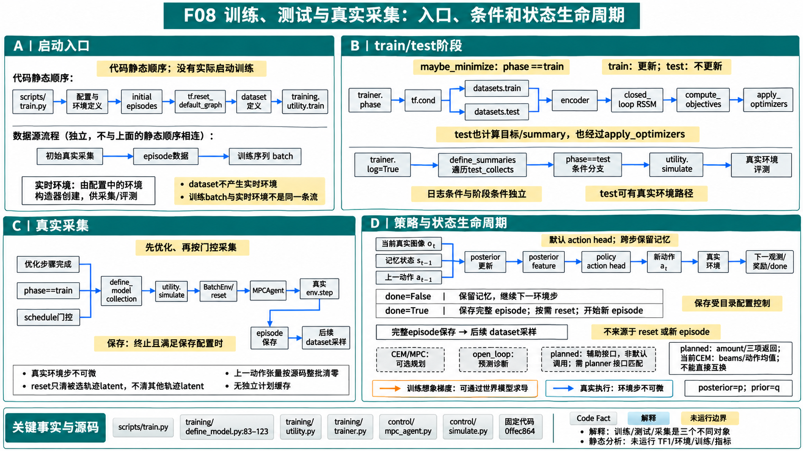
0b84fa872efbe00755627dcafed7d053051d9cdda17a16ee468a4754967db89f图 F08 全部细节说明：F08训练、测试与真实采集：入口、条件和状态生命周期
训练、测试和真实采集怎样共享模型
本图沿启动入口、共享计算图、主动采集和动作选择四个分区，解释固定源码怎样在不同阶段使用同一套模型。读者需要先区分数据集中的历史序列与环境此刻产生的新观测，也需要区分“调用优化函数”和“实际更新参数”。前者是输入来源，后者由阶段条件决定，不能只看函数名作判断。
A：先建立数据，再建立训练图
启动链从 scripts/train.py 读取配置开始，经任务与环境定义收集初始回合，然后重置 TensorFlow 默认图，建立训练和测试数据集，最后进入 training.utility.train。初始采集提供模型学习所需的数据；重置默认图之后建立的是后续训练图。这是源码规定的先后依赖，本任务没有真正执行这条入口，更没有可报告的初始回合数或环境奖励。
图中的数据集 batch 和实时环境有不同的消费者。batch 已经包含保存的图像、动作、奖励和继续概率，供编码器与 RSSM 学习；实时环境接收新动作并返回新观测，是采集和评测的来源。不能把数据集框连成“生成环境当前图像”的模块，也不能把一次真实环境交互当成训练数据 batch 的内部运算。
B：训练和测试经过同一套计算函数
Trainer.phase 通过条件选择训练或测试数据集。选中的序列进入同一个编码器，随后 closed_loop RSSM 读取观测嵌入与历史动作，得到 prior、posterior。compute_objectives 根据当前配置构造表示、预测和行为学习目标；apply_optimizers 也属于共享图。因此测试阶段并没有绕过目标函数或绕过优化器函数定义。
真正控制权重更新的是优化器的 maybe_minimize 条件：只有 phase=='train' 才执行更新，测试分支返回不更新参数的操作。这样测试 batch 可以产生损失和诊断摘要，同时避免把测试数据用于权重学习。将整条 apply_optimizers 路径从测试图中删除，会混淆函数调用与条件副作用；反过来，看到函数被调用也不能宣称测试更新了参数。
表示学习使用真实序列中的图像证据校正后验。行为目标在模型内部从后验起点展开先验想象，未来步骤不再读取图像。这两类计算可以由同一模型定义组织，却有不同的输入和梯度边界。图中若出现 pcont、对比目标、多步预测或目标头，都必须以各自的配置条件解释；仓库中存在这些实现并不等于默认主线全部启用。
B：测试摘要可能触发真实评测
trainer.log 是另一层门控。它为真时调用 define_summaries，后者遍历 config.test_collects，又在 graph.phase=='test' 时调用 utility.simulate。因此测试阶段除了历史测试 batch 的预测诊断，还可能执行真实环境评测并产生回合得分。两条路径的输入与副作用不同，不能把测试 loss 当作环境分数，也不能把测试说成完全没有环境交互。
日志条件、阶段条件和采集描述分别限制这些操作何时发生。图中的条件线用于表达门控，不代表每个训练 step 都会执行完整测试仿真。没有运行日志时，也不能据此推断具体频率、回合数量、硬件耗时或测得性能。
C：主动采集受阶段和周期共同控制
训练图中的主动采集位于 collection 作用域。对每份 train_collects 描述，源码按训练步数与配置生成 schedule.binary 条件，再与 phase=='train' 取逻辑与。条件为真才执行 utility.simulate。控制依赖要求相关优化步骤先完成，随后允许新经验采集。这是一条操作顺序约束，不是从优化损失反传到环境的导数通路。
仿真连接批量环境与 MPCAgent。首轮 reset mask 全真，后续根据上一条 transition 的 done 选择重置轨迹；agent 根据当前观测更新后验，再输出动作。真实 env.step 返回观测、奖励和终止信息，采集包装器把它们记录为回合。只有满足终止和输出目录条件时才写入回合文件；新的经验经过后续数据加载才能再被模型学习使用。保存回合、一次环境步和一次训练更新是不同的对象。
D：默认策略和可选搜索的区别
真实交互先把当前观测预处理并临时扩成长度一的序列，经编码器提取嵌入；再读取保存的状态和上一动作，以 use_obs=true 更新 RSSM 后验。默认策略从后验的样本与信念拼接特征读取动作分布，给出下一动作。当前后验依赖的是上一动作，不能把刚选出的新动作倒接成已经产生当前观测的原因。
CEM/MPC 是可选规划能力，open_loop 是预测诊断，planned 是默认执行链未调用的辅助接口，图中分别使用灰色虚线卡注明边界。planned 对外部 planner 要求 amount 和三项返回协议；当前 CEM 使用 beams 并返回动作均值序列，两者不能直接互换。类名 MPCAgent 本身不足以证明默认 Dreamer 每一步都执行 CEM；需要读取配置实际绑定的 planner。采用学到的 action head 和在线搜索动作序列，对每个环境步的计算代价和策略语义都有不同影响。
reset 的作用范围同样不能凭名称推断。固定实现对 agent_indices 选中的 latent 字段执行局部清零，未选中的潜在状态继续保留；但 _prev_action.assign(zeros_like(_prev_action)) 清零的是整批上一动作张量。它没有单独的“计划缓存”可供重置。两条清零操作的范围不同，将它们都画成局部或都画成全局，都会改变读者对跨环境状态隔离的理解。
从控制流回到学习机制
真实环境是不可微边界，环境步与数据写盘不属于动作目标的反向通路。动作学习保留的是模型内部 imagined reward、value、state 和 sampled action 的导数。真实采集为下一轮表示和动力学学习提供数据，潜在想象则为策略与价值学习提供计算图。二者交替组成论文的学习闭环，但既不共享未来真实观测，也不能用同一条箭头同时表示控制依赖与梯度。
源码入口见 scripts/train.py；共享目标、主动采集和日志门控见 dreamer/training/define_model.py:83-123；测试仿真见 dreamer/training/define_summaries.py:97-117；状态读取、动作选择与 reset 见 dreamer/control/mpc_agent.py:28-99，环境循环见 dreamer/control/simulate.py。代码固定为 0ffec86436239d41cecaff34abcf57dca5539839。这些结论来自静态源码核对，未运行 TensorFlow 1、环境、训练或指标复现；图中的阶段条件和状态边界不能替代论文实验协议。
下半部的终止条件表要按行阅读。done=False 表示本回合仍在进行，继续保留更新后的记忆并处理下一环境步；done=True 才进入完整回合保存、按需 reset 和新回合。保存还受输出目录配置限制，不能把条件表理解成每一步都写盘。只有已经保存的完整 episode 才能成为后续 dataset 的采样来源，reset 或尚未结束的新 episode 本身不会生成历史训练序列。这也是条件表与上方动作计算链分开的原因。
例如，批量交互中第一条轨迹终止而第二条继续时，下一轮按上一 transition 的 done 选择第一条进行 reset；第二条的 latent 记忆保留。第一条已完成的 episode 在满足保存配置时进入文件，随后才可能被数据加载器采样。与此同时，agent 的上一动作张量按固定实现整批归零，不能把这一步和选中 latent 的局部 reset 说成相同范围。这个例子仅依据控制与赋值语句作纸面推演，没有运行环境或测得奖励。
蓝色实线表示分区内部的前向数据或控制调用，优化完成到采集入口的线专门表示控制依赖；它不会跨真实环境反传。橙色图例只解释训练想象中通过模型输入求导的能力，不代表图中存在已运行的梯度测量。灰色虚线将可选规划和辅助诊断与默认策略区分，浅黄色条强调阶段、保存与未运行边界；底栏的 Code Fact、解释和未运行标签说明证据来源。
本次原生图新增的生命周期与接口读法
原生图的 D 区把动作执行和回合终止拆成两层。上层先把当前真实图像 o_t、记忆状态 s_{t-1} 和产生当前观测的上一动作 a_{t-1} 合并到 posterior 更新；posterior feature 再进入默认 policy action head，最后才得到新动作 a_t。因此“上一动作”与“新动作”在时间上有严格区别：前者参与解释当前观测，后者送入下一次真实环境步。环境返回框写作“下一观测／奖励／done”，表示环境侧同时给出三类结果；真实环境调用不承载训练想象的反向梯度。
条件表的两行是状态生命周期，而不是两个神经网络分支。done=False 时，当前 episode 没有结束，更新后的 latent 记忆和下一步控制上下文继续保留，下一次动作仍从 posterior 产生。done=True 时，只有先完成“保存完整 episode”，才进入“按需 reset”和“开始新 episode”；保存还受输出目录配置控制，所以终止并不等价于无条件写盘。单独的“完整 episode 保存 → 后续 dataset 采样”框表示消费者关系：历史数据来自已经结束并符合保存条件的回合，不能由 reset 或刚开始的新 episode 直接生成。一个批量环境中可以同时出现一条 done=True 和另一条 done=False 轨迹，前者保存并重置，后者继续保留记忆；这解释了为什么图中把两行写成条件表而不画容易绕错的长回流箭头。
灰色虚线卡刻意分成三个名称。CEM/MPC 是可选在线规划；open_loop 是在摘要路径中用于预测诊断的上下文展开；planned 是固定源码中定义的辅助接口，默认动作链没有调用它。planned 向外部 planner 传入 amount 并按三项结果解包，第一项不使用、后两项作为规划状态与回报；当前 cross_entropy_method 则使用 beams 等参数并返回动作均值序列，所以不能仅凭“都是规划”就直接互换。图中这三张卡没有接入默认 action head 实线，避免把存在的函数误读为默认执行路径。
图底部把训练想象梯度和真实执行用两种颜色分开。橙色箭头表示在模型内部可以沿 imagined state、reward 和 value 对动作求导；蓝色箭头表示真实环境步不可微。若读者使用论文分布记号，观测校正的 representation/posterior 为 p，历史预测的 transition/prior 为 q；这只是论文符号映射，不表示图中新增了一个概率计算分支。底栏的 Code Fact、解释和未运行边界把文件位置、阶段对象和证据强度分开：本图只静态核对固定提交 0ffec864，没有运行 TF1、环境、训练或指标。
2. model/head 绑定与真实梯度边界
_model_components 根据 encoder（conv/proprio）、head distribution、RSSM 参数绑定 callable；_tasks 为 state components、reward、pcont 建 head。若名称不在 gradient_heads，head 绑定 stop_gradient=True，但 feed_forward 只停止 feature 输入，dense 层默认仍 trainable。compute_objectives 对这类 head 给 raw_features 做 stop_gradient，并使用 include='.*/head_name/.*'；普通 log_prob 经全元素 reduce_mean，所以诊断 head 可训练自己的权重而不更新共享 encoder/cell。
define_model 用 cell.zero_state 的 dummy features 调每个 head 一次后再消费真实 embedded，防止 TF1 graph 迭代中重复创建变量；value_target/action_target 建立 track_network 依赖。target head 本身不进专用 loss scale。
证据：dreamer/scripts/configs.py:171-256,259-300（_model_components/_tasks，commit 0ffec86436239d41cecaff34abcf57dca5539839，SHA-256 6c282c582ae365485c679a1110ba93e24d09262b45e6a1f7b3b6dd44aa6dd145）、dreamer/training/utility.py:147-157,225-241（compute_objectives，commit 0ffec86436239d41cecaff34abcf57dca5539839，SHA-256 46668df6942013d81a69ff5d73280fb32d4eaa1fb344e3a482441986ff29ea23）、dreamer/training/define_model.py:43-89（dummy head/target setup，commit 0ffec86436239d41cecaff34abcf57dca5539839，SHA-256 834057a13306779fd7e6241f7efa7f8a7432b2961760a4428fbe1d5c31f43139）。
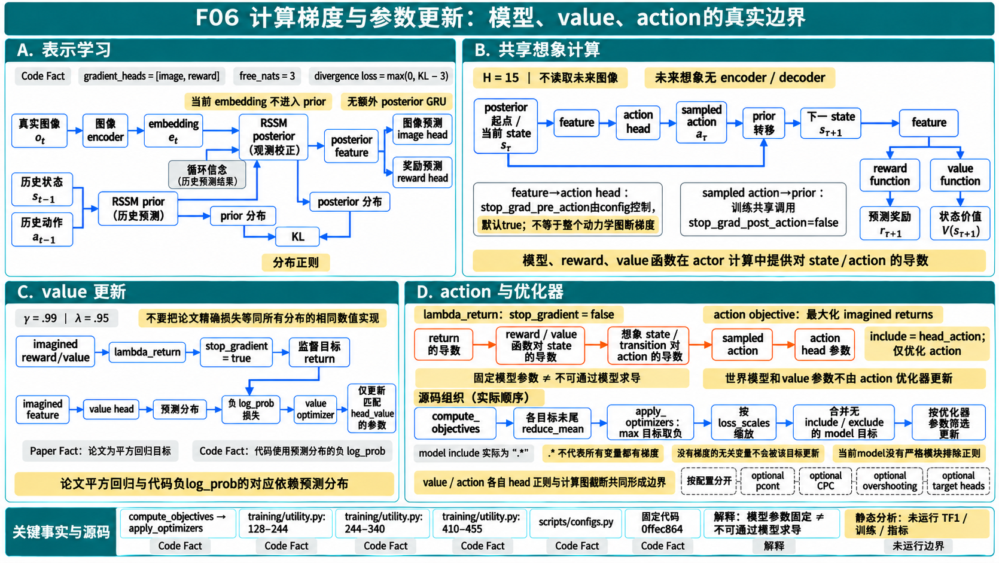
56112f2a0c0c0ee0d9e5d075fadaed03b2226ae3436d7e2992f0648d8f338adc图 F06 全部细节说明：计算梯度与参数更新：模型、value、action的真实边界
计算导数与更新参数为什么是两个问题
本图把世界模型、价值头与动作头的学习分开，再沿共享想象计算说明它们怎样相互提供信号。A 区是表示学习，B 区是潜在展开，C 区是价值目标，D 区核对动作导数和优化器变量选择。读图时要分别回答“梯度能经过哪条边”和“本次优化器更新哪些参数”；这两个问题不能用一句“模型冻结”合并。
A：表示学习把真实观测变成可预测状态
真实图像经编码器得到嵌入，RSSM 的观测校正据此产生 posterior；历史状态与动作先形成 prior。当前嵌入只进入后验校正，不是先验转移的额外输入，也不会在 posterior 内再运行一套 GRU。posterior 特征供图像与奖励头预测，prior、posterior 的分布则用于 KL 散度。图像重建、奖励监督和分布约束分别提供不同的学习信号。
默认 gradient_heads=['image','reward'] 允许图像和奖励目标通过特征更新表示。其他头是否阻断输入梯度由其是否属于该集合决定，头本身仍可能训练。配置不是一张静态功能列表：头存在、目标权重非零、特征有梯度以及某次优化器更新它的参数，都需要分别核对。
固定源码在 free_nats=3 时采用 max(0,KL−3) 形式，先减去阈值再截到零。其导数在低于阈值的区域为零；数值上与把 KL 下限截成三并不相同，虽然二者在阈值外的导数可能一致。图中的公式应保留实际实现，而不能只写一个没有运算含义的“KL 正则”标签。
B：共享想象保留模型运算的导数
真实序列后验作为想象起点。每步先提取样本与信念的二百三十维特征，动作头采样动作，再由 prior 转移产生下一状态；奖励和值从新状态的特征读出。完整当前 state 还要沿另一条输入边直接进入 prior，提供随机样本和循环状态；不能把二百三十维 feature 当作完整字典来替代它。图中左侧起点因此有两路输出：一路供策略提取特征，另一路供状态转移。未来没有新的真实图像，也不在这条循环中解码图像。H=15 是当前连续控制配置的想象长度，不是所有任务必需的常数。
imagine_forward 的共享调用明确传入 stop_grad_post_action=False，保留采样动作进入模型的导数。策略输入边由 stop_grad_pre_action 单独控制；默认会在送入动作头前阻断该特征的导数，但这不等于把状态转移、奖励和价值整张图切断。tf.scan(back_prop=True) 继续保留跨想象步骤的可微计算。函数默认参数与调用处显式参数不同，不能只看函数签名判定实际训练路径。
模型、奖励和值函数在动作学习中提供对 state 和 action 的导数。它们可以参与计算，而不被动作优化器更新参数。类似地，一个固定的函数仍可对输入求导；固定的是权重，输入依赖关系并未消失。这是 Dreamer 能用长期预测结果训练策略的关键计算条件。
C：价值头拟合停止梯度的目标
想象奖励与价值预测经 λ 递推形成 return。价值学习调用 lambda_return(..., stop_gradient=True)，把该回报视为固定监督目标，然后对 value 预测分布计算负 log_prob。图中监督目标 return 与“imagined feature→value head→预测分布”是损失的两路输入；目标进入损失，不能作为 value head 的前向特征。损失再交给价值优化器，更新匹配 head_value 的参数。因此拟合误差更新价值头，而不会沿目标构造反过来改写生成目标的世界模型运算。
论文将这一步写成平方回归，固定实现以概率分布接口表达。固定方差高斯的负对数似然与平方误差可差一个比例和常数；其他分布、尺度或归约方式仍要按配置判断，不能宣称任意情况下数值相同。图中默认 γ=0.99、λ=0.95 分别控制时间折扣和多步估计的混合，两者也不能互换。
在默认头分组下，value 不属于允许穿透特征梯度的 gradient_heads，目标被赋予只匹配 head_value 的变量范围。配合目标停止梯度，形成价值更新的边界。可选 target value 头、pcont 加权或其他表示目标有自己的条件，应在旁列说明，不能据此改写默认价值路径。
D：动作目标通过模型回到动作头
动作目标最大化想象回报，调用 lambda_return(..., stop_gradient=False)。从目标向后看，return 依赖奖励与价值预测，它们依赖想象状态，状态又依赖此前采样动作和策略参数。因此反向导数沿 return、预测函数、状态转移、采样动作回到 action head。橙色线表示这条反向通路，不是把目标作为额外的前向输入；真实环境也不在该导数路径中。
动作优化器的 include 只匹配 head_action。RSSM、奖励头与价值头提供输入导数，但这些函数的参数不会由这个优化器更新。价值头由自己的优化器学习，世界模型目标由模型优化器处理。把“导数经过某模块”直接等同于“该模块权重被更新”，会把三个学习角色混成一个联合目标。
apply_optimizers 首先把最大化目标取负，并应用各自的损失权重；目标在构造末尾先经 reduce_mean 归约。没有单独 include/exclude 的目标合并为 model loss，以共享一次反向传播和优化器统计。当前真正执行的 model include 是 '.*'，文件中更严格的模块筛选只是注释。不能把注释里的设想当作现行的模块排除规则。
model include 广并不意味着全部变量都会从每个目标得到非零导数。实际更新还取决于计算图是否连接、停止梯度、目标权重和优化器如何处理无梯度变量。图中的模型边界需要同时保留这个广匹配事实和目标依赖条件，而不是虚构一条从正则表达式直接证明所有模块完全隔离的结论。
一个动作的完整阅读路径
从某个真实后验起点选择动作 A0，经固定模型得到 S1，再从 S1 读奖励和值；继续展开后构造长期 return。动作目标对 A0 的影响可以沿这些运算求导，最后改变产生 A0 的动作头参数。价值目标把同一次 return 当固定标签，改变价值头参数；表示学习则用真实图像与奖励更新世界模型。这三个问题共享某些预测，却不共享所有参数更新权限。
图中的蓝色、橙色和灰色虚线分别表示前向数据、导数通路和可选配置，颜色本身不表示损失大小或训练强度。pcont、CPC、多步预测和 target heads 必须按实际配置区分，不能全部接到默认实线。默认头列表、阈值与折扣来自 dreamer/scripts/configs.py，目标和共享想象见 dreamer/training/utility.py:132-244、244-327，优化器组织见同文件 410-455。源码绑定提交 0ffec86436239d41cecaff34abcf57dca5539839。
本文只静态核对计算和变量归属，没有运行 TensorFlow 1、训练或测量梯度范数。它解释动作学习能够怎样利用模型，而不声称所有环境中梯度都稳定、价值都准确，或论文性能已经复现。模型误差、有限视野和价值偏差仍须结合实验与相关方法章节判断。
3. 目标方向与优化器链
每个 Objective 带 goal=min 或 max。apply_optimizers 先在所有 objective 值已计算后，把 max 目标取负、再乘对应 loss scale，并将没有 include/exclude 的目标合并为一个 model loss；有筛选的 head 目标保持独立。优化器缺省配置会复制 default，CustomOptimizer 通过 include/exclude regex 从 tf.global_variables() 过滤变量，仅对过滤后的列表求梯度和 apply；maybe_minimize 只有 trainer.phase == 'train' 才更新，test 返回 no-op 和 grad_norm=0，梯度可按 global norm clipping。
纸面例：reward log_prob=−2（goal=max）、divergence=3（goal=min），scale 都 1，则优化器收到 model_loss=−(−2)+3=5；若忘记 max 取负，reward 会被越小越好地优化。若 value head include 只匹配 head_value，shared encoder 的梯度不会因为该专用目标更新。
证据：dreamer/training/utility.py:410-456（apply_optimizers，commit 0ffec86436239d41cecaff34abcf57dca5539839，SHA-256 46668df6942013d81a69ff5d73280fb32d4eaa1fb344e3a482441986ff29ea23）、dreamer/tools/custom_optimizer.py:24-75（CustomOptimizer，commit 0ffec86436239d41cecaff34abcf57dca5539839，SHA-256 74681e07dc2e6a4df56a81e0375672571d92308185fe7848217a7a845a226ac5）、dreamer/tools/filter_variables_lib.py:24-60（filter_variables，commit 0ffec86436239d41cecaff34abcf57dca5539839，SHA-256 fe08166a1d05cfa7133c79b7bb8cea248908dbe6cf566266b100733fc289a2c0）。
4. target network 的复制时机和公式
track_network 在 global_step==0 先 amount=1 硬复制；随后只有 phase=train 且 binary(step,batch_size,0,every,-1) 命中时才更新。soft_copy_weights 分别按正则筛变量、按名字排序、检查数量相等并位置配对；amount=1 是直接 assign，否则每个 target 更新为 (1−amount)*target + amount*source。amount 只允许 (0,0.5] 或 1。排序后的配对是实现契约，不能假设 TensorFlow 全局变量顺序稳定。
5. imagination 与 planner 配置边界
_loss_functions 读取 imagination_include_initial，但仓库只有这一个赋值点，compute_objectives/imagine_forward 不消费它；不能从名字宣称它改变 rollout 布局。真正生效的是 imagination_horizon 和 imagination_skip_last。CEM 分支绑定 beams/iterations/topk/horizon，policy sample/mode 只传 strategy/config；未知 planner 或 strategy 各抛 NotImplementedError。planet default 同时关闭 action/value head、把 imagination_horizon 设 0；actor default 关闭 value head并用 reward objective。
6. 数据、schedule 与生命周期
默认 batch_shape=(50,50)，reader 的 pcont_scale=0.99，loader cache 每 1000 条；debug default 将 batch 设为 [5,10]、model/state size 设为 10/5。训练 schedule 以 train_steps/test_steps 划 phase，Trainer 每次全局 step 按 batch_size 增长；_is_every_steps 检查一个 batch 覆盖的 step 区间内是否命中周期。
Experiment 有限 run 先生成一次随机排列 1..N；ping_stale 非零时等 2*ping_every 再用同一排列二次扫描，无 stale 则不重扫。无限模式 stale 非零先等一次，再从 1,2,... 计数。Run 由 PING/DONE/FAIL 管理 ownership；当前代码异常处理会先写 DONE 再写 FAIL，这是实现现状，不能把 DONE 单独当成功证据。
7. 核对诊断头、目标网络和想象分支
检查诊断头时，分别问输入 feature 是否停止梯度、dense 权重是否仍可训练、include 是否只选该头，以及 reduce_mean 在哪些轴上聚合。检查优化器时，再把 max 目标转为负损失、按 scale 合并 model 目标，并沿变量正则、train/test 条件和 clipping 追到实际更新。
检查目标网络时，dummy 调用只负责建变量，global_step=0 的硬复制负责初始化，后续 soft copy 由 schedule 控制；value_target.mode 是目标来源，target head 自身被 loss scale 循环跳过。
检查想象时，imagination_include_initial 没有消费者，skip-last 对全部 state 叶子切片，stop_grad 参数控制计算图，raw_states 才是共享 rollout。检查动作选择时，CEM 负责候选裁剪、top-k 与重拟合；policy 分支只产生一步计划，异常策略会明确抛错。
8. 反例与修改边界
- 在 params 中写
imaginition_horizon，会因 untouched gate 抛错；不能静默采用默认值。 - 把
value_target放入 loss_scales，会违背_loss_functions对 target head 的专用 skip。 - 把 stop_gradient 当作 trainable=False 会错误冻结 head 权重；二者分别作用于输入梯度和变量创建。
- 只看 DONE 文件就判定 run 成功会漏掉异常路径中的 FAIL；必须同时读低层日志/文件。
- 把
imagination_include_initial=False当作已改变返回布局是无证据结论；当前版本该 key 是兼容参数。
训练配置的接口不变量与反例
配置参数必须在对应构建阶段被读取；params.untouched 检查实际 override 是否存在未消费键。运行期字段还需要同时查到真实消费者，出现在 runtime key 清单中只表示解析器记下访问。
一个 head 同时涉及 _model_components、define_model 的占位初始化、_tasks、loss scales 和 optimizer include。这五处共同决定输入、变量创建、目标权重与参数归属；只看一个类定义不能推断训练行为。
Objective 的 goal 决定 max/min 转换，所有目标先算完再交给优化器。阶段和 checkpoint 还依赖 batch coverage、PING/DONE/FAIL 与 restore；imagination_include_initial 在固定提交中没有消费者，不能凭名字推断状态长度。
10. 公式索引与逐步验算
- max→min：若
J_reward=-2（goal=max），统一损失取-J_reward=2；若 divergence=3，scale 均为1，model loss=5。 - soft copy：source=10,target=2,amount=.25 时新 target=
.75·2+.25·10=4；amount=1 时直接为10。 - binary schedule 的窗口条件是
(step-after)%every<batch_size；它按 batch 覆盖区间决定是否触发，而非只看单一 step。
11. 配置边界索引
imagination_include_initial 只有赋值点；imagination_horizon、imagination_skip_last 才真正进入 rollout。actor default 关闭 value head，planet default 同时关闭 action/value head 和 imagination horizon；这些是 default 组合的结果，不能从单个布尔字段孤立推断。
12. 实现细节：head、共享想象和 phase 的完整契约
12.1 诊断 head 和 target head 的参数来源
_tasks 为所有保留的诊断 head 先设置 config.loss_scales[name]=1.0。名称在
gradient_heads 中的 head 使用 raw_features，其 Objective 的 include/exclude
都为空；不在其中的诊断 head 则停止 feature 输入梯度，并把 include 约束到自己的
head_name。所以 position 这类诊断 head 可以更新自己的 dense 权重，而共享
RSSM/encoder 是否被更新取决于图上的 stop 与 optimizer 的变量列表两层规则。
value_target_head=True 时，_model_components 为 target 绑定
value_layers（默认 3）、value_dist（默认 normal）、data_shape=[] 和
stop_gradient=True。它和 value 使用相同的层数/分布配置，但有独立变量；
loss_scales 的循环明确跳过 value_target/action_target。define_model 先用
cell.zero_state(1,tf.float32) 的特征给每个 head 建权重，再注册
track_network：source regex 是 .*/head_value/.*，target regex 是
.*/head_value_target/.*。step=0 的 amount=1 会初始化 target，之后按 train
phase 和 binary schedule 做 soft copy。输入 stop-gradient 不能阻止赋值复制；
例如 source=10、target=2、amount=.25 时，target 被更新为 4，而非停在 2。
12.2 raw_states 何时复用，何时重新想象
compute_objectives 只有 imagination_horizon 非零才建立共享 raw_states。
action_source=model 时，已有共享 horizon 就直接使用 raw_states；没有时才按
action_model_horizon 重新调用 imagine_forward，且明确保留动作后的梯度。
value_source=model 有一个额外条件：只要 action_target head 存在，即使共享
imagination_horizon 已打开，也会按 value_model_horizon 单独 rollout，并使用
action_target 作为 policy；没有 action_target 且共享 horizon 非零时才复用
raw_states。例：共享 H=15、value_model_horizon=7，有 action_target 时 value
得到长度 7 的独立 rollout，而 action 仍能使用长度 15 的共享 rollout。把二者
简单写成“horizon 开启就都复用”，会漏掉 target-policy 的分支。
12.3 planner 绑定和 PlaNet 组合
_define_planner 的 cem 分支绑定 cross_entropy_method，传入 horizon，默认
planner_beams=1000、planner_iterations=10、planner_topk=100；返回计划形状为
[B,horizon]+action_shape。policy_sample 与 policy_mode 都绑定
action_head_policy，只分别传 strategy=sample/mode 和 config，不传 horizon。
policy head 从当前特征取一次 sample 或 mode，再加长度为 1 的时间轴，故返回
[B,1,A]。未知 planner 或未知 policy strategy 都抛 NotImplementedError。
PlaNet 的 train/test_planner 都为 cem，planner_objective 为 reward，action/value head 都关闭且 imagination_horizon=0。这里 CEM 自己产生动作候选并用世界模型的 reward head 打分，所以不依赖 actor 或 value head；关闭训练时的 actor imagination 也不会关闭 CEM 内部的 horizon rollout。最小反例是只关闭 actor head 却继续使用 policy_sample planner：该 planner 仍要读取 action head，因此不是有效的 PlaNet 组合。
12.4 从数据 iterator 到对外 score
默认 schedule 为 train_steps=50000、test_steps=batch_shape[0]、
max_steps=5e7；train/test 数据目录分别从 params.logdir 派生为 train_episodes
与 test_episodes。utility.train 把两套 dataset 变成 iterator，用
trainer.phase == 'train' 的条件选择 get_next，然后建立 phase。
train phase 的 batch_size 来自 config.batch_shape[0]，report_every=None，
log_every=config.train_log_every，checkpoint_every=config.train_checkpoint_every；
test phase 的 batch_size 相同，report_every 和 log_every 都取 config.test_steps，
checkpoint_every=config.test_checkpoint_every。默认 train 不 report score；test
到了 report 周期才 yield mean_score。每次 phase.op 都会执行，所以“不 yield”
不是没有做这个 batch。
Trainer 用所有 phase.steps 之和作为 epoch_size，令
epoch=global_step//epoch_size，再用余数逐 phase 减去长度找到 steps_in。
当前 phase 的 phase_step=epoch*phase.steps+steps_in，
reset=(steps_in<phase.batch_size)。每次 phase.op 后的全局 step 都加 batch_size，
包括 test batch。例：train_steps=10、test_steps=5、batch_size=5 时，global_step
为 0/5 时走 train，10 时走 test；该 test 后变为 15，下一轮 train 的 phase_step
为 10，而 test 并没有从 global_step 里排除。只在 report_every 命中时对外 yield
mean_score，checkpoint 和 summary 又各有自己的周期。
这里还需要核对的计算与来源定位
前述说明涉及 stop-gradient/optimizer、target copy、imagination 和生命周期的内容保留；
具体计算包括诊断 loss scale、target 参数及 regex、action_target 的 value rollout
分支、CEM/policy 默认与 PlaNet reward 组合，以及 phase 的 iterator、reset、global
step 和 yield 公式。证据为 configs.py:193-205,284-297,376-389,497-516、
define_model.py:51-74、utility.py:96-126,185-215、trainer.py:108-185。
12.5 检查配置是否真的控制了目标行为
诊断 head 的 loss_scale=1.0 是 _tasks 阶段写入的初值；之后 _loss_functions
还会按 name_loss_scale 读取覆盖。例：position 保留为诊断 head、未列入
gradient_heads，缺省 position_loss_scale=1，独立 optimizer 只更新它的 head
变量；显式设 position_loss_scale=0 会把该目标缩为零，但不会改变 head 是否在
图里。把 loss scale、feature stop 和变量 include 混为一项会误判参数更新。
target head 的 scalar data_shape=[] 表示输入 [B,T,F] 输出 scalar distribution
的批前缀 [B,T]。若 value_layers=4、value_dist=normal，value_target 也绑定
4 层/normal；它仍以独立模板创建变量，再由匹配 .*/head_value/.* 和
.*/head_value_target/.* 的复制路径同步。一个最小错误配置是 value_head=False
但 value_target_head=True：target 仍会创建，复制路径却找不到同数量的 source，
不能指望 stop_gradient 自动提供缺失 source。
共享 imagination_horizon=15、skip_last=1、posterior 时间长 T=4 时，所有 leaf 先取原 0…2 共三个起点，每个起点输出 15 个新状态；imagination_include_initial 无 consumer，所以设 True 也不会增加第 16 项。如果 action_target 存在，value 仍根据自身 horizon 单独生成，与这份共享 raw_states 的长度没有绑定关系。
CEM 的 horizon 由 _define_planner 显式绑定，默认候选设置 1000/100/10 分别
控制采样条数、保留精英数、迭代次数；policy planner 即使接收同一 horizon 配置，
也只返回一项 plan。例如 horizon=12 时，CEM 返回 [B,12,A]，policy_mode 仍是
[B,1,A]。未知 planner='random_walk' 会在配置阶段直接抛 NotImplementedError，
不会在运行时自动回退到 CEM。
数据阶段仍由 numpy_episodes 选择 train 的传入 loader 和 test 的
cache_loader(reader,test_dir,shape[0])。两边都是先 flat_map 时间 chunk、再
batch(drop_remainder=True)、再 preprocess、GPU copy、prefetch；不应把某个
phase 的 iterator 直接替换成尚未 batch 的 episode 生成器。debug batch_shape
为 [5,10] 时，默认 test_steps=5，因此一次 test batch 就达到一次 report 周期；
误把 test_steps 默认写成时间长 10，会改变 test phase 的 batch 数。train 的
report_every=None 意味着 utility.train 不向外 yield 训练 batch 的 mean_score，
但 train phase 的变量更新与 global_step 累加照常执行。
训练配置 API
配置
make_config(params)：合并 DEFAULTS，依次构建 data/model/tasks/loss/schedule，触碰 runtime keys，拒绝未消费 override。_data_processing(config,params)：batch/chunk/preprocess/postprocess/reader/loader/prefetch。_model_components(config,params)：encoder、feed-forward head factory、RSSM cell、head distributions。_tasks(config,params)：task constructors、multi-task action padding、state heads。_loss_functions(config,params)：action/value source、return settings、entropy/KL/CPC/optimizer scales。_training_schedule(config,params)：steps/checkpoint dirs、seed collection、train/test collect specs。_initial_collection(config,params)、_active_collection(...)：生成 random/active simulation descriptors。_define_planner(planner,horizon,config,params)：绑定 CEM 或 policy sample/mode。
训练图与目标装配
define_model(logdir, metrics, data, trainer, config) -> score, summaries, cleanups：初始化 network templates，unroll，objectives，optimizers，collection，summary。define_summaries(graph,config,cleanups) -> summaries, score：general/closedloop/openloop/simulation summaries。utility.train(model_fn,datasets,logdir,config)：load/save config，make iterators，build graph，注册 phase，yield scores。utility.compute_objectives(posterior,prior,target,graph,config)：按 sorted loss scales 返回Objective列表。utility.imagine_forward(initial_state,distance,graph,config,policy,stop_grad_post_action=True,stop_grad_pre_action=True)。utility.compute_value_loss、compute_action_values、compute_action_divergence、compute_state_divergence、compute_cpc_loss。utility.apply_optimizers(objectives,trainer,config) -> summaries, grad_norms。utility.simulate(...)：建 batch env、MPCAgent、写 metrics/gif。
运行生命周期
Experiment(basedir,process_fn,start_fn=None,resume_fn=None,num_runs=None,worker_name=None,ping_every=30,resume_runs=True)：迭代 run numbers、claim/reuse stale workers。Run.__iter__：调用 init/process generator，异常写 FAIL，完成写 DONE。Trainer(logdir,config=None)：add_saver、add_phase、iterate(max_step=None,sess=None)；phase namedtuple 字段为 name/writer/op/batch_size/steps/feed/report/log/checkpoint/restore。
梯度数值链例
若 config.loss_scales 有 reward=1、divergence=1，reward objective 原始为 mean log_prob（越大越好），apply_optimizers 把 max 转成 -value；divergence 保持 min。两者在 include/exclude 都空时相加为 model loss，一次 optimizer minimize；head 非 gradient 的 objective 则保持独立 include regex。
配置优先级与梯度契约
配置优先级与未消费字段
make_config 在添加 defaults 前先用 params.get 读取 debug。进入 params.unlocked 后按给定组顺序遍历，仅填 params 中不存在的键；所以用户值优先，多个 default 组冲突时较早组优先。随后按 data/model/tasks/loss/schedule 顺序构建，以 params.get 标记 runtime-only 键；若 params.untouched 非空，就对排序后的未使用实际 override 抛 KeyError。get 和 getitem 都记 touched，untouched 不是所有默认值而是实际键减 touched。来源：configs.py:112–137；attr_dict.py:50–58,76–91。
诊断头与想象梯度隔离
保留的 pos 状态分量若不在 gradient_heads，_tasks 绑定其 head 时设 stop_gradient=True，并先把 loss scale 设为 1.0。feed_forward 只切 feature，dense 默认仍 trainable=True。compute_objectives 给非 gradient head 停止梯度的 raw feature，并用 ./head_pos/. 限变量；普通目标为 head(features).log_prob(target['pos'])，所有目标再 tf.reduce_mean。因此诊断 head 可训练自身，同时由输入断梯度和变量列表两层隔离共享 encoder/cell。来源：configs.py:284–297、basic.py:27–44、utility.py:147–157,236–241,420–453、custom_optimizer.py:26–39。
共享想象在各 objective 的 feature detachment 之前构造，传 stop_grad_post_action=False 与配置 pre-action 标志。imagine_forward 可分别在 policy 前切 state feature、在 cell 前切 action，scan 的 back_prop=True。动作不在 gradient_heads 时，优化器把动作目标单独处理，只选 head_action 正则；导数仍能穿过 imagined model 的计算。来源：utility.py:132–157,205–267,410–456，configs.py:333–337。
目标头创建与复制公式
model_components 为 value/action target heads 绑定输入 stop_gradient=True；_loss_functions 不为它们建立独立 head loss scale。define_model 创建 tf.make_template('head<name>',...)，先用 dummy features 初始化权重，再在 embedded 张量消费前附加 target-tracking 控制依赖。来源：configs.py:199–205,220–230,339–345、define_model.py:49–89。
track_network 在 trainer.global_step==0 时先以 amount=1 硬复制；该依赖之后，只有 phase='train' 且 binary(trainer.step,batch_size,0,every,−1) 为真才按配置复制。soft_copy_weights 分别用正则过滤 source/target，各按变量名排序，检查数量相同，再按位置 zip。amount=1 时 target.assign(source)，否则 target←(1−amount)target+amount·source；amount 限制为 (0,0.5] 或 1。来源：target_network.py:25–38、copy_weights.py:24–41、filter_variables_lib.py:24–61、schedule.py:23–32。
规划器参数绑定与异常
_define_planner 的 cem 分支绑定 beams、iterations、topk，默认 1000/10/100，并绑定传入 horizon；policy sample/mode 只绑定 strategy 和 config，不把 horizon 传给 action_head_policy。未知 planner 或 strategy 各自抛 NotImplementedError。policy 返回 action[:,None,:]。CEM 用零观测和假观测标记，先裁剪候选动作，再 reshape 为 prior rollout；top-k 索引加 batch×beams 偏移后 gather，循环反传关闭。来源：configs.py:497–517、planning.py:24–74。
想象起点与末端起点截取
compute_objectives 在 imagination_horizon==0 时保留 raw_states=None；非零时将 posterior 作为 imagine_forward 的起点。若 imagination_skip_last=K 非零，先对每个嵌套 state 叶子做 x[:,:-K]，再想象，不只截 sample。来源：utility.py:132–241，SHA-256 46668df6942013d81a69ff5d73280fb32d4eaa1fb344e3a482441986ff29ea23。
训练配置架构
训练配置图从 CLI YAML 到 AttrDict（defaults 与 touched），依次建立 data_processing/model_components/tasks，再建立 loss_functions/training_schedule，交给 define_model 组装 encoder、RSSM、heads、closed_loop、objectives、optimizers、collection 和 summaries，最后进入 Trainer 的 train/test/checkpoint/metrics 阶段。构图和执行是两个时间尺度，配置项出现不证明被执行路径消费。
作用域
configs.py 只负责绑定 callable 和配置；define_model.py 负责建图和 control dependencies；utility.py 负责 objective 数学与 collection；running.py 负责多 worker run ownership；trainer.py 负责 phase execution；define_summaries.py 只在 log 条件下建汇总。调用链中 dataset 的第 0 维是 batch、第 1 维是时间，RSSM features 保持这一约定。
目标与 head
默认 heads 包括 image、reward、pcont、value、action（以及任务 state components）；value_target/action_target 可选且不训练。head 输出都是 TFP distribution，目标用 .log_prob，planner/objective 常用 .mean() 或 .mode()。
训练配置设计链
配置到 graph
配置到图的链条为 params defaults → reader/loader → encoder/cell/head 绑定 → task state heads → objective scale/optimizer → collection descriptor → define_model。检查默认值必须同时检查用户 override 与真正消费者。
世界模型的训练目标
模型目标链为 embedded → closed_loop(prior,posterior) → raw_features → divergence/重建/CPC/overshooting 和可选想象 → Objective 列表 → loss scales → include/exclude 优化器 → trainer phase。可选分支必须显式标出，不能把所有 loss 都画成 DreamerV1 无条件同时运行。
真实采集的规划目标
train phase control dependency -> schedule.binary -> utility.simulate -> MPCAgent -> CollectDataset -> metrics + summaries。simulation 只在 train phase按 train_collects 运行，在 test summary 中运行 test_collects。
生命周期/恢复
Experiment 用 PING 做 worker lease；Run 先 start 或 stale resume，异常同时写 DONE 与 FAIL（当前代码如此），Trainer 再从 checkpoint state restore。测试 test_running.py 验证 20 workers/100 runs 与 dying worker resume。
按源码检查的关键不变量
配置检查跨越三个阶段。AttrDict用_touched记录读取，make_config在末尾以untouched发现未消费的覆盖项；建图时，define_model用占位特征调用预测头，借助模板复用已经创建的变量；优化时，Objective.goal经apply_optimizers统一最大化与最小化方向。这三项分别限制配置输入、变量生命周期和目标方向，不能互相替代。
多任务的common_spaces_ctor与PadActions约束共同动作空间；目标预测头与track_network约束在线参数到目标参数的复制时机。imagination_include_initial则只有配置赋值而无结果消费者，因此不能把它解释成已经改变想象序列。下文分别展开这些接口的原因和反例。
训练配置设计决策
配置读取怎样发现未使用字段
配置使用 get 记录 key 被读取；最终 untouched 抛错，防止 CLI 拼错参数静默失效。defaults 在 unlocked context 写入 params，使用户 override 优先。
为什么先用占位输入建立预测头
define_model 在真实 embedded 前用 zero state feature 和 data_shape dummy 调每个 head，确保变量在 TensorFlow 1.x graph 中只创建一次；CPC 另用 encoder dummy，因为其输入是 embedded。
最大化与最小化目标怎样交给同一优化器
head log_prob、CPC、action return 以 max 形式表达，divergence/value 以 min 表达。apply_optimizers 将 max 取负并统一传给 CustomOptimizer，避免 optimizer 需要理解不同目标方向。
不同任务的动作怎样补到相同宽度
当 train/test task 多于一个时，tasks 阶段将 observation 限为 image、通过 PadActions 把不同 action box 补到统一最大维。这样 Dataset batch 和单一 action head 有静态一致维度。
目标网络何时复制在线权重
track_network 在 global_step=0 完整复制，然后 train phase 按 binary schedule 以 amount（默认 1）更新；target head stop-gradient，避免 target 与 online 网络共享反传。
为什么初始状态配置没有改变想象结果
config.imagination_include_initial 的读取点只有 _loss_functions 赋值，没有任何 rg 命中的消费点；当前实现不能据此改变 imagined state 是否含初始项。该结论是代码事实，不是推测。
从输入约束推到设计解释
配置访问怎样暴露未消费字段
AttrDict 的 get/getitem 更新 _touched。知道哪些 CLI keys 被实际消费。拼写错误不能静默改变实验。无直接数学项，属于配置状态完备性不变量。把参数 schema 检查放在运行前。没有 untouched gate 时错写 key 只会让默认值悄悄生效。
为何先用占位特征建立预测头
define_model 用 dummy features 调每个 head。在真实数据依赖前创建 template 变量。TF1 graph 不能在迭代中重复建变量。head 的输出 distribution 参数 shape 必须先确定。先固定结构，再执行数据流。删 dummy call 会把变量创建推迟到运行分支，触发 reuse 错误。
最大化目标怎样统一成最小损失
max objective 在 optimizer 前取负。所有 optimizer 都执行 minimize。每个 head 不必实现自己的方向感知 optimizer。argmax f 等价于 argmin -f。Objective 描述业务方向，Optimizer 只处理统一损失。忘记取负会让 reward/action log_prob 反向优化。
多任务动作为什么必须统一宽度
多 task 使用 image-only SelectObservations 和 PadActions。统一 dataset 的静态 action/observation contract。单一 action head 不能接受不同最后维度。batch tensor 必须在同一坐标空间才能计算分布 log_prob。环境差异在边界消化，模型保持单一结构。直接 concat 不同 action spaces 会导致非法 padding action。
目标网络为何需要独立变量与复制
target head stop_gradient，track_network 先 hard copy 再周期更新。target prediction 不参与 online 梯度。value/action bootstrap 需要相对稳定的参考网络。延迟 target 降低 bootstrap fixed-point 的 moving-target 震荡。用时间尺度分离 online fitting 与 target evaluation。直接共享变量会把 target loss 变成额外 online loss。
没有消费者的配置为何不改变行为
config 写入 imagination_include_initial 后无读取点。当前版本保留兼容参数但没有行为分支。不能把名字推断成 rollout 长度变化。只有进入 state/return 张量的参数才会改变 objective。以调用图和消费点定义实际配置语义。未来若接入该 key，必须更新 scope/hash、hypothesis 与 tests。
配置解析负责决定使用哪个对象和分支，目标构造负责决定优化量，优化器负责决定可更新变量，Experiment 与 Trainer 负责运行生命周期。把这四种职责分开，才能解释为何字段存在、图被构造、目标可求导和参数实际更新是不同事实。
训练配置的职责、默认值和运行契约
作用
本模块把 CLI 参数变成完整 AttrDict 配置，构建 TensorFlow graph，定义 world-model/value/action objectives，注册 optimizer/target network，运行 train/test phases，并把 latent model 的结果接到 environment collection。入口是 scripts.train.process -> configs.make_config -> training.define_model -> training.utility.train -> Trainer.iterate。代码是 TensorFlow 1.x graph style，配置参数通过 AttrDict 的 touched/untouched 机制强制检查拼写与消费。
完整生命周期
train.main解析 YAML 参数、创建training.Experiment；每个 run 的process给 params 写入 logdir。configs.make_config顺序执行_data_processing、_model_components、_tasks、_loss_functions、_training_schedule，最后读取若干 runtime-only keys 并因params.untouched非空抛 KeyError。collect_initial_episodes先补齐 seed episode/step；然后numpy_episodes建立 train/test Dataset。define_model创建 cell/encoder/heads，closed-loop unroll，调用compute_objectives，apply_optimizers，注册 collection 和 summaries。utility.train创建Trainer，按 train/test phase 注册 score/summary，Trainer.iterate负责 initialize/restore、global step、phase schedule、checkpoint。
配置的实际消费
- world model：
model_size=200、state_size=30、future_rnn=True、mean_only=False、min_stddev=.1、model_layers=1。 - data：
batch_shape=(50,50)、num_chunks=1、image_bits=8、pcont_scale=.99、loader=cache、open_loop_context=5。 - loss：imagination horizon 15，discount/lambda
.99/.95，bootstrap true，free_nats 3，model/value/action lr6e-4/8e-5/8e-5，gradient clipping100/100/100。 - presets：
dreamer开 action/value heads；actor关闭 value；planet使用 CEM、关闭 action/value/imagination；pcont改 heads 与 discount 1；discrete使用onehot_score和 epsilon-greedy；debug大幅缩小网络和 steps。 - 未消费配置：
imagination_include_initial在_loss_functions中写为 config，但源码没有任何读取点；它当前不影响 rollout。run_time_keys只通过params.get标记已用，真正行为由 tasks/wrappers 等运行时读取。
梯度路由
compute_objectives 将 gradient_heads 之外的 head features stop-gradient，并用 include regex 把该 head 的 loss 限定到自身变量；其余 objective 汇总为 model 一次 backward。apply_optimizers 按 objective name 选择 config.optimizers，缺失时复制 default。divergence/reconstruction 等 model objective 可更新 encoder/cell；value/action objective 的 include/exclude 决定是否触及 world model。target heads 设置 stop_gradient=True，通过 tools.track_network 周期性软更新而不训练。
关键语义
define_model先以 dummy features 调每个 head 初始化变量，再创建 embedded；这避免 tf.function 风格的重复建图。config.gradient_heads='all_but_image'在 tasks 阶段替换为首个 train task 的 state components；之后 reward/pcont 永远加入 head/loss。value_source='dataset'用真实 prior/features 和 target reward；value_source='model'默认用 imagined states。若有 action_target 或无共享 imagination，value 单独 rollout。action_source='model'使用 imagined returns；dataset使用 action head log_prob 减 action divergence。Trainer的 global step 按 phase batch_size 增长；phasesteps是 epoch 中该 phase 的步数，_find_current_phase按总 phase steps 循环。
训练配置的接口不变量与反例
配置参数必须在对应构建阶段被读取；params.untouched 检查实际 override 是否存在未消费键。运行期字段还需要同时查到真实消费者，出现在 runtime key 清单中只表示解析器记下访问。
一个 head 同时涉及 _model_components、define_model 的占位初始化、_tasks、loss scales 和 optimizer include。这五处共同决定输入、变量创建、目标权重与参数归属；只看一个类定义不能推断训练行为。
Objective 的 goal 决定 max/min 转换，所有目标先算完再交给优化器。阶段和 checkpoint 还依赖 batch coverage、PING/DONE/FAIL 与 restore；imagination_include_initial 在固定提交中没有消费者，不能凭名字推断状态长度。
完整签名、默认表、梯度和运行时路径见 api-reference.md（此附件保存在完整本地归档中）；设计链与未决项见 design-chains.md（此附件保存在完整本地归档中）。
源码确认的边界条件
诊断头、目标网络和动作规划器体现了三种不同的参数关系。诊断头可以在输入 feature 停止梯度、loss scale=1 的条件下更新自己的权重；这不会把共享 encoder/RSSM 一并冻结。target head 先由 dummy 输入建好独立变量，在 global step 为零时硬复制，此后才受阶段与周期条件控制；它没有独立回归损失。复制按 source/target 名称分别排序后逐项配对，amount 决定插值比例。CEM 则搜索裁剪后的候选动作，并按 batch 偏移索引选取 top-k；policy 分支只产生一步动作。因此检查“有这个模块”时，还必须说明参数来自训练、复制还是搜索。
想象序列切片契约
共享想象的起点规则是：共享 raw_states 仅在 config.imagination_horizon 非零时构造，以 posterior 为起点；skip_last 非零时由 nested.map 对所有叶子切掉最后 K 个真实时刻。它决定起点总数 B×T′，不改变一次 rollout 返回 H 次 transition 的契约。
环境与数据：从动作到 episode batch 的真实契约
本节沿一条真实回合的生命周期解释数据：环境动作经过包装，reset 建立第零记录，终止时采集器完成 episode，reader 再生成可训练序列。关键是区分观测时间、动作对齐、timeout、termination 与 continuation。
1. 模块问题与总执行链
这个模块回答的是“环境交互产生的观测，怎样带着终止语义进入训练 batch”。真实训练入口从 scripts/train.py:35-53 设置 logdir、生成 config、先收集种子 episode，再建 numpy_episodes 数据集；环境侧由 config 的 task 工厂进入 create_env/create_batch_env，最后 simulate 的循环把 env.step 的结果交给 agent 和 CollectDataset。真实链条是：
task.env_ctor → domain/wrapper → (none/thread/process) Async → PyBatchEnv → TFBatchEnv(tf.py_func) → simulate(tf.while_loop) → CollectDataset(.npz) → episode_reader → chunk_sequence → batch(B,T) → preprocess/prefetch。
create_env中none是同步 blocking，thread/process用Async并返回 callable promise；未知隔离值直接NotImplementedError。create_batch_env要求所有环境 observation/action space 相同。PyBatchEnv将 observation 字典按sorted(keys)展平，并在step前逐个执行action_space.contains；输出顺序是观测键、float32 reward、bool done。TFBatchEnv用同一顺序的 dtype/shape 通过tf.py_func桥接到图中。simulate的reset_mask在 step=0 全为 True，之后取上一 transition 的done；只有 mask 中存在 True 才调用选择性 reset。reset 会清 selected RSSM state、清零上一动作、把对应 score/length 清零。
源码证据：dreamer/control/simulate.py:25-45（create_env/create_batch_env，commit 0ffec86436239d41cecaff34abcf57dca5539839，SHA-256 33864ff3fe67eef72c144bcb01e62a65c583c91c996165116d448eefd6bcfedb）、dreamer/control/batch_env.py:24-58,78-143（TFBatchEnv/PyBatchEnv，commit 0ffec86436239d41cecaff34abcf57dca5539839，SHA-256 757401327938f39d8625906446132ef71675be354ecc0f88918e91f9d302803a）、dreamer/control/mpc_agent.py:47-99（MPCAgent.reset/step，commit 0ffec86436239d41cecaff34abcf57dca5539839，SHA-256 49ed3f8001a7250fbf5eeed6e0d2509684d7f6d2e3e56b2de8832900aa70cc8c）。
2. CollectDataset 的逐帧语义（最容易错位的地方）
reset 帧是 episode 文件的时间 0：观测照原样（若不是 dict 则包成 {'observ': observ}），动作取 zeros_like(action_space.low)，reward=0，pcont=1，并建立新的 _episode 列表。后续每个 step 把“本次 action + 本次返回观测/reward”放在同一个 transition；未 done 的 pcont=1。done 时只接受 done_reason 为 termination 或 timeout：前者 pcont=0，后者 pcont=1；缺省 reason 是 termination。每个 transition 先 append，done 后才聚合成数组；只有 outdir 为真才写压缩 NPZ。
例如 reset + 两个 action step，episode 数组长度为 3；若第二步 timeout，则 pcont=[1,1,1]，若 termination，则 [1,1,0]。outdir=None 只保存在内存，不能声称磁盘文件已生成。
源码证据：dreamer/control/wrappers.py:698-744（CollectDataset.step/reset/_process_step/_process_reset/_process_observ，commit 0ffec86436239d41cecaff34abcf57dca5539839，SHA-256 0b0f8c81293dbfc830588c96dac91541c59a19055dbe29ac7067395c1fa0d3fa）。
3. reader 与数据集的顺序（不是可交换的预处理）
episode_reader 先打开 NPZ；仅捕获 IOError/ValueError 时睡 1 秒并重读一次，第二次读取不再包异常。随后只把 float64→float32、int64→int32；用原始 reward 计算 return=np.cumsum(reward)，缺少 reward_mask 时补 ones_like(reward)[...,None]。max_length 会把每个字段先切到前 L 帧，然后才 resize image、加 action noise、做 reward clipping。clip 仅支持 False、'sign'、'tanh'；其它字符串抛 NotImplementedError；pcont_scale 最后整体相乘。
numpy_episodes 用 train_dir 的一份 episode 读 dtype/shape；只有 ZeroDivisionError 才退回 test_dir，时间轴静态 shape 改为 None。训练生成器使用传入 loader，测试生成器固定 cache_loader(..., every=shape[0])。两边都按如下顺序运行：随机 chunk_sequence(L=shape[1]) → flat_map → batch(B=shape[0], drop_remainder=True) → 可选 preprocess → 可选 /gpu:0 copy → AUTOTUNE prefetch。
纸面例：reward=[1,2,3]、max_length=2、clip_rewards='tanh' 时，截后 reward 是 [tanh(1),tanh(2)]≈[0.7616,0.9640]，但 return 是 [1,3]，因为 cumsum 在 clipping 前完成；缺失 mask 形状是 [2,1]。这条顺序一旦写反，value target 的数值含义就变了。
源码证据：dreamer/tools/numpy_episodes.py:32-63,66-75,111-117,136-195（numpy_episodes/loader/episode_reader/_read_spec/_convert_type，commit 0ffec86436239d41cecaff34abcf57dca5539839，SHA-256 b0c1dd09108c963f3198c7d309db563414bd1b7e9f05a3e6175ce6c20fc51853）、dreamer/tools/chunk_sequence.py:24-51（chunk_sequence，commit 0ffec86436239d41cecaff34abcf57dca5539839，SHA-256 013a1ed23de0b04f2c76cc4ddbb70b0b1822cef2e433562bc0017f9e5e8889ed）。
4. 具体形状与随机分块例
设一条 episode 长度 L=12，配置 chunk_length=4,num_chunks=2。随机模式先取 used_length=8，max_offset=4，offset 在 0..4；若 offset=3，则每个 nested leaf 取 [3:11]，再 reshape 成 [2,4,...]。batch size B=5 后得到 [5,4,...]；不足 5 的最后一批被丢弃。num_chunks 缺省时是 max(1,length//chunk_length-1)，不是简单的 length//chunk_length。字典叶子遍历和 flatten 都按 sorted key，因此结构顺序不会依赖 Python 插入顺序。
5. 控制流、配置分支与边界
MinimumDuration会在达到 duration 前把 done 强制改为 False；MaximumDuration达到上限时设置done_reason='timeout'，让 pcont 继续为 1。两者通常围绕 batch size 配置。NormalizeActions只把有限 low/high 维映射到 [-1,1]，无界维在 action_space 中保留原来的 low/high；step 仍按保存的 _low/_high 做仿射变换；反变换在 wrapper.step 完成。OneHotAction(strict=False)用 argmax 转离散 index，strict=True 才检查必须是 one-hot。simulate循环条件在同时给episodes、steps时是 OR：episode<episodes OR step<steps，因此必须两个预算都满足才停止；每轮 step 加环境数 M，episode 加本轮 done 数，所有 length 加 M。初始env.reset()只建立 while/TensorArray 的初值，不写入ta_out；返回 transitions 仅含后续 step，且最终转为[B,T,...]。- 这些是静态源码推导；本任务没有运行环境，不能推断具体 episode 数、奖励或性能。
相关源码：dreamer/control/simulate.py:48-135（simulate，commit 0ffec86436239d41cecaff34abcf57dca5539839，SHA-256 33864ff3fe67eef72c144bcb01e62a65c583c91c996165116d448eefd6bcfedb）、dreamer/control/wrappers.py:227-268,530-603（ActionRepeat/NormalizeActions/OneHotAction/Duration，commit 0ffec86436239d41cecaff34abcf57dca5539839，SHA-256 0b0f8c81293dbfc830588c96dac91541c59a19055dbe29ac7067395c1fa0d3fa）。
回合记录、读取管线与仿真返回为何不同
回合文件与仿真返回使用不同的起点。回合记录器在reset时补零动作、零奖励和继续概率，再把每次step的观测、动作与done_reason解释追加到序列；非字典观测先包装成字段。outdir=None保留记录逻辑但不写文件。仿真器的初始reset只建立循环初值，不进入返回的TensorArray，所以两个结果不能直接按相同的第零帧对齐。
读取器先决定字段规格，规格探测的回退只适用于源码明确捕获的异常。训练与测试采用不同的加载策略，但都要保持“连续切块→批处理→预处理→复制→预取”的顺序和可变时间轴。改变顺序会改变奖励变换、字段尺寸或样本出现的时机。
仿真停止条件在同时给定回合数与步数时使用逻辑或，因此两个预算都达到才结束。步数按环境数增加，回合数按本轮结束数增加；得分和长度仅在对应环境结束时写出。这些语义来自dreamer/control/simulate.py:48-135，不是本任务运行环境得到的统计。
7. 自测与反例
- 若把 timeout 的 pcont 写成 0，折扣回报会在时间上限处错误停止 bootstrap；正确语义是 timeout=1。
- 若把 return 在 tanh clipping 后重算，
[1,2]会得到约[0.7616,1.7256]，而源码应保持[1,3]（当第三项被截去时）。 - 同时设置 episodes=2、steps=10，不能看到 episode=2 就立即停；OR 谓词还要求 step≥10。
simulate返回 transition 的第一帧不是 reset 帧；episode NPZ 却有 reset 帧。把二者混为同一序列会产生一个时间步偏移。
环境与数据的接口不变量与反例
观测字段的名字、observation_space、PyBatchEnv 的 sorted keys、TFBatchEnv 的 dtype/shape，以及 preprocess/head 配置必须对应。一个字段在 Python 字典中存在，不代表图中的对应位置正确。
终止语义同时来自 duration wrapper 的 done_reason、CollectDataset 的 pcont 与 reader 的折扣处理。训练与测试可以使用不同 loader，但后续生成器形状与 drop_remainder 仍要一致。
异步返回对象是可以调用取结果的 promise，不能当成 transition tuple；worker 异常和 close 使用独立通道。回合文件还包含类型约束、reset 首帧、reward_mask 与文件长度命名，这些共同支持 loader/spec 的读取。
9. 公式索引与纸面验算
pcont_t=0只代表 termination；timeout 的pcont_t=1，折扣递推G_t=r_t+pcont_t·G_{t+1}可以继续 bootstrap。- 随机分块的长度约束是
used_length=num_chunks·chunk_length、0≤offset≤length-used_length；例length=12,L=4,num_chunks=2,offset=3给[3:11]。 - dataset 的 batch 形状是
[B,L,...]；drop_remainder=True丢弃少于 B 的尾批。
10. 最小反例
若 episode 只有 reset 帧而没有 step，CollectDataset 仍有一帧 episode 记录；而 simulate 返回的 ta_out 为空时间轴，因为 reset 只用于初始化。这说明“episode 文件首帧”和“simulation transition 输出首帧”不能用同一个索引解释。
12. 实现细节：文件名、reader 边界与 batch 环境静态 shape
CollectDataset 生成 NPZ 文件名时，把 length 写成
len(episode['reward'])。它包含 reset 帧：若 reset 后发生两个 action step，episode
长度和文件名中的 length 都是 3。outdir=None 时 episode 仍在内存中聚合，但
不会产生这个文件名或磁盘文件。
episode_reader 的 action noise 在截长和 resize 之后加入。随机种子不是全局
随机状态，而是由 filename 的字节经 np.fromstring(filename,dtype=np.uint8)
派生的 RandomState；相同 filename、noise scale 和 action shape 得到可复现噪声。
reward clipping 只改 reward，先前按原始 reward 计算的 return 不重算。pcont 的
缩放条件是 pcont_scale is not None：数值 0 也会把 pcont 乘成 0，而 None 完全
跳过乘法。
simulate 的停止谓词有三个边界：只有 episodes 时比较
episode < episodes，只有 steps 时比较 step < steps，两者都有时使用 OR，
也就是任一预算未达到就继续；两者都是 None 时仍会落入 steps 比较，属于没有合法
停止预算的错误用法。图构造时先执行一次 env.reset() 得到 while-loop 初值；
step=0 的 body 又因全 True 的 reset_mask 执行一次 reset，indices 是
tf.where(reset_mask)[:,0]，此时包含全部环境。该第二次 reset 会清 agent 状态、
上一动作和 score/length，但 reset observation 仍不写进 TensorArray；后续 env.step
transition 才进入返回序列。
PyBatchEnv 的 selected reset 只处理选中的环境，返回排序 observation keys，并为
每个选中环境附加 reward=float32(0)、done=bool(False)。TFBatchEnv 用 py_func
桥接相同顺序，reward/done 的静态 shape 都是标量 ()，dtype 是 float32/bool；
process_output 对 step 设置 (batch_size,)+space.shape，所以 step 的 batch 是
完整环境数 M，对 reset 传入的 batch_size=None 则只保留空间 shape。观测空间和动作
空间仍要求 batch 中所有环境相等，sorted key 约定不能省略。
这里还需要核对的计算与来源定位
前述的 CollectDataset、reader 顺序、simulate 计数和 async/batch 契约保持；本节
补充文件名 length、filename 派生噪声、pcont_scale=None、episodes/steps 的单独
谓词、step=0 的第二次 reset、selected reset 的 reward/done 和 TFBatchEnv 静态
shape。证据为 wrappers.py:698-770、numpy_episodes.py:136-170、
simulate.py:48-135、batch_env.py:24-143。
12.1 用短 episode 和两个环境核对对齐
reset 后执行两个 step，奖励为 [0,1,2]，文件名中的 length 是 3；若后处理只
保留 max_length=2，则 reader 输出前两帧，但不会回写已经存在的原文件名。
原 reward=[1,2,3]、clip=tanh、max_length=2 时，return 仍为 [1,3]，reward
变成约 [.7616,.9640]。pcont_scale=None 保持 pcont 原值，pcont_scale=0 则输出
全零；写成 if pcont_scale 会错误跳过 0，这不是当前源码行为。
filename 决定 noise 的随机种子，所以同一路径重复读取可用于纸面可复现性推导； 改名会改变 seed，即使 NPZ 的 action 数组未变。不能把同内容不同 filename 的 读取得到不同噪声解释为训练代码不确定性故障。noise shape 与截长后的 action 相同；resize 只改 image，不把 action 的时间轴重采样。
两个环境、episodes=2、steps=10 时，即使前两轮已累计两个 done，只要 step<10 仍继续；每轮 step 加 2，只有两个预算都满足才退出。若只给 episodes=2，则到 两个 done 即可退出；若两者都 None，谓词需要比较整数与 None，不能构成有效 停止条件。初始化 env.reset 和 step=0 body reset 都存在，不能用“reset 帧不写 TensorArray”推断“环境只 reset 一次”。
假设 batch 有 M=4 个环境，每个 observation 是 [8] 向量。TFBatchEnv.step
的 observation 静态 shape 是 [4,8]、reward/done 是 [4]；reset indices
[1,3] 实际返回两项，但静态 batch 维保留 None，所以 observation 是
[None,8]，reward/done 是 [None]。PyBatchEnv 为这两项附的 reward 均为
float32 零、done 均为 bool False；把 reset 当成一次有奖励的 step 会污染 score。
环境与数据 API
批量环境与仿真接口
create_batch_env(env_ctor,num_envs,isolate_envs)：创建同 blocking 模式的TFBatchEnv。create_env(env_ctor,isolate_envs)：返回(env,blocking)；none=同步，thread/process=Async。TFBatchEnv.step(action),reset(indices=None)：tf.py_funcbridge，返回 keyed tensors。PyBatchEnv.step(actions),reset(indices=None),close()：numpy batch，flatten 时返回 sorted-key tuple。simulate(agent,env,episodes=None,steps=None)：返回(scores,lengths,transitions)。
环境包装器
观测包装分为六类：ObservationDict 把观测统一为字典，ConcatObservation 拼接观测，SelectObservations 选择字段，PixelObservations 提供像素输入，ObservationToRender 通过渲染取得图像，ProcessObservation 对观测施加处理。它们改变观测接口，后续数据与模型必须消费同一字段和形状。
动作与时间包装包括 ActionRepeat、NormalizeActions、OneHotAction、PadActions、MaximumDuration 和 MinimumDuration。它们分别负责重复动作、归一化、离散动作编码、动作补齐和回合长短边界；时间上限与任务终止的区别还会影响后续 continuation。
领域适配层包括 DeepMindControl、DeepMindLabyrinth、Atari 与 LocalLevelCache。这些接口负责把具体环境接到统一控制栈，不能把某一领域包装器的行为自动推给所有任务。
采集与运行时包装包括 CollectDataset、NoRewardHint、ConvertTo32Bit、ObservationDropout 和 Async。它们分别承接回合记录、奖励提示屏蔽、类型转换、观测丢弃和异步执行；模型最终看见的数据受这些边界共同约束。
真实经验采集
random_episodes(env_ctor,num_episodes,num_steps,outdir=None,isolate_envs='none')：随机 action 采集直到 episodes 与 steps 都不再需要；用 CollectDataset._get_episode() 返回内存 episode（outdir 非空时写文件）。
代码级数值例
若环境 episode reset + 2 steps，transition 长度是 3（t=0 reset frame、两个 action frames）。若第二步 done_reason=timeout，pcont=[1,1,1]；若 termination，pcont=[1,1,0]。reader 的 pcont_scale=.99 再整体乘 .99，所以 model 输入可为 [.99,.99,0]。
关键函数的完整行为
采集与循环重置
CollectDataset._process_observ 原样接收字典观测；其他观测统一包装成只有 observ 键的字典。_process_reset 复制这份映射，以全零动作、零奖励和 pcont=1 建立回合的第零项。_process_step 同样复制每次映射，再追加动作、奖励和 continuation；只有回合已完成且 self._outdir 为真时才写出回合。因此 outdir=None 时仍在内存采集，不能声称已经写盘。来源是 dreamer/control/wrappers.py 的 _process_observ:741–744、_process_reset:731–739、_process_step:714–729。
MPCAgent.reset(agent_indices) 通过 scatter 只清空所选环境的状态条目，但把整个上一动作张量清零，返回 tf.group(reset_prev_action,*reset_state) 让两类更新一起执行。simulate 在第零步使用全真 reset mask，之后使用上一 transition 的 done；只有 reduce_any(reset_mask) 为真才调用 reset，并且只清相应的分数与长度。每次循环把 M=len(env) 加到总 step，把已完成环境数加到 episode，并把 M 加到每个环境的 length 条目。这是源码的实际计数规则，不能改写成每个 length 都加一。初始 env.reset() 仅构造循环初值和 TensorArray 元素形状，不执行 ta_out.write；返回 transition 只写后续 step，最后转置为 [M,T,...]。来源：mpc_agent.py:47–56，simulate.py:57–112,114–135。
回合读取的执行顺序与选项
episode_reader 先打开并加载 NPZ，仅捕获 IOError/ValueError；异常后等待一秒，再执行一次没有同层保护的读取。类型转换仅把 float64 转成 float32、int64 转成 int32。随后以原始奖励的累计和覆盖 return；缺少 reward_mask 时创建 ones_like(reward)[...,None]。再按 max_length 截断所有字段，然后可选缩放图像、扰动动作，最后处理奖励。奖励裁剪只接受 False、sign、tanh，其他值抛出 NotImplementedError。若 pcont_scale 不是 None，最后才整体乘它；取 0.9 意味着每个保留的 continuation 都乘 0.9。来源：numpy_episodes.py:136–170,190–195。
逐步例：原奖励 [1,2,3]，max_length=2，clip_rewards='tanh'。读取后奖励成为 [tanh(1),tanh(2)]，但 return 仍为 [1,3]，因为累计和在裁剪前已经计算，之后没有重算。原奖励若是一维，缺省 mask 会有 [T,1] 的尾部单维，并随所有字段一起截断。来源：numpy_episodes.py:147–170。
数据加载与变换顺序
numpy_episodes 先从 _read_spec(reader,train_dir) 取得 dtype 与 shape；只有遇到 ZeroDivisionError 才改读 test_dir。_read_spec 通过 reload_loader 取一个回合，保留非时间维，把时间维换成 None。训练生成器使用传入的 loader；测试生成器总使用 cache_loader(reader,test_dir,shape[0])，两者共享 reader、dtype 和 shape。两套数据集都依次执行：用 flat_map 展开随机化的 chunk_sequence(L=shape[1],randomize=True,num_chunks)；按 B=shape[0] batch 且 drop_remainder=True；可选以 AUTOTUNE map 预处理；可选复制到 /gpu:0；最后 AUTOTUNE prefetch。返回 AttrDict(train=train,test=test)。来源：numpy_episodes.py:32–75,111–117,173–187。
chunk_sequence 在随机化且未给出真值块数时，用 max(1,length//L-1) 作为 num_chunks；否则把传入块数绑定到动态长度。它在 [0,length-num_chunksL] 内采样偏移，对每个嵌套叶子截出相同的 num_chunksL 个连续元素，再重排成 [num_chunks,L,...]。nested.map_ 保留第一个嵌套结构的类型，nested.flatten_ 按排序后的字典键递归展开。来源：chunk_sequence.py:24–51，nested.py:33–75。
重置与循环的精确语义
新补充进一步明确 reset 与停止条件：CollectDataset._process_reset 复制已经处理的观测，设置 action=np.zeros_like(self.action_space.low)、reward=0.0、pcont=1.0，再以该 transition 初始化 self._episode。simulate 同时收到 episodes 和 steps 两个上限时，循环条件为 episode<episodes OR step<steps，因此必须两个预算都达到才停止。初始 env.reset() 只供应循环状态和 TensorArray shape，不写入 ta_out；返回 transition 从后续 env.step 开始。该规则补足只说“可以按 episodes 或 steps 运行”的歧义，来源仍是 wrappers.py 与 simulate.py 的完整函数。
环境与数据架构
环境数据链从 Gym、dm_control 或 Atari 开始，先过领域包装栈，再可选进入 Async；Python 数组批次由 PyBatchEnv 管理，经 tf.py_func 接到 TFBatchEnv。simulate 的 while_loop 执行交互，CollectDataset 写回合 NPZ；numpy_episodes 把回合变成 Dataset 后才送入模型。这里的每层都承担接口转换，异步层是可选项。
CollectDataset 既可包同步 env，也可包 Async；对于异步调用会包装 promise，在回调执行时追加 transition。MinimumDuration 防止 reset 后过早 done 造成 batch 对齐问题，duration 通常等于 batch size。
数据形状
单 env observation 是 dict；PyBatchEnv 输出每 key [B,...]，TFBatchEnv 在 graph 中显式 set_shape。simulation TensorArray 最初按时间写 [B,...]，最后 transpose 为 [B,T,...]。.npz 每 key 首轴为 episode time，episode_reader 把第 0 轴变成 Dataset unknown length。
环境到数据设计链
完整调用链是：领域环境 → 观测/动作包装 → 时长/奖励包装 → ConvertTo32Bit → Async → PyBatchEnv → TFBatchEnv → simulate → CollectDataset → NPZ → episode_reader → chunk_sequence → 批量化和预处理。动作、终止语义、类型和时间对齐都在进入 RSSM 前确定。
done/reset 链
重置链从 previous.done 开始，生成 simulate.reset(mask)，调用 agent.reset(indices) 与 env.reset(indices)，scatter 替换上一 transition，随后才进入下一次 agent.step。被选中的 RSSM 状态变量局部清零，而 CollectDataset 每次 reset 都建立新的回合列表；上一动作张量的清零范围另按本节说明是全批次。
按源码检查的关键不变量
H301 检查 reset 的动作/奖励为零且 pcont=1；H302 检查 termination 写 0、timeout 写 1；H303 检查 Async 的 call/step/reset 返回 promise 并由 PyBatchEnv 取回；H304 检查排序键与 TFBatchEnv 数组位置一致；H305 检查 NormalizeActions 的前向仿射变换与逆向动作空间。它们是相互连接的输入契约，改变任何一项都可能静默改变模型所学的时间或动作含义。
环境与数据设计决策
为什么回合以零动作和零奖励开头
CollectDataset 在 reset 时写 observation 但 zero action/reward；这样 sequence 的 state 与第一步 action 对齐，RSSM 可从真实初始视觉开始。删除 reset frame 会让 action 与 embedded 错位。
时间上限为什么继续自举
done_reason timeout 写 pcont=1，termination 写 0。时间上限不是任务终止，value 应继续 bootstrap；这也是 MaximumDuration 设置 reason 的原因。
异步环境为什么返回可调用的承诺
TF graph 需要先发出所有 env calls 再统一收结果；Async 的 nonblocking step/reset 返回 lambda: _process_*，PyBatchEnv 批量触发后再执行 promises，避免串行等待。
观测字典为什么按键排序
PyBatchEnv 固定 sorted(observ_space.spaces.keys()) + ['reward','done']，确保 Python dict 插入顺序不会改变 tf.py_func 输出 dtype/shape 对应关系。
归一化动作如何还原为环境动作
NormalizeActions 把有限 low/high 映射到 [-1,1]，无界维保持 [-1,1]；agent 和 planner 因此可以统一 clip，而真实 env 仍收到原范围动作。
从实现条件推到失败反例
- 代码在 reset 写 zero action/reward；这样 state/action 时间槽对齐；episode reader 依赖首帧存在；删除首帧会错位。
- timeout/termination 使用不同 pcont；前者需要 bootstrap、后者停止 return；
MaximumDuration提供 reason；统一设 0 会错误截断 time-limit。 - Async 返回 callable promise；批量接口先 dispatch 后收集；Pipe worker 可并行；直接阻塞会失去隔离收益。
- sorted keys 固定 tuple 顺序；TF dtype/shape 列表按同一顺序 zip；跨 Python dict 顺序仍稳定；移除排序会产生静默 key/tensor 错配。
- 有限动作映射到 [-1,1]；planner/agent 共用 clip；反变换在 wrapper.step 完成；只改 action_space 不改 step 会把归一化动作直接送入环境。
环境与数据这一层决定模型究竟把什么当作一次动作、一条观测和一个终止事件。环境包装器先统一动作与观测接口，异步批环境再统一返回形式；采集器记录 episode，数据加载器才把它切成训练序列。若动作重复、timeout 与 termination 的含义在这里对齐错误，后面的 RSSM 即使张量形状正确，也会学习错误的时间或 continuation 关系。
环境数据的职责与生命周期
作用
本模块负责 Gym/dm_control/Atari/DMLab 环境包装、thread/process 隔离、TF/Python batch bridge、TensorFlow simulation loop 和 .npz episode 的写入。它决定 observation/action/reward/done/pcont 的实际边界；模型模块只消费这里的 batch 数据契约。
环境栈
典型 dm_control 链：DeepMindControl -> ActionRepeat -> NormalizeActions(optional) -> PixelObservations -> MinimumDuration(batch_size) -> MaximumDuration(optional) -> ConvertTo32Bit。Atari/DMLab 还经过 OneHotAction(strict=False)；Gym 通过 ObservationDict/ObservationToRender 或 state observation 再走 PixelObservations。多任务 config 再用 SelectObservations(image)+PadActions 统一空间。
episode 数据契约
CollectDataset.reset 把时间 0 observation 写入 episode，action/reward=零、pcont=1；每个 step 写 action/reward。done 时 pcont=0 仅对 done_reason='termination'，timeout 为 1；未 done 为 1。episode 结束后保存 compressed .npz，文件名含 timestamp、UUID、length。训练 reader 后续添加 return=cumsum(reward) 和默认全 1 reward_mask。
TFBatchEnv 通过 tf.py_func 把 PyBatchEnv 的 tuple 转成 TensorFlow tensors；observation keys 按字典排序，末尾固定 reward(float32)、done(bool)。PyBatchEnv 要求所有 env observation/action spaces 完全相同，并在 step 前逐 action 调 contains。
环境仿真循环
control.simulate 用 tf.while_loop(parallel_iterations=1, back_prop=False)；step=0 或上一 transition done 时 reset 对应 env 和 agent。score/length 按 batch env 累积，done 的 scores/lengths 写入 TensorArray；最后将 transition 的时间/批次维度转成 [B,T,...]。当 episodes 与 steps 都提供时，循环谓词是 episode < episodes OR step < steps，因此只有两个预算都达到时才停止；只提供一个预算时由该预算控制。
异步边界
Async 用 Pipe + worker（thread 使用 multiprocessing.dummy，process 使用 multiprocessing）传 _ACCESS/_CALL/_RESULT/_EXCEPTION/_CLOSE。step/reset(blocking=False) 返回 promise；worker 异常序列化 stacktrace 回主进程。create_env 的 isolate_envs='none'|'thread'|'process' 决定 blocking flag；未知值抛错。
环境与数据的接口不变量与反例
观测字段的名字、observation_space、PyBatchEnv 的 sorted keys、TFBatchEnv 的 dtype/shape，以及 preprocess/head 配置必须对应。一个字段在 Python 字典中存在，不代表图中的对应位置正确。
终止语义同时来自 duration wrapper 的 done_reason、CollectDataset 的 pcont 与 reader 的折扣处理。训练与测试可以使用不同 loader，但后续生成器形状与 drop_remainder 仍要一致。
异步返回对象是可以调用取结果的 promise，不能当成 transition tuple；worker 异常和 close 使用独立通道。回合文件还包含类型约束、reset 首帧、reward_mask 与文件长度命名，这些共同支持 loader/spec 的读取。
详细 wrapper/API 和数值例见 api-reference.md（此附件保存在完整本地归档中）。
源码确认的边界条件
把采集与训练数据连起来看，需要同时核对四处时间语义。非字典观测先被包装，episode 只有在 outdir 存在时才写盘；reader 对读取失败只重试一次，并在截断或裁剪前累计原始奖励，最后才缩放 pcont。训练与测试选择不同 loader，之后都依次展开 chunk、组成 batch、预处理、可选复制到 GPU 并预取。simulate 第一步 reset mask 全真，之后沿用 done；agent 的 latent 只清指定索引，上一动作却整批清零。每轮计数把 M 加到 step 和各 length，初始化 reset 帧不进入 simulate 的返回 transition。这些规则来自 wrappers、numpy_episodes、chunk_sequence、nested、simulate 和 mpc_agent，不能用“每步返回一条记录”掩盖差别。
重置与停止条件
CollectDataset 保存的第零项包含 reset 后的观测、全零动作、零奖励和 pcont=1；simulate 返回的 TensorArray 则从后续 env.step 开始写，两者的长度定义不同。另一个容易误读的条件是停止预算：同时指定 episodes 与 steps 时，循环以二者尚有一个未达标就继续，因此必须两个预算都满足才停止。reset 初值不被写入该 TensorArray，不能把它误算成一次实际转移。
核对这些数据语义时，可以从本章的函数名和行号进入本地源码查看器，逐项追踪回合记录、reader 顺序和 reset 的变量更新。附属 revision-evidence.json 保存对应文件哈希，作用是确认读到同一份源码；理解过程仍以这里的输入、输出、时间顺序和反例为依据。
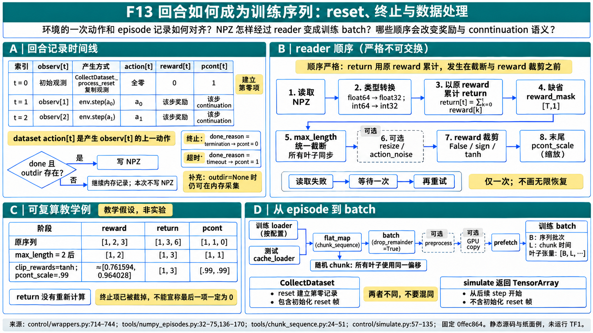
7fac42c1d2e4fc71a071d82bfd91cd4e81c5f000b3ad751df337b038855c054e图 F13 全部细节说明：回合如何成为训练序列：reset、终止与数据处理
F13 回合数据的时间语义：从 reset 到训练 batch
本节逐项解释当前任务新生成的 F13 图，从回合记录、reader顺序、教学数值和batch链路阅读实际节点与箭头。本任务只静态读取固定源码并作纸面计算，没有采集环境回合或执行训练。
问题与读图路线
数据加载的顺序会改变算法含义，即使所有张量形状都合法。本图从环境回合记录开始，沿 reader 的处理顺序走到训练 batch，再用一组奖励示例检查累计回报、裁剪和 continuation。输入是环境产生的真实观测、动作、奖励与 done；输出是供 RSSM 读取的有时间对齐的序列。这里的 episode 记录、simulate 返回值和模型 rollout 是三个不同容器。
A：reset 第零项和动作对齐
CollectDataset._process_reset 先把观测转为字典并复制，随后放入全零动作、零奖励和 pcont=1，作为 episode 第零项。这个记录没有真实的上一动作，只是为了统一数据结构。后续 _process_step 复制本步观测，附上产生这张观测的动作和环境返回奖励，再追加到回合。因此 data.action[t] 表示把前一状态推进到当前 observation[t] 的动作，不能把它理解为读取当前图像后才选择的下一动作。
未结束时 pcont=1；done_reason=termination 时为零，timeout 时为一。真正任务终止与时长上限在这里具有不同监督语义。episode 只有在 done 且 outdir 存在时写为 NPZ；outdir=None 时仍可在内存记录，不能声称保存了文件。图中的保存箭头必须带条件，不能把每次 step 都画成一次完整回合写盘。
B：reader 的有序变换
episode_reader 从 NPZ 读取，float64 转 float32、int64 转 int32，然后用原始 reward 的累计和写 return；缺少 reward_mask 时建立 ones_like(reward)[...,None]。接着对所有字段统一 max_length 截断，才执行可选图像缩放、动作扰动和奖励裁剪，最后缩放 pcont。奖励裁剪只接受 False、sign 或 tanh，其他值抛出异常。
这个顺序解释了为什么 return 和最终 reward 不一定满足“重新累计”的关系：return 已在裁剪前计算，后续只截断，不重算。图中每根蓝线代表实际处理顺序，不能为排版方便交换累计和与裁剪。读取失败时源码只捕获一次 IOError/ValueError，等待后再读取一次；第二次没有同层保护，不应画成无限重试或无条件成功。
C：一组可以手算的数据
教学假设原 reward=[1,2,3]，max_length=2，clip_rewards=tanh。reader 先算原累计 return=[1,3,6]，截断后 return=[1,3]；最终 reward 则近似为 [0.761594,0.964028]。若按最终奖励重新累计会得到另一组数字，但代码没有执行该重算。图应并排显示原奖励、原累计、截断结果与裁剪奖励，让读者看到二者为什么不同。
再设原 pcont=[1,1,0]、pcont_scale=.99，同样截断到二项后变成 [.99,.99]。原终止标志在第三项，已经被截去，因此不能断言每个 sampled chunk 的末端一定是终止。这里的数值是标准数学纸面核算，不是环境样本、模型预测或论文结果；它验证的是处理顺序的推论。
D：从完整 episode 到相同轴的 batch
训练 loader 按配置选择，测试 loader 使用 cache_loader；两者随后都经 flat_map 展开 chunk_sequence，再 batch 且 drop_remainder=True，随后可选 preprocess、GPU copy 和 prefetch。B 是训练序列批次，L 是每条 chunk 时间长度。随机起点偏移对同一个嵌套结构的所有字段一致，动作、图像、reward 和 mask 必须切在同一时间片上。
nested 的字典键排序与结构重建保证各叶子位置一致，不应把不同字段独立随机切块。数据 reader 的设备预取只改变传输与准备，不应画成新监督目标。观察不到真实状态的控制算法依然可以在数据文件中保留诊断字段，是否影响共享表示由后面的 head 与梯度配置决定。
状态生命周期与失败例
CollectDataset 的 reset 第零记录不同于 simulate 的返回 TensorArray：simulate 初次 env.reset 只用来构造循环初值与形状，返回 transition 从后续 env.step 才开始写。把两个容器的长度混为一谈，会让动作与图像错一位。类似地，time limit 与 termination 若被统一设 pcont=0，会教模型把时间上限当成物理死亡；这是数据语义变化，不是普通格式调整。
本图的白底细蓝框承载数据、处理和条件；灰色虚线框标可选处理，浅黄条标时间、终止或读图边界。深青标题区分A、B、C、D，颜色不代表程序已经运行。核心源码为 dreamer/control/wrappers.py:714-744、dreamer/tools/numpy_episodes.py:32-75,136-170、dreamer/tools/chunk_sequence.py:24-51 与 dreamer/control/simulate.py:57-135。固定提交0ffec864的静态阅读足以确定顺序，却不能证明实际文件读取、任务回报或训练稳定性。
为什么数据顺序会成为静默错误
一个最小失败输入是把同一episode的image从位置一开始切，而action仍从位置零开始；两者长度和dtype都可能合法，却教RSSM用错误动作解释当前观测。另一个例子是把裁剪后的reward当成return的来源，得到看似更平滑的累计量，却与文件中已有return不一致。因此图中各字段必须用同一个切片偏移，累计、截断、裁剪的箭头不能交换。检查批次末尾是否终止时，还需知道它是完整episode还是中间chunk；任何只看最后一个pcont的判断都缺少这一条件。数据接口一致性是静态源码能检验的逻辑，实际磁盘损坏与环境异常仍需运行证据。
A 的表格与保存条件怎样对应源码
A 区的三行分别是 t=0、t=1、t=2。第零行的初始观测由 CollectDataset._process_reset 复制，action全零、reward为零、pcont为一；旁边“建立第零项”只说明记录容器的约定。后两行分别来自 env.step(a0) 和 env.step(a1)，所以 action[1]=a0，action[2]=a1。每一行的reward和continuation来自产生当前观测的这次环境步。黄色长条把这个时间语义写成“dataset action[t] 是产生 observ[t] 的上一动作”，它不是说模型已经选择了未来动作。
右侧两张终止语义卡分别说明 termination 和 timeout：前者把pcont置零，后者保留一；没有结束时也保留一。下方的单个菱形同时检查 done 和 outdir；“是”箭头进入写NPZ，“否”箭头进入继续内存记录、本次不写NPZ。outdir存在在这里指该输出配置为非空，源码检查的是self._outdir的真值，没有增加一次os.path.exists条件。这个判断只控制写盘，不修改outdir；done为假也不能推出outdir=None。旁边单独的outdir=None说明只补充“没有输出目录配置仍能内存采集”，与否分支的所有情况不同。
B 的八步和读取失败分支
从读取NPZ依次到类型转换、原奖励累计return、缺省reward_mask、统一max_length截断、可选resize/action_noise、reward裁剪、末尾pcont_scale，七条蓝色箭头表示真实执行顺序。类型转换的两个方向是float64到float32、int64到int32，不能互换成提高精度。累计框的式子return[t]等于从k=0到t的reward[k]之和，reward来自裁剪前的原数组；缺省mask的[T,1]中T是整段读入回合长度。max_length对所有叶子同步切片，后面的resize与动作扰动由配置决定，虚线边框只表示这个可选条件。
奖励裁剪卡列出False、sign、tanh三个合法选项，其中False保留原奖励；它们不是依次执行的三个操作。pcont_scale在末尾另乘系数，与奖励裁剪作用于不同字段。下方读取失败到等待一次再到再重试的两根箭头表示一次恢复机会，图中没有返回起点的循环。源码只在第一次打开NPZ时捕获IOError或ValueError，等待一秒后再读；第二次失败会向外传播。因此“只等待一次”不等于读取必定成功，也不能从该分支推断文件系统实际已验证。
C 的每一列与终止项消失的原因
C 区三列数据分别是reward、return与pcont，三行分别是原序列、max_length=2之后、tanh与scale=.99之后。初始reward为[1,2,3]，累计return为[1,3,6]；统一截断取前两项，得到reward[1,2]、return[1,3]、pcont[1,1]。随后tanh只改变reward，分别约为0.761594与0.964028；return仍是[1,3]。pcont乘.99后成为[.99,.99]，原来的第三项零已经被截去，后续缩放不会把它恢复。
两个黄色边界提示分别指出教学假设并非论文实验，以及不能宣称最后一项一定为零。这里的“终止项消失”只描述这一组给定输入经过截断的结果，不表示所有真实数据都丢失终止监督。把[0.761594,0.964028]重新累加会得到另一列数，但这正是reader没有做的操作；图中的三列不能混算。所有小数均可用标准数学核算，不能作为一次TF1运行观察。
D 的合流、可选设备步骤与两个容器
D 区的训练loader和测试cache_loader各有一条箭头汇入flat_map(chunk_sequence)，说明两种加载入口后面共享切块和组批流程。flat_map下面的随机chunk说明框对应chunk_sequence的实际切片约束：同一个样本内的所有叶子使用同一个随机偏移，不能对图像与动作分别抽位置。随后batch的drop_remainder=True丢弃不足一个完整批次的剩余项；它影响批次形成，不是把每段episode的末尾都认定为终止。
蓝线再经过可选preprocess、可选GPU copy和prefetch到训练batch。两个可选框均为灰色虚线，旁边的可选标签明确它们由配置控制；prefetch准备后续数据，GPU copy调整传输设备，都不产生新的奖励监督。batch框中的B是序列批次，L是每条chunk时间，叶子张量的通用前缀是[B,L,...]，具体尾部由图像、动作或标量字段决定。
最下方两个并列容器没有互相传数据：CollectDataset保留reset建立的第零记录，simulate返回的TensorArray从后续step才开始，不含初始化reset帧。中间“两者不同，不要混同”提示的是容器语义。图底列出wrappers、numpy_episodes、chunk_sequence、simulate四个源码位置和固定提交0ffec864，限定整张图的静态证据范围。它解释输入输出与时间对齐，不声称任何环境回报、训练质量或硬件吞吐。
网络与分布：输出 shape、采样和梯度的实现细节
本节回答图像如何变为特征、特征如何变为概率分布，以及样本如何传递梯度。先看 encoder/head 的轴和事件维，再看连续 tanh-normal 与离散 one-hot；不能把分布的参数、样本、mode 和标准差仅按函数名混为一谈。
1. 模块职责与调用路径
configs._model_components 把 encoder/head factory 绑定到 data shape；define_model 用 dummy feature 先初始化变量；训练 objective 读取 distribution 的 mode/mean/log_prob/sample，planner 读取 action distribution 的 sample/mode。网络层只负责参数化，不决定 loss reduction。
2. feed_forward 的 shape 与分支
输入 feature 的前缀轴（典型 [B,T,F]）保持不动，dense 在展平的最后一维产生 prod(data_shape)，再 reshape 成 features前缀 + data_shape。stop_gradient=True 仅包住输入 hidden；dense 的 trainable 默认仍为 True。learned std 由独立 dense 产生，先加 log(exp(init_std)-1)，再 softplus 并加 min_std，保证正值。
分布选择：normal/deterministic/binary/trunc_normal 都用 Independent(..., len(data_shape))；tanh_normal 走 TanhNormal；tanh_normal_tanh 先 mean=5*tanh(mean/5) 再变换；onehot_score/straight 进入自定义 OneHot；未知字符串抛 NotImplementedError。
源码证据：dreamer/networks/basic.py:27-70（feed_forward，commit 0ffec86436239d41cecaff34abcf57dca5539839，SHA-256 cb03e7d9f0e5023c8513a580cda080ef7aaa90051f20293bdae0b40477e5e4a5）。
3. 卷积与 proprio encoder
conv encoder 先把 batch/time 展平，四层 stride=2、kernel=4、ReLU，通道 32→64→128→256，flatten 后硬断言宽度为 1024，再还原 [B,T,1024]。decoder 先 dense 1024，reshape [−1,1,1,1024]，反卷积通道 128/64/32、kernel 5/5/6，最后 stride=2/kernel=6 输出 data_shape[-1] 通道，断言空间 shape 等于目标，返回 Independent(Normal(mean,std), len(data_shape))；std 默认为 1，不由 decoder 预测。proprio encoder 排除 image 后拼接指定 keys，三层 300-unit dense（默认），还原 batch/time 前缀。
4. OneHot：前向 one-hot、反向两种梯度
底层是 Categorical。log_prob 先对事件最后一轴 argmax 成 index。sample 不带 amount 时没有额外样本轴，带 amount 时把该 amount 传给 Categorical 并 one-hot。score 分支将 one-hot 乘 exp(logp-stop_gradient(logp))，前向数值仍是 one-hot，梯度提供 score-function；straight 分支加 probs-stop_gradient(probs)，前向仍 one-hot、反向对所有类别概率保留梯度。未知 gradient 抛异常。
纸面三类概率 [0.2,0.5,0.3] 若抽到 class=1，前向事件是 [0,1,0]；score 的乘数数值为 1，straight 的加法数值为 0，但二者反向估计不同。不能把 straight 解释为真的连续动作。
源码证据：dreamer/distributions/one_hot.py:23-67（OneHot，commit 0ffec86436239d41cecaff34abcf57dca5539839，SHA-256 29b934ee59bbfacc9a33506dd1f0a0ac36167ba10a3076c96dd3eb4ecc0b5ba0）。
5. TanhNormal：统计量是采样估计而非解析值
底层 Normal 经 TanhBijector 和 Independent(...,1)。mean 重新抽 samples=100 个样本再求均值；stddev 抽样、减样本均值后求 mean(square)，源码没有 sqrt，所以这个属性返回的是样本方差估计；mode 抽样后按 log_prob 最高样本选择，并非 tanh(base_mean)。entropy 也是抽样估计。bijector inverse 只对 abs(y)<=1 的项 clip 到 ±0.99999997，超出范围保留原值后直接 atanh，可能产生非有限值；forward log-det 是 2*(log(2)-x-softplus(-2x))。
边界例：若传 y=1.2，条件选择原值 1.2，atanh(1.2) 在实数域无定义；precision 并不是“所有输入都强制裁剪”的保证。stddev 的返回值若为 0.04，不能直接称标准差 0.04，源码含义是方差估计。
概率输出的参数、事件轴与失败条件
理解一个预测头，需要分别追踪输入梯度、变量是否可训练、标准差的参数化和事件轴。stop_gradient截断特征的上游梯度，trainable决定网络变量是否参与训练，两者控制不同对象；可学习标准差由网络参数产生，固定标准差则没有对应学习参数。normal与tanh_normal_tanh用独立事件维聚合动作坐标的概率，未知分布名明确抛错。只读均值张量会遗漏这些训练和概率语义。
- conv decoder 的 std=1.0 是固定观测噪声；把它当 learned std 会错误增加参数。
- tanh_normal_tanh 的 5 是均值压缩尺度，不是 tanh 输出范围；输出范围仍由 bijector 决定。
- OneHot 的 argmax 输入必须是最后一轴 one-hot-like 事件；把 logits 直接当事件会改变 log_prob。
网络与分布的接口不变量与反例
图像分辨率和通道与 encoder 静态断言、Flatten 的1024维以及 decoder 的 data_shape 一起定义观测接口。输出概率分布还必须分别解释 mode、mean、log_prob、sample 与事件轴，不能只核对网络最后一层。
learned std 的 init_std 先经 inverse-softplus 变成偏置，再 softplus 并加 min_std，因此初始参数与最终尺度不同。未知 dist 会抛 NotImplementedError，不能默认退成普通高斯。
动作分布同时由 planner.sample/mode、MPCAgent 的裁剪以及 log_prob/entropy 消费。OneHot 的 straight 模式提供概率的直通反向梯度，score 模式使用采样得分修正，前向类型相同不能证明梯度语义相同。
8. 公式索引与逐步验算
- learned std：
std=softplus(raw+log(exp(init_std)-1))+min_std，先用逆 softplus 让初值接近 init_std，再加正下界。 tanh_normal_tanh的均值先做5·tanh(mean/5)；例如 raw mean=10 时压缩值约 4.82，之后 TanhNormal 仍会将动作限制到 (-1,1)。- OneHot score/straight 两分支前向相同但反向不同；不能只比较 sample 数值判断梯度等价。
9. 反例
TanhBijector inverse 对 y=1.2 不会自动改成 0.99999997，因为源码只在 abs(y)≤1 时进入 clip；超范围值会继续 atanh，可能是 NaN/非有限。
10. 实现细节：mean activation、OneHot 统计量与错误路径
feed_forward 的 mean dense 先应用 mean_activation，再 reshape 到
features 的前缀轴加 data_shape。普通 normal 直接把这个 mean 交给
tfd.Normal；tanh_normal_tanh 则在同一个 mean 上额外执行
5*tanh(mean/5)，再交给 TanhNormal。它不是把 stddev 或 hidden 重新计算一遍，
所以 mean_activation 的作用点仍在 mean dense，5 的压缩是后续分支。
onehot_score/straight 不从 data_shape 另造 logits：mean dense 输出张量本身
作为 OneHot 的 logits，最后一轴就是类别轴，类别数等于
probs_parameter().shape[-1]。例如 data_shape=[3] 时最后一轴三类；若给出
多维 data_shape，OneHot 仍以最后一轴类别数工作，不能把所有 data_shape 乘积
误当成一个事件类别数。
OneHot 的统计量有几个容易误读的边界。prob 和 log_prob 都先对事件最后
一轴做 argmax，再调用底层 Categorical；mean 是类别概率向量，mode 是
Categorical.mode 的 one-hot。stddev 不是逐类 Bernoulli 标准差，而是构造每个
one-hot 类别点与概率均值的距离平方和，再开方，因此返回形状沿类别轴广播。
sample(amount=K) 会把 [K] 作为 Categorical 的额外 sample 轴，one-hot 后该
样本轴出现在原 batch 轴之前。
TanhNormal 的 mode 也不是 tanh(base_mean)：它独立抽取 100 个样本，沿样本轴
取 log_prob 最大者。实现用 one_hot(argmax(logprobs, axis=0), depth=100,
axis=0) 生成 mask，再加 [...,None] 广播到 event 轴并沿样本轴求和；entropy
则是样本轴上的负 log_prob 平均。这些轴顺序决定了多维 action 的选择结果。
分支错误也有不同类型：未知 distribution 字符串在 feed_forward 的分支末尾
抛 NotImplementedError；未知 activation 名称先索引 configs.ACTIVATIONS，
因此是字典查找错误（KeyError），不能把两种错误合并成同一个错误契约。
这里还需要核对的计算与来源定位
前述的 learned std、卷积 encoder/decoder、OneHot 梯度和 TanhBijector 边界保留；
这里还需要核对 mean_activation 的时机、OneHot logits/类别轴、prob/mean/mode/stddev
的真实统计量、TanhNormal mode 的 mask 广播和未知 activation/dist 的不同异常。
证据为 dreamer/networks/basic.py:27-70、dreamer/distributions/one_hot.py:23-67、
dreamer/distributions/tanh_normal.py:24-58、dreamer/scripts/configs.py:31-38。
10.1 具体统计量与形状检验
对 feature [B,T,F]，num_layers 层的 hidden 保留 [B,T,units]；data_shape=
[D1,D2] 时 mean 与 learned std 都是 [B,T,D1,D2]，normal 的 log_prob
把 D1,D2 两轴都当作 event 而返回 [B,T]。data_shape=[] 时 Independent 的
reinterpreted_batch_ndims=0，不提升事件轴。mean_activation=tanh 时，mean dense
已在 [-1,1]；若再选 tanh_normal_tanh，分支仍会执行 5*tanh(mean/5)，不能声称
mean_activation 在这个分支被忽略。
OneHot 概率为 [.2,.5,.3] 时，mean 就是该向量，mode 是 [0,1,0]；事件
[0,1,0] 的 prob=.5、log_prob=log(.5)。stddev 的三项距离平方分别为
.98、.38、.78，开方约为 [.98995,.61644,.88318]；这是类别点到均值的
距离，并非 sqrt(p*(1-p))。若输入“事件”为 logits [2,1,0]，argmax 会把它
解释成类别 0，说明 prob/log_prob 接口不负责识别 logits 与 one-hot 的语义错误。
sample(amount=4) 在批 shape [B,T] 前加样本轴，得到 [4,B,T,3]；它不会在
类别轴之后加 K。
TanhNormal 的 100 个样本在最前面，假设 batch 为 2、action 维为 3，samples
是 [100,2,3]，logprobs 是 [100,2]。每个 batch 各选一个最大 log_prob 的
样本，one-hot mask 为 [100,2]，扩为 [100,2,1] 后同一 mask 选择完整三维
action。若误按 action 的每一维分别 argmax，会拼出从未共同采样过的动作，这与
源码的 mode 不同。entropy 的均值也只沿最前样本轴归约，批轴不会一起平均。
网络与分布 API
feed_forward(features,data_shape,...)->tfp.Distribution：支持normal,deterministic,binary,trunc_normal,tanh_normal,tanh_normal_tanh,onehot_score,onehot_straight。conv.encoder(obs)->[B,T,1024]；conv.decoder(features,data_shape,std)->Independent Normal。proprio.encoder(obs,keys,num_layers,units,activation)->[B,T,units]。OneHot(logits=None,probs=None,gradient='score')：.prob/.log_prob/.mean/.stddev/.mode/.sample(amount=None)；_num_classes来自 mean 最后一维静态 shape。TanhNormal(mean,std,samples=100)：.mean/.stddev/.mode/.entropy是 Monte Carlo estimates；其余属性代理底层 transformed distribution。TanhBijector：forward tanh，inverse clipped atanh，log-det2*(log2-x-softplus(-2x))。
例：learned std
给定 init_std=5，feed_forward 计算 log(exp(5)-1) 作为 bias；dense 输出 0 时 softplus 恢复约 5，再加 min_std。因此 init_std 是初始化目标，不是直接 bias。
关键函数的完整行为
feed_forward 在 dense 栈之前，只对 hidden=features 应用 stop_gradient。hidden、mean 和 learned-std 的每层 dense 都接收 trainable 参数，默认 True；因此输入表征被切断并不会冻结 head。均值输出单元数是 prod(data_shape)，输出再重排为 tools.shape(features)[:-1]+data_shape。来源：basic.py:27–44，shape.py:22–27。
OneHot.sample(amount=None) 在 amount 为真时构造采样形状 [amount]，否则使用空形状，先交给 categorical.sample，再把索引转成 one-hot。因此正整数 N 增加长度 N 的最前采样轴，不传 amount 则没有额外采样轴。log_prob 沿最后事件轴 argmax 还原 categorical 索引。score 分支乘 exp(logp-stop_gradient(logp))，straight-through 分支加 probs-stop_gradient(probs)；前向都是 one-hot，反向估计器不同。来源：one_hot.py:41–43,56–67。
TanhNormal.mode 抽取 self._samples 个样本，计算经过变换分布的各样本 log_prob，沿采样轴 0 argmax，以 one-hot mask 选中最高 log_prob 样本，再沿采样轴求和。stddev 会另抽一批独立样本，以保留维度的均值计算 reduce_mean((samples-mean)^2,0)，但没有开平方。所以此实现名叫 stddev，实际返回方差估计，不能把它写成解析标准差。来源：tanh_normal.py:44–53。
TanhBijector._inverse 用 precision=0.99999997 和 abs(y)<=1 判断哪些合法边界值需要裁剪；若 abs(y)>1，反而保留原输入，随后才调用 atanh。它保护合法边界免于无穷值，不负责清洗区间外的非法输入；后者仍可能产生非有限值。源码中的 stop-gradient 修正只是注释，不能算真实执行。来源：tanh_normal.py:72–78。
网络与分布架构
图像输入 [B,T,H,W,C] 先合并 B×T，经四层卷积变成 1024 维，再恢复 [B,T,E]。本体状态输入 [B,T,D] 拼接字段、经 L 层 dense 后成为 [B,T,U]。feature [B,T,F] 经 dense 生成 mean/std，由 TFP 分布适配器返回 Normal、Bernoulli、Truncated、TanhNormal 或 OneHot 对象；损失或采样由调用者选择分布接口。
Head 只返回 distribution，不在本模块计算 loss；调用者选择 mean, mode, sample, log_prob。Independent 把 data_shape 的所有维度当 event 维，保证 log_prob 对 action/image 返回 [B,T]。
网络与分布设计链
网络调用链是：包装后的观测 → encoder → RSSM embedding/feature → feed_forward heads → 分布 API → objective、planner 或 summary。head 的返回值是分布对象，不能把它等同于单一均值张量。
图像 head 在 define_model 以 data_shape 初始化；CPC head 的 data_shape 是 cell.feature_size，action head data_shape 来自 data['action']。OneHot 的 categorical class count 必须静态可用，TanhNormal 的 event dimension 固定为 1（Independent(...,1)）。
按源码检查的关键不变量
- conv encoder static shape assert 与四层 conv/decoder 对称路径。
- feed_forward 分支都返回 distribution。
- TanhNormal samples=100 被 mean/mode/entropy 共用。
- OneHot sample 两 gradient branches。
- TanhBijector inverse precision 常量。
网络与分布设计决策
四层卷积如何得到1024维图像编码
编码器的四层卷积均使用默认 VALID padding、stride=2、kernel=4，空间宽度依次为 64→31→14→6→2，故末层 2×2×256=1024，满足静态断言。decoder 从 1×1×1024 开始，用转置卷积 kernel 5/5/6/6 恢复到 64×64。改变图像尺寸时必须重新核算编码和解码两端，而不是只改一个 reshape。
预测头为什么返回概率分布
head 返回 TFP distribution，使相同网络可用于 log_prob loss、mode planner、sample exploration；调用者无需重复实现 Normal/Bernoulli/tanh 的统计。
动作分布的统计量为什么需要采样
TFP transformed distribution 对 tanh Normal 的 mean/mode/entropy 不总有闭式实现，代码固定采样 100 个样本估计。提高精度会增加图开销；降低会增加 planner/test 方差。
独热采样的两种梯度有何区别
score 模式是 DiCE 风格 log-prob correction，straight 模式把 sample 的前向 one-hot 与 probs 的反向梯度结合。两者都保持离散动作前向值，但优化信号不同。
反双曲正切如何处理动作边界
0.99999997 将边界拉回有限 atanh 域，避免 action 接近 ±1 时 log_prob 为 NaN/Inf；改变它需同步数值稳定性测试。
从实现条件推到失败反例
- VALID stride-2 conv 得到 1024；decoder 以 1x1x1024 反卷积；静态 assert 约束输入尺寸；改分辨率必须同步两端。
- head 返回 distribution；调用者共享 log_prob/mode/sample；TFP 负责统计和 event reduction；返回 raw mean 会让每个 caller 重复概率逻辑。
- TanhNormal 采样 100 次估计统计；transformed distribution 的闭式接口不依赖；样本数改变方差/开销；planner 与 entropy 都会受影响。
- OneHot 提供 score/straight 两分支；前向均为 one-hot；反向估计器不同；仅替换 Categorical sample 不能保留两种训练语义。
- 反变换只把原本位于[-1,1]的输入裁到有限边界，再计算反双曲正切；超出这个原始范围的值不会被自动修复。常量太近1可能数值溢出，太小又会使边界估计偏移，因此还要与动作裁剪位置共同解释。
网络层把图像和 latent feature 转成分布对象，而不只是输出一个数值数组。编码器与解码器决定观测表示，前馈 head 决定 reward/value 的标量事件和动作事件的维度；连续动作的 tanh-normal 与离散动作的 one-hot 又有不同的采样、密度与梯度规则。阅读下文时要始终区分分布参数、一次样本、mode 和期望，不能因为它们形状相同就互换。
概率网络的职责、输入输出和边界
作用
本模块提供 image convolution encoder/decoder、proprioception MLP encoder、通用 feed-forward distribution head，以及 action 使用的 TanhNormal/OneHot adapters。所有函数遵循 [B,T,...] 输入，通常先 flatten batch/time 做 dense/conv，再按原始前两维 reshape 回去。configs._model_components 通过 tools.bind 组装这些 callable。
网络
conv.encoder(obs)：取obs['image']，reshape[-1,H,W,C]，四层 stride=2、kernel=4 的 channels 32/64/128/256 ReLU conv；要求 flatten 静态长度恰为 1024；reshape[B,T,1024]。conv.decoder(features,data_shape,std=1)：dense 1024 -> reshape 1x1x1024，四层 stride=2 transpose-conv 的 channels 为 128/64/32/data_shape[-1]、kernels 为 5/5/6/6；前三层 ReLU，输出层线性，形成data_shape的 Normal Independent distribution。proprio.encoder(obs,keys=None,num_layers=3,units=300,activation=relu)：默认选除 image 外所有 keys，concat 最后一维，MLP 后 reshape[B,T,units]。basic.feed_forward(features,data_shape,num_layers=2,activation=relu,mean_activation=None,stop_gradient=False,trainable=True,units=100,std=1,low=-1,high=1,dist='normal',min_std=1e-2,init_std=1)：生成 mean，optional learned std，再选择 distribution 类型。
分布与梯度
OneHot 包装 categorical：mode one-hot，sample 取 one-hot 后可选 score-function DiCE（sample *= exp(logp-stop_gradient(logp))）或 straight-through（sample += probs-stop_gradient(probs)）。log_prob/prob 将 one-hot argmax 成 categorical index。
TanhNormal 是 Normal 经自定义 TanhBijector 的 Independent distribution。mean/stddev/mode/entropy 都通过有限 samples 估计；inverse 将 |y| clip 到 0.99999997 后 atanh，避免无穷。feed_forward 的 tanh_normal_tanh 先将 mean 压缩为 5*tanh(mean/5)，再做 tanh transform。
默认配置
默认 image encoder/decoder 使用 conv；head MLP num_layers=3, units=400, activation=elu。action head 默认 tanh_normal_tanh、learned std、min_std=1e-4、init_std=5.0；discrete preset 切换 onehot_score。value/reward 默认 Normal，pcont Binary。
网络与分布的接口不变量与反例
图像分辨率和通道与 encoder 静态断言、Flatten 的1024维以及 decoder 的 data_shape 一起定义观测接口。输出概率分布还必须分别解释 mode、mean、log_prob、sample 与事件轴，不能只核对网络最后一层。
learned std 的 init_std 先经 inverse-softplus 变成偏置，再 softplus 并加 min_std，因此初始参数与最终尺度不同。未知 dist 会抛 NotImplementedError，不能默认退成普通高斯。
动作分布同时由 planner.sample/mode、MPCAgent 的裁剪以及 log_prob/entropy 消费。OneHot 的 straight 模式提供概率的直通反向梯度，score 模式使用采样得分修正，前向类型相同不能证明梯度语义相同。
源码确认的边界条件
这几种分布接口有四个必须按实现解释的细节。feed_forward 的 stop_gradient 只作用于 feature，dense 权重仍可训练。OneHot 的 amount 会增加采样轴，未知梯度模式会抛 NotImplementedError。TanhNormal.mode 从候选样本中选 log_prob 最大者，stddev 方法返回的却是未开平方的方差估计，不能仅按名字解释。TanhBijector 只裁剪合法区间内靠近边界的值；区间外输入可能产生非有限结果，注释掉的 stop-gradient 也不会执行。对应实现分别在 basic、one_hot 与 tanh_normal。
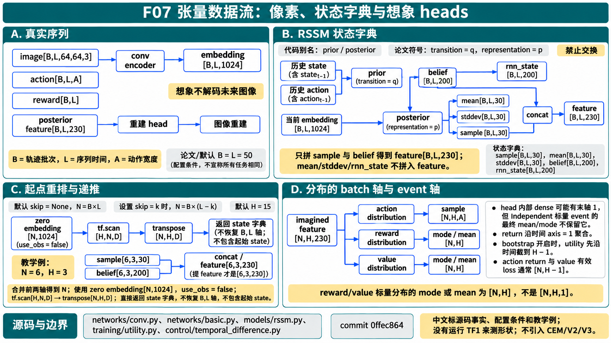
d42d0839ae8fefc8913f0f31828ecbae9a581efd9a04cbb94ad130feaf79f45b图 F07 全部细节说明：F07
F07 逐图中文详解：从像素到 imagined feature 的张量数据流
本节对应当前任务新生成的 F07-r42-034.png。按 A、B、C、D 阅读实际图中的输入、状态、重排与分布输出，并在各段展开图中简写的源码计算；所有数值形状均为固定源码的静态推导。
图的任务与事实边界
F07 专门回答“同一批数据怎样变成 DreamerV1 行为学习可以消费的 imagined feature”。它把像素、时间轴、RSSM 状态、展平后的起点和 head 输出放在一条数据流中，帮助读者把论文的符号与固定 commit 的张量形状对齐。图中蓝色实线表示前向张量或同一隐状态的传递。A、B、C、D 各自在区域内画出相关链路；梯度与可选控制路径的详细机制分别由 F06、F08 展开。顶部的 64×64×3、1024、30、200、230、N=B×L 和 H=15 都是可核对的维度或配置事实；B=50、L=50 被明确标为论文/配置中的教学默认，不能推广成所有环境的通用设置。底部“源码与边界”列出真实文件、固定提交、配置条件与教学例，并明确没有运行 TF1。论文/默认配置、源码接口和静态推导各有适用范围，不能把纸面形状写成运行观察。
A：真实交互序列的输入与重建支路
最左区域的 observation 图像框写成 [B,L,64,64,3]。B 是 episode 或 batch 维，L 是同一条真实序列的时间维；时间索引可写为 t=0,1,2,...,L-1，同一轴上的顺序保持不变。action 框写成 [B,L,A]，A 是动作维度，具体连续或离散由任务配置决定。A 区还列出 reward[B,L]，表示训练读取每个时间点的奖励监督。实际训练还要处理有效时间 mask 与 episode 边界；这些辅助字段不在本图中另画成新的图像来源。
灰色的 B=L=50 配置标签用于解释论文和当前配置的 batch shape。它不是从一次运行日志测出来的 GPU 事实，也不是 Dreamer 算法要求任何任务都固定为 50。标签中的“不宣称所有任务相同”提醒读者：实验 preset 有自己的适用范围，不能当作方法定理。真实交互序列在这里仍然有观测，后面的想象区域会显式关闭未来观测；这条分界是 F07 的主线。
A：编码器与图像重建为什么分成两条链
编码器把 batch/time 两轴临时合并，对每帧执行四层 kernel=4、stride=2 的 valid 卷积，通道数为32、64、128、256。空间尺寸依次从64变为31、14、6、2，因此最后是2×2×256，直接 Flatten 为1024，再恢复为 [B,L,1024]。这里没有额外 Dense(1024)，也不是4×4×256；这两个误写会改变参数量和维度解释。源码 networks/conv.py 的断言明确检查 flatten 后宽度为1024。
embedding [B,L,1024] 是 RSSM posterior 使用的视觉证据。A 区下方单独画 posterior feature[B,L,230]→重建 head→图像重建；重建 head 从 posterior feature 接收训练期的图像重建监督。上方的 embedding[B,L,1024] 在编码链末端停止，不能直接接 decoder。黄色注释强调 imagination 过程中不做像素重建。也就是说，encoder 和 image head 可以参与世界模型学习，但 prior-only rollout 不把 imagined state 再解码成一张图，也不把未来像素送回 posterior。把 image head 画成想象循环的一部分会错误地增加计算路径和显存含义。
B：RSSM 的字段、观测校正与 feature 拼接
RSSM 区域先把 previous state [z_{t-1},h_{t-1}] 和 previous action a_{t-1} 送入 transition，再由 GRU 更新 deterministic belief h_t，图中标出 h=200。belief 记录历史的确定性摘要，不能等同于完整环境状态。GRU 后分成 prior 和 posterior 两条支路：prior（论文 transition 记作 q） 不使用 embedding，只根据历史和动作预测；posterior（论文 representation 记作 p） 使用 encoder embedding 校正当前观测。二者的 stochastic sample 都是 z=30，但条件不同。
中部的 feature 框写作 [z_t,h_t] 和 30+200=230。固定代码的 features_from_state 消费 sample 与 belief 的拼接，而不是把均值、标准差或完整分布参数一并拼接。因此 action、reward、value heads 的输入是 230 维 compact feature。B 区列出真实序列的 posterior state 字段，C 区接着讨论这些字段怎样合并前两轴成为想象起点。真实观测在起点校正 posterior，未来想象沿 prior 继续推进；prior 不能被误读成另一个并行 encoder。
C：起点重排、零 embedding 与想象时间轴
C 区顶部用配置标签给出 N=B×L，底部黄色说明写出“合并前两轴得到 N”。被重排的是 posterior state 字典各叶子；对应 feature 宽度为230，但 feature 不是该函数直接返回的对象。这一步把每个 batch/time 切片变成独立的 rollout 起点，各 state 叶子形状为 [N,D]；只有提取 sample 与 belief 后才得到对应 feature [N,230]。它没有跨 episode 拼接 hidden state，也没有把数据压成一个无时间语义的向量。B=50、L=50 时，教学计算 N=2500，但这只是 shape 例子。
zero embedding [N,1024] 是满足 RSSM cell 输入签名的占位张量；它不是一批真实黑屏图像，也不经过 encoder。真正关闭观测校正的开关是 use_obs=false，因此 prior-only RSSM 不再调用 posterior embedding。tf.scan(back_prop=true) 沿 H 个 imagined step 复用同一 transition cell，保留跨时间的可微计算图；H=15 是当前连续控制默认想象 horizon。函数输出 state 字典，其叶子为 [N,H,D]；提取 feature 后为 [N,H,230]，不包含 initial state，也不自动恢复为 [B,L] 轴，这一点在黄色边界框中显式标出。
D：分布的 batch 轴、event 轴和有效时间长度
imagined feature [N,H,230] 进入 action head、reward head 和 value head。action head 输出每步动作分布，reward head 预测 imagined reward，value head 预测末端或中间状态价值；这些输出进一步形成 ，交给 policy objective 和 value objective。D 区从同一个 imagined feature 分出三条蓝线，分别到 action、reward、value distribution。动作样本保留事件维 A，奖励与价值的 mode/mean 则只有 [N,H]；三个 head 共享 latent feature。
F06 进一步解释行为优化器怎样固定 world model 参数并保留计算图可微；F07 的 D 区只追踪该计算产生的分布输出与时间形状。action gradient 可以穿过 RSSM transition 返回 action head；value target 则在相应代码中使用 stop-gradient。pcont、CPC、target head 各自依赖配置，在 F06、F08 中另行解释，不能从代码具有这些能力推断它们必然启用。CEM 没有出现在张量主线，因为 F07 关注 latent rollout 的数据形状，不描述可选在线 planner。
源码与边界：图中数字的来源和适用范围
论文层面的 RSSM、潜空间想象、策略与价值学习，为图中的机制提供背景。图底“源码与边界”绑定固定 commit 0ffec864，列出 networks/conv.py、networks/basic.py、models/rssm.py、training/utility.py、control/temporal_difference.py；它们分别承载编码/重建、分布 head、状态接口、想象/目标和 return 递推。[N,H,230]、不含 initial 等结论来自静态源码；B=L=50 另以配置标签限定。最右警示说明没有运行 TF1 来测形状，也没有引入 CEM 或 DreamerV2/V3。
把 F07 与 F03、F04、F05 联读可以得到完整形状链：F03 解释 RSSM 的 z=30、h=200，F04 解释 [N,H,230] 的 prior-only scan，F05 解释 imagined reward/value 如何变成 lambda-return。F07 本身不声称任何实验得分、吞吐或显存占用，也不把图像重建错误地放进梦境循环。这样读者既能沿箭头追踪每个轴的语义，又能知道哪些数字来自论文/配置、哪些来自固定代码、哪些尚未通过运行验证。
标量分布与教学形状
reward/value head 的 data_shape=[]，因此分布的 mean/mode 是 [N,H]，内部 dense 的尾部1会在 reshape 后消失；不能写成 [N,H,1]。动作分布保留事件维A，样本为 [N,H,A]。例如B=2、L=3、H=3时，起点N=6，sample叶子为[6,3,30]、belief为[6,3,200]，features_from_state后为[6,3,230]，reward/value预测为[6,3]。这些是源码与纸面形状推导，没有运行TF1。开启bootstrap后调用者沿时间轴切片，action return与value有效损失通常只有H−1项；要和函数返回H次状态转移分开理解。
B 的每条连接怎样读：共享状态与观测校正
B 区的历史 state 与历史 action 汇入 prior。prior 框概括历史转移，产生本步 belief；一条分支把它交给 posterior，另一条分支保留到 feature 拼接。当前 embedding 的蓝线也进入 posterior，所以观测校正同时依赖历史预测与当前视觉证据。posterior 向右输出 mean、stddev、sample 三个三十维字段，分别表示高斯均值、正标准差和抽取的随机状态。stddev 是标准差，不是方差；其中只有 sample 的线接到 concat，belief 的二百维线从上方接入同一个 concat，最终得到 [B,L,230]。图下方排除 mean/stddev/rnn_state 的黄色标签限制了这个拼接，不能因为这些字段都在 state 字典中就把它们全部并入 feature。
belief 与 rnn_state 连接表示当前 GRU 接口下同一个新隐状态的保存，不表示又执行一次 GRU 或多一个可学习层。Dreamer 的 RSSM 使用 GRUBlockCell，并把其两个返回量分别命名为 belief 和 rnn_state；TensorFlow v1.15.0 的 GRUBlockCell.call 明确返回 new_h, new_h。因此两字段的数值在这个接口下相同，字段角色仍有区别：belief 用于预测与 feature，rnn_state 作为下一步循环状态保存。posterior 保留 prior 的这两个字段，只用当前 embedding 重新计算随机分布。这个接口核对只读取了源文件，没有导入或执行 TensorFlow。
C 与 D 的贯穿形状例
把 A 的 B=2、L=3 代入 C，先得到 N=6 个起点。若配置 imagination_skip_last=k，会先从真实序列末端截去 k 个时间位置，再合并轴，所以 N=B×(L−k)；默认 None 保留全部起点。每个 state 叶子携带自己的 D，不能用 feature 宽度230替代所有叶子的宽度。C 中 sample[6,3,30] 与 belief[6,3,200] 两条线共同进入 concat/feature，得到 [6,3,230]，这里的第二个3是 H，不再是原来的真实序列 L。
C 的 zero embedding→tf.scan→transpose 展示占位输入与张量轴的变化；完整 scan 还以重排后的 state 为 initializer，并在每步由 policy 根据前一状态采样动作，真实递推详见 F04。scan 的原始叶子是 [H,N,D]，转置后为 [N,H,D]，函数返回的仍是字典。D 接着从其中提取 feature，动作 distribution 给出 [N,H,A] 的样本，reward/value distribution 的 mode 或 mean 为 [N,H]。dense 内部临时末轴1经过 reshape 后不再是最终分布输出维度，Independent 的 event 语义也不能凭 dense 输出猜测。
D 右侧的 axis=1、H−1 和有效 loss 说明调用者的后续处理：return 沿想象时间轴递推；启用 bootstrap 时，utility 先截取 reward/value/pcont，再从已截 value 取 bootstrap。该调用中的有效目标长度通常为 H−1，而 imagine_forward 本身仍产生 H 次状态转移。时间截断、字典返回与标量分布是三个不同的接口事实，把它们分开才能读懂相邻的 F04、F05 和 F06。图的蓝色箭头均用于各区前向计算；纯白节点、深青标题、灰色来源/配置标签与黄色边界提示沿用 F03 的风格，颜色不代表额外的网络或性能结论。
RSSM：确定性 belief 与随机 latent 的状态机
RSSM 同时维护确定性记忆和随机状态。以下按 state 字典、prior 转移、posterior 校正、use_obs 门控与调用者展开，重点说明什么会跨步保留、什么由当前图像改变，以及两次转移调用的随机样本为何可能不同。
1. 状态结构与入口
RSSM 继承 Base RNNCell。state 字典包含 mean/stddev/sample（宽度 S）和 belief/rnn_state（宽度 B）；feature 是最后一轴拼接 [sample, belief]，宽度 S+B。Base.zero_state(N) 对每个叶子建 [N,width] 全零，包括 stddev；Base.call 无条件先算 prior，再按标量 use_obs[0,0] 选择 posterior 或复用 prior，下一 recurrent state 是 posterior。
证据：dreamer/models/base.py:25-80（Base，commit 0ffec86436239d41cecaff34abcf57dca5539839，SHA-256 d53a11c1d47c73fbd6c5cede50a0ddeaa706cb36a5b1a600f72e2c0f4461f5bc）、dreamer/models/rssm.py:26-76（RSSM state/distribution/features，commit 0ffec86436239d41cecaff34abcf57dca5539839，SHA-256 3b37a963b7cca2c3bae0ba37c9a9f579d12cac8cd2af590234d17cb5a518c9ee）。
2. transition/posterior 的真实步骤
transition 先拼 prev_state.sample 与 prev_action，经过第一组 num_layers dense，再由 GRUBlockCell 读取 prev_state.rnn_state 得到 belief 和新 rnn_state。future_rnn=True 时以 belief 作为第二组 dense 的输入；False 时保留 GRU 前 hidden。两组 dense 后分别预测 mean、softplus stddev+min_stddev；mean_only=True 令 sample=mean，否则从 MultivariateNormalDiag 采样。
posterior 先用相同 prev_state/prev_action/zero_obs 调 transition 得到 prior，再拼 prior.belief 与真实 obs，经过 posterior dense 预测自己的 mean/stddev/sample；belief/rnn_state 直接复用 prior 的两项，不在 posterior 函数中再次运行 GRU。因此 posterior 的随机 latent 由观测修正，确定性记忆仍来自 transition。
证据：dreamer/models/rssm.py:78-120（_transition/_posterior，commit 0ffec86436239d41cecaff34abcf57dca5539839，SHA-256 3b37a963b7cca2c3bae0ba37c9a9f579d12cac8cd2af590234d17cb5a518c9ee）。
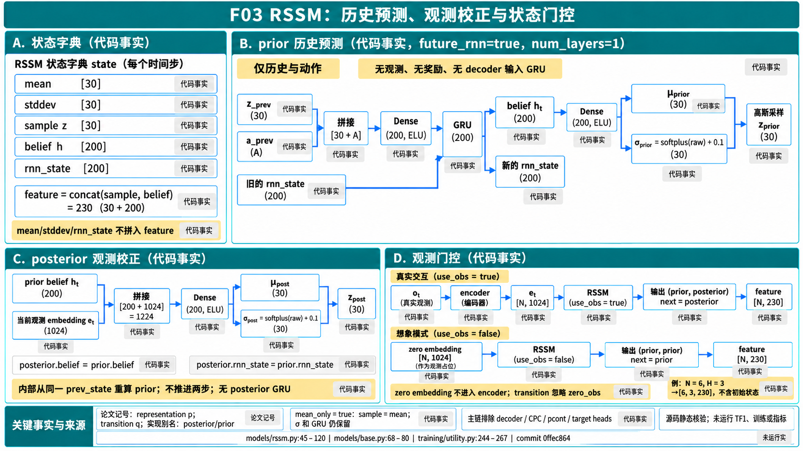
71e7803cd2ad1f2a90d4734b516e42ebe923db790de972c7c61265eea442d89b图 F03 全部细节说明：F03
F03 RSSM：完整中文细节说明
读者问题与阅读顺序：本图回答“RSSM 怎样把历史预测、当前观测校正和 prior-only imagination 连接起来”。先看 A 的状态字段，再按 B 的历史预测读到 prior，接着看 C 的 posterior 校正，最后看 D 的 use_obs 门控。每个白色矩形是一个有确定输入输出的代码节点，蓝色实线只表示数据流，黄色条表示边界说明。
A 状态字典与 feature：代码状态字典同时保留 mean、stddev、sample 三个随机状态字段，末轴宽度都是 30；belief 和 rnn_state 是确定性记忆字段，宽度都是 200。它们不是五个字段全部拼接。features_from_state 只沿末轴拼接 sample 与 belief，所以 feature 宽度是 30+200=230。图中黄色警示明确指出 mean、stddev、rnn_state 不进入 feature；这避免把分布参数误认成策略头输入。
B prior 历史预测的箭头：上一时刻随机 sample z_prev 与上一动作 a_prev 先拼接成 30+A，经过一层 200 单元 ELU dense，再与旧 rnn_state 一起送进 200 单元 GRU。GRU 同时产生新的 belief h_t 与新的 rnn_state。在图合同指定的 future_rnn=true、num_layers=1 配置下，belief 继续经过 200 单元 ELU dense，再分别得到 30 维均值 μ_prior 和 σ_prior=softplus(raw)+0.1，最后从对角高斯采样 z_prior。旧 rnn_state 的箭头只进入 GRU；没有观测、奖励或 decoder 进入这条 prior 链。
C posterior 的观测校正：posterior 函数内部从同一个 prev_state、prev_action 和零观测重新计算 prior；它不是把已经推进的 prior 再推进一步。随后把 prior belief（200）和当前 encoder embedding e_t（1024）拼成 1224 维，经过 200 单元 ELU dense，再产生 30 维 μ_post 与 σ_post=softplus(raw)+0.1，并采样 z_post。posterior 不再运行第二个 GRU，确定性字段由两个独立等式表达：posterior.belief = prior.belief、posterior.rnn_state = prior.rnn_state。当前观测只校正随机 latent，不重写 GRU 的历史记忆。
D use_obs 门控和真实/想象差异：真实交互中观测 o_t 先通过 encoder 得到 [N,1024] embedding，再以 use_obs=true 调 RSSM；输出包含 (prior,posterior)，下一状态选 posterior，随后 feature 为 [N,230]。想象 rollout 直接创建 [N,1024] 的 zero embedding 占位并以 use_obs=false 调 RSSM；输出是 (prior,prior)，下一状态选 prior，feature 仍是 [N,230]。这个 zero embedding 不进入 encoder，且 _transition 函数体不读取 zero_obs，所以不能把它画成像素输入。例子 N=6,H=3 只说明张量布局 [6,3,230]，输出不包含初始状态。
论文记号与实现别名：论文把 representation/posterior 写为 p(s_t|s_{t-1},a_{t-1},o_t)，transition/prior 写为 q(s_t|s_{t-1},a_{t-1})；图底部保留“representation p；transition q；代码别名 posterior/prior”，避免按别的变分论文习惯交换 p/q。mean_only=true 时 sample 直接等于 mean，但 σ 和 GRU 仍保留；这不是移除随机分布对象。
证据与边界：核心依据是 dreamer/models/rssm.py:45-120、dreamer/models/base.py:68-80、dreamer/training/utility.py:244-267，固定 commit 0ffec86436239d41cecaff34abcf57dca5539839。图是静态源码审计；没有运行 TF1、训练、环境或指标。decoder、CPC、pcont、target heads 不属于本图默认 RSSM 链。任何把 zero embedding 写成 [N,64,64,3]、把 posterior belief 当作重新运行 GRU、或把 sample=30 当成 trajectory 数量的读法都与来源不符。
确定性与随机性的分工：可以用“同一位置、不同运动方向”的小球理解两个状态部分。当前图像中小球的位置相同，但过去几帧的位置变化不同；循环记忆保存这种历史差异，随机变量则表达当前观测更新之后仍有的不确定性。图中的两个二百维字段不是两组相互独立的物理状态，而是实现为了满足循环单元接口而保留的字段。策略实际读取随机样本和信念向量的拼接，不能因为另外两个字段没有进入特征就删除它们：下一个时刻的循环计算还需要递归状态，概率分布和散度计算还需要均值与尺度。
一次真实观测怎样走过图：设六条轨迹同时来到当前时刻，每条轨迹已有上一动作和上一状态。先沿历史预测区把旧样本和旧动作合并，并让旧循环状态参与门控循环运算。此时得到的是尚未看见当前图像的预测。随后当前图像经过编码器得到一千零二十四维嵌入，它只在观测校正区与新的信念向量相接。融合结果改变后验的高斯统计量，因此得到的随机样本可能偏离先验样本；这正是“新信息修正预测”的含义。两个确定性字段继续从先验复制，后验字典作为下一次真实更新的记忆起点。
从真实起点分叉三步想象：把这六个真实后验字典当作六个想象起点，分别保留其所有状态字段。每一步先从当前特征选择动作，再在没有新图像的条件下进行先验转移；零嵌入只是调用接口需要的占位对象，不提供任何未来环境信息。三次递推之后，每个字段具有轨迹批次轴和想象时间轴。拼接样本与信念后得到六乘三乘二百三十的特征张量。初始真实后验仍然是递推的起点，但没有被额外拼入这三步返回结果；如果误把初始状态计入，后面的奖励、价值与动作时间对齐都会偏移一格。
为何不能把复制画成任意连线：后验信念来自先验信念，后验递归状态来自先验递归状态，两条关系分别有自己的来源和接收者。虽然当前循环单元常使这些输出存在紧密联系，代码仍然按不同字典键保存它们。把先验递归状态同时连接到两个后验字段，会把实际赋值语义改成另一个程序。因此本图用两条独立等式表达复制关系，避免跨区长线把观测校正、记忆更新和字段赋值混在一起。这也是读源码结构图时需要逐箭头检查的原因。
怎样理解尺度与采样：高斯尺度先经过正值变换，再加零点一，目的是保留一个最小尺度下界；它不同于把方差直接截断成零。均值决定分布的中心，尺度决定样本偏离中心的幅度，采样得到的向量才与信念拼接成特征。当选择只用均值的分支时，样本字段等于均值字段，计算仍然产生尺度和循环记忆。这个开关改变前向采样行为，不会把整个状态模型变成没有分布参数的普通编码器，也不意味着所有后续目标都能删去。
图中省略但不能误解的调用条件：观测门控图画的是全批次统一的真实或想象场景。固定实现会读取门控张量的首元素来决定分支，而非为每个批次样本分别选择路径；调试检查要求整个门控张量一致。真实序列的闭环读取、开环预测和行为想象可以使用同一单元，但给它的观测、动作、起始状态和门控安排不同。图中最小例子只展示行为想象的布局，不说明环境帧率、训练样本量、任务奖励或硬件吞吐。
与相关方法的联系：这张图解释的是世界模型状态更新接口。它本身不决定动作怎样优化：在线规划可以用这个接口评估候选动作，行为学习也可以用它展开可微轨迹。Dreamer 的后续动作和值学习依赖这个状态机，但动作优化目标不能从一个先验高斯节点单独推断出来。把状态预测能力与策略优化能力分开阅读，可以解释为什么共享类似状态模型的方法，仍可能采用不同的规划预算、价值估计和真实执行流程。
3. 分布、mask 与 KL
dist_from_state 构造对角高斯 MultivariateNormalDiag(mean,stddev)。提供 mask 时只把 stddev 的无效位置换成 1，mean 保持原值；divergence_from_states 计算 lhs/rhs 的 KL 后，再用 mask 把无效位置最终置 0。这样先改变分布尺度，再在 KL 结果上把无效位置清零；mean 始终不清零。若只做第一步而省略最终 mask，均值差异仍会留下 KL。
纸面单维例：lhs mean=2、rhs mean=0、std=1，KL 为 2；若 mask=False，stddev 两边都换成 1 且最终 divergence=0。若仅把 mean 乘 0 而不置最终 KL，会残留方差项。
4. use_obs 与时间布局
debug=True 时断言整个 use_obs 与 use_obs[0,0] 一致；实际控制流只取这个标量，不能期待逐 batch 样本独立走 posterior/prior。use_obs=False 时仍先构造 prior，再 tf.cond 直接返回 prior 作为 posterior；因此 imagined rollout 的零观测路径真实使用 transition。
5. 稳定事实与边界
RSSM的状态契约同时约束宽度、初值和消费者。zero_state必须提供完整字段；features_from_state严格按随机样本在前、确定性记忆在后拼接。分布采用对角高斯；掩码位置先把标准差替换为1以安全计算，再把相应KL输出置零，不能只在最后乘零并忽略中间的非法分布。
转移路径先经一组全连接层和GRU，再经第二组全连接层预测随机状态。future_rnn决定第二组层读取GRU记忆还是第一组层的输出，GRU在两个分支中都会计算。标准差经softplus加min_stddev；mean_only只改变取均值还是采样，两种分支都返回完整的均值、标准差、样本、记忆和循环状态。
观测校正先建立同一动作历史下的先验，再将先验记忆与图像编码向量结合，保留先验的belief/rnn_state。基类把use_obs收成单一谓词，先验始终构造；不使用观测时，后验返回先验本身。上述次序可回到dreamer/models/rssm.py:67-120与dreamer/models/base.py逐项核对。
修改 state_size 必须同步 feature_size、head data_shape、zero_state 与所有 concat；改 mean_only 不应删除 mean/stddev，因为下游 distribution 与 KL 仍使用它们。本文只做静态推导，没有运行 TF1 graph。
6. 公式索引与逐步验算
- feature 维：
feature_size=S+B；例如 state_size=5、belief_size=7，则 feature 最后一轴为 12。 - 对角高斯单维 KL（同方差1）为
0.5·(σ_l²/σ_r² +(μ_l-μ_r)²/σ_r² -1+2log(σ_r/σ_l))；μ差为2时 KL=2。mask=False 时最终 divergence 被置0。 mean_only=True只改变 sample 的取值；mean/stddev 仍返回，后续 dist/KL 仍可用。
7. 状态边界
use_obs 被标量化，因此 debug 断言是为了确保整个 batch/time 的分支一致；不能把它当成每个样本独立的 posterior gate。
12. 实现细节：状态 dtype、RNNCell 输出与随机字段参数
Base.zero_state(batch_size, dtype) 对 state_size 字典的每个叶子执行同一件事：建立形状为
[batch_size, width] 的 tf.zeros，并把调用者传入的 dtype 原样传给这个 Tensor。
因此，state_size=30、belief_size=200、batch_size=4 时，mean/stddev/sample
是 [4,30]，belief/rnn_state 是 [4,200]；题目若把 dtype 改成
tf.float64，形状不变而 dtype 也随之改成 tf.float64。零状态不会因为字段名
是 stddev 就使用另一种初始化规则。
RNNCell 的 output_size 是 (self.state_size, self.state_size)：它描述一次
call 返回的 (prior, posterior) 两个输出，每个输出都是同样的五字段状态字典。
这和递归用的下一状态不同；call 的第二个返回量是单个 posterior 状态字典，
use_obs=False 时它是单个 prior 字典。也就是说，外层 dynamic-rnn 看到的是
“两个状态输出 + 一个递归状态”，不能把整个二元组当成下一时刻状态。
state_size 只决定随机字段 mean/stddev/sample 的末轴宽度 S；构造函数的
embed_size=E 决定 transition 两段 dense 的 units。transition 的输入先把
prev_state.sample 与 action 拼成宽度 S+A，第一段得到宽度 E 的 hidden，
GRU 读取该 hidden 和旧 rnn_state（宽度 B），输出 belief 与新 rnn_state；
第二段仍是宽度 E 的 dense，最后两个 dense 分别产生宽度 S 的 mean 和
stddev。zero_obs 只是 transition 模板的参数位置，_transition 函数体没有
读取它，因此不会像 posterior 的真实 obs 那样改变 transition 的数值输入。
RSSM 的 min_stddev 默认是 0.1。RSSM 的随机字段使用
stddev = softplus(raw_stddev) + min_stddev，不是网络 feed_forward 中带
init_std 逆 softplus 偏置的另一套参数化。先验和后验各自产生 mean 与 stddev，
然后共同遵守 mean_only 分支：True 时 sample 直接取 mean，False 时从
MultivariateNormalDiag(mean, stddev) 采样；两种情况下 GRU、belief、rnn_state、
mean 和 stddev 都保留。
Base 构造时 _debug=False。默认路径只把 use_obs 替换成 use_obs[0,0]
并让它控制整批的 tf.cond；只有手动打开 debug 才会先断言所有 batch/time 的
use_obs 等于首元素。一个 batch 中混有 True/False 时，默认不会逐样本选择后验，
而是由首元素决定整批分支。
这里还需要核对的计算与来源定位
前述的状态结构、transition/posterior 和 use_obs 主链保持不变；这里还需要核对
zero_state 的 dtype 来源、双状态 output_size、embed_size 的 dense 宽度、
未读取的 zero_obs、min_stddev=0.1 与 _debug=False。证据为固定 commit 的
dreamer/models/base.py:45-80 和 dreamer/models/rssm.py:28-120。
12.1 形状、默认值和分支的最小检验
设 S=30、B=200、E=100、A=6、num_layers=2。sample 与 action 的拼接宽度为
36；第一段两个 dense 各宽 100，GRU 的输出 belief/rnn_state 各宽 200。
future_rnn=True 时第二段的首个 dense 输入宽 200，False 时输入宽 100；两条
路径都产生宽 30 的随机参数，且都执行过 GRU。修改 belief_size 不等于修改
embed_size，不能把两种隐藏宽度合并成一个“模型维度”。
raw_stddev=0 时，RSSM stddev 为 log(2)+.1≈.793147。把网络 head 的
inverse-softplus 初值公式挪入 RSSM 会改变该数值。mean_only=True 时 sample
变成 mean，但 stddev 仍是 .793147，仍供 KL 计算；删掉该字段会使后续
dist_from_state 无法构造分布。
一个混合 use_obs 的最小反例是 [[True],[False]]。默认 _debug=False 时两条
样本都由首元素 True 选择 posterior；开 debug 后在分支前因不一致而断言失败。
若首元素改为 False，输出二元组是 (prior,prior)，下一递归状态是 prior；
不能把返回的两个 prior 当成两个连续 transition。
RSSM 接口与状态契约
源码范围：dreamer/models/base.py（80 行）、dreamer/models/rssm.py（120 行）、dreamer/models/__init__.py（20 行）。以下是签名与行为摘要，不复制完整函数体。
Base
Base(transition_tpl, posterior_tpl, reuse=None)：保存两个 callable template，继承 TFRNNCell。state_size -> dict：抽象属性；RSSM 返回 5 字段。updates -> []、losses -> []：扩展点，RSSM 未覆盖。output_size -> (state_size, state_size)：TF dynamic RNN 输出/状态契约。zero_state(batch_size, dtype)：nested zero state。features_from_state(state)、dist_from_state(state, mask=None)：抽象。divergence_from_states(lhs, rhs, mask=None)：将 state 转分布，调用tfd.kl_divergence，可按 mask 置零。call(inputs, prev_state)：inputs=(obs, prev_action, use_obs)；返回((prior,posterior), selected_state)。
RSSM
RSSM 构造参数按位置为 state_size、belief_size、embed_size、future_rnn=True、mean_only=False、min_stddev=0.1、activation=ELU、num_layers=1。三个宽度各自属于随机状态、确定记忆与内部 dense；不能把 encoder 的 1024 维 embedding 与内部 embed_size 混为一谈。
state_size:{'mean':S,'stddev':S,'sample':S,'belief':H,'rnn_state':H}。feature_size:H+S。dist_from_state(state, mask=None): diagonal Gaussian；mask 时无效 stddev=1。features_from_state(state):tf.concat([sample, belief], -1)。divergence_from_states: RSSM 覆盖 Base 版本，但语义相同且显式支持 mask。_transition(prev_state, prev_action, zero_obs):sample⊕action -> dense^L -> GRU -> dense^L -> mean/stddev/sample。_posterior(prev_state, prev_action, obs): transition 得到 prior，再belief⊕obs -> dense^L -> mean/stddev/sample，保留 prior belief/rnn_state。
逐步数值例
设 S=2,H=3,E=4,A=1，某单步 prior 为 mean=[0.2,-0.1]、stddev=[0.5,0.7]、sample=[0.3,-0.2]、belief=[b1,b2,b3]。则 features 长度 5，RSSM posterior 只会用 prior belief 与 obs 重算 mean/stddev/sample，GRU state 不会被 obs 再次更新。mean_only=True 时 sample 精确等于 mean；否则 sample 是同一对角高斯的一次采样。
调用者/被调用者
调用者：tools.unroll.closed_loop/open_loop/planned、training.utility.imagine_forward、control.MPCAgent.step、tools.overshooting。被调用者：tools.nested.map/flatten、TF dense/GRU、TFP MultivariateNormalDiag。任何调用者都必须保持 state 字典字段完整。
后验计算为什么先调用先验
RSSM._posterior(prev_state,prev_action,obs) 首先调用 _transition_tpl(prev_state,prev_action,tf.zeros_like(obs)) 得到新的 prior；再拼 prior.belief 与 obs，经 posterior dense 栈计算 mean/stddev/sample，并把 prior 的 belief 与 rnn_state 复制到返回 posterior。transition 本身只消费前一 sample、前一 action 和前一 rnn_state，零观测参数仅用于统一签名，不在 transition 函数体中使用。来源：rssm.py:78–120。
RSSM 架构（中文）
组件关系
观测 obs ──encoder──> embedded ───────────────┐
│ use_obs=True
prev_state + prev_action ──transition─────────┼─> prior
│
prior.belief + embedded ──posterior───────────┼─> posterior
│
dynamic_rnn output = use_obs ? posterior : prior
│
sample ⊕ belief ───────────────> reward/value/action heads
Base 只定义门控、nested state 和 KL 接口；RSSM 定义 transition/posterior 的 MLP-GRU-高斯细节。tools.unroll.closed_loop 给每个时间步 use_obs=True，open_loop 前 context 步为真、之后全假；training.utility.imagine_forward 全程假，从 posterior 起点生成 prior-only imagination。
张量契约
| 名称 | 训练序列 | 单步/想象 | 说明 |
|---|---|---|---|
embedded |
[B,T,E] |
[B,E] |
encoder 输出；默认 conv E=1024，RSSM 内部 dense embed_size=200 是另一宽度 |
prev_action |
[B,T,A] |
[B,A] |
进入 transition；reset 时零动作 |
mean,stddev,sample |
[B,T,S] |
[B,S] |
stochastic state |
belief,rnn_state |
[B,T,H] |
[B,H] |
GRU state |
features |
[B,T,S+H] |
[B,S+H] |
sample 后接 belief |
state_size 属性是字典，output_size 是 (state_size,state_size)，以满足 TF RNNCell 的 (output,state) 约定。zero_state 对 nested 字典逐叶创建零张量。
时间对齐
CollectDataset 在 step 后把产生当前 observation[t] 的动作写入 action[t]；因此数据 action[t] 表示从前一状态推进到当前状态的上一动作。t=0 reset frame 的 action=0。closed-loop 输入 (embedded[t], action[t]) 经 Base.call 产生 posterior[t]。真实 agent.step 先用当前观测、保存的上一动作更新当前 posterior，再从该 state 取下一动作。想象先读取起点 feature 采样 action，再让 transition 前进一步；scan 不把初始状态写入返回序列。
RSSM 设计链与验证链
训练链
表示训练链是：回合图像/状态 → encoder → embedded[B,T,E] → closed_loop(use_obs=1) → prior/posterior → posterior feature → 重建、reward、pcont heads 与 KL → apply_optimizers。只有后验路径读取当前真实观测；KL 对齐看图像与不看图像的两种状态分布。
posterior 是训练重建和 divergence 的状态；prior 只在 KL 的另一侧以及 open-loop/overshooting 目标中使用。free_nats 在 objective 层截断 KL，不会改变 RSSM 的分布对象。
想象链
posterior[:, start] -> reshape B*T -> policy(features).sample() -> Base.call(use_obs=0) -> prior state -> repeat horizon -> reward/value heads -> lambda_return -> action/value objective。默认 stop_grad_pre_action=True，action loss 路径把 stop_grad_post_action=False，因此策略梯度可以穿过采样器/transition 到 action head，但 world-model loss 与 action/value loss 的切分由 optimizer include/exclude 决定。
状态接口的静态核对
- 源码字段与 features 拼接确认；需外部论文确认其理论命名。
_posterior的 prior belief/rnn_state 直接复用确认。- 两处 transition/posterior 都是 softplus 后加 0.1 的精确代码路径确认。
future_rnn唯一消费点为_transition的 hidden 替换确认。- debug assertion 与
use_obs[0,0]消费点确认。
修改 RSSM 后，先检查 state_size/feature_size，再检查 unroll 的 dynamic_rnn output 结构和所有 head 的最后一维；最后复核 imagined state 是否仍无观测输入。
RSSM 设计决策
每条“为什么”都绑定本模块的假设证据；外部论文核对留给 Phase 3.5。
确定性记忆与随机状态为什么分开
- 表层事实：
RSSM.state_size同时有belief/rnn_state与mean/stddev/sample；features 拼 sample 与 belief。 - 直接原因：GRU 累积历史，随机 state 表达无法由历史和动作确定的因素。
- 工程约束：若只保留 sample，RNN 的长程记忆和可重建观测的细节会耦合在单一随机量；若只保留 belief，无法计算 posterior/prior KL。
- 数学约束：对角高斯可直接计算 KL，
tfd.kl_divergence在每个 latent 维提供训练信号。 - 设计哲学：把可预测记忆与不确定性解耦，使 imagined transition 不需要观测也能递推。
观测校正为何复用先验记忆
_posterior 先调用 transition，然后只把 prior['belief'] 与 obs 送入 MLP；posterior 的 belief/rnn_state 原样来自 prior。这样观测修正 stochastic state，但 GRU 记忆只由上一 state/action 更新；否则同一时刻的 obs 会隐式二次更新 recurrent memory，破坏 prior/posterior 对齐。
标准差为何加上正的下限
softplus 保证正数，min_stddev=0.1 避免退化高斯和无穷 KL。改变该下限必须重新检查 free-nats=3 与 loss 尺度；它不是仅用于数值美化的常量。
随机状态预测何时读取循环记忆
GRU 输出 belief 后，默认 future_rnn=True 将 hidden 替换为 belief，再进入第二段 dense；关闭时保留第一段 dense hidden。这个开关只影响 stochastic parameter head 前的表征，不改变 state 字段或 posterior gate。
观测门控为什么必须在批内一致
Base 在 debug 下断言 use_obs 整批一致，然后只读第一个元素。TF tf.cond 需要单一谓词，而 dynamic RNN 的一个调用通常整段序列使用同一模式；想要时间内混合门控必须重构 API，不能只传不同的 batch 值。
从输入约束推到设计解释
下面从状态接口出发解释各项设计：先说明源码实际计算什么，再说明它满足的时间、概率和维度约束，最后给出改变接口后会发生的反例。设计理由属于受源码和论文支持的解释，不能把它写成作者已经证明的唯一选择。
确定性记忆与随机状态为什么分开：从接口推到反例
状态字典同时暴露belief与mean/stddev/sample。确定性记忆汇总历史，随机高斯状态表达当前不确定性；只有均值和正标准差时，对角高斯KL才有对应的逐维定义。保留记忆与随机变量两条路径，使先验想象既继承历史，又能采样不确定的后果。若直接删掉belief，不仅失去长程记忆，预测头的输入宽度与循环状态契约也一起改变；若只保留确定性记忆，当前高斯采样与KL接口又不再成立。
观测校正为何复用先验记忆：从接口推到反例
后验先调用转移，得到与当前动作历史对应的belief/rnn_state，再用图像编码校正随机状态。这样先验与后验共享同一循环条件，其KL比较才针对“增加当前观测之后改变了多少状态信息”。如果又把当前图像送入GRU推进一次记忆，就改变了这一提交的时间对齐；那是另一种状态模型，不能继续宣称与当前接口相同。
标准差为何加上正的下限：从接口推到反例
stddev=softplus(raw)+min_stddev约束的是分布尺度。对角高斯要求每一维尺度严格为正，零尺度会让正态密度与KL计算不稳定；可配置下限因而同时限制分布可收缩的程度和数值行为。只裁剪已经抽出的样本不会改变分布参数，不能修复零尺度造成的KL问题。
随机状态预测何时读取循环记忆：从接口推到反例
默认future_rnn=True时，第二组全连接层读取GRU汇总的belief；关闭时读取第一组全连接层的输出。两个分支都执行GRU并返回新的循环记忆，所以关闭开关并不把整个RSSM变成纯MLP。开关比较的是随机先验参数是否直接使用当前循环汇总；若把同名开关移到后验路径，又会改变观测校正，成为不同的计算。依据是dreamer/models/rssm.py:78-120中先计算GRU、再按开关替换hidden的实际顺序。
观测门控为什么必须在批内一致：从接口推到反例
在启用调试断言时，当前单步调用中的use_obs必须全部等于use_obs[0,0]；真正交给tf.cond的是这个标量。因而不能在同一次批状态更新中靠不同掩码让部分样本走先验、另一些走后验。仓库的开环与闭环工具为各段明确提供观测模式；若需要逐样本或逐时间混合，必须另行定义循环与门控接口。把不一致的批掩码直接传入当前接口会触发断言，不能实现所期待的部分观测机制。
RSSM 的核心问题是同一动作历史怎样先预测、再用当前观测校正随机状态。它负责 prior/posterior、KL 和 feature；encoder、reward/value head 与优化器属于消费者和训练装配层，不能全部画进 RSSM 内部。
RSSM 的完整状态与调用契约
作用与边界
本模块实现 Dreamer V1 的递归状态空间模型（RSSM）及其 Base RNNCell 契约。Base.call 同时计算不看当前观测的 transition prior 与可看观测的 posterior，并把 posterior 作为下一时刻的输出状态；RSSM 用 GRU belief 加对角高斯 stochastic state 表达 latent state。训练的 closed-loop 在 dreamer/tools/unroll.py 中调用这个 cell，想象 rollout 则把 use_obs=False，因此只走 transition prior。模块不负责 encoder、reward/value heads 或优化器。
心智模型与状态
state 是字典，五个字段均保持 [B,T,D] 或单步 [B,D]：mean/stddev/sample 的维度是 state_size，belief/rnn_state 的维度是 belief_size。features_from_state 沿最后维拼接 sample 与 belief，形状为 [..., state_size + belief_size]；默认 state_size=30、belief_size=model_size=200，所以 head 输入为 230。zero_state(B) 为每个字段构造全零 [B,D]。RSSM 的 embed_size=200 是内部 dense 宽度；默认 convolution encoder 送入 posterior 的 obs 宽度是 1024。
一步 Base.call((obs, prev_action, use_obs), prev_state) 的顺序是：
prior = _transition_tpl(prev_state, prev_action, zero_obs)；zero_obs只作为统一签名的占位，不被 RSSM transition 使用。- 将
use_obs[0,0]作为整批布尔门（debug 模式断言整个张量相同），tf.cond选择 posterior 或 prior。 - 返回
((prior, posterior), posterior)。因此 dynamic RNN 的 output 是 posterior，而在use_obs=False的想象阶段 output 是 prior。
RSSM._transition 先拼 [prev_state['sample'], prev_action]，经过 num_layers 个 tf.layers.dense(..., units=embed_size, activation)；GRUBlockCell 读入 rnn_state 得到 belief 和新 rnn_state。future_rnn=True 时把 belief 作为后续 dense 的输入，否则继续用上一层 hidden。最后生成 mean（线性）和 stddev（softplus 后加 min_stddev），mean_only=True 时 sample=mean，否则从 MultivariateNormalDiag 重参数化采样。posterior 先重复一次 transition 得到 prior belief/rnn_state，再拼 prior['belief'] 与 encoder obs，只更新 stochastic distribution；posterior 的 belief/rnn_state 与该 prior 对齐。
梯度和 KL 边界
dist_from_state创建tfd.MultivariateNormalDiag(mean, stddev)；若给mask，无效位置的 stddev 被替换为 1，KL 再被tools.mask置零。divergence_from_states(lhs,rhs)计算逐 latent 维/批时间 KL。utility.compute_objectives对 divergence 应用max(0, KL-free_nats)，默认free_nats=3.0，再由 model optimizer 反传；它不是在 RSSM 内部截断。imagine_forward默认stop_grad_pre_action=True，所以从 feature 产生 action 前切断来自此前 state 的梯度；action sample 默认在后续 cell 之前stop_grad_post_action=True（action loss 另显式关闭），RSSM transition 本身不会额外stop_gradient。
默认与可选配置
configs._model_components 实际消费：model_size=200、state_size=30、future_rnn=True、mean_only=False、min_stddev=0.1、activation='elu'、model_layers=1；debug preset 覆盖 model/state/units 为 10/5/1/10。RSSM 的构造参数顺序必须保持 (state_size, belief_size, embed_size, future_rnn, mean_only, min_stddev, activation, num_layers)，因为 config 通过 tools.bind 按位置绑定。Base.updates 与 losses 默认空列表，当前 RSSM 没有额外更新 op。
RSSM的接口不变量与反例
state_size、feature_size、features_from_state 与 Base.zero_state 的嵌套结构共同定义状态接口；所有head的输入必须与它们一致。
future_rnn改变transition中后续MLP是否读取GRU belief，不改变posterior必须使用prior belief的关系。min_stddev的正下限、mean_only的采样选择和divergence的KL接口分别限定分布行为。
Base.call的一次use_obs门控使用整个批次归约；混合真/假mask不等于逐行选择。真实序列、开环诊断与想象必须分别检查mask来源。
- 想象阶段不要把
use_obs误传为[B,T]的时间变化门：Base.call只读取[0,0]，debug 会拒绝非一致 batch。完整签名、字段和数值例子见 api-reference.md（此附件保存在完整本地归档中），设计证据见 design-decisions.md（此附件保存在完整本地归档中）。
已知限制
固定实现依赖 TF 1.x 的 tf.contrib.rnn.GRUBlockCell 与 TFP 0.6 API，且没有主动检查 NaN、无穷 stddev 或动作维度。posterior/prior 的调用顺序已经由固定源码定位；这个静态结论不能外推为数值稳定性、依赖兼容性或真实训练均已验证。
源码确认的边界条件
posterior 的确定性记忆来自它内部调用的 transition：先按零观测签名预测 prior，再把该 prior 的 belief 与真实观测 embedding 拼接，只重算随机状态的分布参数，保留 belief/rnn_state。Base.call 还可能为输出另算一个 prior；两次调用共享参数和确定性历史，不意味着返回同一个随机 sample。因而“同一转移参数”与“同一个采样对象”必须分开理解。
想象与回报：从 latent state 到 actor/value 目标
想象函数返回的是状态字典，head 通过提取 feature 才得到 reward/value/action 的输入。以下把展平起点、H 次递推、回报切片、lambda 递推和梯度筛选连成完整计算，区分 value 的监督目标和 action 的可微优化目标。
1. 入口与分层
训练图在 define_model 建立 encoder、RSSM、heads 后，由 utility.compute_objectives 决定是否构造共享 imagined states；imagine_forward 是 prior-only rollout。真实环境的 MPCAgent.step 则先用观测和上一动作更新 posterior，再交给 policy 或 CEM planner。scripts/objectives.reward/reward_value 是采集规划目标，temporal_difference 提供 discounted/lambda/fixed-step 三类回报。
主链：posterior[B,T,*] → (可选 skip-last) imagine_forward → raw_states[B*T,H,*] → reward/value/pcont heads → lambda/discounted return → Objective(goal=max/min) → optimizer。这条链把“想象长度、起点和 bootstrap”分开，不能从函数名猜默认行为。
证据：dreamer/training/utility.py:132-267（compute_objectives/imagine_forward，commit 0ffec86436239d41cecaff34abcf57dca5539839，SHA-256 46668df6942013d81a69ff5d73280fb32d4eaa1fb344e3a482441986ff29ea23）、dreamer/scripts/objectives.py:25-42（reward/reward_value，commit 0ffec86436239d41cecaff34abcf57dca5539839，SHA-256 e7c86c53c0e914ca94bf46182eba8338a317b4c5d7ec4a28c5409d93854c81bb）。
2. imagine_forward 的输入、中间量、输出
起点每个 state leaf 的前两轴是 batch B 与时间 T；函数把它们合成 N=B*T，所以每个真实时间点都成为一条独立 imagined rollout 的起点。观测张量是全零，use_obs 是全 False，因此 RSSM Base.call 走 prior 而不读取观测。每一步先由 features_from_state 得到 feature，再由 policy sample action，调用 cell 得到下一 state。tf.scan 运行 H 次，内部布局 [H,N,D]，转置为 [N,H,D]；初始 state 只作为 scan initializer，不拼进返回序列。
例如 B=2、T=3、H=4、latent feature 维 D=7：输入 6 个起点，返回每个 [4,7]，总形状 [6,4,7]，不是 [2,3,5,7]，也没有第 0 个初始 state。
梯度边界：默认 stop_grad_pre_action=True，只在 policy 输入 feature 前 stop；默认 stop_grad_post_action=True，在 action 进入 cell 前 stop。compute_objectives 为共享 imagined action 路径显式传 stop_grad_post_action=False，scan 的 back_prop=True 仍允许动作后链路求导；这与 optimizer 的 include 正则是两件事。
证据：dreamer/training/utility.py:244-267（imagine_forward，commit 0ffec86436239d41cecaff34abcf57dca5539839，SHA-256 46668df6942013d81a69ff5d73280fb32d4eaa1fb344e3a482441986ff29ea23）、dreamer/models/base.py:68-80（Base.call，commit 0ffec86436239d41cecaff34abcf57dca5539839，SHA-256 d53a11c1d47c73fbd6c5cede50a0ddeaa706cb36a5b1a600f72e2c0f4461f5bc）。
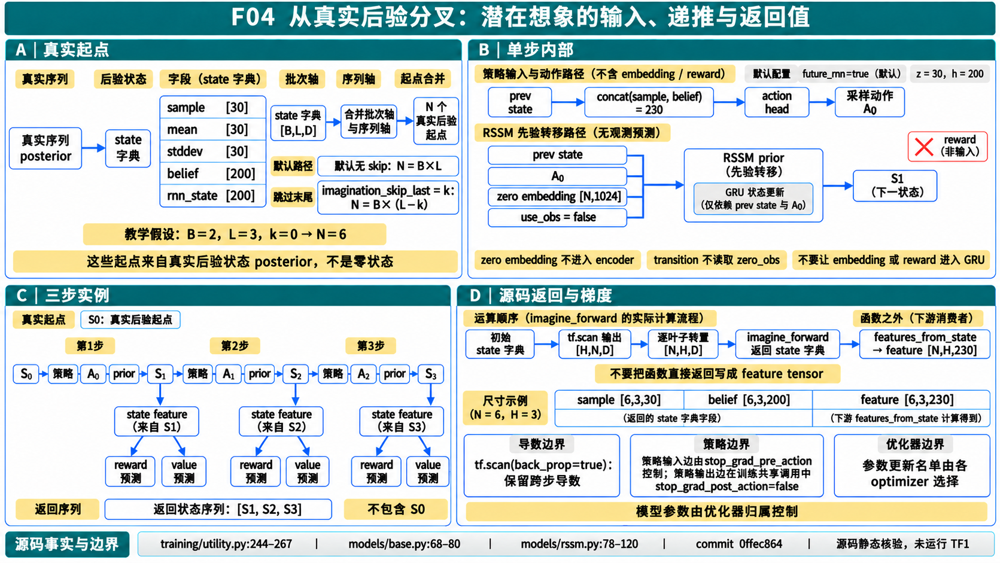
b22c14c9b446eb8686b7a770f6a27010222dd7b99469f7671d4b393af4ba6436图 F04 全部细节说明：从真实后验分叉：潜在想象的输入、递推与返回值
从真实后验到潜在想象：起点、单步运算和返回序列
这幅图回答三个相连的问题：想象从什么状态开始，没有新图像时如何继续预测，以及函数最终把什么对象交给行为学习。先看 A 的真实后验起点，再看 B 的一次策略采样与先验转移，随后把这一步在 C 中展开三次，最后用 D 核对状态字典、张量轴和梯度边界。图中的蓝线表示运算依赖；黄色条说明容易混淆的边界；灰色标签区分配置、源码事实与教学假设。回报目标的具体公式由相邻的价值估计章节展开。
A：把真实序列的每个位置变成起点
真实观测历史先经过编码器和 RSSM 观测校正，形成后验状态。图中输入已经是这些后验状态的字典，不是未经处理的像素。字典内的 sample 是三十维随机样本，mean 与 stddev 是对应高斯分布的三十维统计量；belief 与 rnn_state 各为二百维，分别保留供特征提取和下一次循环使用的确定性状态。不能把全部五个字段拼成策略输入。features_from_state 只拼接样本与信念，因此特征宽度为 30+200=230。这些宽度来自当前固定配置，不是论文对任意实现规定的常数。
字典的每个叶子原来带有批次 B 和序列长度 L 两个前轴。A 中的合并操作将它们变成一个起点轴 N，各个位置保留自己的状态，不会把不同回合的记忆接成一条长轨迹。默认不跳过序列尾部时，N=B×L；若调用者设置 imagination_skip_last=k，先沿序列轴去掉末尾 k 个位置，再合并，得到 N=B×(L−k)。例如图中的教学假设 B=2、L=3、k=0 得到六个起点。它是形状计算，并非采集了六个真实回合，也不是 GPU 运行测量。
B：策略先选动作，再调用先验转移
一次想象步骤先从 prev state 提取样本与信念，将二者拼成二百三十维特征，再送进 action head。该头返回动作分布，图中的 A0 是从该分布采样的动作。随后上一状态和这个动作共同进入 RSSM。上一状态除了提供策略特征，也要直接提供循环状态；仅有动作和二百三十维特征不足以替代完整状态字典。
调用同时携带 [N,1024] 的零嵌入和 use_obs=false。这里的一千零二十四维是编码后嵌入的接口宽度，零嵌入不经过编码器，也不是一批黑色未来图片。真正关闭观测校正的是 use_obs=false。RSSM 的先验转移使用历史样本、当前动作和旧循环状态，不读取 zero_obs 的数值；图中也明确没有把奖励或嵌入接入 GRU。因此未来每一步只依赖已经生成的潜在状态和动作，不需要查询真实环境。
在 future_rnn=true 的当前默认配置下，GRU 更新二百维信念，先验分布再产生新的三十维随机样本，得到 S1。图中“历史状态＋动作→transition/GRU→prior”是对同一段内部机制的展开说明，不是额外执行第二次状态转移。论文把 transition 记为 q，representation 记为 p；实现使用 prior 与 posterior 两个名称。真实序列的后验提供起点，想象中的后续状态由先验提供。
C：三次运算的状态和奖励怎样对齐
C 区用 S0、S1、S2、S3 和 A0、A1、A2 展开同一套步骤。S0 是输入后验；从 S0 的特征采样 A0 后，先验产生 S1；再从 S1 的特征采样 A1，产生 S2；最后从 S2 的特征采样 A2，产生 S3。所有状态名都是同一条教学轨迹的时间索引，不是四套网络或四种不同环境。
每个预测奖励和状态价值都从相应状态的特征读出。S1 的特征分别进入奖励头和价值头，S2、S3 同理；不能把动作 A0 直接连到奖励头而绕过状态预测。奖励头给出模型对即时奖励的估计，价值头补偿有限想象窗口之外的长期回报。二者的输出随后参与价值估计，但本图的状态展开本身还没有执行回报求和或策略优化。
三次先验转移的返回状态是 [S1,S2,S3]。S0 仅作扫描初始化，不包含在返回序列中。这个区别会影响下游奖励、价值和动作损失的时间对齐：若把起点再拼入，就会多出一格并改变索引。示例 H=3 是为了能逐步核对，连续控制默认 H=15 只是配置值；两者不能混写成同一条实际训练日志。
D：先核对返回对象，再讨论导数与参数
imagine_forward 对状态字典执行 tf.scan，逐叶子得到 [H,N,D]，其中 D 代表该字段的末轴宽度，并不总是二百三十。随后每个叶子交换前两轴，变成 [N,H,D]，函数直接返回这个字典。消费者在函数之外调用 features_from_state，才得到 [N,H,230]。因此图中示例 N=6、H=3 对应 sample[6,3,30]、belief[6,3,200] 和提取后的 feature[6,3,230]。mean、stddev、rnn_state 也仍在状态容器中，只是不进入这个特征拼接。
梯度需要分开核对三种条件。第一，tf.scan(back_prop=True) 保留跨想象步骤的可微计算。第二，stop_grad_pre_action 控制从状态特征进入策略的那条边；stop_grad_post_action 控制从采样动作进入动力学的那条边。训练共享调用明确传入后者为 false，并从配置读取前者，不能把函数签名的默认值当作调用处实际设置。第三，各优化器通过变量名单决定更新哪些参数。保留模型运算的输入导数，能够让动作学习使用预测结果；这不意味着动作优化器同时更新 RSSM 参数。三类条件是并列的计算边界，不能连成一条“扫描后依次执行几个梯度开关”的流水线。
固定源码、相关机制和理解边界
起点切片和共享调用位于 dreamer/training/utility.py:132-143，状态展开位于同文件 244-267；特征接口见 dreamer/models/base.py:68-80，先验和观测校正见 dreamer/models/rssm.py:78-120。本文绑定官方提交 0ffec86436239d41cecaff34abcf57dca5539839，没有执行 TensorFlow 1、训练或环境交互。图和以上形状来自静态源码与纸面推导。
与采用在线搜索的方法相比，这里的潜在展开供可重复使用的策略和值函数学习。它仍然依赖模型质量，并不因为不用未来像素就消除了模型误差。CEM、continuation、目标价值头和对比目标有各自的配置条件，不能从仓库包含这些功能推断本图主线都启用了它们。将本图与 RSSM 状态机、回报计算、优化器分工和真实交互章节联读，才能区分“形成后验”“想象后果”“计算学习目标”和“更新参数”四个阶段。
3. value loss：截断和 bootstrap 的反直觉细节
compute_value_loss 默认 reward 取 reward head 的 mode，pcont 取全 1 或 pcont head mean 再乘 value_discount；有 value_target 时，目标 value 用 target head mode。开启 value_bootstrap 后先将 reward/value/pcont 全部切成 [:, :-1]，再令 bootstrap=value[:,-1]。因此 bootstrap 实际是切后序列的最后一项，即原序列下标 H−2，不是原 H−1；随后 lambda_return(..., stop_gradient=True) 得到 H−1 个目标，再拼一个零列，最后只用 pred.log_prob(return_)[:,:-1] 训练前 H−1 项。若 value_pcont_weight 开启，损失乘以停止梯度的前缀 pcont 累积积，首项权重为 1。
纸面 H=4、value 原序列 [10,20,30,40]：切后 [10,20,30]，bootstrap=30；pcont 全为 0.99 时，lambda=0 的第一个 target 是 r0+0.99*v1，lambda=1 则按折扣 Monte Carlo 递归；原 40 不参与 bootstrap。若教材写成“bootstrap=40”，就是本轮发现并纠正的旧解释错误。
证据：dreamer/training/utility.py:270-300（compute_value_loss，commit 0ffec86436239d41cecaff34abcf57dca5539839，SHA-256 46668df6942013d81a69ff5d73280fb32d4eaa1fb344e3a482441986ff29ea23）、dreamer/control/temporal_difference.py:48-74（lambda_return，commit 0ffec86436239d41cecaff34abcf57dca5539839，SHA-256 19e55d4972ec63f9879debf360386d82efe2828f2406ef94493f5769550fac06）。
4. action values 与无 value 分支
action return 先取 reward mode，再减 compute_action_divergence 与 compute_state_divergence；若 action_loss_pcont 开启，pcont 用 head mean，action_pcont_stop_grad 只决定这一支是否断梯度，然后乘 action_discount。没有 value head 时立即走 discounted_return(..., bootstrap=None, stop_gradient=False) 并返回，不会执行 action_pcont_weight。存在 value head 时才在 action_bootstrap 分支切 reward/value/pcont 并取切后 value 最后一项作 bootstrap，再调用 lambda_return；最后才可乘停止梯度的前缀 pcont 累积权重。
H=3、reward=[1,2,3]、pcont=[0.9,0.9,0.9] 且无 value 时，discounted return 逆序为 R2=3,R1=2+0.9*3=4.7,R0=1+0.9*4.7=5.23；这是可反传的 action target。若有 value 且 bootstrap 开启，源码会先丢掉最后一项再从切后 value 取 bootstrap，时间长度和无 value 分支不同。
证据：dreamer/training/utility.py:303-331（compute_action_values，commit 0ffec86436239d41cecaff34abcf57dca5539839，SHA-256 46668df6942013d81a69ff5d73280fb32d4eaa1fb344e3a482441986ff29ea23）、dreamer/training/utility.py:334-363（divergence helpers，commit 0ffec86436239d41cecaff34abcf57dca5539839，SHA-256 46668df6942013d81a69ff5d73280fb32d4eaa1fb344e3a482441986ff29ea23）。
5. reward_value 规划目标与 value loss 的差异
objectives.reward_value 使用 reward/value mean，并将 value 乘 schedule.linear(graph.step, objective_value_ramp)；ramp=0 时乘数为 1。它把原 reward[:,:-1]、原 value[:,:-1]、原 value[:,-1] 传给 lambda_return，因此 bootstrap 是原 H−1 项；返回 return_[:,0]，每条轨迹一个标量，默认 stop_gradient=True。这与 value loss 的“切后再 bootstrap”故意不同：前者是 planner 评分，后者是 value head 监督。
lambda_return 的计算是 next_values=concat(value[1:], bootstrap)，每一项先形成 reward + pcont*(1-lambda)*next_value，再反向 scan 累加 pcont*lambda*后续_return。lambda=1 退化为 discounted Monte Carlo，lambda=0 是一步 TD。
6. overshooting：起点、mask 和距离
overshooting 若 posterior=None，先用 dynamic_rnn 按观测构造后验；ignore_input 只把 use_obs 改成全 False。随后 first_output 含 prev_action、posterior、target、sequence_mask；progress_fn 每次左移时间轴并在尾部补零，amount 次 scan 后共有 amount+1 个距离（含距离 0）。合并 batch/time 起点维后，merged_length 用 mask 求和，填充位置清零；open-loop 使用零观测和 False use_obs，起点是前一时刻 posterior（首项补零、去掉末项）。最终恢复 [batch,start,distance,...] 布局并返回 target/prior/posterior/bool mask，不在这里计算 KL。
7. 配置分支、反例与边界
imagination_horizon=0时raw_states=None；只有 value/action 需要时才按各自 horizon 单独 rollout。imagination_skip_last=K对每个 state leaf 做x[:,:-K]，不是只切 sample；K 超过时间长度会产生空时间轴风险，需由配置保证。- policy planner 只返回
action[:,None,:]，计划长度 1；CEM 才绑定 beams/iterations/topk/horizon，候选先 clip 到 min/max，再 top-k 重拟合 mean/std。 - 若把 imagined 返回中的初始 state 当作第 0 项，所有 action/reward 对齐会向后偏移；若把 value loss 的 bootstrap 写成原 H−1，则会训练错误的末端目标。
价值目标、动作目标与规划回报的四项区别
价值目标使用价值头的mode，结合继续概率构造回报；先对时间轴切片，再从切片后的价值取末项作自举，所以原长度为H时，自举来自H−2位置。目标停止梯度，并按当前实现补零尾列。这个端点是固定提交的代码事实，不能仅凭论文公式推回原H−1位置。
动作目标先加入所选最大熵奖励；没有价值头时直接返回奖励序列，有价值头时才走相应切片和自举。继续概率的累积乘积为各时间步加权；权重的梯度截断与回报本身的可微路径必须分开。
规划用的reward_value另取分布mean，应用渐变调度，并从原序列H−1位置自举。它同样使用λ递推，却有不同的起止位置和返回布局，因此不能与价值损失共享一个未经说明的时间索引。
多步预测工具overshooting还有独立的观测分支、amount+1距离布局、有效掩码和merged_length恢复。开环预测从所选起点展开；这个工具准备预测与目标，本身不计算KL。损失消费者何时计算KL是另一层契约。
想象与回报的接口不变量与反例
回报定义有 value、action 与 scripts.objectives.reward_value 三个消费者；它们的轴转换、bootstrap 来源和 stop_gradient 条件必须分别解释。公式名字相同并不说明切片端点也相同。
想象的两个 stop_grad 开关、scan.back_prop 和 optimizer include 分别控制计算导数与参数更新。MPCAgent 的顺序是当前观测加上一动作更新 posterior，随后产生并保存当前动作，不能提前使用新动作。
CEM 把候选与 batch 展平，top-k gather 需要 indices 加 batch_offset×beams，才能各环境独立重拟合。连续 additive_normal 的 scale 是噪声尺度，epsilon_greedy 的 scale 是切换概率；最终clip依赖环境动作已经归一化。overshooting 另外要求 mask 维度和 posterior 首项对齐。
10. 公式索引与逐步验算
- discounted return：
G_t=r_t+pcont_t·G_{t+1}；无 value、r=[1,2,3]、pcont=.9时，从后向前得到3→4.7→5.23。 - lambda return：
next_values=concat(value[1:],bootstrap)；λ=0为一步 TD，λ=1为折扣 Monte Carlo。 - value loss 的 slice 顺序决定 bootstrap；H=4 时原 value
[10,20,30,40]先切[10,20,30]，bootstrap=30。 - reward_value 不切原末项作为 bootstrap，故同样 H=4 时 bootstrap=40；这是 planner score 和 value supervision 的实现差异。
11. 三个自测问法
- imagined 返回为何没有初始 state？因为初始 state 只是 scan initializer，返回只堆叠 H 次 transition state。
- 为什么 action objective 可以反传而 value target 不能？前者的
stop_gradient=False，后者 lambda target 显式停止梯度；两者仍受 optimizer include 约束。 - overshooting 的 distance=0 表示什么？它是由 first_output 直接形成的同一时刻对齐项，不需要再做一次 transition。
12. 实现细节：回报边界、CEM 形状与 MPCAgent 状态边界
12.1 value/action 回报中的梯度和分布统计量
compute_value_loss 在 value_loss_pcont=True 时先取
graph.heads.pcont(features).mean()，再用 tf.stop_gradient 包住这个
continuation，最后乘 value_discount。所以 pcont 的数值会折扣 value target，
但 pcont head 的梯度不会从这一支回传；value_pcont_weight 又是另一处对累计
pcont 权重停止梯度的开关。
compute_action_values 始终从 reward head 取 mode()，存在 value head 时也从
value head 取 mode()，而不是 mean。若 action_bootstrap=True，先删掉最后一
个时间步，H=5 时原索引 0…4 变为 0…3，bootstrap 是切后最后一项，即原索引 3，
返回长度为 4。该 action 路径调用 lambda_return(..., stop_gradient=False)，
因此 target 可以沿 action 后的想象链反传；没有 value head 的路径则直接调用
discounted_return(..., bootstrap=None, stop_gradient=False)。
12.2 temporal_difference 的 rank、None 与早返回
lambda_return 要求 reward 和 value 的 rank 完全相同，并且函数没有
value=None 的替代路径；value 必须是真实张量。若 bootstrap=None，函数先把
聚合轴移到最前，再使用时间轴最后一项的 zeros_like(value[-1])。随后
next_values=concat(value[1:], bootstrap[None])，反向 scan 形成返回。
discounted_return 对 Python 标量 pcont=1 有两个早返回：没有 bootstrap 时返回
reduce_sum(reward, axis)，有 bootstrap 时返回该时间归约再加 bootstrap。因此这是
时间维已经消失的标量/批量结果，不是逐时间步返回；这两个分支在函数末尾的
tf.stop_gradient 之前返回，所以不会执行末尾 stop-gradient。普通分支才把
聚合轴转到最前、用 reverse=True 的 tf.scan 计算、转回原轴；scan 的
back_prop 是 not stop_gradient，并且 stop_gradient=True 时在最终返回张量
上显式调用 tf.stop_gradient。
例如 reward=[1,2,3]、value=[10,20,30]、bootstrap=40、pcont=.5（把这些视为
axis=1 的单 batch 行）时，next_values=[20,30,40]，递推为
G_t=r_t+p_t*((1-lambda)*next_value_t+lambda*G_{t+1})；lambda=0 得
[11,17,23]，lambda=1 得 [7.75,13.5,23]。若真的传入 rank-1 张量再指定
axis=1，则轴本身非法；题目的列表是时间行的简写，不能把这个纸面例误当成
源码接受的 rank-1/axis-1 调用。
12.3 reward_value 与 CEM 的逐层形状
objectives.reward 使用 reward distribution 的 mean()，再沿时间轴 axis=1
求和。reward_value 同样使用 reward/value 的 mean；value 先乘
schedule.linear(graph.step, objective_value_ramp)，默认 ramp 为 0，乘数为 1。
它的 planner 默认 planner_discount=0.99、planner_lambda=0.95，把 reward/value
的前 H-1 项和原最后一项 value 作为 bootstrap，lambda return 后只返回
return_[:,0]，即每条候选轨迹一个标量。
CEM 从 [B,D] 初态开始维护均值/标准差，动作提案为
[B,beams,horizon,A]；先裁到 [-1,1]，再 reshape 成
[B*beams,horizon,A]；零观测形状为 [B*beams,horizon]+obs_shape，
use_obs 是 [B*beams,horizon,1] 且全 False。world model 的 rollout 只走 prior，外层
while_loop 使用 back_prop=False，最终返回 [B,horizon,A] 的均值。
每轮 objective reshape 为 [B,beams]，对每个 B 沿 beams 轴取 top-k。top-k 的
索引加上 tf.range(B)[:,None]*beams 的 batch 偏移，再从展平 action 中 gather；
gather 后沿候选轴做 moments，stddev=sqrt(variance+1e-6)。这里的索引偏移是
配对正确性的关键，不能只看 shape。
初态的实现是对每个 state leaf 使用 tf.tile(tensor,[beams,1,...])，形成
beam-major 的批次重复；动作 proposal 从 [B,beams,...] reshape 到
batch-major。B=1 时两种顺序恰好相同，B>1 时源码没有额外重排，不能假定每个
proposal 与对应初态天然配对。
12.4 MPCAgent 的部分 reset 限制
MPCAgent.step 先对 observation 做 preprocess，为每个字段加长度为 1 的时间
轴，encoder 后取 [:,0]。state 按 agent_indices gather，use_obs 全 True；
cell 输入的 prev_action 却读取完整的 _prev_action 变量。planner 返回
[B,H_plan,A] 后只取 action[:,0]；policy 的 H_plan=1，CEM 的 H_plan=horizon。
探索 scale 可乘 schedule(self._step) 和
factors，这里的 _step 是 Trainer step，不是环境 transition 计数。探索后
动作裁到 [-1,1]，完整 batch assign 到 _prev_action，同时只把选中的 state
scatter 回缓存。
reset(agent_indices) 对 state 字段使用 selected-index 的 scatter update，但
_prev_action 使用 zeros_like 的整批 assign，因此即便只 reset 一部分环境，
所有环境的旧动作都会清零。step 也保持这种不对称：state 是子集 gather/scatter，
prev_action 是整批读写。因而它不是一个任意子批都能独立匹配动作缓存的 API；
simulate 实际传的是 tf.range(len(env)) 的全体索引。
这里还需要核对的计算与来源定位
前述的 imagine/value/action/overshooting 主链保留；这里还需要核对 value pcont 的
停梯度、action value 的 mode 与 stop、TD 的 rank/None/早返回/扫描轴、reward
规划默认值、CEM 的候选形状和 B>1 顺序，以及 MPCAgent 的整批动作缓存边界。
证据为 dreamer/control/temporal_difference.py:22-74、
dreamer/scripts/objectives.py:25-42、dreamer/control/planning.py:24-74、
dreamer/control/mpc_agent.py:28-99。
12.5 用数值和状态反例检查边界
value 标签的 continuation 与 action 目标的 continuation 不能混用。假设 pcont
head 的 mean 为 .8，value_discount 为 .99，传给 value lambda target 的数值
就是 .792，但在这条标签支路中它对 pcont head 的梯度为零；即使关闭
value_pcont_weight，这个停止梯度仍在。若把它当成 action_loss_pcont 的开关，
就会错误放开 value 标签对 pcont head 的梯度。反过来，action 路径的
action_pcont_stop_grad 可以独立为 False，影响动作通过 continuation 改变回报的
路径。value 分布若 mode=7、mean=9，action/value 训练函数读 mode=7，而 planner
reward_value 读 mean=9；仅把“读一个 value”作为解释会丢掉统计量选择。
当 reward 为 [[1,2,3]] 时，Python 标量 pcont=1、bootstrap=None 的 discounted
return 是 [6]，bootstrap=[40] 时是 [46]；若 pcont 是形状 [1,3] 的全一
张量，则会走 scan，返回 [[6,5,3]]（无 bootstrap）。两者数值语义和 rank 都
不同，不能把“等于 1 的张量”当成 Python 标量的早返回条件。对 lambda_return
传 value=None 也不是“退化为无 critic”：访问 value.shape 就已不合法，调用者应
选择 compute_action_values 的无 value 分支。
planner 的两个目标可用同一条轨迹比较。reward mean=[1,2,3] 时 reward 目标为
6；reward_value 对 value mean=[10,20,30] 会保留原末值 30 作 bootstrap，
其余步骤按 .99/.95 的默认折扣/lambda 递推，再取第一个返回。若把 H−2 的训练
bootstrap 规则移到这里，会把原末值 30 丢掉，成为另一种目标。
CEM 的最小索引例取 B=2、beams=3，初态标签为 [s0,s1]。
tile([s0,s1],[3,1]) 的展平次序是 [s0,s1,s0,s1,s0,s1]；proposal
[B,beams] 展平时对应 [b0c0,b0c1,b0c2,b1c0,b1c1,b1c2]。因此第二项已经
是 s1 配 b0c1，出现来源错配；B=1 时这个反例消失。若每批 topk 索引分别为
[1,2] 和 [0,2]，第二批必须先加偏移 3，才能 gather 索引 [3,5]；漏掉
偏移会让第二批也取第一批的动作。topk 必须不大于 beams，方差为零时新 std
仍有 sqrt(1e-6)=.001，不是严格零。
MPCAgent 的缓存例取三个环境，旧动作为 [a0,a1,a2]。reset indices=[1]
只清零第二个 state，却把三个旧动作都清成零；若下一次只传 indices=[1] 和
一条 observation，state/embedded 的 batch 为 1，而完整 prev_action 的 batch 为
3，接口不保证二者可配对。正常 simulate 每步传全体 [0,1,2]，避免这种任意
子批假设。探索若基础 scale=.3、Trainer schedule=.5、某动作 factor=2，该动作
的实际 scale=.3；它不会因为环境已执行了更多 ActionRepeat 次数而另查环境计数。
想象与回报 API
时间差分回报
discounted_return(reward, pcont, bootstrap, axis, stop_gradient=True)：递推R_t = r_t + pcont_t R_{t+1}。标量pcont=1有 reduce_sum 快路径；无 bootstrap 时以零初始化。lambda_return(reward, value, bootstrap, pcont, lambda_, axis, stop_gradient=True)：next_values=concat(value[1:], bootstrap)，inputs=reward+pcont*next_values*(1-lambda)，reverse scancur + pcont*lambda*agg。fixed_step_return(reward, value, discount, steps, axis, stop_gradient=True)：while loop 累加固定步数，再加discount**steps * value[steps:]。
动作规划接口
cross_entropy_method(cell, objective, state, obs_shape, action_shape, horizon, graph, beams=1000, topk=100, iterations=10, min_action=-1, max_action=1)：返回[B,horizon]+action_shape的均值计划；每轮候选由 normal proposal 生成，RSSM prior rollout 后按 objective top-k 重估均值/方差。action_head_policy(cell, objective, state, obs_shape, action_shape, graph, config, strategy)：从cell.features_from_state(state)调graph.heads.action，strategy='sample'|'mode'，返回action[:,None,:]。configs._define_planner只绑定config/strategy；training.utility.simulate再用functools.partial(..., graph=graph)注入 graph，随后由MPCAgent.step传前五个位置参数。
真实交互智能体
真实动作执行先更新posterior，再采样或取mode；测试日志还可能通过define_summaries触发test_collects仿真。因此测试不更新参数与测试可以运行环境是两个同时成立的条件。来源：dreamer/training/define_summaries.py:97-117。
MPCAgent(batch_env, step, is_training, should_log, config) 创建每 env state local variables 与全零 prev_action。
reset(agent_indices)：scatter 清零 state；当前实现对整个_prev_actionassign 全零。step(agent_indices, observ)：preprocess -> 单步 encoder -> RSSM posterior update -> planner -> exploration -> clip -> scatter 保存 state/action -> 返回 action。
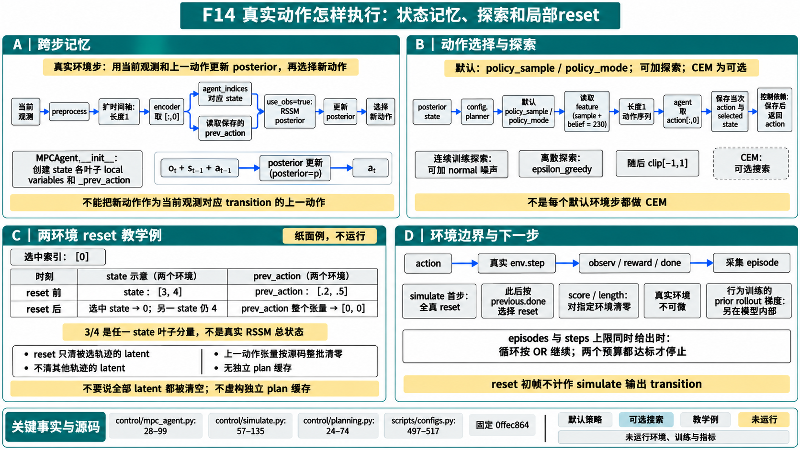
1f24c246911374b227d5781cf90eb95d13e5e55c79e532b58f920ce6e0344905图 F14 全部细节说明：真实交互智能体：状态记忆、探索和局部reset
真实环境中如何保存记忆、选择动作和重置
本图从实际执行的一步出发，解释 MPCAgent 怎样使用当前观测与上一动作更新状态，再选择下一动作。A 区追踪观测与跨步记忆，B 区解释动作选择及探索，C 区用两个环境的教学例核对 reset 范围，D 区将动作接回环境循环。蓝色实线表示实际数据依赖，灰色虚线标可选搜索；环境侧与模型内的可微想象有明确边界。
A：当前图像与上一动作共同更新后验
agent 构造时调用 cell 的 zero_state，为状态字典每个叶子建立局部变量，同时建立 _prev_action。这些变量保存跨环境步的记忆。step 先调用预处理，将当前观测临时扩为长度一的序列，再经编码器取 [:,0]，恢复当前步的嵌入。临时序列轴只用于满足编码器接口，不表示执行了多步想象。
随后，代码按 agent_indices 从状态变量读取选定轨迹，并读取保存的上一动作。use_obs 为真使 RSSM 在历史预测之后利用当前嵌入计算后验。这里上一动作对应的是产生当前观测的历史转移；下一动作还没有选出。若把新动作提前接入当前后验，就把时间因果关系错移一格。后验的信念和随机样本共同构成策略所需特征，宽度在当前配置下为二百三十。
状态字典包含的不仅是一个特征向量。均值、标准差、随机样本、信念和递归状态分别承担分布计算、策略输入与循环记忆作用。跨步保存时要保留完整字典，不能因为策略只读取样本与信念就删除其他叶子。真实观测在这里校正当前状态，未来动作后果的训练想象则在另一段 prior-only 运算中展开。
B：配置决定使用策略还是搜索
后验状态交给 config.planner。默认的 policy_sample 或 policy_mode 绑定 action_head_policy，它从 features_from_state 得到样本与信念的拼接，调用 action head，然后采样或取分布 mode。函数把结果扩成长度一的动作序列，agent 再用 action[:,0] 取当前要执行的动作。这里返回一个“plan”形状并不代表做过在线动作序列搜索。
如果配置启用 CEM，planner 会在同一模型上搜索候选序列，这是另一条可选路线。它的候选数量、迭代和视野有自己的参数，不能因为 agent 类名中有 MPC，就把所有默认环境步都解释成运行 CEM。图中用虚线单列这个分支，避免把可选搜索与默认学到的策略混为同一动作来源。
探索发生在 planner 给出动作之后。连续训练可以按配置添加正态噪声；离散路径可采用 epsilon-greedy，在随机动作与策略动作之间切换。探索尺度还可能随训练步数调度或按动作维缩放。之后代码统一裁剪到 [-1,1]，把最终动作写入 _prev_action，并把本步后验写回选中状态。控制依赖保证这些保存完成后才返回动作，因此下一步会读取本次实际送入环境的动作记忆。
C：两个环境的 reset 范围并不相同
图中的教学例取 agent_indices=[0]，状态分量示意为 [3,4]，上一动作为 [0.2,0.5]。这些数只代表某个状态叶子的一个分量，不是三维或四维的完整 RSSM 状态，更不是环境实测值。reset 后，第零个环境的该状态分量变成零，另一个仍为四；同一局部清零语义应用到状态字典所有叶子。
上一动作却采用另一条语句：_prev_action.assign(tf.zeros_like(_prev_action))。它清零整个批量张量，所以示例结果是 [0,0]，并非 [0,0.5]。对 latent 执行的 scatter_update 与对上一动作执行的整批 assign 不能被一张含糊的“清缓存”卡替代。固定实现没有另建独立计划缓存，本图也不能凭常见 MPC 习惯补出一个。
这一区别说明读接口时必须检查赋值目标与索引范围。一个 reset 函数内部可以同时存在局部和全局写入；函数名字相同不保证两个容器有相同的隔离范围。源码的这一行为已经可以静态确认，但本任务没有运行多环境轨迹去测它对训练结果的影响。
D：动作如何进入真实回合循环
agent 返回动作后，批量环境执行 env.step，产生新观测、奖励与 done，采集包装器再形成回合记录。真实环境是不可微边界。动作目标在训练时通过的是模型内部的 imagined transition、reward 和 value 导数，不能沿图中的真实环境箭头反向传播。
simulate 的 body 在首步使用全真的 reset mask，后续读取上一条 transition 的 done；只在存在需要重置的环境时执行 reset。环境观测、得分和长度按 mask 选择性重置，agent 的 latent 与上一动作则遵守 C 区所述的两个不同范围。随后本轮统一为环境选择动作并执行 step。初始 env.reset() 仅建立循环和 TensorArray 的初值，不写入返回 transition；采集回合文件中的 reset 第零项则由包装器另行建立。两种结果不能按相同第零帧对齐。
如果同时提供 episodes 与 steps 预算，循环条件为“回合数尚未达标或步数尚未达标”，因此两个预算都满足才停止。每轮 step 按环境个数增加，episode 按本轮 done 个数增加；得分、长度的具体计数也须按实现解释。图中这些条件描述实际源码逻辑，不承诺任意调度都会刚好在某个回合边界结束。
来源与关联理解
状态变量、动作选择、探索、保存和 reset 见 dreamer/control/mpc_agent.py:28-99；真实循环、预算谓词和返回容器见 dreamer/control/simulate.py:48-135；默认策略与 CEM 见 dreamer/control/planning.py:24-74，绑定关系见 dreamer/scripts/configs.py:497-517。源码固定为提交 0ffec86436239d41cecaff34abcf57dca5539839。
将本图与回合数据图联读，可以追踪一个动作从后验策略输出到环境 step，再进入回合文件、数据加载与后续模型学习的全过程。它与潜在想象图共享状态接口，却使用不同的输入和副作用：真实执行获得新观测，训练想象只产生模型预测。本任务没有运行 TensorFlow 1、采集回合、训练或复现指标，教学例与默认、可选分支都按来源条件限定。
行为评分目标
scripts.objectives.reward(state, graph, params)：reward head mean，沿 axis 1 求和。reward_value(state, graph, params)：reward/value mean，value 按 linear ramp，调用td.lambda_return，返回时间 0 的 return。training.utility.imagine_forward(...)、compute_value_loss(...)、compute_action_values(...)是训练主 API；详见 training_config 技能的交叉引用。
数值例
若 reward=[1,2]、value=[10,20]、bootstrap=30、pcont=[.9,.9]、lambda=0.5，next_values=[20,30]，inputs=[1+.9*20*.5, 2+.9*30*.5]=[10,15.5]。reverse scan：R_1=15.5+.9*.5*30=29，R_0=10+.9*.5*29=23.05。实际代码会先按 axis transpose，结果再转回原轴。
关键函数的完整行为
共享想象与优化器隔离
compute_objectives 在遍历各目标前建立共享 imagined raw_states，显式传入 stop_grad_post_action=False 和配置中的 stop_grad_pre_action。在 imagine_forward 内，前者控制动作到 cell 的导数，后者控制 feature 到 policy 的导数，scan 始终 back_prop=True。非 gradient head 获得停止梯度的 raw feature，并以 ./head_<name>/. 限定变量；但 model action 目标实际从 imagined state 读取回报 feature。因此“计算图可求导”和“优化器更新哪些变量”是两个边界。apply_optimizers 把带 include/exclude 的目标单独保留并传给各优化器，CustomOptimizer 再调用 filter_variables 选变量。常规动作优化可沿 rollout 求导，同时只更新 head_action 参数。来源：utility.py:132–157,205–267,410–456；custom_optimizer.py:26–39；filter_variables_lib.py:24–61。
价值损失与无价值头的动作回报
compute_value_loss 用 reward head 的 mode 推断奖励；pred 是 value head 分布，目标 value 优先取 value_target.mode()，没有 target head 才取 pred.mode。关闭 value_loss_pcont 时 pcont 从全一开始，开启时取停止梯度的 pcont head mean，然后都乘 value_discount。bootstrap 分支先把 reward/value/pcont 切为 [:,:-1]，再取切后最后一项作 bootstrap；原长 H 时对应原下标 H−2。lambda_return 使用 axis=1、stop_gradient=True；结果追加一列零以匹配 log_prob 的输入，最后一列损失再丢弃。来源：utility.py:270–300，temporal_difference.py:48–74。
图中没有 value head 时，compute_action_values 立即通过 discounted_return(reward,pcont,bootstrap=None,axis=1,stop_gradient=False) 返回，所以保留回报导数，而且不会执行后面的 lambda-return 或 action_pcont_weight。存在 value head 时才计算 lambda return；累积 pcont 乘数自身被显式停止梯度，这不等于整个回报停止梯度。来源：utility.py:303–331，temporal_difference.py:22–45。
规划评分 reward_value 读取 reward/value 的 mean，以 linear(graph.step,objective_value_ramp) 缩放 value；ramp=0 时系数为 1。它向 lambda_return 传入原 reward[:,:-1]、原 value[:,:-1]、原 value[:,-1]，沿 axis=1 用默认 stop_gradient=True，最后只返回 return_[:,0]。原长 H 时 planner 的 bootstrap 是原 H−1，而 value loss 是先切片后的 H−2，不能用同一“最后一项”口号掩盖索引差异。来源：objectives.py:31–42，schedule.py:35–55，utility.py:286–294，temporal_difference.py:48–74。
多步预测的后验与距离构造
overshooting(...,posterior=None,ignore_input=False) 只在 posterior 为 None 时自行生成后验：先建立全真观测标记，若 ignore_input 为真再改成全假，然后执行 dynamic_rnn。调用者已传入 posterior 时直接跳过此分支，因此 ignore_input 不会改变既有 posterior。来源：overshooting.py:28–43。
距离零的 first_output 包含 prev_action、posterior、target 和整数 sequence_mask。progress scan 执行 amount 次时间左移，每次尾部补零，并与 first_output 拼接，所以距离数是 amount+1。初始的 distance/batch/start 布局把 batch 与 start 合并，再转置为扩展批次/距离；mask 求和成为 merged_length，各叶子的填充位置由广播 mask 清零。open-loop 的输入观测全零、观测标记全假，起点是 [zero,posterior[:,:-1]]，动作仍为相应移位后的上一动作。来源：overshooting.py:45–95,106–128。
_restore_batch_dim 把扩展批次拆回 batch 与起始时刻，得到 [B,T,amount+1,...]。overshooting 返回 target、prior、posterior 与布尔 mask；它本身不计算 divergence 或 KL。多步 KL 目标由训练调用者另行计算。来源：overshooting.py:97–103,131–134；utility.py:170–183。
想象与回报架构
从后验状态出发有两条行为分支：policy head 以 sample/mode 直接选动作，或 CEM 产生 beams×horizon 候选。候选动作都进入 RSSM(use_obs=False) 的先验展开，得到 imagined states，再由 reward、value、pcont 三类 head 生成回报输入，交给 lambda_return。value loss 将其作为监督目标；action return 则保留动作到模型后果的导数。CEM 与 policy 是分支，不能串成默认先后执行。
真实交互的 MPCAgent 保持每个 env 的 state 和 prev_action local variables；训练想象则无持久变量，全部从 posterior tensor 展开。temporal_difference 的 scan 先将聚合轴换到 0，reverse scan 后恢复原轴。
形状
| 数据 | 形状 | 备注 |
|---|---|---|
| posterior batch | [B,T,...] |
dataset posterior |
| imagination start | [B,T',...] |
可先去掉 imagination_skip_last |
| imagined state | [N,H,D]，N=B*T' |
scan transpose 后；初始 state 不包含在输出中 |
| scalar reward/value/pcont | [N,H] |
data_shape=[] 的 scalar heads；按 axis=1 处理 |
| action return | [N,H-1] |
bootstrap=true 时有效长度 H-1 |
| value target/loss | target [N,H]、loss [N,H-1] |
lambda target 长 H-1，再 append zero tail；log_prob 后去尾 |
想象、planner 与回报设计链
训练 action 链
动作训练链是后验起点 → imagine_forward(stop_grad_post_action=False) → reward.mode 减动作/状态 divergence 项 → continuation 与折扣 → lambda_return(stop_gradient=False) → 最大化动作目标 → 优化器。是否更新世界模型参数由优化器变量选择决定，不能由导数经过 RSSM 就断言世界模型同时被更新。
训练 value 链
价值训练链从 posterior 或共享 raw_states 出发，读取 reward.mode、value 的 mode 或 target mode、pcont，按 bootstrap 配置切片，再用 lambda_return(stop_gradient=True)。目标尾部追加零，以负 value log_prob 构成监督损失，随后可乘 continuation 的累积权重。尾部零是布局占位，最后一列损失仍被去除。
真实 agent 链
agent_indices + observation + saved prev_action -> encoder -> cell.call(use_obs=True) -> planner state -> current action -> exploration -> clip -> save current action/state。reset 的 agent_indices 只清 state，但 _prev_action.assign(zeros_like(...)) 会清全部 env action，这是当前实现的广播范围，修改时需谨慎。
按源码检查的关键不变量
imagine_forward的 zero obs/use_obs false 路径确认。- 两个 loss 函数的切片与
lambda_returnbootstrap 拼接确认。 - configs 默认 train/test planner 与
action_head_policy分支确认。 - CEM reshape/top-k offset/gather 确认。
- action/value pcont weighting 和 stop-gradient 位置确认。
想象与回报设计决策
想象怎样保证不读取未来观测
imagine_forward 以 posterior 为起点，但每一步 obs=zeros、use_obs=False。这让 actor/value 学会在无真实未来观测时依赖世界模型；若继续喂真实 embedded，就退化为监督 rollout，无法评估 latent imagination。
回报切片如何决定自举位置
当前代码先去掉最后一步，再把截断后最后 value 作为 bootstrap，随后 lambda_return 再拼接。这样 loss 的有效 target 与 pred.log_prob(return_)[:, :-1] 长度一致，但语义容易被“原始最后值”误读；这是必须保留的 commit 事实。
训练与测试如何选择动作样本
train planner 默认 policy_sample 让 policy distribution 的随机性参与探索和梯度；test 默认 policy_mode 选近似确定动作，避免评估噪声。action_head_policy 只接受这两个 strategy，未知值抛错。
CEM如何保持各环境的候选独立
state 按 beam 复制为 [B*beams,...]，候选 return reshape [B,beams]；top-k 索引加 batch offset 后 gather，保证每个原始 batch 独立重拟合。跨 batch 混合会破坏 planner。
继续概率权重在哪一处停止梯度
cumprod 的 pcont 被 stop-gradient 后乘到 return/loss，代表 survival 概率的权重，而 reward/value/head 仍可获得 return 梯度；action_pcont_stop_grad 单独控制 pcont 本身是否进入 action return 梯度。
从输入约束推到设计解释
无观测想象怎样保证只用先验
imagine_forward 创建 zero obs 和 false use_obs。RSSM 只能调用 transition prior。训练未来不能依赖不存在的真实 observation。imagined return 必须是模型生成轨迹上的函数。把世界模型当作可微 simulator。喂 embedded 会把 imagination 变成 teacher-forced reconstruction。
截断顺序怎样决定bootstrap位置
先切 [:, :-1]，再取 value[:, -1]。让 return 与 loss 的有效时间长度一致。最后一步没有对应的 prediction target。lambda recurrence 需要 tail bootstrap 作为 next value。明确 commit 的时序，而不凭参数名猜语义。若想用原始最后项，必须在切片前保存，当前代码并未这样做。
策略采样与mode如何改变评测
train planner=sample，test planner=mode。训练保留随机性，评估固定行为。mode 不提供与 sample 相同的探索覆盖。policy sample 的 log-prob/gradient estimator 依赖分布抽样。将探索成本放在训练而不是评价。反转两者会让测试方差变大或训练失去探索。
CEM怎样保持各环境候选独立
CEM 把 state tile 为 beams，return reshape 回 [B,beams]。每个环境独立比较候选动作序列。top-k gather 必须防止跨 batch 索引。CEM 的均值/方差拟合应对每个 proposal population 独立。把批处理优化等价为多个并行小优化。不加 batch offset 会让一个环境的 top-k 污染另一个环境。
continuation权重的梯度在哪里截止
cumprod pcont 在乘 loss/return 前 stop-gradient。只用 survival 概率加权，不让权重路径反向更新。pcont head 的监督信号与 value/action 信号分离。权重是估计的 measure，不是被优化的 return 参数。把终止不确定性作为 credit assignment 权重。去掉 stop-gradient 会让 actor 通过权重作弊式地改变 pcont。
想象、回报与实际执行共享 state 接口，却处在不同计算路径。想象从 posterior 起点递推 prior，回报从预测奖励和价值形成目标；真实 MPCAgent 用观测和保存动作更新后验，再调用策略或可选规划器。时间对齐、梯度和 reset 必须逐路径检查。
行为学习与真实控制的接口契约
模块职责
本模块把 RSSM state 变成 imagined trajectories、planner actions 和 TD-style returns。training.utility.imagine_forward 是训练时 prior-only rollout 的核心；control.planning 提供 policy sample/mode 和 CEM；temporal_difference.py 提供 discounted/lambda/fixed-step returns；scripts.objectives.py 给环境采集的 reward 与 reward_value planner objective；MPCAgent 负责真实环境中的 posterior 更新、规划、探索、裁剪和 state/action 记忆。模块不定义 RSSM 网络，也不负责 optimizer。
端到端数据流
MPCAgent.step将当前 observation 扩成时间长度 1，经 encoder 得到embedded[:,0]，用保存的上一动作和use_obs=True更新 RSSM state。- planner 从这个 posterior state 开始：policy planner 直接从 action head sample/mode；CEM 把 state 复制到
beams，以 prior-only dynamic RNN 评估候选，保留 top-k 重拟合高斯。 - 训练
imagine_forward将[B,T,...]起点展平成N=B*T，每一步先从 feature 得到 action，再以use_obs=False进入 RSSM transition；scan 先产生[H,N,D]，transpose 后返回[N,H,D]，不恢复原 B/T 轴，也不返回初始 state。 - value/action objective 从 reward/value/pcont head 得到序列，按配置 bootstrap 后调用
lambda_return。value return stop-gradient；action return 保留梯度以传播到 action model/world model。
关键梯度边界
imagine_forward默认stop_grad_pre_action=True，切断 state -> policy action 前的梯度；stop_grad_post_action=True默认切断 action -> RSSM 的梯度。compute_objectives为 imagined action objective 显式传stop_grad_post_action=False。compute_value_loss的 targetreturn_经过lambda_return(..., stop_gradient=True)；value distribution 的pred.log_prob仍训练 value head。compute_action_values使用stop_gradient=False，且默认action_pcont_weight=True只对累计 pcont 权重 stop-gradient，不切断 return 对 reward/value/action 的导数。MPCAgent的环境 action 在 exploration 后统一tf.clip_by_value(action,-1,1)；规划器本身 CEM 也按 min/max（默认 -1/1）裁剪。
精确 bootstrap 语义
compute_value_loss 和 compute_action_values 在 bootstrap 开启时都先执行：reward = reward[:, :-1]、value = value[:, :-1]、pcont = pcont[:, :-1]，然后保存 bootstrap = value[:, -1]。这里的 value[:, -1] 已经是截断后张量的最后一个值（原序列倒数第二项），不是原始 value[:, -1]。随后 lambda_return 内部构造 next_values = concat(value[1:], bootstrap[None])，并以 bootstrap 作为 scan initializer。这个切片顺序是当前 commit 的真实行为，修改时必须有专门回归检查。
配置默认与调用对齐
configs 默认 imagination_horizon=15、action/value_discount=.99、action/value_lambda=.95、action/value_bootstrap=True、planner_horizon=12、CEM beams/iterations/topk 为 1000/10/100。imagination_include_initial=True 被写入 config，但全仓没有消费者；它不改变当前 rollout 长度。policy_sample 用于 train，policy_mode 用于 test；reward_value planner objective 使用 value 的 lambda return 并取 return_[:,0]。详见 api-reference.md（此附件保存在完整本地归档中） 与 design-decisions.md（此附件保存在完整本地归档中）。
想象与回报的接口不变量与反例
回报定义有 value、action 与 scripts.objectives.reward_value 三个消费者；它们的轴转换、bootstrap 来源和 stop_gradient 条件必须分别解释。公式名字相同并不说明切片端点也相同。
想象的两个 stop_grad 开关、scan.back_prop 和 optimizer include 分别控制计算导数与参数更新。MPCAgent 的顺序是当前观测加上一动作更新 posterior，随后产生并保存当前动作，不能提前使用新动作。
CEM 把候选与 batch 展平，top-k gather 需要 indices 加 batch_offset×beams，才能各环境独立重拟合。连续 additive_normal 的 scale 是噪声尺度，epsilon_greedy 的 scale 是切换概率；最终clip依赖环境动作已经归一化。overshooting 另外要求 mask 维度和 posterior 首项对齐。
源码确认的边界条件
这些实现细节需要一起理解：scan 的 back_prop=True、action 的 post-action stop 显式关闭及 head_action 变量约束；value mode/target、continuation、先切片后 bootstrap 与停止梯度；无 value head 立即返回且跳过累积权重；planner reward_value 读取 mean、ramp 和原末项 bootstrap；overshooting 只在 posterior 缺失时生成后验、构造距离 0..amount、合并/还原 batch-start、清零填充并返回 mask，KL 在外层计算。这些条件共同决定状态时间轴、回报来源与梯度消费者。
运行时工具：配置锁、嵌套结构、schedule 与小型张量契约
本节解释底层工具如何改变上层算法语义：字典键排序决定张量对应，切块和 mask 决定有效时间，schedule 决定更新时机，target copy 与 optimizer 决定参数来源。每一项均给出小型反例或纸面数值来检验边界。
1. AttrDict：参数是否真的被消费
AttrDict 空构造默认 unlocked；有 args/kwargs 时默认 locked。locked 状态下设置普通 key 抛 RuntimeError，私有 key 也拒绝。get 无论 key 是否存在都加入 _touched，存在时继续走 __getitem__；untouched 是实际 keys 减 touched 后排序。unlocked 上下文递归解锁子 AttrDict，退出时递归 lock；它不会恢复进入前的旧锁状态，只保证退出后 locked。
纸面例：params 有 batch_shape、拼错的 batc_shape；make_config 读取 batch_shape，但 batc_shape 未触碰，末尾 untouched=['batc_shape']，因而抛 KeyError。若在 unlocked 中临时写入 default，退出后又不可写。
证据：dreamer/tools/attr_dict.py:29-119（AttrDict，commit 0ffec86436239d41cecaff34abcf57dca5539839，SHA-256 b6c354d56044fa560f4f9d685ce145ebff9c39929cb06b0e26ee291ce2540e07）。
2. nested.map/flatten/filter：结构约束与顺序
当所有输入都是 list/tuple 时长度必须相同，否则 ValueError；都是 dict 时 key 集合必须相同，否则 ValueError；兼容结构在叶子调用 function，并按第一个结构的类型重建。flatten=True 最终返回 tuple；dict 叶子按 sorted key，list/tuple 按原序，标量变成单元素 tuple。filter 会移除空容器，namedtuple 用字段重建。
例：{'b':2,'a':1} flatten 成 (1,2)，不是插入顺序 (2,1)；两个 dict 缺一个 key 即不能静默广播。这个排序正是 batch 环境和 RSSM nested state 稳定配对的基础。
证据：dreamer/tools/nested.py:33-125（map_/flatten_/filter_，commit 0ffec86436239d41cecaff34abcf57dca5539839，SHA-256 6901422406c7098c3d6b9895440f7f9bbc725a32eb500588b2760182d2ad75b1）。
3. schedule 数学与边界
binary(step,batch_size,after,every,until) 的命中条件是 step>=after 且 (step-after)%every < batch_size；until>0 时再要求 step<until，until<=0 不加上界。若 step=0..4、after=1、every=3、batch=2、until=4，则结果为 [False,True,True,False,False]。
linear：ramp=0 直接 1；ramp>0 是 min(step/ramp,1)；ramp<0 是 1-linear(step,abs(ramp))，之后应用 min/max clip。例 ramp=-100,min=0.2：step 0/50/100 得 1/0.5/0.2。输出静态 scalar shape。注意 max 分支的源码断言写成 assert 0 <= min <= 1，当只给 max 且 min=None 时会触发 TypeError，这是实现边界。
step 的正 distance 是 stepexp(log(target)/distance)**step；linear_reset 要求 every>ramp 且不能 every有限、after=inf。
证据：dreamer/tools/schedule.py:23-107（binary/linear/step/exponential/linear_reset，commit 0ffec86436239d41cecaff34abcf57dca5539839，SHA-256 6999be82527982d9e52a42adaff4115234697c4ae8add6fef61ce7efee2f8cca）。
4. mask/shape/reshape/preprocess 的具体契约
mask 强制 mask 与 length 二选一；mask 会沿尾轴扩展并 tile，False 位置写 value。shape 合并静态 shape 与动态 tf.shape，静态维优先；reshape_as 用 reference 的静态/动态维重塑 tensor。preprocess 对 image 以 bins=2**bits 量化、加 [0,1/bins) 随机抖动再减 0.5；postprocess 对 float floor 回 bins，对 uint8 乘 256/bins 并 clip 0..255。
例 bits=8、原像素 128：量化为 128/256=0.5，加随机 [0,1/256)，减 0.5，得到 [0,1/256)；因此 preprocess 输出不是简单固定的 0。mask 一个 [B,T,F] tensor 和 [B,T] mask 会扩成 [B,T,F]。
证据：dreamer/tools/mask.py:22-37（mask，commit 0ffec86436239d41cecaff34abcf57dca5539839，SHA-256 75b1b7e7e596e666bd5f7fd77f95327c830850941951458ac9d9658384a70904）、dreamer/tools/shape.py:22-27（shape，commit 0ffec86436239d41cecaff34abcf57dca5539839，SHA-256 a26abdbe03abef3e3b655d8d1c3631763ed81533359f961aeb4791c697a24f23）、dreamer/tools/reshape_as.py:24-34（reshape_as，commit 0ffec86436239d41cecaff34abcf57dca5539839，SHA-256 dda6d84dd1a071a858e9cb2e8b38f11a828e2e1265056304d7814b404f9f733a）、dreamer/tools/preprocess.py:22-46（preprocess/postprocess，commit 0ffec86436239d41cecaff34abcf57dca5539839，SHA-256 09752f77277c58b95a78168ca37609f5efb0c8cb405b9e14a3ca49d0cb324063）。
5. streaming mean、copy 与 optimizer 边界
StreamingMean 用非 trainable sum/count；submit 若输入没有 batch 轴则加一轴，按 batch 累加；空 tensor 不更新。clear 先算 sum/count，再将二者归零并返回旧均值。soft_copy_weights 的排序配对和 amount 约束与 target network 章节相同。CustomOptimizer 的 maybe_minimize 仅在条件为真时调用 minimize；false 分支返回 no-op、0；minimize 先求梯度、global_norm，再可 clip 后 apply。
6. 配置、结构和调度的失败条件
AttrDict的默认锁状态、已读取字段集合和unlocked退出时的状态决定配置何时可修改、何时可检查未使用项。嵌套工具则先验证结构长度与键，再以首个结构的类型恢复结果；字典展开按键排序，不能依赖插入顺序配对张量。
调度工具返回标量条件或权重。binary判断一个批次覆盖的区间是否命中触发点；linear的负斜坡先取补集，再应用裁剪。下列具体运算分别展示周期边界和负斜坡下限，不能只从函数名猜测调度方向。
- 反例：把 linear 的负 ramp 当成下降后再 min clip；源码是先取补集再 clip。把 nested dict 当插入顺序会破坏变量配对。把 no-op 的 grad_norm=0 当作训练失败也不准确，它是 test phase 的预期。
- 修改工具时要同步所有调用者的轴约定，尤其 schedule 与 target_network、mask 与 RSSM KL、preprocess 与 image head 的 data range。
7. 公式索引与逐步验算
binary(step=1,after=1,every=3,batch=2,until=4)命中，因为 offset=0<2；step=3 不命中，因为 offset=2。linear(ramp=-100,min=.2)：step0=1，step50=.5，step100=1-linear(100,100)=0 后被下限裁成 .2。- preprocess bits=8、pixel=128：
128/256 + U(0,1/256) - .5落在[0,1/256)，不是确定的0。
8. 结构反例
对 {'b':2,'a':1} 做 flatten 的叶子顺序是 a、b；若调用者按插入顺序预设变量配对，就会得到静默错配。
9. 实现细节：缺失访问、复制、overshooting 和 schedule 断言
AttrDict 的缺失访问也会记录 touched：get(missing, default) 返回传入 default，
而 obj[missing] 抛 AttributeError；两条路径都会把名称加入 _touched。例如
get('runtime_key', 0) 可以标记一个运行时 key 已消费，但不创建实际 key，
untouched 仍只从实际 keys 中减去 touched。锁定时普通 setitem 和 update 都抛
RuntimeError；copy(_unlocked=True) 只让新副本初始可写，不解锁原对象。
overshooting 中的 ignore_input 只在 posterior is None 时有机会决定构造
闭环 posterior 的 use_obs。若调用者已经传入 posterior，该分支整个跳过；
之后 open-loop rollout 的 use_obs 始终是 False，ignore_input 不再生效。
所以“传入后验但 ignore_input=True”不会重算一个无观测 posterior，也不会改变
已有后验张量。该边界与 amount+1 距离、前一 posterior 起点、mask/merged_length
规则同时成立。
linear schedule 同时给 min/max 时先断言 min<=max；min 自身要求处于 [0,1]，
然后先用 tf.maximum 应用下限，再用 tf.minimum 应用上限。max 分支的源码
断言仍然错误地检查 0<=min<=1，不是检查 max。只给 max 且 min=None 时会因
比较 None 触发 TypeError；这是当前实现边界，不应在教学中“修正”为理想行为。
例如 linear(3,-10,min=.2) 先算 1-.3=.7 再裁下限，结果 .7；若
min=.8、max=.6 则断言先失败，不能进入截断。
这里还需要核对的计算与来源定位
前述的 touched、锁、nested 排序、schedule 和张量工具内容保留；这里还需要核对
缺失 get/索引的不同返回、locked update/copy、ignore_input 的条件生效范围，
以及 min/max 两个断言和截断顺序。证据为 attr_dict.py:41-119、
overshooting.py:28-43、schedule.py:35-55。
9.1 容器、mask 和断言的最小失败例
对 AttrDict({'a':1})，缺失 get('b',2) 返回 2，untouched 仍是 ['a']，
因为 b 没有变成实际 key；缺失索引 obj['b'] 则抛 AttributeError。复制时
new=obj.copy(_unlocked=True) 可以给 new 增加 c，但给原 obj 增加 c 仍因锁定
抛 RuntimeError；外层 unlocked 退出时还会递归锁住 child，并不恢复进入前的
任意旧锁状态。这些行为让 make_config 能查出真正没消费的 override。
overshooting 的输入为 [B,T,...]，amount=K 时，未移位距离 0 和 K 次左移补零
共同形成 K+1 轴。内部合并 B/T 得到 [B*T,K+1,...]，最终恢复为
[B,T,K+1,...]；mask 为 bool 的 [B,T,K+1]。例 T=3、K=2 时，从末时刻
开始的起点只有距离 0 有效，mask 对应 [True,False,False]，merged_length=1，
padding 在 rollout 前清零。open-loop 起点是前一 posterior，首时刻补零；用
当前 posterior 代替会让目标相对动作提前一个时间步。显式 posterior 情况下再改
ignore_input，既不改这些起点，也不改 open-loop 的 False gate。
binary 的 after=10、every=10、batch_size=5、until=25 时，触发区间是
[10,15) 和 [20,25)，after 包含而 until 排除。linear 若 min=.8、max=.6
先因 min<=max 失败；只传 max=.9、min=None 触发实现中检查 min 的 TypeError。
调用者不能靠后面的 tf.minimum“修复”前面已失败的断言。
运行时工具接口
结构与配置接口
结构与配置工具包括 nested.zip/map/flatten/filter、AttrDict 的索引/读取/更新/复制/保存/加载/锁操作；bind 用于绑定函数参数并提供 copy；shape 合并静态和动态形状；reshape_as 对照参考结构重排嵌套张量；mask 按布尔掩码或长度进行广播/铺展，把无效位置换成指定值，默认零。这些工具保持结构，不负责解释奖励或模型语义。
回合与序列接口
数据序列工具由 chunk_sequence、numpy_episodes 和 episode_reader 串联。numpy_episodes 接收 train_dir、test_dir、shape、reader、loader、num_chunks、preprocess_fn、gpu_prefetch；loader 可选 cache/recent/window/reload/dummy。episode_reader 负责文件名、resize、max_length、action_noise、clip_rewards、pcont_scale；内部的 _read_spec、_convert_type、_sample、_permuted 分别承接规格、类型、采样和排列。这些选择会影响真实训练批次，应沿实际绑定而非默认函数名判断。
模型展开接口
closed_loop 接收 cell、embedded、prev_action、debug，返回 prior/posterior；open_loop 增加 context，把前面的观测上下文与后续先验预测组合；planned 连接 planner 状态。overshooting 接收 target、embedded、上一动作、length、amount，以及可选 posterior/ignore_input，再通过 _merge_dims、_pad_dims、_restore_batch_dim 管理多距离批次。是否计算 KL 由调用者决定。
这里的 planned 需要单独核对调用契约。它先用观测上下文建立状态，再调用外部 planner，传入 horizon 和 amount，并按三个返回项解包：第一项不使用，后两项分别作规划状态和回报；随后把观测上下文状态与规划状态拼成序列。当前默认环境动作选择由配置绑定 action_head_policy，而 open_loop 在摘要中用于先观测、再预测的诊断。planned 在这个固定快照中保留了另一套辅助接口，不能因为函数存在，就把它说成默认可启用的动作选择开关。尤其是直接接入本仓库 cross_entropy_method 时，后者接收 beams 等参数并返回动作均值序列，与这里的 amount 和三项返回协议并不相同；调用者需要满足相应接口，不能将两个名字相近的规划入口直接视为可互换。这个结论来自签名、返回语句和默认调用链的静态对照，既不声称所有自定义 planner 都不适配，也不冒称已经运行过该辅助路径。来源：dreamer/tools/unroll.py:56-76、dreamer/control/planning.py:24-74、dreamer/scripts/configs.py:497-517、dreamer/training/define_summaries.py:79-86。
训练与运行时接口
调度接口包括 schedule.binary(step,batch_size,steps_after,steps_every,steps_until) 以及 linear、step、exponential、linear_reset。调度函数返回条件或尺度，它们的边界、零值和负参数处理必须分别核验，不能统一解释成“每隔若干步执行”。
CustomOptimizer 接收优化器类别、learning_rate、clipping、可选 schedule 等参数；公开方法为 maybe_minimize(condition,loss)、minimize(loss) 和 summarize(grad_norm)。它把条件更新、变量筛选与梯度统计接起来，计算图中存在导数并不代表所有变量都被该优化器更新。
变量与目标网络工具包含 filter_variables(include,exclude)、soft_copy_weights(source_pattern,target_pattern,amount)、track_network(trainer,batch_size,source_pattern,target_pattern,every,amount)，以及 count_weights 和 count_dataset。前几项决定参数集合、复制配对、复制强度与时机；计数工具提供结构信息，不构成训练效果证据。
StreamingMean 以 submit/value/clear 管理流式均值；Metrics 提供 tags、scalar、tensor、image、video、flush 和 query；InGraphMetrics 把这些 Python 侧操作接到图中。summary 入口包括 plot、data、dataset、state、distribution、image、objective、prediction；GIF 与 image_strip 的序列化另由相应工具完成。它们用于观测计算结果，图到 Python 再到磁盘的桥接本身不证明指标正确。
可复算的底层数值例
三个纸面例说明底层顺序。第一，binary(step=11,batch_size=5,after=10,every=10,until=-1) 得 offset=1，满足 1%10<5 且 step≥10，所以为真；它直接检查模窗口，Trainer._is_every_steps 是枚举覆盖步数的另一函数。第二，8 位图像预处理转换 float，以 bins=256 计算 image/256+Uniform(0,1/256)−0.5；bits<8 时先 floor(image/2^(8−bits)) 量化。postprocess 的 float32 分支按 bins*(image+0.5) floor 后除 bins；uint8 再乘 256/bins 并裁到 0..255。第三，episode_reader 将 float64/int64 转成 float32/int32，以原 reward 累计和设置 return，加载后才施加 pcont_scale。
底层结构与调度的精确契约
AttrDict 在移除内部选项前，以 not(args or kwargs) 决定默认 _unlocked：普通空构造默认解锁，有位置数据或普通关键字条目则默认锁定，显式 _unlocked 可覆盖。setitem 拒绝以下划线开头的名字，锁定时写入抛 RuntimeError。get 对存在和缺失的键都记 touched，存在的键还经 getitem 记录访问。untouched 是实际键减 _touched 的排序结果。来源：attr_dict.py:29–39,50–68,76–84。
AttrDict.unlocked 先递归 unlock，yield 之后再递归 lock。正常退出会让当前对象与所有嵌套 AttrDict 的 _unlocked=False，不会恢复进入前的锁状态；yield 周围也没有 try/finally。因此不能把它描述为可在异常下保证恢复的事务上下文。来源：attr_dict.py:86–103。
nested.map_ 对同层 tuple/list 检查长度相等，对字典检查键集合相等；重建每层时保留第一个结构的类型：namedtuple 用字段位置参数，普通 list/tuple 用单个 iterable，字典用合并映射。flatten=True 时结果再交给 flatten_：返回 tuple，字典按排序键递归，list/tuple 保留原顺序，标量成为单项 tuple。来源：nested.py:33–75。固定键排序让 Python 端结构与 TensorFlow 输出位置一致。
binary 的实际条件是 (step-after)%every<batch_size 且 step≥after；只有 until>0 才增加严格 step<until，上界为非正则不限制。例 after=10、every=10、batch_size=5、until=25，step 为 9/10/14/15/25 时分别是 False/True/True/False/False。下界包含，上界不包含，结果张量被显式设成标量 shape。来源：schedule.py:23–32。
linear 的 ramp=0 返回 1，正 ramp 返回 min(step/ramp,1)，负 ramp 返回 1−linear(step,abs(ramp))；可选 min 下裁剪在负向取补之后执行。取 ramp=−100、min=0.2，step=0/50/100 得 1/0.5/0.2。函数也显式指定标量形状。来源：schedule.py:35–55。
工具运行时架构
运行时从 AttrDict/bind/config 出发，分别连接五条职责链：nested/shape/mask/reshape 管张量结构；numpy_episodes/chunk_sequence 管 tf.data；unroll/overshooting 管 RSSM 轨迹；schedule/optimizer/target 管训练更新；Metrics/summary 管从图到磁盘的可观测性。小工具虽不改变论文公式的名称，却能改变结构、时间、梯度和诊断含义。
工具不拥有业务状态；其状态要么是 graph variables（StreamingMean、target vars），要么是 Python caches（dataset loaders、Metrics records）。
运行时工具的设计链
运行主链为配置 AttrDict → 绑定 callable → tf.data 与图张量 → nested/unroll/overshooting → objective optimizer → target、summary 和 metrics。诊断链不应被画成训练目标的一部分，参数复制也必须标明调度条件。
关键调用链
四条具体依赖分别是：configs._data_processing → numpy_episodes → episode_reader → chunk_sequence → preprocess；compute_objectives → overshooting/unroll → RSSM；define_model → track_network → soft_copy_weights → filter_variables；define_summaries → summary → Metrics/InGraphMetrics。沿这些链可定位形状、mask、复制或指标问题由哪一层引入。
按源码检查的关键不变量
H501 对应 nested 类型/键检查；H502 对应 loader 缓存扫描与随机 chunk 偏移；H503 对应 overshooting 的合并、还原、mask 和 fixture；H504 对应 optimizer/target 的正则筛选与调度；H505 对应 InGraphMetrics 的 Python 图桥与 Metrics.flush 文件。它们是源码静态核验点，本任务没有运行这些测试。
运行时工具的设计决策
嵌套工具如何保持张量结构一致
RSSM state、distribution trees 和 batches 同时含 dict/list/tuple；统一 recursive map/filter 避免每个调用者手写结构遍历。dict key mismatch 直接 ValueError，尽早暴露状态契约错误。
回合缓存与随机切块怎样配合
cache/recent/window loader 先从已有 episode 采样，再扫描新文件；chunk_sequence 从完整 episode 随机 offset 取连续 chunk，增大时间训练样本多样性，同时保留 sequence order。
多步预测怎样合并批次并恢复有效掩码
不同起点/距离的 prior rollout 合并到单次 dynamic_rnn，减少 Python/graph loop；restore batch 后 mask 掉超出 episode length 的 padding。
变量筛选与目标复制怎样约束参数更新
include/exclude regex 使 model/value/action objective 可共享 graph 又分离变量；target network 通过变量名匹配按 amount 更新，避免复制结构引用。
计算图的指标怎样写入文件
训练图产生的 scalar/tensor 需要写文件；InGraphMetrics 用 CPU tf.py_function 调 Python Metrics，并由 define_model control dependencies 保证写入发生。
运行时工具把论文中的计算对象变成有固定顺序和生命周期的程序对象。nested 规定字典键和张量叶子的对应，数据工具规定序列切块，overshooting 规定多步 mask，调度器和优化器决定何时更新哪些变量，metrics/summary 则负责观察结果。这些工具不一定改变公式名称，却会改变轴、时间对齐、梯度和诊断数值的含义。
运行时工具的职责与边界
作用
dreamer/tools 是全仓共享的低层契约：nested 容器递归、AttrDict 配置锁、bind 部分应用、sequence chunk/dataset loader、overshooting/unroll、shape/mask/preprocess、schedule、optimizer/target update、metrics 和 summaries。模块深度为 L2，但所有 24 个文件均被读取并纳入 API inventory；这里记录能影响调用者行为的确切语义。
关键运行时契约
nested.map/zip/filter/flatten递归 tuple/list/dict/namedtuple；dict key 集必须一致，flatten dict 按 sorted key。AttrDict的get/__getitem__记 touched；lock 后禁止写，unlockedcontext 递归开关；untouched是 config 拼写检查依据。nested.filter对单结构叶子不满足 predicate 返回空 tuple，随后移除空容器；namedtuple 用None保留字段位置。numpy_episodes从.npz推断 dtypes/shapes，reader 添加 cumulative return/reward_mask，loader 有 cache/recent/window/reload/dummy 五种策略；chunk_sequence随机切连续窗口。overshooting把每个起点/距离合并成 batch，prior open-loop rollout，恢复[B,amount+1,T,...]并返回 mask；tests 验证 mask 和 mock state 数值。CustomOptimizer.maybe_minimize仅在 train condition 下 apply gradients，global norm clipping；track_network初始硬拷贝，之后 binary schedule 软拷贝。Metrics以records.jsonl+.npy记录标量/张量，InGraphMetrics 用tf.py_function接 graph；summary helpers 只生成 TensorFlow summary。
运行时工具的接口不变量与反例
nested 的字典排序、首结构类型和 namedtuple 恢复决定 RSSM 状态与张量叶子怎样配对。数据生成器的首轴可变长度、reset 首帧、pcont/reward_mask 与 from_generator dtype/shape 共同定义读取契约。
overshooting 测试的 distance/time 数组用来解释 transpose 和 mask；amount 表示距离范围，不能只当任意循环次数。target/optimizer 的正则必须命中预期变量，梯度为 None 时 global_norm 的行为也要按源码理解。
train phase 条件、checkpoint update 和控制依赖决定操作是否有副作用。metrics/summary 从图桥接到 Python 文件写入，需要相应依赖；不能因为 summary 节点存在就断言某个磁盘记录已经产生。
全量函数索引与签名见 api-reference.md（此附件保存在完整本地归档中），设计选择与边界见 design-decisions.md（此附件保存在完整本地归档中）。
源码确认的边界条件
配置对象与调度器的边界会直接影响执行。空 AttrDict 与含数据 AttrDict 的默认锁不同，私有键被拒绝，touched/untouched 记录实际访问；unlocked 结束后递归锁定，而不是恢复进入前状态。binary 使用模窗口，并分别检查下界与严格上界；linear 的零 ramp 返回 1，负 ramp 先取补，再执行下限裁剪。这解释了为何同一个 step 或同名字段，不能脱离上下文判断是否触发更新。
CLI 与测试入口：能走通什么，不能证明什么
本节从启动参数追到 process、Experiment 和测试入口。命令能结束、标记文件存在、测试没有抛错分别只支持其对应控制流；要判断论文性能仍需独立指标证据。本任务只静态读取这些入口。
1. train.process/main 的真实链
train.process(logdir,args) 在 unlocked 参数中写入 logdir，调用 configs.make_config，创建五 worker Metrics，先 collect_initial_episodes，然后 tf.reset_default_graph。接着以 config 的 train/test dirs、reader、loader、num_chunks、preprocess、gpu_prefetch 创建 dataset，包装 InGraphMetrics，绑定 training.define_model，逐个 yield training.utility.train 返回的 score。train.main 建立 Experiment，双层迭代 run 与 score，但把 score 赋给 unused_score 丢弃。
证据：dreamer/scripts/train.py:35-65（process/main，commit 0ffec86436239d41cecaff34abcf57dca5539839，SHA-256 1c6954ee78af386b99dad93bd5bb28c4a793a57b0022552e469307248df8b656）。
2. 三组关键测试配置
- continuous
test_dreamer：defaults=['dreamer','debug']、dummy、isolate_envs='none'、max_steps=30、policy_sample/train + policy_mode/test、reward_value、action/value head、imagination_horizon=3。 - discrete
test_dreamer_discrete：相同入口，额外action_head_dist='onehot_score'、action_noise_type='epsilon_greedy'。 test_no_value使用 defaults=['actor','debug']（因此 value_head=False、reward objective），test_planet使用 defaults=['planet','debug']（action/value head=False、imagination_horizon=0、CEM），planet 显式 planner_horizon=3。
三个测试都 num_runs=1,ping_every=0,resume_runs=False 并调用 train.main。
证据：tests/test_dreamer.py:31-117（DreamerTest.test_*，commit 0ffec86436239d41cecaff34abcf57dca5539839，SHA-256 a2b0ff038a97d6ac6a6aaf8f31b5da9cf8bbcc369de3100e91ced185ba1eb8f6）、dreamer/scripts/configs.py:41-109（DEFAULTS，commit 0ffec86436239d41cecaff34abcf57dca5539839，SHA-256 6c282c582ae365485c679a1110ba93e24d09262b45e6a1f7b3b6dd44aa6dd145）。
3. 重要边界：没有数值性能断言
上述完整测试函数只有构造 args、调用 train.main，没有 return、loss、reward、score 数值的 assert；所以从源码只能确认“该配置被送入训练集成入口”，不能宣称策略性能、收敛速度、奖励质量或模型学到了某策略。运行测试即使退出 0，也不改变这个语义边界；本任务按要求没有运行 TF1 测试。
这是本轮唯一的 A_gap：tests_cli-03#f3。旧材料列了配置，却遗漏了“无数值断言”的证据和结论，现已在本包明确写出。
4. Experiment 的 run 编排
有限 N：先生成一次随机排列 0..N-1，yield 编号+1；ping_stale=2*ping_every 非零时等待 stale 后按同一排列重扫一次，0 时不重扫。无限模式 stale 非零只在开头等待一次，然后 itertools.count 产生 1,2,...。__iter__ 将编号格式化为 basedir/{run:05}，构造 Run；SkipRun 跳过，StopExperiment 停止。
Run 通过 PING claim ownership，完成写 DONE；异常处理当前实现先 _store_done() 再 _store_fail()，所以 DONE 不是充分成功证据。测试 running.py 还覆盖 20 workers/100 runs 的正常和 dying-worker resume 情形，断言文件计数；这些是运行编排测试，不是 Dreamer 策略质量测试。
证据：dreamer/training/running.py:46-96,99-260（Experiment/Run，commit 0ffec86436239d41cecaff34abcf57dca5539839，SHA-256 1c8eac2a977bbb81600217e7d6c506d643013907ac964f44f5b318e59dfef961）、tests/test_running.py:33-145（worker tests，commit 0ffec86436239d41cecaff34abcf57dca5539839，SHA-256 1c91295370ffb68bc0f8404915ed5f47adf1238ef041066879b44d95ad05efd2）。
5. 如何核对入口与测试的边界
- 若题目问 discrete 测试是否有 epsilon-greedy，答案是有；但这不代表测试断言了随机动作比例。
- 若把 no_value 解释成“手写 value_head=False”，会遗漏 actor defaults 还改变 planner objective/reward 配置。
- 若把
max_steps=30当作 30 个环境 transition，需结合 Trainer 的 batch_size 全局 step 语义；源码测试只传入该配置。 - 若看到 DONE 文件就报 run 成功，必须同时检查 FAIL 和 lower logs。
修改 CLI 配置时同步 defaults、make_config untouched gate、process 数据集构建与 tests 的 args；新增数值断言前应明确它测的是集成可达性还是性能指标。
6. 测试断言索引
源码中配置测试的有效断言只有入口调用；test_running.py 的文件计数断言验证 PING/DONE/started/resumed 等编排产物。两者都没有从源码得到奖励均值、损失下降或策略成功率。
7. 反例
即使某次 train.main 正常返回，也只能说明该次控制流完成；若目标是性能，需要额外的指标读取与明确阈值，这不在这些测试函数的断言里。
9. 实现细节：CLI 参数、Run ownership 与完整测试覆盖
命令行解析器把 --logdir 定义为必填的 pathlib.Path；--params 默认字符串
'{}'，--num_runs 为 int 默认 1，--ping_every 为 int 默认 0，
--resume_runs 默认 True。布尔解析不是通用 YAML：只接受字符串 False 或
True，通过 bool(['False','True'].index(x)) 转换。params 字符串先把 # 替换
为逗号并移除反斜杠，再 yaml.safe_load 为 AttrDict。若
dmlab_runfiles_path 非空，代码在 unlocked 上下文写入它，再用 assert 访问以
标记该 key 已消费，最后由 tf.app.run 把剩余参数交给 main。
README 的 debug 命令使用 defaults=[dreamer,debug]、tasks=[dummy]、
num_runs=1000 和 resume_runs=False。这里的 False 让已有 run 不进入 resume
分支，而大量编号让 Experiment 自动建立不同的五位 logdir；它不是性能测试配置。
README 与 setup.py 记录的是历史依赖声明：Ubuntu 18、tensorflow-gpu==1.13.1
和 tensorflow_probability==0.6.0。这些固定版本只说明作者当时声明的环境；本任务没有在
当前机器运行 TensorFlow 1，因此不能把它们写成当前机器已通过。
main 把 process_fn=partial(process,args=args)，并直接透传 num_runs、
ping_every、resume_runs；Experiment 保存 ping_stale=ping_every and 2*ping_every。
Run 的 start 条件是没有 PING 且没有 DONE；resume 条件是有 PING、没有 DONE，且
不是其他 worker 的新鲜 ping。resume_runs 在 Experiment 传入 Run 的
reuse_if_exists 生效，False 会禁止进入 resume 分支，即使 PING 存在也只会跳过。
测试覆盖应按五个 DreamerTest 统计：连续 Dreamer、离散 Dreamer、target head、
no-value actor 和 PlaNet，共用 dummy、isolate_envs=none、max_steps=30、
num_runs=1、ping_every=0、resume_runs=False；target 测试还显式开启
value_target_head=True。no-value 使用 defaults=[actor,debug] 且显式
imagination_horizon=3；PlaNet 使用 defaults=[planet,debug]，其中 defaults
含 train/test planner=cem、planner_objective=reward、关闭 action/value head 和
imagination_horizon=0，测试再传 planner_horizon=3。
隔离测试另启用 thread 路径的 dummy、cup_catch 和 atari_pong；atari 额外使用 onehot_score 与 epsilon_greedy。DMLab thread 测试在源码中整段注释，不能算启用。 这些测试函数都只是组装 args 并调用 train.main，没有 reward、loss、score 或学习 性能阈值断言；即便实际执行退出 0，也只能证明入口配置走通，不能推出策略收敛。
这里还需要核对的计算与来源定位
前述的 process/Experiment、三类 planner 与“没有数值断言”边界保留；这里还需要核对
CLI 的精确默认/布尔清理、dmlab key 消费、README/setup 版本证据、Run ownership
条件，并把 DreamerTest 五项、isolate thread 三项和注释掉的 DMLab 分开记录。
证据为 dreamer/scripts/train.py:56-86、dreamer/training/running.py:48-176、
README.md:46-89、setup.py:29-38、tests/test_dreamer.py:29-117、
tests/test_isolate_envs.py:29-85。
9.1 入口参数和 ownership 的失败例
CLI 省略 logdir 会由 argparse 在进入 process 前失败。resume_runs 的字符串
False 转为索引 0 再 bool(0)，字符串 True 转为索引 1 再 bool(1)；小写
false、1 等不在这两个字符串中，会在转换时出错，不能按 Python 非空字符串
规则视为 True。params 清理允许用 # 表示逗号，但也会移除全部反斜杠，因此
含反斜杠的路径字面量需要理解这层清理；不要以“YAML 能解析”为由忽略 CLI 的
前置转换。dmlab_runfiles_path 通过一次 assert 读取后，不再被 untouched gate
当成未消费参数。
Run ownership 可以按状态表推演：没有 PING/DONE 时 start；有 DONE 时不 resume； 有 PING、没有 DONE 时，若 last_worker 是其他 worker 且 ping age 小于 ping_stale，就跳过；同 worker 或已 stale 才可 resume，且还要 reuse_if_exists=True。例 ping_every=30、ping_stale=60，其他 worker 的 age=20 会跳过，age=80 才允许接手；resume_runs=False 时 age=80 也跳过。FAIL 不在 start/resume 的这两个检查里，异常路径又先写 DONE 再写 FAIL，故 DONE 只能表明 运行已终止，不足以证明成功。
有限 N 的编号先随机排列 0…N−1 再加 1，目录按五位补零；如 N=3，某次首扫可为
00003、00001、00002。有 ping_stale 时先完成这次排列，等待后按同一排列再扫；
无限模式则先等待再从 1、2、3 顺序产生编号。README 的 1000/False 组合借助
“跳过已用编号”找到新目录，不是删除旧实验或复用一个 run。
五个 DreamerTest 都调用 train.main 后结束，target 版本的 value_target_head=True 只增加配置覆盖，不增加对 target 数值正确性的 assert；thread 的三个测试也没有 学习阈值。把 DMLab 注释块当成已启用测试，或把这些源码中的调用当成本机已执行 证据，都会越过本教学包的静态证据边界。
测试与命令行接口
命令行入口
fileutil_fetch.execute_commands(commands,parallel)：并发启动 sh commands，等待 stdout，统计 failures。fileutil_fetch.main(args)：indir/outdir/parallel/pattern/subdir/overwrite，默认 regex 匹配return|length/records.jsonl。sync.find_source_files(directory)、copy_source_tree(source_dir,target_dir)、infer_headers(directory)、add_headers、remove_headers、main(args)。train.process(logdir,args)、train.main(args)：构建 Experiment；命令 flags--logdir,--params,--num_runs,--ping_every,--resume_runs,--dmlab_runfiles_path。
测试覆盖的真实范围
测试入口分为几组：DreamerTest 的 dreamer、dreamer_discrete、dreamer_target、no_value、planet；环境隔离组的 dummy_thread、dm_control_thread、atari_thread；nested 结构的 Zip/Map/Flatten/Filter；overshooting 的 example/nested；Experiment 的 no_kills/dying_workers。测试名称提示覆盖范围，只有函数内真正断言能证明具体行为；本任务未运行这些测试。
验收数值
test_running.test_no_kills 期望 100 DONE、100 PING、100 started、0 resumed/failed、100 numbers，每个 numbers 长度 10；dying variant 期望 20 resumed、0 FAIL。overshooting example 逐项断言距离 0..3 的 mask 与 prior/posterior。
训练入口与测试契约
train.process(logdir,args) 先在 params.unlocked 中写 logdir，构建 config，创建五 worker 的 Metrics，并在 tf.reset_default_graph 之前收集初始回合。随后按配置 reader/loader/chunks/preprocessing/GPU prefetch 构建数据集，用 InGraphMetrics 包装指标，把 define_model 与 logdir/metrics 绑定，再逐个 yield utility.train 给出的 score。来源：train.py:35–53。
train.main 用 logdir 和 partial(process,args=args) 创建 Experiment，透传 num_runs、ping_every、resume_runs；它消费嵌套 run/score 迭代器但丢弃 score 数值。Experiment 初始化 ping_stale=ping_every and 2*ping_every；迭代时用 basedir/{current_run:05} 五位目录创建 Run，遇 SkipRun 继续，遇 StopExperiment 停止。来源：train.py:56–65，running.py:48–76。
真值有限 num_runs=N 时，_generate_run_numbers 只生成一次 range(N) 的随机排列，逐项加一后返回。如果 ping_stale 为真，会等待相应秒数并用同一排列再扫第二遍；为零只扫第一遍。num_runs 为假值的无限分支，若启用 stale 检查先等待一次，再从 itertools.count()+1 得到 1、2、……。来源：running.py:78–96。
离散集成测试选择 dreamer/debug 默认组、dummy 任务、isolate_envs='none'、max_steps=30、policy sample/mode planner、reward-value 规划目标、启用 action/value heads、想象 horizon=3、分布 onehot_score 和 epsilon_greedy 探索。来源：tests/test_dreamer.py:50–69。这些是测试配置，并非论文所有离散实验的统一配置。
test_no_value 选择 actor/debug，而非显式写 value_head=False；其 dummy/isolation/max_steps 分别为 dummy/none/30，想象 horizon=3。test_planet 选择 planet/debug，环境设置相同，planner horizon=3。两者和离散测试都设 num_runs=1、ping_every=0、resume_runs=False，再调用 train.main。来源：test_dreamer.py:50–69,91–117。
测试断言能够证明什么
三份集成测试的完整函数体只构造参数字典并调用 train.main(args)，没有返回值断言，也没有 loss、reward、score 或 policy performance 的数值断言。测试契约是有限预算内配置路径能够执行；即使测试运行通过，也不能据此声称策略达到论文分数。本任务未运行。来源：tests/test_dreamer.py:50–69,91–117，固定 SHA-256 a2b0ff038a97d6ac6a6aaf8f31b5da9cf8bbcc369de3100e91ced185ba1eb8f6。
测试与 CLI 架构
README/setup 描述安装与运行契约；train.py CLI 经 configs 和 Experiment 构造训练图，fileutil_fetch/sync 负责文件工具。测试分为训练 preset 的集成检查、nested/overshooting 的单元契约，以及 worker lease/recovery。它们证明的范围不同，安装描述、测试存在和测试实际通过也必须分开。
所有测试通过 tf.test.TestCase；测试内将 repo root append 到 sys.path。集成测试使用 debug preset 缩小 graph 和最多 30 global steps。
测试、CLI 与源码设计链
README command -> train CLI -> Experiment/process -> config/graph；并行旁路为 fileutil_fetch/sync -> filesystem；验收链为 integration tests + focused unit fixtures + worker markers。
覆盖矩阵
| 行为 | 测试 |
|---|---|
| 连续/离散 action head | test_dreamer, test_dreamer_discrete |
| target/value/action 开关 | test_dreamer_target, test_no_value, test_planet |
| thread env isolation | test_isolate_envs |
| nested state transform | test_nested |
| overshooting math | test_overshooting |
| run lease/recovery | test_running |
按源码检查的关键不变量
- debug defaults 与 test max_steps。
- 五 preset 与 README tips 对齐。
- mock overshooting exact expected arrays。
- worker marker counts and resume midpoint。
- CLI imports/side effects isolated from training graph。
测试与 CLI 设计决策
调试配置能够检验哪些集成路径
集成测试不 mock 训练主链，而用 debug defaults（model/state/units=10，batch 5x10，train/test steps=10）真实建 graph；max_steps=30 足够覆盖 phase/objective/collection，同时限制依赖成本。
五组预设配置覆盖哪些分支
五个 test_dreamer 变体覆盖 continuous policy/value、discrete score gradient、target network、actor-only、PlaNet CEM；这组组合直接对应 README 声明的运行模式。
多步预测测试怎样检查精确数组
mock cell 用简单加法产生可手算 prior，测试直接断言 distance/time 矩阵，能捕捉 reshape/transpose/mask 变化，而不是只断言 graph 可运行。
工作进程标记怎样记录中断恢复
Experiment 测试通过 PING/DONE/FAIL/started/resumed/numbers 文件观察跨线程行为，不依赖内部私有变量；died worker 的 numbers 长度 5 是 resume 中点契约。
命令行源码工具如何与训练图分开
fileutil_fetch/sync 只处理文件复制/headers，没有 import training modules；改它们不应改变模型 graph 或测试 fixture。
命令行、依赖声明与测试分别说明入口参数、作者声明环境和预期断言。它们为静态理解提供可定位的证据；本任务没有执行 TF1、环境或目标仓库测试，不能把源码中的测试定义写成已经通过。
入口与测试定义的证据范围
作用
本模块覆盖 package root exports、fileutil_fetch.py/sync.py 两个辅助 CLI、README/setup 的用户契约，以及 5 个 TensorFlow test suites。它是验收入口，不是模型实现。测试重点是 end-to-end debug train、离散 action、target head、无 value PlaNet、环境隔离、nested containers、overshooting 数值和 Experiment worker recovery。
用户入口
README 的 train 命令通过 python3 -m dreamer.scripts.train --logdir ... --params '{defaults: [...], tasks: [...]}' 启动；defaults 可为 dreamer/debug、pcont/discrete、actor、planet。setup.py 声明 version 1.0.0、TensorFlow GPU 1.13.1、TFP 0.6.0、dm_control/gym/matplotlib/ruamel.yaml/scikit-image/scipy。
fileutil_fetch 用 regex 找输入目录文件，通过 sh.fileutil.cp 并行复制（Semaphore，默认 parallel=100），支持 overwrite/subdir；sync 递归复制 Python source tree，推断/添加/移除 Apache headers。二者是文件工具，不应进入训练 graph。
测试覆盖
test_dreamer.py：dummy env 端到端跑 dreamer continuous、discrete onehot_score/epsilon greedy、value_target、actor(no value)、planet(CEM/no imagination)，均 max_steps=30。test_isolate_envs.py：dummy thread、dm_control thread、Atari thread；DMLab test 明确注释掉。test_nested.py：zip/map/flatten/filter 的 scalar、空容器、list/tuple/dict/namedtuple、mixed structures、key/type/length 约束。test_overshooting.py：mock cell 的 distance/time mask、prior/posterior 数值与 nested tensor shape。test_running.py：20 worker threads 抢 100 runs；dying workers 之后由新 worker resume，断言 DONE/PING/started/resumed/numbers 文件数量。
命令行与测试的接口不变量与反例
默认参数、CLI 清理和 params.untouched 决定哪些配置能通过入口；test_dreamer 的不同 preset 说明作者准备覆盖哪些分支，不表示本任务已经运行了它们。
nested 与 overshooting 的结构和数值断言比单一 smoke test 更精确；Experiment 的 PING/DONE/FAIL、stale lease 与 test_dying_workers 则解释恢复计数。它们检验不同层，不能用一个入口成功替全部机制作证。
setup 声明的TF1/TFP0.6 API属于历史依赖接口；现代TensorFlow可用不能证明这份旧实现兼容。当前任务未运行这些测试，源定义与实际通过必须分别标明。
API 和命令参数见 api-reference.md（此附件保存在完整本地归档中），测试设计与边界见 design-decisions.md（此附件保存在完整本地归档中）。
源码确认的边界条件
入口的完成信号要放回整条控制流理解。process 先配置、补初始采集，再 reset graph、建 dataset 与指标并逐个 yield score；main 透传 Experiment 参数，却消费后丢弃 score，因此正常返回不是性能判据。Experiment 为有限 run 保存随机排列并可能第二遍复扫；无限模式只在开头等待一次。离散 Dreamer、no-value actor 与 PlaNet 测试又选择不同配置，测试命令相似并不表示它们执行同一个学习算法。
测试断言的边界
test_dreamer_discrete、test_no_value 和 test_planet 的函数体都构造 AttrDict 再调用 train.main；它们没有断言返回的 loss、reward 或 score。这样的集成测试可以检验配置路径是否走到结束，却不能证明策略学到了什么。本任务只读取测试定义，没有运行这些测试，也没有借它们声称论文指标已经复现。
配置、模型与环境的三条调用链
下面用可检索的文字关系表连接本章已经解释的调用路径。它区分真实序列的模型目标与想象序列的行为目标，并说明状态更新和证据映射。文字关系表帮助核对接口；覆盖计划要求的14个正式视觉单元仍须分别通过原生PNG与科学审校。
真实序列、模型目标与行为目标如何分流
真实回合序列 (o,a,r,pcont)
└── encoder → embedding → closed_loop(use_obs=true)
├── posterior/prior + 真实目标
│ └── compute_objectives
│ └── 模型损失 → 模型参数更新
└── posterior 状态作为想象起点
└── imagine_forward(use_obs=false)
└── 先验状态字典
└── features_from_state
├── 价值目标 stop_gradient → 价值参数更新
└── 动作回报沿动力学求导 → 策略参数更新
行为学习时世界模型参数不更新；动作到预测后果的计算仍可微。
一次状态更新怎样接上预测头
(sample_{t-1}, action_{t-1})
│ transition / GRU
▼
belief_t + prior(mean,stddev)
│ concat observation embedding (posterior only)
▼
posterior sample_t ── concat(sample_t, belief_t) ──► feature_t[230]
论文事实与源码事实怎样共同支持解释
论文公式/图表 ──原页证据──► Paper Fact
│ │
└──源码固定 commit──► Code Fact
│
对齐后的解释
│
版本/配置/运行时未决项
正式图片必须把四类边界和可选分支单独标色，不能把 CEM、overshooting 或 pcont 画成无条件默认模块。
可追溯的模块关系文本图
sequenceDiagram
participant D as 数据集
participant E as encoder
participant R as RSSM
participant I as imagine_forward
participant V as value/action heads
participant G as simulate
D->>E: 图像序列 o[ B,T,64,64,3 ]
E->>R: embedding[ B,T,1024 ]
R->>R: closed_loop(use_obs=true)
R->>I: posterior state
I->>I: zero observation + use_obs=false
I->>I: 返回 imagined states，再提取 feature[ N,H,230 ]
I->>V: 预测奖励、价值与继续概率
V-->>I: 动作目标穿过动力学求导；模型参数固定
V-->>V: 价值目标停止梯度
V->>G: 部署动作策略；CEM属于可选规划器
G->>D: 新 episode 与 pcont
真实类：dreamer/models/rssm.py::RSSM
_transition/_posterior 维护状态；features_from_state 提取预测头特征。
真实模块：dreamer/training/utility.py
imagine_forward → 状态字典；compute_value_loss/compute_action_values → 行为目标；
apply_optimizers → 按目标方向、变量范围与train阶段执行更新。
真实函数：dreamer/control/temporal_difference.py::lambda_return
用 reward/value/pcont 与 lambda 递推回报，由不同消费者决定切片。
真实函数：dreamer/control/simulate.py::simulate
调 agent 与 batch environment，返回真实交互序列。
训练装配层的 utility.simulate 配置 agent，再调用 control.simulate；
回合记录进入数据集后，下一轮 closed_loop 重新推断RSSM状态。
上表的“模块”与“函数”是源码中的真实对象类型：Utility、LambdaReturn、Simulate不是这一提交里的类名，不能按类继承或方法绑定理解它们。
8. 论文与实现的差异及可选路径
论文主路径与公开实现不是逐字一致。下面核对未消费配置、bootstrap 切片、可选 planner/head 和默认维度；能够由固定源码确认的事实与必须通过运行、任务配置或版本历史才能判断的事项分开说明。
实现补充和语义风险
实现遗漏、补充和未决项
这里的“遗漏”指论文没有逐项写出而源码实际决定行为的细节，或论文写出但固定 commit 没有足够证据映射的部分。它们不是对论文的负面评价，也不是新方法建议。
代码补充了论文未展开的细节
- RSSM state 的字段是
mean/stddev/sample/belief/rnn_state，默认 feature 宽度为 230； - encoder 的四个 stride-2 convolution 最终输出每帧 1024 维 embedding；
- imagination 将原始 batch/time 展平为
N=B*T，tf.scan输出[N,H,...]，且不包含 initial state； stop_grad_pre_action、stop_grad_post_action、pcont weighting 和 optimizer include/exclude 形成具体梯度边界；CollectDataset用 reset frame、zero action/reward 和 pcont=1 开始 episode，timeout 与 termination 的 pcont 语义不同；- CEM、overshooting、CPC、target heads 与离散 OneHot 依配置启用；
future_rnn=True则是当前 RSSM 默认配置，不能把它列为“仅有可选能力、默认不执行”； Trainer.phase把 train/test iterator、summary 和 checkpoint 组织成不同阶段。
论文提到但本快照不能无条件映射的内容
- 论文附录的 dense 300 与公开 config 的某些
num_units=400默认不应混写；需要具体任务 preset 和提交历史才能解释差异； - 论文的 representation ablation 不能仅凭 CPC 代码入口确定某个实验命令启用了哪一个 head；
- 论文图中指标和墙钟不能由静态代码生成；
- 论文的所有超参数不能由
configs.py的默认值替代，尤其是命令行params可覆盖配置。
已登记的静态语义风险
imagination_include_initial被赋值但在固定源码中没有消费者；状态是“未消费配置”，不判断作者意图。compute_value_loss/compute_action_values的切片顺序使 bootstrap 从已截断的value[:, -1]读取；需要 runtime 数值对照才能判断是对齐设计还是 bug。MPCAgent.reset清空整个_prev_action，即使只 reset 选定 agent indices；这是可选 MPC 路径的状态风险。TanhNormal.stddev()返回均方偏差而非开方后的标准差；统计 API 的名字和数值语义需谨慎。tools.reshape_as与overshooting._merge_dims的 nested 分支参数顺序看起来与 tensor 分支不同；现有静态验证没有将该私有 nested 分支当作运行时通过。
未执行项
本任务明确不训练、不复现实验、不修改官方源码。完整 TF1/TFP 运行时、GPU 数值、随机种子和性能均保持 Unresolved，并由 validation_report.md 和最终 manifest 记录。上述未执行项不是来源缺失，而是任务边界。
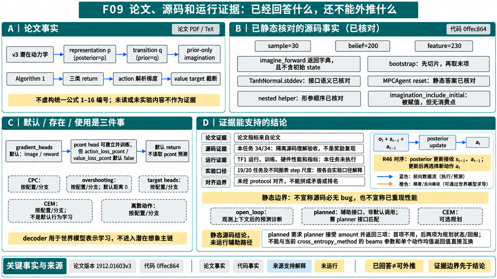
129b6fb32f793252d7630db767410d5c27d11f945184528d264a5b6b07159996图 F09 全部细节说明：F09论文、源码和运行证据：已经回答什么，还不能外推什么
论文结论、源码行为与运行结果各能证明什么
这幅图整理报告中结论的证据层级。A 区说明论文直接定义和报告了什么，B 区列出固定源码已经能回答的实现问题，C 区区分默认配置与可选能力，D 区限定本任务的运行和性能结论。阅读顺序不是一条计算流水线，而是每次作出结论之前需要经过的证据检查。四类证据并列，不能把来源标签本身当成神经网络节点或额外训练信号。
A：论文事实要回到同一版本
本任务锁定 arXiv 1912.01603v3 的完整 PDF、TeX、算法、图表和附录。潜在模型接口、Algorithm 1、三类价值估计、解析动作梯度和停止梯度的价值目标，都可以从这些材料定位。论文用 representation p 表示观测校正，用 transition q 表示历史预测，不能套用另一篇变分论文的习惯将二者交换。
RSSM 包含确定性记忆和随机状态；真实观测用于推断后验起点，未来想象沿先验转移继续。V_R、V_N^k 和 V_λ 是回报估计定义，学到的 value model 则提供端点价值，三种符号不代表三套价值网络。论文的公式编号应按实际 TeX 与 PDF 定位，不采用未经核对的统一“1至16”编号。
实验事实也需要保留协议。论文二十任务主结果、长视野部分的不同任务表述、以及不同图表横轴的步数尺度不能脱离原上下文拼接。源码说明能帮助理解配置，不能替作者补出原文没有报告的统计量、硬件条件或所有任务的相同设置。方法图与实验图有不同职责，正确的结构示意不能代替结果证据。
B：已经得到静态答案的实现问题
固定提交的 RSSM 随机样本三十维、信念二百维，策略特征只拼二者得到二百三十维。imagine_forward 合并后验字典的批次与时间轴，经先验展开返回 [N,H,D] 的状态叶子；提取 feature 后才是 [N,H,230]，返回序列不含初始化状态。这些已经能从函数体和消费者确认，不能继续笼统归入“尚待运行才知道的形状”。
bootstrap 的读取顺序也已确定：调用者先对 reward、value、pcont 截掉最后一项，再从已经截断的 value 取最后一项。若原长度为 H，该值来自原 H−2 位置。能确认这段静态行为，与能证明作者意图、判定训练影响，是两种不同结论。报告既不应将明确语句写成未知，也不应仅凭索引差异宣称所有实验无效。
TanhNormal.stddev 的函数体对样本相对均值的平方偏差取平均，没有开平方，因此其数值是方差估计形式，不能仅凭方法名解释成标准差。MPCAgent.reset 对指定 latent 轨迹局部清零，却将上一动作张量整批清零。nested.map_ 先接函数，再接一个或多个结构；列表长度、字典键集合和 flatten 的排序契约均由具体实现约束。这些接口行为都有静态答案，不宜全部标为疑似问题或未决项。
imagination_include_initial 在配置中被赋值，却没有相应消费者，不能据字段名称推断返回状态包含初始项。这一结论来自固定快照的读取范围，不是对任意后续版本作出永久断言。若仓库版本改变，相关函数和结论也需按新提交重新核对。
C：存在、训练和使用是三件事
默认 gradient_heads 为 image 和 reward。pcont 头可以建立并训练，但默认 action_loss_pcont=False、value_loss_pcont=False，所以默认行为回报不读取该头的继续概率预测。仅看到定义处存在一个头，不能据此把它画成所有 return 的必需输入；要继续追踪目标权重、分支条件和真实消费者。
CPC、多步预测、target heads、CEM 和离散动作也需要追踪各自的配置与消费者；open_loop 的预测诊断和 planned 的辅助接口还需按各自调用契约分别解释。多步预测的默认距离为零，CEM 是可选规划能力而非默认行为学习，离散动作使用另一套分布和探索分支。它们可以说明源码支持的范围，却不能无条件合并成一条所谓“完整默认 Dreamer 算法”。灰色虚线表示条件性，文字还要写出实际开关，避免把虚线理解为影响较小的默认步骤。
图像 decoder 的职责是表示学习和相应诊断，未来潜在想象直接在状态空间递推。将 decoder 接入 prior 循环会增加论文和固定代码都没有规定的未来像素路径。相反，不在想象中使用 decoder，并不意味着世界模型从未学习图像重建。这一分工需要结合训练阶段与调用者一起解释。
D：理解验收不能当作回报复现
论文表格和曲线中的指标来自论文实验。本任务当前的 34/34 表示隔离的源码理解核验，不是环境奖励、策略得分、运行覆盖率或对用户掌握程度的测量。旧的理解核验记录可以保留为修订证据，但不能混入当前性能比较，也不能据其变化声称策略进步。
本任务没有执行 TensorFlow 1 运行时、环境交互、训练、硬件速度或指标复现。对函数、维度、切片、变量更新范围和异常分支的静态解释，可以清楚回答实现如何定义；对运行时数值、训练稳定性、硬件吞吐和任务表现则必须保持这一证据限制。测试入口没有分数阈值断言时，即使入口被运行通过，也不自动证明达到论文指标。
这些限制不意味着所有源码结论都悬而未决。已确认的接口语义应直接说明，未运行的影响范围单独保留。发现静态差异后，可以准确陈述实际语句和可能相关的机制，却不能跳过实验把它升级为普遍因果。方法、实现和结果分层，能让报告既有明确答案，又不扩大证据强度。
如何把这张边界图用于其他章节
阅读 RSSM 图时，三十维与二百维是当前配置和源码接口事实；阅读潜在想象时，不含初始状态是函数返回行为；阅读回报图时，两组教学数字是指定假设下的纸面计算；阅读主实验图时，分数、预算与随机种子属于论文协议。每次都先确定结论类别，再回到对应原文或固定源码，不依赖同一个笼统的“已验证”标签。
主要源码位置包括 dreamer/models/rssm.py、dreamer/models/base.py、dreamer/training/utility.py、dreamer/distributions/tanh_normal.py、dreamer/control/mpc_agent.py、dreamer/tools/nested.py 和 dreamer/scripts/configs.py，固定提交为 0ffec86436239d41cecaff34abcf57dca5539839。四种文字标签分别表示论文事实、源码事实、来源支持解释和未运行；它们不制造从测试结果到论文分数的因果箭头，也不宣称源码必无错误或性能已重现。
对 open_loop 与 planned 还要进一步区分。前者在摘要生成中读取一段观测上下文后继续先验预测，用于预测诊断；后者在固定快照中定义了辅助规划展开接口，默认动作链没有调用它。planned 向外部 planner 传入 amount，并按三项结果解包，首项不用，后两项作规划状态和回报；当前 CEM 则接收 beams 等参数，返回动作均值序列，不能仅凭名称接近而直接互换。图中的三张边界卡因此分别说明 CEM 可选规划、open_loop 预测诊断和 planned 非默认辅助接口。这是签名与调用者的静态结论，不宣称已经执行辅助路径。
本次原生图新增的时间与辅助接口边界
D 区右侧的小链条是时间顺序说明：当前观测 o_t 与记忆状态 s_{t-1}、产生当前观测的上一动作 a_{t-1} 一起进入 posterior update，更新完成后才由策略产生新动作 a_t。因此图中黄色条特别写出“posterior 更新接收 s_{t-1}、a_{t-1}；更新后再选择新动作 a_t”。这条蓝色链只说明执行时序，不宣称执行过环境；橙色图例表示训练想象中可以沿世界模型求导，真实环境步仍不可微。
三个灰色虚线卡对应三个不同证据对象。open_loop 是观测上下文后的预测诊断，使用上下文后继续先验展开；planned 是固定快照定义的辅助接口，默认动作链没有调用它；CEM 是需要配置开启的可选规划。planned 传入 amount 并接收三项返回，首项不使用、后两项是规划状态和回报；仓库的 cross_entropy_method 则用 beams 等参数并返回动作均值序列，二者不能仅凭名称直接互换。图中把三者并列放在边界区，没有把它们画成默认 Dreamer 模块。
证据表按行阅读：论文证据只承担论文指标和符号；源码证据承担固定提交的尺寸、切片、接口和配置行为；运行证据明确本任务没有执行 TF1、训练、硬件性能或指标；实验口径要求 19/20 任务、不同图表 step 轴和 protocol 各自解释。34/34 是隔离的源码理解验收，不是奖励复现。底部“静态边界”因此同时约束两端：不能把静态差异升级成源码必有 bug，也不能把读懂函数升级成已重现论文性能。
9. 后续表示演化与跨论文证据
在理解 V1 后再看 Dreaming 如何替换重建目标，以及更广的表示、时域、误差和不确定性路线。完整后续论文和候选图谱分别说明已核验机制与检索线索，不能把后续配置回写成 DreamerV1 的原有事实。
Dreaming 与后续路线
Dreaming（arXiv:2007.14535v2）独立学习分析
来源身份与版本
本章以当前任务完整 2007.14535.pdf 为论文事实来源。首页标题为 Dreaming: Model-based Reinforcement Learning by Latent Imagination without Reconstruction，作者 Masashi Okada、Tadahiro Taniguchi，机构为 Panasonic 的 Digital & AI Technology Center，Taniguchi 另列 Ritsumeikan University；版本 arXiv:2007.14535v2 [cs.LG] 12 Mar 2021。PDF 共七页，含正文、式 (1)--(13)、图 1--5、表 I--III、附录 I--III 和参考文献。没有读取 Dreamer 源码或任何历史报告，因此“修改官方代码”只记录论文明确声明，不写未验证函数。
创建背景与实际瓶颈
Dreamer 用像素重建和概率动力学学习 RSSM，再在潜空间想象轨迹中优化行为。Dreaming 的作者指出一个具体失败：自动编码器可把小球、细杆、远处目标或狭小插口当成低权重像素细节；它们占画面面积小，对总重建误差贡献远小于大块机器人和背景纹理，所以模型可能把关键物体漏掉。这叫 小物体消失。图 1 顶部给出 cup-catch、finger turn-hard、reacher-hard、connector insert、UR5 reach 的输入与重建，虚线圈标出缺失对象。问题不是模型总体画面很模糊，而是低重建误差不保证对控制关键对象敏感。
作者保留 Dreamer 的 RSSM 及其在潜空间中的策略网络、价值网络学习，改变控制表示的监督方式。像素重建被替换成对比表示目标，同时增加只服务于对比学习的独立线性动力学，以及对同一场景生成两个视图的随机裁剪。论文联系了 CPC、CFM、CURL 与带数据增强的无模型方法，并报告原 Dreamer 的普通对比损失在多数任务退步；因此“去掉解码器”本身还不能解释方法的收益。
POMDP、RSSM 与原始目标
符号 z_t 为潜状态，x_t 为观察，a_t 为动作。联合生成模型（式 1）沿时间使用 p(z_{t+1}|z_t,a_t)p(x_t|z_t)，ELBO（式 2）是观测似然期望减 transition posterior/prior KL。RSSM 把 z_t=(s_t,h_t) 拆成随机 s_t 和确定 h_t：h_t=f_GRU(h_{t-1},s_{t-1},a_{t-1})，s_t∼p(s_t|h_t)，图像 x_t∼p(x_t|h_t,s_t)，推断 s_t∼q(s_t|h_t,x_t)（式 4）。
原始重建项鼓励 潜表示 包含可解码全部像素的信息，KL 鼓励 posterior 与动态 prior 一致，奖励 模型作为另一个观测保持不变。潜表示 overshooting（式 3）从较早的状态展开多步 prior，再与当前位置 posterior 对齐，使模型的长程想象可用。Dreaming 删除的是图像 解码器 的主要训练目标，保留奖励似然、RSSM prior/posterior 和可微行为学习，不能称为“没有 generative model”。
从重建似然到对比目标
原 Dreamer 对重建项加减常数 log p(x_t)，用 Bayes 将 log p(x_t|z_t)−log p(x_t) 改写为 log p(z_t|x_t)−log p(z_t)；用 小批次 InfoNCE 估计边缘项，得
J_NCE=E_q[log p(z_t|x_t)−log Σ_{x'∈D}p(z_t|x')]（式 5）。
正样本对 是同一时刻的 潜表示 与图像，负样本对 是 批次 中其他图像。它鼓励表示之间可区分，不需要生成像素；但如果只把当前 posterior 与当前图像匹配，会忽略动力学和时间相关性。论文原 Dreamer 基线 的 vanilla NCE 确实在大多数任务退步，这点与新增方法必须分开。
Dreaming 进一步引入独立多步预测 \tilde p(z_t|z_{t-k},a_<t)。式 6 用重要性采样写出密度比 q(z_t|·)/\tilde p(z_t|·)，再为计算简化把该比值近似为常数，得到多步对比 J_NCE_k（式 7）。这个近似不是严格等式或无条件 ELBO 下界；作者将总 批次/time 目标 的比例关系写为近似。最终 J=Σ_{k=0}^K(J_NCE_k+J_KL_k)（式 8），以不同距离的对比和 overshooting KL 训练模型。对比用独立 tilde dynamics，KL 和行为学习用原 RSSM dynamics。
相似度、线性动力学与双视图
判别器采用指数双线性相似度 p(z_t|x_t)∝exp(z_t^T W_{z|x}e_t)，e_t=f_CNN(x_t)（式 9）；正负样本对 的 分类打分 经 softmax 交叉熵。独立 dynamics 定义为 Dirac delta：\tilde p(z_t|z_{t-1},a_{t-1})=δ(z_t−z'_t)，z'_t=W_z z_{t-1}+W_a a_{t-1}（式 10）。它只做 对比学习 rollout，线性约束使相邻时刻表示不能被任意非线性转移推到很远；原 GRU 模型仍用于 策略网络/价值网络 的想象，保留长期表达能力。
图3先用CNN、GRU与全连接网络根据过去图像推断状态，再用线性模型预测未来潜表示，与未来图像的CNN编码向量做双线性匹配。两个独立预处理器从72×72图像中随机裁出64×64视图，裁剪原点分别采样。这样同一场景的精确像素位置可以不同，判别器较难只凭背景纹理认出同一帧。负样本可以来自不同批次或不同时间，图3用(B×K)²个匹配打分说明组合规模；时间与批次的组织直接影响分类难度。
教学数值实例（非论文数据）
设 z_{t-1}=[1,0]，W_z=diag(0.8,0.9)，W_a=[0.2,0.1]^T，动作0.5，则线性预测 z'_t=[0.9,0.05]。令两个图像 编码向量 与该 潜表示 的 bilinear logit 为正样本2、负样本0，正概率 exp2/(exp2+exp0)≈0.881，负对数 损失≈0.127。下一步若动作仍0.5，预测为 [0.82,0.095]，对比真实下一图像；K=3 连续约束多步。这只是式 9--10 的教学运算，不代表论文的潜表示维度或批次。
信息论解释与推导边界
附录 I 把多步 分类打分 抽象为 f(x_t,z_{t-k})，理想判别器满足 f∝p(x_t|z_{t-k})/p(x_t)；经 Bayes 和边缘化得到 E[J_NCE_k]≤I(x_t;z_{t-k})（式 11--13）。原 J_NCE 对应 k=0 的 I(x_t;z_t)。作者用 Markov/data-processing inequality 说明同一 InfoMax 上界关系，但要注意：重要性比被常数近似后，实际目标不再严格等同原 似然，论证依赖判别器近似和 批次 负样本。可说多步目标保留时间可预测信息，不能说去 解码器 就保证捕获所有 奖励 相关变量。
训练与推理顺序
训练时真实图像先分别裁剪，后验潜状态与图像编码对齐，再由独立线性模型构造多步对比目标，同时计算多步KL；奖励预测头仍拟合真实奖励。行为学习沿用原Dreamer：RSSM的GRU先验生成想象轨迹，策略与价值目标保持原路径，新真实观测随后进入经验集。新增距离K=3来自附录III。论文只说其余超参数与原Dreamer相近，没有逐项完整网络表，因此学习率、批次大小和潜状态宽度不能凭记忆补成源码事实。
推理时后验根据真实图像推断潜状态，策略网络读取该状态并输出动作，无需解码图像。独立线性辅助动力学只用于表示训练，不能接到策略想象中替代具有更强表达能力的GRU。图4为观察潜状态中保留的信息，另训练诊断解码器，并阻断重建梯度返回主模型；它不改变主算法无需解码器的训练目标。
图表、实验和消融
表I比较十五个任务，重点包括五个小物体消失任务。在十万步cup-catch上，Dreaming为925±48，Dreamer为698±350；约五十万步时，reacher-hard为868±272对8±33，finger-turn-hard为752±325对264±368，UR5-reach为845±147对652±230，connector-insert为629±391对169±348。均值与标准差基于四个随机种子和十条连续轨迹；较大波动说明优势不等于单次可靠性保证。其他关键对象较大的操作任务差别较小，pole-swingup的细杆任务受益，而平面运动控制中的walker、cheetah和hopper存在退步。
图4的视频以前五帧作为观测上下文，然后开环预测。cup、finger与pole的位置仍能从潜表示中由诊断解码器恢复，cheetah的棋盘地板却消失。作者指出相机跟踪机器人中心时，估计速度需要背景纹理；如果区分样本只需机器人姿态，对比学习就可能忽略速度线索。因此去除重建并不保证控制表示更好，增强所追求的不变性也可能删除任务必需信息。
表II左侧把独立线性辅助模型换成共享RSSM动力学，cup从925±48降为575±449，reacher从868±272降为232±370，finger从752±325降为263±369。右侧去掉随机裁剪后，reacher仅11±32、finger为114±283；单独颜色扰动不能补偿，把颜色扰动与裁剪合用也不如仅裁剪。表III检查K=1、3、5、7，K=3在三项任务总体最好，过短或过长会变差。证据支持适当的时间约束与特定增强有用，不能外推成所有增强等价或无限多步必定更好。
图5给出两个原创模拟任务：UR5末端移动到随机目标，观测混合两个视角以提供深度线索；连接器任务将毫米尺度插头插入紧配合插口，需要精细视觉控制。它们没有证明真实工业机器人已经部署。五张图分别承担不同证据：图1展示失败现象和方法，图2给出POMDP概率模型，图3说明分类打分结构，图4诊断开环预测，图5说明任务设置；任何框图都不能代替表I的效果比较。
与 Dreamer 的显式关系与限制
Dreaming的首页、第二页与第四页明确说明沿用Dreamer的策略优化，并修改表示损失，因而它与Dreamer的扩展关系有作者直接表述。论文引用Dreamer、SLAC、PlaNet、World Models和SimPLe，新增的是多步InfoNCE、独立线性动力学和随机裁剪。第二页还区分相近路线：CFM用共享非线性模型学习表示与行为，CPC没有动作条件的控制想象，CURL把对比学习接到无模型强化学习。对Dreamer的批评限定为特定小物体消失任务，不能扩展成像素重建普遍无用。
结论承认平面运动控制的退步，以及训练早期对模型偏差过拟合，并提出以后可以考虑利用不确定性的策略；论文没有实现PETS式概率集成。密度比取常数的近似、线性模型的归纳偏置，以及裁剪可能丢失背景速度，都是既有证据的边界。论文只说明修改了官方TensorFlow Dreamer，实现本身未作为本章来源，因此这里不提供未经核对的函数、行号或训练配置。
进一步机制解释与失败例
关键对象消失的原因来自损失度量而非解码器单一结构。设背景占画面95%、小球占1%，两个模型分别把背景误差减少2%和把球位置恢复；逐像素总平方误差很可能更奖励背景修复，尽管控制只需要球位置。对比目标将整个图像样本作为类别，不按对象面积分配权重，使球移动可能成为区分正负样本的重要信号。这只是机制直觉，论文没有测量逐对象梯度，所以不能说对比学习总会自动注意小球。
独立线性预测和随机裁剪有互补角色。没有线性约束，强非线性模型可以把每个未来样本映到任意位置，只要双线性判别器能区分，潜表示可能不平滑，行为模型不容易利用；没有裁剪，判别器可能通过背景边缘、精确像素位置识别同一帧，而不学关键控制变量。表II分别替换这两者，给出受控下降，因此本篇的收益不能缩写为“删解码器”三字。
对比目标的逐步计算与理论强度
把重建概率改成判别概率时，作者先加上不依赖参数的数据边缘常数，再应用贝叶斯公式；这一阶段可以保持目标的等价关系。随后用批内负样本近似潜状态的边缘分布，得到一个分类目标：同一个图像与其状态是正项，其他图像与该状态是负项。分类并不要求输出图像，只要求正项比负项更相似，因此避免了大块背景像素对重建误差的主导。它也改变了模型必须保留的信息：只要某些特征足以区分样本，其余特征可以被忽略。
多步版本的推导进一步需要从较早潜状态采样预测未来潜状态。为了把当前后验下的期望改成预测分布下的期望，严格的重要性采样必须乘密度比；论文为计算方便将其视作常数。这是实际算法与原始似然目标之间的关键近似，不能因为目标名字叫“从证据下界推导”就将其当成完全严格的原ELBO。附录的互信息解释依赖理想判别函数与批内估计，实际有限批次、有限网络容量、相关时间样本都会影响界的紧度。
数据处理不等式提供的是信息上限关系，而不是控制充分性。较早状态通过马尔可夫转移影响当前图像，所以当前状态不应比过去状态包含更少可用于预测的相关信息；但奖励可能依赖非常细小的、批内不容易区分的因素，对比目标仍可能忽略它。论文用小球和细杆实验表明某些困难任务确实改善，又用移动背景的运动控制反例承认并非普遍。这两个结果应同时保存，不能只选有利的五项任务。
两条动力学的输入、消费者与更新
原RSSM接受上一确定记忆、上一随机状态和动作，生成下一确定记忆，再输出随机先验；真实图像输入后验校正。独立线性模型则从已推断的潜表示和动作生成多步表示，只用于构造对比分类打分。它不是更低成本的行为模型，也不是替代GRU的真实世界预测器。两个模型接受的action时间索引一致，但损失消费者不同：KL约束原RSSM与后验，NCE约束线性未来与图像编码向量，策略网络/价值网络只用RSSM想象。
如果把线性模型接到策略训练，便改变论文方法，因为它刻意以低容量牺牲精确长期预测来平滑表示。反过来，如果把高容量RSSM同时用于所有NCE 分类打分，表II的共享模型对照表明它可能把相邻样本推得过远，导致控制表现下降。两条路径的解耦不是冗余网络，而是让“可控世界预测”和“判别表示平滑”分别采用适合的归纳偏置。论文没有给出每条路径的参数量，因此不做未公开的容量比较。
多步距离的作用与失败条件
只用K=1，相邻图像相似、目标变化小，判别器可能利用短期纹理或姿态而不建立稳健运动语义；表III三项任务显著低于K=3。距离过长，线性模型累积近似误差，未来正项变得难以预测，目标可能与原RSSM表达能力冲突；K=5/7因此不稳定或下降。这个解释与表中趋势一致，但不是作者证明的单调误差公式。最稳的结论是适当的多步时间约束有用，最佳距离依任务和模型，不能把K=3当成通用常数。
一个教学失败例是相机追踪身体，机器人每次姿态相近但平移速度不同。随机裁剪与对比分类可以仅靠身体形状区分样本，背景棋盘被视为扰动而删除；对于cheetah或walker，速度却需要背景相对移动，因而表示丢了奖励所需变量。图4的棋盘地板消失是这种失败的可见证据，表I的运动控制回报下降是行为证据。它提醒数据增强的“不变性”必须匹配任务，不能默认背景总无关。
训练、诊断解码与结果解释
论文仍训练奖励似然，所以即使没有像素重建，潜表示也受任务回报监督；对比目标不单独承担所有任务信息。行为学习与Dreamer完全相同这点使主实验更接近表示消融：改变编码器/世界模型目标后，策略网络/价值网络流程固定。然而随机裁剪同时改变输入，独立线性动力学同时改变训练结构，所以收益不是单一损失项的因果效果，需要表II分组件阅读。
图4使用另一个独立训练解码器，把潜表示变回图像供研究者观察，重建梯度不返回原模型。它说明表示中仍可恢复小对象位置和方向，不能说明主训练重新引入解码器；同样，诊断解码器能重建并不等于所有潜表示物理状态已识别。视频的左五帧是观测上下文，后续才开环；如果只看观测上下文，会误把后验重建能力当成长期预测能力。本文对这条路径标为diagnostic，不将其计入策略推理。
原创任务与统计限制
UR5-reach将两种视角混合在同一个图像，隐式提供深度，目标随机初始化；connector-insert任务夹持毫米尺寸连接器、插入紧配合插口。它们旨在模拟工业应用，但没有真实机器人实验，也没有执行器延迟、传感器噪声、碰撞安全或跨域转移评估。表I约五十万步的结果只证明模拟任务中相对性能，不能包装为工业部署成熟度。
四个随机种子和每次十条轨迹的均值/标准差有明显大波动，尤其connector的629±391与对照169±348。均值优势可支持作者的方向，但对单次训练可靠性仍有限；表II/III同样不包含显著性检验。比较CURL、DrQ、RAD时训练目标、模型交互和计算预算不同，论文主要控制环境步与原Dreamer架构，不能从样本效率直接推断总算力最省。本文保留这些统计边界与主结论同等可见。
Dreaming 保留了什么，改变了什么
Dreaming 保留 RSSM 的状态预测和潜空间策略/价值学习，改变的是控制表示的监督信号与辅助动力学。检查本文时要同时追踪“哪个目标更新主模型、哪个模型只构造对比约束、哪个解码器只用于诊断”；只说“去掉重建”会漏掉这三条不同路径。
与四篇前序的精确位置
SLAC 用 sequential stochastic model 改善价值网络表示，却仍把策略网络放在历史观测上；Dreaming使用Dreamer的RSSM 策略 optimization，但将解码器重建替换成NCE。SimPLe用像素世界模型在PPO内训练策略，MuZero进一步放弃像素重建、预测search相关量并用MCTS策略target；Dreaming没有search tree、visit count或value-equivalent抽象模型。因而这些论文构成不同的model-based轴：表示监督（重建/对比）、规划机制（PPO/MCTS/策略网络-价值网络）和潜表示消费者（posterior 价值网络/prior imagination）。本篇只在第一轴上改造Dreamer，不能用它的结果支持MuZero式规划。
实际实验结果如何回到问题
小物体消失的主指标不是图像质量，而是任务累计回报。Reacher-hard和Finger-turn-hard的Dreamer基线均值很低，Dreaming显著提升；Reacher-easy、Finger-turn-easy、Finger-spin等对象较大任务差异缩小，恰好符合“只有小关键物体才受重建损失伤害”的问题定位。Walker-walk、Cheetah-run、Hopper-hop的对照则显示背景纹理可能是控制速度所需信息，说明“鼓励不变性”也有反例。表I同时含这四类任务，不能只摘前五项形成全面胜出叙述。
附录III K=3消融是唯一对overshooting距离的直接选择依据，未检验每个任务的独立最优K；作者把K=3固定到所有主实验以减少调参。表II independent 线性动力学 的对照不是去掉模型，而是用共享高容量p取代独立低容量tilde p；随机裁剪的对照移除两个独立预处理器，color jitter另列参考。读者复现时应按这三个对照方案保持其它损失与行为流程相同，否则无法复现组件贡献。
最小失败案例和迁移警告
若一张画面中的关键连接器只占十几个像素，而背景纹理占九成，重建模型可以降低背景误差而保留一个错误位置的连接器；策略在潜空间想象中看不到插口，策略网络即使优化充分也不能完成插入。Dreaming用裁剪和对比正负样本把连接器位置差异放大，但若相机随机器人移动、背景承担速度线索，裁剪反而可能删去必要信息。这个案例与表I的connector优势、cheetah退步同时吻合，说明方法依赖视角和任务的视觉因果结构。
Dreamer的原始ELBO重建项对小对象是弱监督，Dreaming的InfoMax目标对区分样本是强监督；两者优化目标不同，不能把NCE数值直接与重建对数似然比较。作者没有报告重建误差、互信息估计或潜表示 calibration，因此只能用累计回报和消融支持有效性。若迁移到新机器人，应先验证关键对象是否在增强后仍可区分，再决定裁剪范围和K；这是基于论文失败分析的工程推断，不是本文实验。
完整 PDF 覆盖与源码边界
第1--2页覆盖动机、贡献、related work；第2--4页覆盖ELBO、RSSM、原Dreamer和新NCE推导；第4--5页覆盖bilinear 判别器、线性动力学、裁剪与Dreaming训练；第5--6页覆盖15-task表、open-loop图和component ablation；第6页覆盖结论、互信息附录、原创任务与K表；第7页为参考文献。所有公式、表I--III、图1--5和附录I--III均已回读。PDF只说明修改官方TensorFlow Dreamer仓库，没有把实现代码作为本任务来源，因此不存在函数/行号证据；JSON receipt 会明确记录这一 来源边界。
只有七页并不代表它是摘要：方法推导包含ELBO、InfoNCE、重要性采样近似、数据处理不等式和线性动力学；实验包含十五个任务的比较、两组组件消融与K敏感性，附录全部读入。公式的箭头停止梯度和正负目标符号需保持原文的最大化约定；若转为损失最小化，整体负号必须一致。本文使用短标签和教学数值辅助说明，未以通用RL背景填充，不把原文未公开的训练细节伪造成实现。
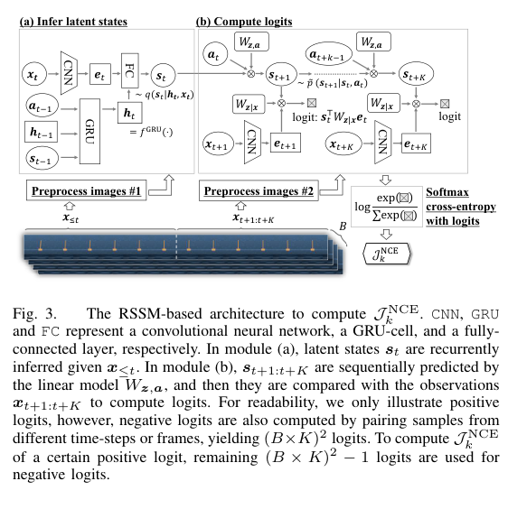
71b1cb73a068396e6fbb7e174ead3ec488378700129f766cf6b324971d8a6398原论文图表解读：Dreaming 的 RSSM-NCE 计算图
Dreaming · Figure 3
图表说明：图 3 展示用 CNN、GRU、FC 和独立线性 dynamics 计算 J_NCE^k 的两个模块：推断 latent states 与计算 positive/negative logits。
进一步分析：模块 (a) 从历史图像得到 s_t；模块 (b) 用 W_z、W_a 线性预测 s_{t+1:t+K}，再与另一组随机 crop 的图像特征配对，形成 (B×K)^2 个 logits 的 softmax 交叉熵。线性模型只服务对比学习，策略优化仍使用 GRU 的表达能力，避免把时序相邻样本推得过远。
证据边界：图中负样本连接为简化示意，实际数量和 batch 组织由 caption 给出；它是 Dreaming 的后续方法，不能回写为 DreamerV1 的原生 decoder-free 目标。
来源：04_cross_paper/paperqa_corpus/2007.14535.pdf，SHA-256 0c5b25944211e4b35f4a34724ac95e0d9e262527f2057210317a8fd7179212cb，PDF 第 4 页；原始整页：10_figures/original-paper/full-pages/2007.14535-p4.png；裁剪框（PDF points）：(307, 42, 562, 298)；裁剪图：10_figures/original-paper/assets/2007.14535-figure-3-p4-crop.png，SHA-256 71b1cb73a068396e6fbb7e174ead3ec488378700129f766cf6b324971d8a6398。
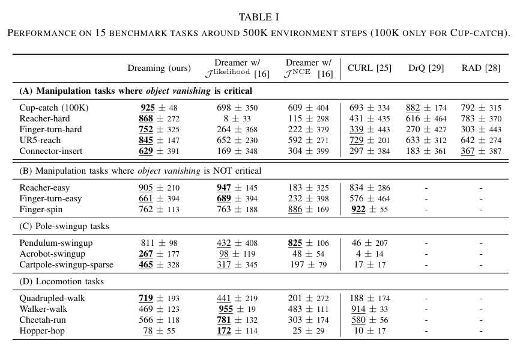
7a16e294d7e0ae0b8ad384ed2cae2c370615a6372ffe04b342a600e1b33eb941原论文图表解读：Dreaming 的 15 任务性能
Dreaming · Table I
图表说明：表 I 报告约 500K 环境步（Cup-catch 为 100K）时 Dreaming、两种 Dreamer、CURL、DrQ 和 RAD 的均值±标准差。
进一步分析：在 object vanishing 关键的五个 manipulation 任务中，Dreaming 在 Cup-catch、Reacher-hard、Finger-turn-hard、UR5-reach、Connector-insert 都达到最高或近最高值；例如 Cup-catch 925±48，高于 Dreamer 的 698±350。相反在 Walker-walk、Cheetah-run 等 locomotion 任务，Dreaming 落后 Dreamer，支持作者对背景纹理承载速度信息的解释。
证据边界：表格平均 4 个 seeds、10 条连续轨迹且各任务预算不同；它证明论文协议下的相对趋势，不能外推到未列出的控制器或环境。
来源：04_cross_paper/paperqa_corpus/2007.14535.pdf，SHA-256 0c5b25944211e4b35f4a34724ac95e0d9e262527f2057210317a8fd7179212cb，PDF 第 5 页；原始整页：10_figures/original-paper/full-pages/2007.14535-p5.png；裁剪框（PDF points）：(110, 40, 501, 310)；裁剪图：10_figures/original-paper/assets/2007.14535-table-i-p5-crop.png，SHA-256 7a16e294d7e0ae0b8ad384ed2cae2c370615a6372ffe04b342a600e1b33eb941。
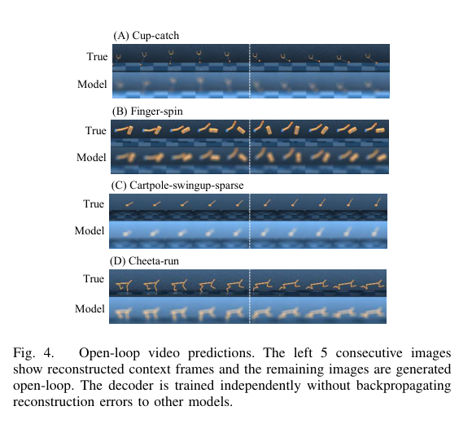
7917b03533df922ccd211fd9f1abd1af270b542872a6da88c6d70e6109e8c491原论文图表解读：Dreaming 的开环视频预测
Dreaming · Fig. 4
图表说明：图 4 对 Cup-catch、Finger-spin、Cartpole-swingup-sparse 和 Cheetah-run 展示前五帧重建上下文及后续 open-loop 生成帧。
进一步分析：模型在 Cup-catch、Finger-spin 和 Cartpole 中保持物体位置/姿态等控制相关特征；Cheetah-run 的 checkered floor 逐渐消失，正好对应速度信息依赖背景纹理的失败模式。开环图因此把表格中的任务差异连接到表示学习：decoder-free 对象保持有效，但并非所有背景运动都被保留。
证据边界：decoder 独立训练且没有把重建误差反传给其他模型；这组可视化不能单独证明 open-loop 像素逼真度或长期策略性能。
来源：04_cross_paper/paperqa_corpus/2007.14535.pdf，SHA-256 0c5b25944211e4b35f4a34724ac95e0d9e262527f2057210317a8fd7179212cb，PDF 第 5 页；原始整页：10_figures/original-paper/full-pages/2007.14535-p5.png；裁剪框（PDF points）：(306, 300, 562, 539)；裁剪图：10_figures/original-paper/assets/2007.14535-fig-4-p5-crop.png，SHA-256 7917b03533df922ccd211fd9f1abd1af270b542872a6da88c6d70e6109e8c491。
世界模型前沿：表示、长时域与误差
范围与方法
本阶段围绕 DreamerV1 的机制来源和后续演化检索 2020–2026 的世界模型、潜变量动力学、想象式强化学习、长时域模型误差和离散世界模型工作。检索结果来自 arXiv/OpenAlex/Crossref；标题或摘要关系仍只标为候选，只有全文回读后才升级为关系证据。
表示、记忆与长期误差的后续路线
| 论文/方向 | 与锚点的关系候选 | 前沿问题 | 当前证据 |
|---|---|---|---|
| Mastering Atari with Discrete World Models（DreamerV2） | successor-extension | 连续高斯状态换成离散表示，能否支撑 Atari 规模 | 已取得 ar5iv 全文，待深读 |
| Mastering Diverse Domains through World Models（DreamerV3） | successor-extension | 跨任务固定超参、尺度与归一化 | ar5iv route 无内容；当前条目仍是候选，未升级为已完成全文证据 |
| Dreaming: Latent Imagination without Reconstruction | successor-extension | 去掉像素 decoder，解决 object vanishing | 已取得全文 |
| TransDreamer | successor-extension/alternative | Transformer world model 与 RSSM 的替换关系 | 候选全文 |
| Iso-Dream | successor-extension | 分离可控/不可控视觉动态 | 候选全文 |
| Planning to Explore via Self-Supervised World Models | contemporary/extension | 表示学习与探索信号结合 | 候选全文 |
| Deep Hierarchical Planning from Pixels | extension | 分层长时域规划 | 候选全文 |
| Dream to Adapt | extension | 潜在上下文和 MDP 想象用于元强化学习 | 候选全文 |
| Koopman Dreamer | analysis/extension | 线性谱约束对长期想象稳定性的影响 | 2026 preprint，候选 |
| Imagined Rollouts are Kinematic, Not Dynamic | analysis-or-critique | 长期世界模型预测的动力学失真诊断 | 2026 preprint，候选 |
| ELVIS | analysis/extension | 集成不确定性与长时域 latent MPC | 2026 preprint，候选 |
| DreamerV3-XP | extension | DreamerV3 探索不确定性 | 2025 preprint，候选 |
| WorldGym | tooling/analysis | 世界模型作为策略评估环境 | 2025 preprint，候选 |
| Dynamics-Aligned Latent Imagination | extension | 动力学对齐与零样本泛化 | 2025 preprint，候选 |
这些后续路线改变了哪项假设
前沿工作主要沿四条机制路线推进：离散化或更强的状态表示、将重建目标替换为对控制更有用的表示目标、用 Transformer/层次结构延长记忆和规划、显式处理长期模型误差与不确定性。它们改变的是 Dreamer 的表示、状态更新或模型可信度假设，而不是否定“在紧凑世界模型中学习行为”的中心闭环。该结论只作为 Phase 1 的检索地图，不能替代 Phase 3 的逐篇证据。
领域图谱：70 条候选如何组成机制组
候选论文的筛选范围与关系强度
- 原始合并：157 条唯一记录，来自五组 arXiv、三组 OpenAlex、Crossref；Semantic Scholar 在限流后返回 0，未冒用其他数据库字段。
- 过滤后
paper_db.jsonl：70 条候选（满足 35–80 门禁），每条保留标题、作者、年份、来源、PDF URL、摘要和 arXiv 键。 candidate-relations.md另保留经锚点正文引用和机制关键词整理的关系候选；候选标签不是已证实继承关系。
按机制聚类
1. 问题来源与世界模型
包括 World Models、Embed to Control、Action-Conditional Video Prediction、E2C、I2A 和 PlaNet。共同问题是图像输入带来的部分可观测性、像素预测成本和模型误差。它们的差异在于控制器是否在模型内规划、是否只用模型产生额外特征、以及潜状态是确定性还是随机性。
2. 多步回报与模型辅助值估计
包括 MVE、STEVE、VPN、MBPO、ME-TRPO、POLO、PETS 和 MuZero。它们主要解决 model-free 方法的样本效率和短视值估计，但多数把模型当作 target 生成器或规划器；Dreamer 更进一步把策略梯度直接穿过潜状态转移。
3. 潜变量 actor-critic 与表示学习
包括 SLAC、SAC、SVG、Dreaming 和 DreamerV2。比较槽位是状态后验、transition、reward、value、action 的分工；Dreaming 去掉图像重建，SLAC 将表示学习和 actor-critic 绑定，DreamerV2 使用离散 latent。
4. 后续世界模型规模化
包括 DreamerV3、TransDreamer、Iso-Dream、分层规划和世界模型评估工作。该组主要修改状态表示、记忆结构、探索和不确定性，不应回写为 DreamerV1 已有机制。
5. 失败诊断和边界
包括 model error、长时域 imagined rollout 失真、uncertainty-aware MPC 和 representation collapse 研究。它们为 DreamerV1 的两个假设提供边界证据：RSSM 在想象 horizon 内足够准确；重建/对比目标学到的状态包含控制所需信息。
代表全文选择原则
Phase 3 选择 11 篇：问题来源 1 篇、直接前序 1 篇、同期替代 4 篇、锚点 1 篇、后续扩展 3 篇、批评/规划 1 篇。选择依据是机制代表性、锚点正文明确引用、完整全文可获得和代码/实验可交叉核验；不是按引用量排序。
代表方法的二次比较：按问题和机制回顾
本文件不是摘要清单。每篇都单独记录创建背景、核心机制、形式化对象、训练/推理流程、实验论证、边界和与 DreamerV1 的关系。数值只在对应全文或 anchor source 有定位时使用；后续论文不回写为 DreamerV1 的事实。
1. World Models（arXiv:1803.10122）
创建背景与问题
World Models 将“从图像直接学策略”的高维问题拆成世界模型和控制器。论文的基本观察是：如果视觉输入先经过可压缩的视觉表征，再在潜状态中预测未来，控制器就可以在模型生成的轨迹上学习，减少真实环境交互。它把模型学习和策略学习分成两个阶段：VAE 负责视觉压缩，MDN-RNN 负责潜状态的时间演化，线性或小型控制器在“梦境”中优化。
机制与计算
每个时间步先用视觉编码器得到潜变量 ，RNN 隐状态 接收 与动作 ，输出下一状态分布。控制器接收 或其拼接并产生动作。与 Dreamer 的差异是，World Models 的控制器不是与世界模型端到端联合的 actor-critic；世界模型先固定，再在模型生成的 rollout 中训练控制器。这个结构证明了“紧凑状态中的想象”可行，却没有解决 DreamerV1 关注的长时域价值估计和策略梯度穿过转移的问题。
实验与边界
全文实验覆盖 CarRacing 等视觉控制任务和模型内演化实验，重点是生成的视觉状态足以支持控制，而不是在大规模任务上比较样本效率。模型误差会在 rollout 中累积，控制器依赖潜状态质量；两阶段训练也让表示目标与策略目标的协同受限。作为问题来源，World Models 支持 Dreamer 的“先压缩、再想象”前提，但不能直接支持 DreamerV1 的 actor-critic 公式。
与锚点关系
关系类型为 problem-origin，证据是 DreamerV1 Related Work 明确列出“two-stage process to evolve linear controllers in imagination”。继承的是 latent imagination 的问题框架；DreamerV1 改为 RSSM + action/value models + stochastic backpropagation，并在真实数据后验状态上持续更新世界模型。
2. Learning Latent Dynamics for Planning from Pixels / PlaNet（arXiv:1811.04551v5）
创建背景
PlaNet 直接面对“从像素学习足够准确的多步动力学并进行在线规划”。传统像素预测成本高，模型误差会让长 rollout 失真；纯 model-free 方法则需要很多交互。PlaNet 的目标不是训练一条长期策略，而是每个真实决策时刻在潜空间做短期 online planning。
RSSM 与 latent overshooting
PlaNet 的 RSSM 同时维护确定性 recurrent belief 和随机 stochastic state。representation model 看到 ，transition model 只看上一状态和动作，reward model 从状态预测奖励。多步 latent overshooting 让后验与多步先验在多个距离上对齐，缓解只在单步 KL 上训练造成的短期动力学。规划器用候选动作序列和交叉熵方法搜索，不需要把策略梯度穿过整个 rollout。
实验论证
全文在 DeepMind Control Suite 的像素任务上比较随机、基于模型规划和 model-free 基线，报告了接触动力学、部分可观测和稀疏奖励任务。其核心证据不是“潜状态漂亮”，而是 latent transition 能预测未来奖励并支持 MPC。附录给出 overshooting 距离、RSSM 组件和规划超参，必须与 DreamerV1 附录 A/B 一起阅读。
与锚点关系
DreamerV1 复用 PlaNet 的 RSSM 表示和重建训练，但把行为学习从每一步 MPC 改成 action/value model 的批量 imagination。DreamerV1 的实验中特别重跑 PlaNet 并固定 ，因此比较时必须区分“同一世界模型”和“不同的行为派生机制”。PlaNet 的规划不需要 value model，但它对 horizon 和计算量更敏感；Dreamer 用 把 horizon 之外的奖励接到 value bootstrap 上。
3. Deep Reinforcement Learning in a Handful of Trials / PETS（arXiv:1805.12114）
问题定义
PETS 研究如何让模型-based RL 既保持样本效率，又避免模型误差破坏最终性能。它不假定单一动力学网络足够可信，而是用概率神经网络集成表达 epistemic/aleatoric 不确定性，再在短 horizon 里进行采样式规划。
机制
每个 ensemble 成员预测状态增量或下一状态分布；trajectory sampling 将不同模型和粒子组合，传播不确定性。CEM 在动作序列分布上反复采样、评估、精英筛选和更新。控制输出只执行第一步，然后重新观测并规划。PETS 的关键选择是“短 rollout + 重规划”，把长期模型错误限制在闭环 MPC 内，和 Dreamer 的“固定世界模型中长链反向传播”形成对照。
实验与边界
全文在 MuJoCo 连续控制中比较 PETS、SAC、PPO 和其他 model-based 方法，强调在较少环境样本下达到接近 model-free 的最终性能。它的代价是每个真实时刻要做大量粒子和 ensemble 评估，规划不能直接提供可复用的策略网络。DreamerV1 的优势声明“更快训练、更低环境步数”依赖的正是把规划成本移到一次性的 policy/value 学习；但 Dreamer 牺牲了显式 ensemble uncertainty，需要世界模型在想象 horizon 内足够可靠。
4. Model-Based Value Expansion / MVE（arXiv:1803.00101）
背景与机制
MVE 的问题是：model-free Q-learning 的一步 target 方差大，而无限信任 learned model 又会把模型偏差写进 target。MVE 从 replay state 开始用模型 rollout 固定 步，再用 Q function bootstrap。 是控制 bias/variance 的显式旋钮；它不把 policy gradient 穿过转移，而是用模型改进 value target。
实验与理论
全文通过连续控制实验比较不同 rollout depth、模型误差和 off-policy actor-critic。附录给出 deterministic policy improvement 和 model-based value expansion error 的条件，说明模型误差、rollout 深度和 target 误差之间的关系。它支持 DreamerV1 采用“多步回报 + learned value”来超越短 horizon，但不支持 Dreamer 的 reparameterized actor gradient，因为 MVE 的梯度边界在 Q target。
与锚点关系
DreamerV1 Related Work 明确引用 MVE 作为“learned dynamics 生成 multi-step Q targets”的路线。锚点的具体改变是：value model 直接在 imagined latent states 上回归 ，action model 的梯度穿过 。因此两者共享“有限 rollout 修正值估计”的问题，但表示、策略更新和不确定性处理不同。
5. Imagination-Augmented Agents / I2A（arXiv:1707.06203）
背景
I2A 试图结合 model-free policy 的鲁棒性与 model-based imagination 的数据效率。核心立场是模型如何被使用不应由手工规则完全规定，策略网络可以学习解释 rollout 的方式。
机制
环境模型从当前观测和候选动作生成未来观测/奖励；多个 rollout encoder 读取不同动作分支，得到 imagination features；这些特征与原始观测编码拼接，交给 model-free policy/value 网络。模型预测不是最终决策器，而是额外上下文。这样即便模型有局部错误，主策略仍可学会忽略不可靠的 rollout。
实验
全文在 Sokoban 和 MiniPacman 上比较 model-free、纯 model-based 和 I2A，重点观察数据效率、模型 misspecification 和跨任务泛化。附录给出 rollout policy、训练/蒸馏设置和架构。I2A 的实验支持“想象可以作为表征”，但没有验证 DreamerV1 的长 horizon value backprop；其策略梯度仍主要来自 model-free loss。
与锚点关系
I2A 是 direct-predecessor 候选但不是 RSSM 直接继承者。DreamerV1 选择让 latent imagination 成为主训练环境：状态、动作、奖励和值都在 latent trajectory 中计算，梯度直接穿过动态。I2A 的鲁棒性启发了“不要让模型错误直接决定真实动作”的边界，但 DreamerV1 依靠数据重建和短 horizon 约束来控制这种风险。
6. Stochastic Latent Actor-Critic / SLAC（arXiv:1907.00953）
问题与表示
SLAC 将视觉表示学习与 actor-critic 学习放入统一 stochastic latent variable model。它认为高维像素策略学习同时要解决 representation learning 和 task learning；先学紧凑 latent，再在 latent 上进行 RL 可以提升样本效率。
机制
SLAC 使用序列潜变量模型预测观测和奖励，并通过 ELBO 类目标学习 latent dynamics。actor-critic 在潜空间运行，图像编码器只通过指定的梯度路径更新。其训练通常把真实序列后验状态喂给 actor-critic，而不是像 Dreamer 一样从每个 posterior state 展开长 imagined trajectory 再做 value gradient。
实验与边界
全文在像素输入的连续控制任务中与 SAC、PlaNet 等比较，报告样本效率和最终分数。附录列出 latent factorization、网络架构、训练/评估细节及 ablation。SLAC 支持“视觉控制需要显式表征学习”的判断，但其核心贡献不是 Dreamer 的 long-horizon imagination；对比时要区分“latent actor-critic”与“在 learned dynamics 上反传多步 return”。
7. SimPLe / Model Based Reinforcement Learning for Atari（arXiv:1903.00374）
背景
SimPLe 关注 Atari 的真实交互成本。它用视频预测模型生成短模拟数据，再在模型数据上训练策略。与 DreamerV1 主要使用连续 latent state 不同，SimPLe 直接保留图像/视频预测，并用短 rollout 周期性刷新模型。
机制与实验
全文比较多种视频预测架构，设计 Simulated Policy Learning 的循环：收集真实片段、训练世界模型、在模型中生成模拟片段、更新策略、再回到环境。实验限定在 100k interactions 的低数据 regime，报告多数 Atari 游戏相对 model-free 的收益，同时明确预测质量和长时域误差是瓶颈。附录给出 ablation、架构、数值表和不同交互量结果。
与锚点关系
SimPLe 是 DreamerV1 的同期视觉替代路线。DreamerV1 的 latent state 更适合并行 imagination 和反向传播；SimPLe 的图像预测更直观但计算、像素误差和 rollout 成本更高。DreamerV1 Appendix C 用 SimPLe 作为 Atari baseline，表明锚点在离散控制上的定位是“展示适用性”，不是声称达到后来 Atari 的全面竞争力。
8. MuZero（arXiv:1911.08265）
问题与方法
MuZero 学习一个对任务决策足够的模型，而不是重建全部观测。representation function 将历史压缩为隐藏状态，dynamics function 接收隐藏状态和动作并预测 reward，prediction function 输出 policy/value；MCTS 使用这些预测进行搜索。它将“模型要预测什么”重新定义为 reward、value、policy 等任务相关量。
实验与边界
全文覆盖 Atari、围棋、国际象棋和将棋，强调在未知规则下通过搜索与学习模型结合达到强性能。模型状态不必可解码成像素，换来任务相关抽象，但搜索成本和离散动作树结构是关键依赖。MuZero 的模型学习与行为优化通常按 search target 组织，和 DreamerV1 的连续 latent actor/value imagination 不同。
与锚点关系
DreamerV1 正文在 multi-step returns 相关工作中把 MuZero列为“task-specific reward and value models”的路线。它提供了对 DreamerV1 表示目标的边界证据：重建并非原则上必须；不过 DreamerV1 自身的实验只证明 reconstruction、contrastive、reward prediction 三种选择的差异，不能把 MuZero 的搜索成功直接外推为 Dreamer 的替代实现。
9. Dream to Control / DreamerV1（arXiv:1912.01603v3）
创建背景
锚点论文将三类问题放在一起：图像输入需要紧凑状态；有限 imagination horizon 让只累加 imagined reward 的策略短视；规划型方法常用 derivative-free search，无法充分利用神经网络 dynamics 的解析梯度。Dreamer 的核心改变是同时学习 latent action model 和 value model，在 imagined latent trajectories 上优化多步 。
方法与公式证据
世界模型用 representation 、transition 和 reward 。连续动作采用 ，使采样对网络输出可微。 只累加 horizon 内奖励； 在 步后用 value bootstrap； 对不同 做指数加权，折中 bias/variance。action objective 最大化 imagined ，value objective 回归 stop-gradient target。
实验与边界
20 个 DeepMind Control Suite 像素任务使用 观测、固定 action repeat 。Dreamer 在 environment steps 的平均分为 823，PlaNet 为 332，D4PG 在 steps 达到 786；这些数字是论文报告的五种子平均，不是本任务运行得到的结果。horizon 实验显示 value model 对 horizon 更稳健；representation 实验显示 pixel reconstruction 多数任务优于 contrastive，纯 reward prediction 不足。Appendix A 给出 latent 30 维、dense 300、batch 50×50、、、、KL free nats 3 等细节。
代码待核验点
论文写“未找到 latent overshooting、entropy bonus、value target networks 必要”，但固定源码包含可选 overshooting、divergence、target head 和多种 config 分支；这些必须标记为 optional/legacy，而不是自动归入默认 DreamerV1 主路径。
10. Dreaming（arXiv:2007.14535v2）
后续修改
Dreaming 直接把 Dreamer 的像素重建 decoder 视为 object vanishing 的潜在瓶颈，提出 decoder-free、InfoMax/contrastive 的表示目标，并加入 independent linear dynamics 与 random crop augmentation。核心行为学习仍沿用 latent trajectory imagination，因此它是对表示学习层的替换而不是对 actor/value imagination 的完全重写。
实验与边界
全文在五个模拟机器人任务上比较 Dreaming、Dreamer 和 model-free 基线，报告去掉重建后部分任务改善。附录推导 InfoMax 目标、列出原始任务规格和 overshooting 距离消融。证据支持“重建不是唯一表示目标”，但不能证明 decoder 在所有视觉任务都造成 object vanishing；其结果依赖数据增强、独立线性 dynamics 和具体机器人任务。
深读综合
这些全文共同构成四层网络：World Models/PlaNet 提供压缩与 RSSM；PETS/MVE/SimPLe 代表 uncertainty-aware planning、multi-step target 和图像模型路线；I2A/SLAC 代表想象特征或 latent actor-critic；MuZero/Dreaming 提供任务相关表示和去重建边界；DreamerV1 把它们组合为“RSSM posterior 起点 → latent rollout → value bootstrap → analytic policy gradient”的闭环。真正独特的不是单个 RSSM 或 actor-critic，而是将长期价值、可微转移和批量 latent imagination 放进同一训练图。
10. 实验图表、评测条件和结论边界
实验数字只有连同任务集合、预算、输入模态、随机种子和统计口径才有意义。这里把主控制、horizon、表示目标、动作重复和计算时间放回各自协议，说明结果支持什么，也说明源码和本任务没有验证什么。
实验与代码证据
实验与代码联合阅读
本文件回答“论文实验验证了什么、源码能否支撑什么、不能支撑什么”。实验数字来自 DreamerV1 v3 原页；源码只用于解释实现入口和分支，不用于重新产生数字。
主控制实验
论文在 20 个来自 DeepMind Control Suite 的视觉控制任务上比较 Dreamer、PlaNet、D4PG 及行为派生消融。观测为 ，动作维度为 1–12，reward 归一化到 0–1，episode 最长 1000 步，固定 action repeat 为 2；Dreamer 的报告均值为 823（5e6 environment steps），PlaNet 为 332，D4PG 达到相近水平需要约 1e8 steps。这个结果支持“在该任务协议下，latent imagination + value bootstrap 的组合具有样本效率”，不能推出所有视觉环境或任意硬件下的普遍优势。
源码入口：scripts/train.py:35-53 构造训练过程，training/trainer.py:104-216 管理 phase、summary 和 checkpoint，control/simulate.py:48-135 写入 transition/score/length。源码没有执行这些实验，因而不产生第二份指标。
长时域与 horizon
Figure 4/7 对比 action-only、PlaNet planning 和 Dreamer 的 horizon 行为；附录 D 报告 horizon 20 时 20 个任务中 16 个胜出、4 个平局。论文的解释是：action-only 只看 horizon 内 reward，PlaNet 每个真实步重新搜索而需要计算，Dreamer 的 value model 可以在 latent horizon 末端 bootstrap，并通过链式梯度训练可复用 policy。
源码交叉核验：control/temporal_difference.py:48-74 实现 lambda return，training/utility.py:270-331 将同一 return 分成 value target 与 action objective。control/planning.py:24-74 的 CEM 只是可选分支，不能把它当成 Dreamer horizon 结果的实现来源。
表示目标消融
Figure 8 与 Appendix E 比较 reconstruction、contrastive 和 reward-only。重建在多数任务上更好，contrastive 提供更轻的表征学习，reward-only 在稀疏或视觉相关但非奖励相关的信息上不足。固定源码没有名为 compute_model_loss 的函数。表示目标由 compute_objectives 的 divergence、reward 和普通 head 对数似然分支构造，CPC 另有条件分支；这些入口说明损失怎样计算，不能证明论文曲线。来源：dreamer/training/utility.py:132-241。
动作重复与时间尺度
Appendix F/图 12 在两个 seed 上测试 action repeat，报告该设置中 最好。这个小样本消融不能被写成全局最优规则。源码的环境收集路径允许 action repeat 和 pcont 影响 transition 时间语义，真实配置仍需按任务 preset 读取。
训练时长和硬件
论文报告一张 V100、10 个 CPU cores 下 Dreamer 每 environment steps 约 3 小时，PlaNet 约 11 小时。墙钟是完整实现、硬件和并行度的合成结果，不是纯算法复杂度。Trainer 的 global step 是 batch/phase 管理量，不能直接当 environment step。
实验结论边界
- 支持：在选定视觉控制协议中，学习 latent world model 后从 posterior state 批量想象，并用 value bootstrap 学 action/value，是有效的行为学习组合。
- 不支持：RSSM 在任意环境都准确；重建在所有未来表征任务都优于 CPC；DreamerV1 已达到后续 DreamerV2/V3 的规模能力；3 小时数字可以跨硬件直接比较。
- 代码能回答：入口、默认配置、loss 分支、CEM 可选路径、张量布局。
- 代码不能回答：论文数字是否可被当前机器重现、随机种子方差、TF1/TFP 运行兼容性和发布版本之间所有历史差异。
dca6a3068c1871aac26a4103711843b5523df11e665575e8c90949072a5334f3图 F11 全部细节说明：视觉控制结果：任务、输入、预算、随机性与指标协议
怎样在实验协议内解释视觉控制结果
这幅图把任务、输入、交互预算、统计口径和计算时间放回各自的实验条件。先从 A 确认比较对象，再读 B 的主结果及预算，随后用 C 区分时间单位和消融问题，最后由 D 划定论文、源码与本任务运行证据的边界。分数、环境步和小时分别表示效果、数据成本和实现成本，不能只保留其中最有利的一个数字。
A：主任务的输入和时间尺度
论文在 DeepMind Control Suite 的二十个视觉控制任务上评估 Dreamer。这些任务包含稀疏奖励、接触动力学和三维场景。观测为 64×64×3 图像，动作宽度随任务为一到十二维，环境每步奖励在零到一之间；回合持续一千个环境步，初始状态随机。图中的任务、观测、动作、奖励和回合条件是并列的协议条件，不是相互生成的数据流。
所有这些连续任务使用固定动作重复 R=2。一次策略决策保持动作经过两个底层环境步，因此 agent 决策次数和环境步数不能直接互换。跨方法比较时，动作重复既影响决策频率，也影响相同环境步预算下调用策略的次数。论文为统一比较而重新以 R=2 运行 PlaNet，不能把这个结果与原 PlaNet 论文按任务采用其他动作重复的分数无条件合并。
Atari 的离散动作和 DeepMind Lab 的提前终止设置属于补充实验。它们检查方法的其他适用情形，任务、动作与基线均不同，不进入连续控制二十任务的同一均分。源码测试使用的简化环境也不能代替论文基准任务。图中的补充实验和源码测试需要保留各自标签，避免读者把所有“运行环境”看成一个集合。
B：同时读取分数、输入和预算
论文主性能图的 TeX 标签为 fig:bars。正文与图注给出 Dreamer 在五百万环境步之后跨任务平均分为 823，PlaNet 为 332；D4PG 的像素输入对照平均分为 786，对应一亿环境步。图注说明结果按五个随机种子平均。方法名、输入方式、分数、预算与随机性必须一起阅读，不能把三个数字抽出来当成同预算的无条件排名。
这里的比较支持论文在所述任务协议下达到更少交互、更高平均效果的结论。它没有证明每个任务、每个种子都优于基线，也没有保证未来任意任务的结果。均分还会隐藏不同任务的优势和失败，进一步判断应回到各任务曲线、误差表达和实验条件。
A3C 的对照来自状态输入，而 D4PG 的这里一行使用像素输入。状态输入可以直接提供图像中需要推断的信息，所以不能把 A3C 当作观测条件完全相同的视觉基线。论文引用的基线数据、重新运行的 PlaNet 和作者训练的 Dreamer，也有不同的数据来源。图中的协议说明正是为了让这些差别先于结论进入读者视野。
C：小时数字的分母不同
作者对自己的训练实现报告每次运行使用一张 Nvidia V100 和十个 CPU 核。这个硬件说明限定作者实现的计算条件，不能据此补出其他基线硬件相同的结论。Dreamer 约三小时每百万环境步，PlaNet 约十一小时每百万环境步；D4PG 的二十四小时则指达到相近性能所需的时间。
前两项的分母是环境步数，第三项的终点是相近效果。将三者都写成“小时/百万步”会改变原文含义。即使单位已经分清，墙钟仍受到实现、并行收集、硬件和计算组织的影响，不能把这些小时直接等同于纯算法复杂度。它们是论文报告的实现效率信息，本任务没有重测这些时间。
想象视野消融、表示目标消融和动作重复消融分别控制不同问题。想象视野实验比较带价值补偿、不带价值模型的动作学习和在线规划；表示实验比较图像重建、对比估计与仅奖励预测；动作重复实验改变控制的时间粒度。价值模型提高视野变化下的稳定性，支持的是相应实验协议下的组件贡献，不能单独证明所有内部因果，也不能说明世界模型误差已被完全消除。
D：测试入口不能证明论文分数
图中将证据分为论文事实、源码事实、来源支持解释和未运行事项。论文事实来自实验正文、图注和附录；源码事实来自固定提交的函数、配置和断言；来源支持解释将这些事实组织成比较时必须保留的条件；未运行项则限制本任务能够报告的结果。
tests/test_dreamer.py 中的集成测试构造参数并调用 train.main，没有 reward、loss 或 score 达到某个数值的性能断言。这些入口说明作者准备检查配置路径能否执行，不能单独证明学到策略达到论文分数。本任务没有运行这些 TensorFlow 1 测试，也没有进行环境采集、训练、指标或硬件耗时复现。源码理解问答的验收成绩同样属于理解证据，不能放到任务奖励表中。
这四类证据不能串成“测试成功→论文分数”的因果链。即便某次入口测试实际通过，也还需要明确任务、输入、交互预算、随机种子、评估方式和指标定义，才能判断它与某个论文结果是否可比较。图中仅保留能从来源直接支持的联系，未运行结果保持未知。
用 823 与 786 走完一次阅读
看到这两个数字时，先在 B 找到五百万与一亿环境步，再回到 A 确认连续视觉任务、图像输入和动作重复，随后到 C 区分相同步数成本与达到相近效果成本，最后在 D 确认数字来自论文报告。这样才能准确表述论文展示的样本效率与平均表现；缺少其中一个条件，就容易把局部结果写成无条件优越性。
白色模块承载独立协议条件，深青标题组织四个问题，浅灰标签标注来源，浅黄边界提示可外推范围。颜色不表示统计显著性，静态数据卡也不冒充重新计算的学习曲线。论文原图保留为直接结果证据，本图负责解释如何读这些证据，两者不能互相替代。
准确来源为本任务锁定的 1912.01603v3：sections/experiments.tex、figures/bars/figure.tex 以及附录消融；源码测试绑定提交 0ffec86436239d41cecaff34abcf57dca5539839。主图使用来源标签定位，避免凭记忆补图号。论文长视野段落中的“19 tasks”与“16 of 20、4 ties”需按各自正文和附录条件解释，不能擅自合并为同一统计分母。
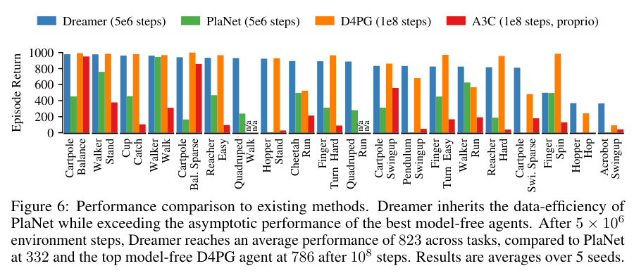
fa8822307f00c3d2102fc269f1fa1dc891ee477d50ba6293e88b0ebe3c9357cd原论文图表解读：跨方法数据效率与最终性能
DreamerV1 · Figure 6
图表说明：图 6 将 Dreamer 与 PlaNet、D4PG 和 A3C 在多项任务上的回报柱状对比；柱顶为论文报告的平均结果。
进一步分析：Dreamer 在约 5×10^6 环境步时的平均回报为 823，PlaNet 为 332；D4PG 需要约 10^8 步才达到 786。横轴的训练步预算与颜色图例同时编码数据效率和最终性能，显示潜空间 actor/value 更新能继承 PlaNet 的样本效率并超过模型无关基线。
证据边界：柱状图是论文给定任务集合和 5 个 seed 的平均，不等同于任意实现或未报告任务的泛化保证。
来源：00_sources/1912.01603/v1/pdf/paper_v3.pdf，SHA-256 318891d59ba0065f57eb0e735735700e5eb528f53bf08b81c773437385586c64，PDF 第 6 页；原始整页：10_figures/original-paper/full-pages/1912.01603-p6.png；裁剪框（PDF points）：(101, 72, 510, 248)；裁剪图：10_figures/original-paper/assets/1912.01603-figure-6-p6-crop.png，SHA-256 fa8822307f00c3d2102fc269f1fa1dc891ee477d50ba6293e88b0ebe3c9357cd。
11. 疑难问题与完整回答
这里完整回答跨论文和论文到源码的疑难。每条回答都保留计算、理由、条件和精确来源，读者无需打开生产日志即可理解结论；原始问答输出仅作为追溯材料。
来源限定问答与源码核验
六组跨论文疑问：结论、来源与适用条件
证据版本
本次最终综合使用 paperqa_complete_v3/ 的新索引，而不是早期索引。锚点 DreamerV1 PDF 经过官方 export.arxiv.org/pdf/1912.01603v3 重新取得并逐页检查：SHA-256 为 318891d59ba0065f57eb0e735735700e5eb528f53bf08b81c773437385586c64，20 页均有可解码文本，正文文字总数 58,973。旧的同字节长度 PDF SHA-256 为 4159d494...c331d719，第 6--20 页存在空文本和 malformed XObject，已保存为 rejected snapshot，不再进入 PaperQA2 语料。新索引包含 10 篇 PDF、231 个 text chunks，并为每个比较问题按论文分别召回 3 个证据上下文，避免单一相似度检索漏掉整篇论文。
PaperQA2 的 Q01--Q06 原始答案保留在 04_cross_paper/paperqa_complete_v3/；本文件只记录经过 PDF 原页、TeX 和论文页码回读后的 canonical 结论。PaperQA2 citation key 是检索线索，页码和原页文字是最终语义依据。
Q01：DreamerV1 与 PlaNet
DreamerV1 原页回读。 Dreamer PDF 第 2 页的式 (1) 定义表示模型、转移模型和奖励模型：观测条件的 p(s_t|s_{t-1},a_{t-1},o_t)、无未来观测的 q(s_t|s_{t-1},a_{t-1}) 和 q(r_t|s_t)。第 4 页的行为章节明确说 imagined trajectories 从经验数据中的真实 model state 开始，使用 transition、reward model 和 policy 展开；式 (5)--(6) 将有限 horizon 与 value bootstrap 连接。第 5 页图 5 则展示只给前五帧和动作，RSSM 开环预测 45 步。`
PlaNet 原页回读。 PlaNet PDF 第 1 页摘要说它是“purely model-based”并在 latent space online planning；第 3 页 Algorithm 1 和正文说明 MPC planner 从当前 belief 采样动作序列、在 latent transition 上计算奖励、只执行首动作后重新规划。第 5 页 Figure 2/式 (4) 区分 deterministic belief 与 stochastic state，latent overshooting 第 6 页解释为什么只训练一步预测不足以保证多步滚动。第 8--9 页消融把 RSSM、确定性 RNN、随机 SSM 和 latent overshooting 的效果分开报告。
结论。 两者共享“紧凑潜状态、可在 latent space 预测”的问题背景，但模型使用方式不同：PlaNet 每个环境时间步在线搜索动作序列，Dreamer 用模型状态批量生成想象轨迹，训练可重复执行的 action model 和 value model。Dreamer 的 posterior/prior 记号不能与 PlaNet 的 p/q 直接互换；这是两个版本的概率图定义，而不是矛盾。Dreamer 的 H、gamma、lambda 以及 PlaNet 的 CEM H/I/J/K 属于各自论文协议，不能混写。
Q02：MVE 与 DreamerV1 的价值估计
MVE 原页回读。 MVE PDF 第 1 页摘要把贡献定义为固定深度的 model-based value expansion，以改善 model-free critic 的价值估计；第 3 页 Definition 3.1 把 H 步模型奖励和末端 value tail 组合，第 4 页讨论 TD-k 如何缓解 imagined-state distribution mismatch。第 6 页 Figure 3 比较 H=10、H=3 和无 TD-k 的学习曲线，第 8 页 Figure 6 用 oracle dynamics 说明 H 增大存在递减收益，去掉 TD-k 后长 H 可能因为分布错配变坏。
Dreamer 原页回读。 Dreamer PDF 第 4 页式 (4)--(6) 原文明确区分 V_R、V_N^k 与 V_lambda：V_R 是从当前步到 imagination horizon 的 reward sum，原式不含 gamma；V_N^k 在 h=min(tau+k,t+H) 处以 gamma^(h-tau) v(s_h) bootstrap；V_lambda 是不同 k 的指数加权。第 5 页式 (7)--(8) 与段落说明 value target 停止梯度，而 action model 通过 reward/value/state/dynamics 的解析路径更新，行为学习时 world model 固定。
结论。 MVE 与 Dreamer 都利用“短模型预测 + 长期 value”结构，但 MVE 是 model-free actor-critic 的 critic target，通常谈 Q/value target 和 TD-k 分布；Dreamer 在 latent imagination 内同时训练 state value 与 action model，并使用 lambda-return。不能把 MVE 的 H-step target 直接称为 Dreamer 的 V_lambda，也不能从 MVE 片段推断其拥有 Dreamer 同样的 stop-gradient 规则。
Q03：Dreamer、PETS、I2A、MuZero 的行为选择
Dreamer。 第 4--5 页显示，action model 在 imagined latent trajectory 上优化 V_lambda，环境执行阶段由 action model 直接产生下一动作；不存在每一步必做的 CEM 搜索。固定源码 control/planning.py 的 CEM 是 optional branch，不能倒写成论文主路径。
PETS。 PETS 第 1--2 页将算法定义为 probabilistic ensemble dynamics + trajectory sampling + MPC；第 5--6 页说明每个控制步对候选 action sequence 做 ensemble particle propagation、CEM 优化，并执行首动作再规划。其 uncertainty handling 和 MPC 是在线搜索机制，不是可复用 actor 的 latent policy gradient。
I2A。 I2A 第 2--3 页为每个候选动作生成 rollout，经 rollout encoder 和 aggregator 形成 imagination code，再与 model-free path 合并进入 policy/value。I2A 的 encoder 学会解释或忽略不完美 rollout，而不是把模拟累计回报硬编码成 planner；第 6 页明确讨论 poor model 和误差后段。
MuZero。 MuZero 第 2--4 页把 representation、dynamics、prediction 组成一个只预测 planning-relevant policy/value/reward 的模型；第 3 页 Figure 1 和第 4 页说明每个环境步用 MCTS 搜索，执行由根节点 visit count 得到的 policy action。其 hidden state 不承诺重建原始观测，搜索目标和 Dreamer 的 actor objective 不同。
结论。 Dreamer 在训练期优化 action model、在测试期执行 policy；PETS 在测试期每步 MPC/CEM；I2A 用 rollout 作为策略输入；MuZero 用 MCTS 产生执行策略。四者的“想象”一词指向不同计算对象，不能把 model rollout、latent policy gradient、ensemble MPC 和 tree search 归并为一个算法。
Q04：表示学习目标
Dreamer 第 6--8 页和 Appendix B/E 比较 reconstruction、contrastive 与 reward-only。重建为视觉信息提供密集监督，但可能保留控制无关像素；reward-only 可能忽略暂时不产生奖励却影响未来控制的对象；contrastive 依赖 batch negative samples。实验图支持“该任务集合中的重建表现通常较好”，不支持重建在所有环境原则上最优。
SLAC PDF 第 1--5 页把 stochastic sequential latent variable model 用作表示学习，再在 latent critic 上做 model-free actor-critic；其生成式预测提供比稀疏 reward 更早的监督，但它不等于在模型 rollout 中训练 Dreamer 式 actor。
MuZero 第 2--4 页明确取消重建要求，hidden state 只需预测 search policy、value 和 reward；这是一种 task-relevant representation，不能由此推出它能恢复完整视觉状态。
Dreaming PDF 第 2--6 页把 decoder-free contrastive/InfoMax objective、random crop 和独立 linear forward dynamics 作为 Dreamer 表示学习的修改。第 6--7 页的消融把 independent/shared linear dynamics 分开；线性模块服务对比约束，主 RSSM 仍负责世界模型和行为想象。Dreaming 的 locomotion 限制和物体消失基线结果属于它自己的实验，不能倒写成 DreamerV1 的普遍失败。
Q05：horizon、模型误差和数据效率
Dreamer 第 4--5 页用 V_N^k/V_lambda 和 Figure 4 说明 value model 让有限 imagination horizon 更稳健；第 5 页图 5 用五帧上下文、45 步开环预测展示 RSSM 的长期 latent prediction。第 8--9 页的 20-task、5e6 environment-step 结果必须连同任务集合、R=2、seed 和硬件协议解释。
PlaNet 第 5--6 页把 latent overshooting 作为多步 prediction 训练，避免一步 KL 对长期规划不足；第 8--9 页报告其对稀疏 reward 和部分任务方差的影响。PETS 第 5、15--16 页强调 MPC horizon 的 bias/variance 取舍和 uncertainty propagation；I2A 第 6、9 页说明 encoder 可以学习忽略模型误差后段，代价是每步 rollout 计算随动作数和深度增加。
这些证据分别回答不同问题：Dreamer 的 value bootstrap 解决有限策略想象的长期信用分配；PlaNet 的 overshooting 直接训练多步 latent prior；PETS 通过概率 ensemble 控制模型不确定性；I2A 学习解释不完美 rollout。不同论文的步数、episode、trial、MPC horizon 和 benchmark 不能排成统一样本效率排行榜。
Q06：Dreaming 的修改与保留
Dreaming 原页第 2--4 页明确保留 Dreamer 的 latent imagination 行为学习骨架、RSSM 世界模型和 policy/value training，同时移除 reconstruction error 对主控制模型的反向传播。第 4 页之后的目标描述和第 6 页消融支持 decoder-free contrastive objective、random crop 与 independent linear forward dynamics；其线性辅助模型不能替代 RSSM。DreamerV1 第 4--5 页原页回读提供被修改前的 reconstruction、RSSM、V_lambda 和 analytic action-gradient基线。
限制。 PaperQA2 的 Dreaming context 页码有部分“section/figure”线索而非印刷页号，因此该部分的精确页码以本任务 2007.14535.pages.txt 与对应全文分析为准；不把自动回答中的缺失页码填成猜测。完整 PDF 已保存，未用摘要替代。
证据状态
六个新查询均有完整索引、逐论文召回和原始 JSON；本文件完成了主要 claim 的原页回读。早期 broad queries query-01--query-06 仍保留，其中 Q1/Q2/Q3/Q6 是 I cannot answer 或召回不匹配，不能作为最终证据。旧损坏 Dreamer PDF 的 index/contexts 也保留为 rejected provenance，不进入本文件的 canonical source set。
从论文疑问定位真实计算
本台账把锚点论文精读中的疑问交给固定 commit 的源码逐项回答。Paper Fact 只来自论文；Code Fact 只来自源码；两者之间的解释标为 Evidence-supported interpretation。未运行 TensorFlow 1.x，因此不把静态证据写成 runtime observation。
Q01：RSSM 的 posterior 和 prior 是否是两个完全独立的网络？
直接答案。 不是。_posterior 先调用相同的 transition 计算 prior belief/rnn_state，再把 observation embedding 和 belief 拼接，独立地产生 posterior 的 mean/stddev。它复用 recurrent memory，但观测只改变随机状态分布参数。
源码证据。 models/rssm.py:78-100 的 _transition 接收上一状态和 action；models/rssm.py:102-120 的 _posterior 先获得 transition 结果，再融合 embedding。features_from_state 在 models/rssm.py:56-68 只拼接 sample 与 belief。
边界。 论文只用概率记号表达这种分工，没有承诺 posterior 的 belief 更新一定由 observation 直接重写；代码语义决定了本实现的具体顺序。
Q02：latent imagination 怎样保证不读取图像？
直接答案。 想象分支把真实 posterior state 作为起点，构造零 observation，并把 use_obs 置为 false；tf.scan 每一步只根据上一步 state 和策略 action 调 RSSM prior transition。
源码证据。 training/utility.py:244-267 执行 batch/time 展平、零观测、use_obs=False 和 tf.scan(back_prop=True)。因此图像编码器只服务于真实数据的 posterior/context，不进入纯想象 rollout。
边界。 想象仍然依赖真实序列提供的起始 posterior；“不读取图像”不等于“从随机初始状态自由生成”。
Q03：为什么 value 可以是 state value 而不是 Q value？
直接答案。 在 imagined trajectory 中，策略已经产生 action，transition 又明确计算 action 对下一个 latent state 的影响，因而对 state value 展开链式梯度就能得到 action 更新方向。
源码证据。 action objective 在 training/utility.py:303-331 使用保留梯度的 return；transition 由 imagine_forward 产生。value objective 在 :270-300 只用 stop-gradient target 回归 value head。
限制。 这要求 learned transition 对动作路径可微或使用 straight-through 近似；它不表示 Q value 在一般 RL 中没有价值。
Q04：固定 commit 的 bootstrap 是否与公式完全相同？
直接答案。 递推结构对应论文的 与 ，但代码先对 reward/value/pcont 做 [:, :-1]，随后从已截断的 value[:, -1] 取 bootstrap；这个切片顺序是需要保留的实现风险，不能只凭公式宣称完全等价。
源码证据。 training/utility.py:270-301,303-331；递推实现位于 control/temporal_difference.py:48-74。Phase-A verification questions 将该事实列为独立核验项。
状态。 partly_answered_by_code：静态语义可定位，未运行数值对照，不判断这是有意的序列对齐还是 bug。
Q05：论文中的 Dreamer 主路径与 CEM planner 如何区分？
直接答案。 Dreamer 主路径训练 action/value heads，并在环境中用 action head 逐步执行；CEM 是单独的候选动作序列搜索分支，代码可用于 PlaNet 风格对照或配置化推理。
源码证据。 control/planning.py:24-74 实现 CEM；control/simulate.py:48-135 按 planner/action-head 分支执行。论文主文将 online planning 作为对比路线，并不把 CEM 定义为 Dreamer 的默认行为学习算法。
Q06：为什么 imagination_include_initial 不能直接写进算法说明？
直接答案。 它在配置中赋值，但固定源码 inventory 没有找到消费者；因此只能记录为未消费配置，不能声称会把初始 state 自动加入 imagined sequence。
证据。 scripts/configs.py 的字段定义与 Phase-A verification-questions.md 的全仓库消费者检查。
Q07：训练、测试和真实交互在哪里分叉？
直接答案。 scripts/train.py 组装 config、数据集和 model；training/trainer.py:104-216 通过 phase 注册 train/test iterator、summary 与 checkpoint；control/simulate.py 是环境交互 TensorFlow loop。环境动作不是训练 batch 的标签，而是 action head/planner 的推理输出。 真实评测还可在test日志路径进入 define_summaries，由 test_collects 调用环境；这不更新网络参数。来源：dreamer/training/define_summaries.py:97-117。
Q08：哪些论文机制在源码中是可选而非默认？
pcont、overshooting、CPC、target head、CEM、离散 OneHot 和 future_rnn/mean_only 都有代码入口，但配置或分支决定是否启用。overshooting_scale=0.0 的默认值尤其不能被写成论文主实验必开。
Q09：源码能够回答哪些论文未写出的细节？
它能回答 feature 维度（默认 30+200=230）、encoder 输出 1024、tf.scan 的展平形状、optimizer include/exclude、reset 和 dataset pcont 语义。这些是 Code Fact，不应倒写成论文明确报告。
Q10：源码不能回答什么？
静态阅读不能证明训练曲线、GPU 速度、随机种子下指标、TF1/TFP 版本运行兼容性，也不能把后续 README 或 master 分支行为追溯成论文期默认。
结论
代码核验支持论文的核心链路：posterior state → prior-only imagination → differentiable return → action/value objectives。它同时暴露了版本默认值、可选分支和两个需要谨慎措辞的实现细节（未消费配置、bootstrap 切片），所以本报告把算法主线与源码能力分层呈现。
12. 学习回顾、来源与未验证项
用联合综合回顾状态、想象、长期价值和动作梯度，再检查自己能否复述一次完整控制循环。历史修订记录保留为历史，当前静态语义验收与尚未执行的训练、环境和指标分别标明；最后给出精确来源入口。
综合、学习顺序与证据边界
DreamerV1 论文-机制-代码联合综合
身份与边界
锚点是 Dream to Control: Learning Behaviors by Latent Imagination，arXiv 1912.01603v3，ICLR 2020。当前正式 PDF 使用 export.arxiv.org/pdf/1912.01603v3 重新取得的完整字节，SHA-256 为 318891d59ba0065f57eb0e735735700e5eb528f53bf08b81c773437385586c64，20 页均可解码。官方实现固定在 google-research/dreamer commit 0ffec86436239d41cecaff34abcf57dca5539839，源码只读、未修改、未训练。
一句话机制
Dreamer 从真实图像历史推断 posterior model state，使用没有未来图像的 prior-only RSSM 在紧凑潜空间批量想象，用 V_R、V_N^k 和 V_lambda 估计长期回报，再用 value target 回归和可微 action return 更新 action/value heads；真实环境只负责执行动作并产生下一轮经验。
四层事实结构
| 层 | 结论 | 证据 |
|---|---|---|
| 问题背景 | POMDP、图像观测高维、环境交互昂贵、短 horizon 会短视 | Dreamer PDF Sec. 1-2 |
| 方法范式 | latent world model + actor-critic imagination；PlaNet CEM、PETS MPC、MVE value expansion、I2A rollout encoder 是相邻路线 | 04_cross_paper/paperqa-final-synthesis.md |
| 核心机制 | RSSM posterior/prior、prior-only imagination、value bootstrap、analytic action gradient、representation objectives | Dreamer Sec. 3-4, Appendix B/E |
| 代码实现 | models/rssm.py、training/utility.py、control/temporal_difference.py、control/simulate.py、配置和可选分支 |
fixed commit line evidence |
主计算链
[B,T,64,64,3] -> encoder [B,T,1024] -> posterior {sample:30, belief:200} -> feature 230 -> flatten N=B*T -> prior-only tf.scan H=15 -> [N,H,230] -> reward/value/action heads。
想象初始化只使用真实序列得到的 posterior state；代码构造 zero observation 与 use_obs=false。tf.scan(back_prop=true) 保留时序计算图。行为学习时 world model 参数被 optimizer 分组冻结，但 action return 的梯度仍可穿过 learned transition/reward/value 的计算。
价值与梯度
论文式 (4) 的 V_R 是 horizon 内 reward 的直接和，没有 gamma；式 (5) 的 V_N^k 在 h=min(tau+k,t+H) 处 bootstrap value；式 (6) 的 V_lambda 混合不同 k。源码把 value target 传入 lambda_return(stop_gradient=True)，action path 使用 stop_gradient=False。固定 commit 的 bootstrap 切片顺序另记为静态语义风险，尚未以 TF1 runtime 数值判断。
表示学习
重建目标给视觉信息提供密集监督；CPC/contrastive 使用 batch 内负样本；reward-only 可能丢掉当前无奖励但未来有控制价值的视觉状态。Dreaming 后续移除重建误差对控制模型的反传，加入 decoder-free contrastive 与独立 linear auxiliary dynamics，但保留 RSSM 和 Dreamer-style policy/value imagination。
实验边界
20 个视觉控制任务、、固定 action repeat、5 seeds 和论文报告的训练步数支持“该协议下组合有效”。它们不能证明任意环境的 model accuracy、跨硬件墙钟可比性或后续 Dreamer 版本的性能。PaperQA2 横向结论见 04_cross_paper/paperqa-final-synthesis.md，不同论文的 benchmark 协议不合并排名。
代码差异
imagination_include_initial被赋值但没有源码消费者；不能把它写成有效算法开关。pcont、overshooting、CPC、target head、CEM、OneHot 等是配置化能力，不能自动归入论文默认主线。imagine_forward返回扁平[N,H,...]，不恢复原 batch/time 轴，也不包含 initial state。TanhNormal.stddev()、MPC reset 和 nested helper 参数顺序被列为静态风险；它们不是论文主张。
阅读结论
DreamerV1 的贡献是把可学习 latent dynamics、短 horizon imagination、state-value bootstrap 与 analytic action optimization 组合成交替训练闭环。理解时必须把论文事实、源码事实、证据支持解释和未运行项分层；任何单一公式、配置或可选 planner 都不足以代表完整算法。
如何区分论文、源码、教学计算和运行结论
理解本报告的结论，需要先辨认它依据的是论文实验、固定源码，还是纸面计算。论文数字说明作者协议下的结果，源码说明这一提交怎样计算，教学实例说明指定假设怎样推出中间量；三者都不能自动变成本机运行证据。
正式机制图用于解释状态、计算和实现关系；论文原图用于展示作者真正发表的结构或实验证据。两者分别接受核验：一张自制图科学准确，不会让其他图自动通过；一张预测视频可读，也不会证明策略回报。本文已经在十篇论文的对应解析中保留三十个原图入口，原编号、PDF页码、图注和结果解释随图展示。图稿的候选、撤回和生成记录见材料修订审计（此附件保存在完整本地归档中）。
材料的独立源码问答核验覆盖三十四个问题，用途是检查文字能否解释固定实现。它不证明用户理解，不验证 TF1、训练或指标；本任务没有执行这些运行。引用论文的回报、训练时长和样本效率时，应明确说“论文报告”，并回到对应任务和预算。
追溯入口
完整源码摘录、机器 JSON、revision evidence、raw 日志和失败样本都保留为可哈希附件；正文提供中文结论、公式、教学例、问答和证据边界，不要求读者打开机器文件才能理解机制。
当前报告的证据范围与图稿状态
理解本报告的结论，需要先辨认它依据的是论文实验、固定源码，还是纸面计算。论文数字说明作者协议下的结果，源码说明这一提交怎样计算，教学实例说明指定假设怎样推出中间量；三者都不能自动变成本机运行证据。
本报告按问题、方法、公式、源码和实验证据组织完整解析，配套三十张原论文图表，以及14张在本独立任务中原生生成并经逐元素审校的正式机制图。每张正式图的中文详解与对应章节一起阅读，来源、适用配置、教学实例和未运行边界均随内容说明。目录展开、字号调整、深链接和图片原分辨率查看用于支持阅读；图稿来源与交付记录见图稿覆盖与交付审计（此附件保存在完整本地归档中）。
三个易混淆的公式和状态接口
旧汇编中论文式（4）的 V_R 是 horizon 内 reward 的直接和，不带 gamma；旧教学例曾将它写成约 0.98，已经按 paper-only 修正版改成未折扣计算。V_N^3 的第三步 reward 也不能在 bootstrap 外重复计入，终点由 h=min(tau+k,t+H) 与求和上限 h−1 约束。RSSM transition 的真实输入是上一 stochastic sample 与上一 action；posterior 再把 prior belief 与 observation embedding 拼接，不能笼统写成“三者拼接”。这些纠错保留 old/source/new 映射，原旧段落仍作为追溯基线。
图表与论文原图的职责
当前任务原生自制图必须以当前 session/call/end 与 PNG 哈希验收，旧图 accepted 状态不继承。F03 的单图科学审校不能替代其余图的验收。原论文 30 个图卡由 10 篇论文各 3 项组成；canonical 只在每篇正文材料旁提供 paper-<id>-original-1/2/3 锚点，caption、页面、精确裁剪、哈希和 further_analysis 由 10_figures/original-paper/manifest.json 拥有。锚点论文 1912.01603 的三个锚分别放在其三遍精读对应部位，后续插图不能把所有原图堆到文末。
静态语义验收与执行边界
理解本报告的结论，需要先辨认它依据的是论文实验、固定源码，还是纸面计算。论文数字说明作者协议下的结果，源码说明这一提交怎样计算，教学实例说明指定假设怎样推出中间量；三者都不能自动变成本机运行证据。
论文报告的平均分 823/332/786、训练预算 5×10⁶/10⁸ 环境步和时间 3/11/24 小时，分别带有任务、预算和硬件条件。尤其前两种时间以每10⁶步计，D4PG的24小时指达到相近性能，不能并排写成同一速度单位。本任务没有重新运行这些结果。测试函数只有 train.main(args) 而无数值断言时，即使未来运行成功，也只能证明该配置控制流可达，不能证明策略效果。
静态接口与返回时间轴必须分开：imagine_forward 先把 posterior 的前两轴合成起点批次 N=B*T，再一次性创建 obs=[N]+obs_shape 和 use_obs=[N,1]。当 obs_shape=(E,) 是 embedding 形状时，零观测就是 [N,E]；固定卷积编码器下 E=1024。这两个张量在 tf.scan 的每一步复用，不带 H 轴。比如 B=2、T=3、H=4，obs 是 [6,E]，use_obs 是 [6,1]，只有 scan 返回的状态才带 [6,4,D]。[N,H,E]、[N,H,1] 是 CEM 等其他带时间轴路径的布局，不能用来回答本函数的输入形状。证据：dreamer/training/utility.py:244-267，尤其第 249–250 行，固定 commit 0ffec86436239d41cecaff34abcf57dca5539839。
批环境的三项一致性：create_batch_env 要求 observation space、action space 和 blocking 标志全部一致。函数先对 blocking 值执行一致性断言，再把环境包装为 batch；不能把同步返回 transition 的环境与异步返回 promise 的环境混在同一批。比如两个环境的 spaces 完全相同，但 blocking 分别为 True 和 False，仍会在构造时失败。证据：dreamer/control/simulate.py:25-32，尤其第 29 行，固定 commit 0ffec86436239d41cecaff34abcf57dca5539839。